序
農業是最貼近土地的產業，配合四季的循環，農業經營的樣貌
也隨著季節變化調整。各種農作物歷經數千年的馴化，也逐漸適應在地的環境與天候。然而天有不測風雲，自然界往往突發不利作物生長的氣候，造成農業災損與歉收。為了保護作物、穩定農業生產，寒帶地區開始興起以保溫為目的，研發運用人為構造物的思維，在農地興建溫室取代露天的作物栽培。在溫室的應用過程中，相關新興科技的應用，作物生理知識的累積，溫室的作物栽培，已經從單純保護作物的目的，進化到利用環境控制調節作物生理，追求栽培作物產量增加與品質提昇的境界。處於熱帶亞熱帶氣候型態的台灣，同樣以保護作物的初始點，初期以防雨為目的，於1960年代開始導入簡易型溫室，實施設施栽培。歷經數十年的發展，溫室設施的應用已從簡易設施到精密結構型溫室，栽培作物也從早期的外銷花卉、蝴蝶蘭，擴展到蔬菜、水果等其他園藝作物，甚至如芒果、印度棗等熱帶水果也逐漸納入設施栽培。現今溫室應用已演變為國內穩定農產品供應，及安全高品質生產的重要栽培型式，其中最具代表性的作物當屬皮薄、甜度高的玉女小番茄，目前已成為國內設施栽培的特色產品。
在常態性全球暖化及短暫性強風暴雨的異常氣候現象中，應用溫室的農業生產有大幅增加的趨勢。相異於寒帶地區的溫室應用模式，經由熱帶亞熱帶氣候的體驗，台灣的設施農業，對溫室結構安全與內部環境的調整控制，已逐漸建立本土化的應用模式，這些研發成
果散見於各研究單位及學校的報告或論文中，缺乏系統性的歸納，導致在學校相關科系的知識傳授與農民的實際應用受囿，造成推廣上的落差。有鑑於此，中正農業科技社會公益基金會協同台灣農業設施協會，自台北市瑠公農田水利會申請「熱帶・亞熱帶溫室設計的應用理論與實務編纂」計畫，邀集農工及園藝專家與學者，組成編輯委員會，擬定編輯方向與架構，彙整歸納國內外研究成果，聚焦台灣地區熱帶亞熱帶氣候型態之溫室，工程方面從溫室構造，到內部環境設備的設計與控制，作物方面從生理與生長，到栽培管理，內容論述從基礎理論到實務應用，編纂為「熱帶亞熱帶溫室設計的理論與應用」專輯，提供專業農民在溫室搭建，環控設備的選用與控制，及作物栽培管理的應用參考。
面對高度多樣化的台灣農業，設施農業領域尚有諸多待解決的問題，本專輯難免掛一漏萬，惟祈就教於方家，並致拋磚引玉之效。專輯以教科書方式編排，亦可提供作為園藝及農工等相關課程授課參考。期盼有助於有志學子從基礎紮根，啟發新的思維，開發創新的技術與應用，永續推動設施農業的發展，建立台灣在熱帶亞熱帶溫室理論與實務的領導地位。
財團法人中正農業科技社會公益基金會董事長
序
由於氣候變遷全球糧食生產出現危機，目前大多數的露天栽培已
逐漸轉為溫室設施來生產。1903年荷蘭建成第一棟玻璃溫室，用以生產蔬菜，1967年，荷蘭國立工學研究所的Germing，首創Venlo型連棟玻璃溫室。由於該溫室結構 簡潔、堅固，透光量大，操作空間大，環境調控能力強，管理方便，造價相對合理，應用效果良好。台灣的設施農業自1980年代開始，先引進荷蘭溫室來做設施農業生產，然而所有的溫室並不是基於相同的氣候下設計的。荷蘭溫室適用寒冷氣候，在漫長冬季，下雪、低光、強風下的溫室，並不適用於高濕、光量多變化的熱帶亞熱帶氣候。
亞熱帶與熱帶地區，對於作物是最不利的因子有烈日、暴雨、病蟲害繁殖迅速與颱風損害。而且針對颱風特性，發展出抗颱設施結構。台灣是亞熱帶氣候，其溫室設計的主要目的在於降溫，台灣的氣候溫度非常適合種植蔬果，但高濕度的氣候環境使病蟲害問題嚴重，因此台灣使用改良自荷蘭溫室成溫網室設施農業，其溫網室設施有遮蔭網，塑膠布屋頂，四周防蟲網等構成之設施。不同的溫室用以依據外界的環境執行各種層次的保護作用，再依靠其環控設備以控制、調節內部的環境。需要保護的程度由作物種類與地區氣候所決定。搭建
溫室之目的在於使其設計在其特定地區以克服最惡劣的環境，與使其作物得到最高產量。
有鑒於此本書「熱帶亞熱帶溫室設計的理論與應用」可以提供處於亞熱帶地區的台灣及未來新南向東南亞熱帶地區溫室設計規範的很好參考。本書先介紹台灣熱帶亞熱帶型態溫室的發展與應用現況，繼而將溫室內生產的作物生長與管理重要生理作用、環境植物生理與作物管理、設施害物管理介紹，針對溫室功能主要標的物知識做說明。才進入溫室構造規劃與結構設計、環境控制設備與應用含溫度、光、濕度、CO2、氣流、水養液灌溉及自動控制原理與實例介紹，是一本很適合台灣溫室設計的參考書。
國立嘉義大學校長
編者的話
溫室本以保溫用途發展於高緯度的寒帶地區，位於熱帶亞熱帶的台灣地區自民國60年代，從防雨的初始目的，開啟園藝設施應用及研究。歷經數十年的變遷，期間國內大專院校、研究試驗單位、溫室及園藝生產業者等持續進行相關的溫室工程與栽培等試驗研究，也有導入荷蘭、日本、以色列等設施園藝先進國家的溫室產品與技術，現今台灣的溫室設施在產官學各界齊心戮力下，無論在技術面或應用面，累積相當知識與經驗，配合作物生產的本土化開發已呈現其成就，進一步將此成果有推展至國外諸地區，台灣的溫室產業在世界已占有一席之地。而在氣候日益偏離節氣的變化下，為穩定國內蔬果農產品的正常供應，及今後安全、高品質蔬果生產的消費導向，利用溫室設施發展設施農業已為必然方向之一。政府為穩定災害期間蔬果供應量，於 107年推動5年設施農業計畫，在該政策引領下，帶動溫室產業邁向新一波的發展高峰期。然觀察目前台灣溫室設施應用現況，仍有諸多亟待努力改善的進步空間；如105年尼伯特、莫蘭地、梅姬接續三個颱風，摧毀國內園藝設施面積達2,488公頃，吹出溫室在抵抗熱帶亞熱帶特有颱風強風侵襲上合理性構造安全的問題。蝴蝶蘭環控溫室外，大部分自然通風溫室以高經濟性的小蕃茄為主要作物，造就成台灣另一特有農產，但於熱帶亞熱帶強日射、高溫潮濕的氣候型態下，產期侷限於秋冬季，單一作物品項產量過度集中逐漸形成產銷失衡的現象。顯現台灣地區溫室如何適當利用環控設備，運用熱帶亞熱帶氣候體驗的環控模式，製造氣候環境進而調控作物生理，擴大栽培品項及周年性生產的問題。另外農業人口缺工老化，在擴大生產規模或提升競爭力上，有因應智慧農業的發展潮流，積極導入自動環境控制裝置，及栽培作業管理設備的迫切需求。台灣溫室歷經數十年的發展背景與脈絡，針對熱帶亞熱帶地區溫室的工程與栽培技術，已累積甚多相關研究成果及經驗，並能從國外引進商品技術的失敗案例，學習本土化改良應用。相對於高緯度寒帶地區，台灣擁有發展熱帶亞熱帶地區溫室的先天優勢，系統性整合既有資源，在溫室結構與環境設計上，從解決溫室在台灣使用的問題點出發，培育人才及創新關鍵工程技術，將可建立台灣在熱帶亞熱帶地區設施農業執牛耳的定位。
溫室工程技術為推動設施農業發展的原動力，台灣目前處於諸多問題須待解決，及新技術需求導入的匯流期，相關的研究或產業人員急需年輕後代銜接，而在人才培育方面，國內尚缺一園藝、農工領域可共通的入門專書，幸得中正農業科技社會公益基金會之主導，授權邀集國內溫室工程、設施栽培等相關學者專家，成立編輯委員會，針對台灣熱帶亞熱帶的特有氣候型態，彙整國內既有研究成果，參考國外技術資料，分作物生理與栽培環境及溫室設計、環控技術及設備，控制工程及新發展技術等章節，從設計溫室應用的基礎理論著手敘述，到現場應用實務講解，以教科書編撰方式，彙編《熱帶亞熱帶溫室設計的理論與應用》，用以提供相關溫室建造業者及設施栽培農民，對溫室能有合理的設計與使用；或大專院校相關科系學生，能有系統和效率學習、應用的工具，冀望對台灣設施農業發展能有所助益。
個人於大學時期即追隨王鼎盛老師修習溫室工程，對溫室構造及環境控制知識能有初步之認識。當時正值國內產官學積極投入發展設施農業之發軔期，國內學界除本身自主研究外，同時也聘任國外學者來台傳授相關知識技能，因緣際會而有後續赴日深造的機會。返國任職時，指導教授勉勵以「建立台灣本土化溫室」，至今雖言猶在耳，尚未能達成師長之勉勵竟已臨屆退還曆之齡。終究此一巨大目標非一人之力所能達成，感謝財團法人中正農業科技社會公益基金會及瑠公農田水利會全力促成，在退休前並能獲得各編輯委員之允諾，奉獻所學與經驗，始能完成《熱帶亞熱帶溫室設計的理論與應用》之編輯，可將目前發展本土化溫室的經驗加以傳承。而本書之內容，僅為編輯委員淺見彙編而成，對建立本土化溫室目標止於拋磚引玉，期望各同道先進不吝賜教指正，盼爾後先進後學能有更精進充實的專書問世，促進溫室技術的改良與創新，永續台灣設施農業的發展。
台國灣立農中業興設大施學協教會授理事長

目次
壹. 台應灣用熱現帶況亞熱帶型態溫室的發展與 15
第一節 台灣熱帶亞熱帶型態溫室的發展 16
第 二 節 園 藝 設 施 應 用 現 況 19
一、地面覆蓋二、霜傘
三、浮動覆蓋四、隧道棚 五、水平棚架六、網室
七、遮雨棚
八、錏管塑膠布簡易型溫室九、結構型溫室
貳 . 作 物 環 境 生 理 29
第 一 節 植 物 的 重 要 生 理 作 用 30
一、光合作用二、呼吸作用三、蒸散作用四、吸收作用五、運輸作用
六、構成植物生長的物質

第二節 環境因素對作物生長的影響一、光
二、溫度三、濕度
四、二氧化碳五、風
六、介質與營養
叁. 溫室構造
第一節 溫室總體規劃設計
一、溫室規劃設計的方法論二、溫室設計的發展歷程 三、溫室設計的考量
第二節 溫室構造設計理論一、光學
二、熱流學三、材料學四、結構學
五、溫室電腦輔助工程分析
第三節 溫室構造系統設計
一、溫室構造系統的設計邏輯二、溫室構造系統簡介
三、溫室構造設計流程
四、溫室結構設計與工程分析五、溫室的基本構造
六、溫室構造元件七、溫室載重分析八、被覆規劃設計九、結構材料設計十、基礎結構設計
十一、溫室結構元件連接設計
50
89
90
97
102

第四節 溫室構造優化設計
一、溫室所面臨的特殊環境載重分析二、溫室破壞模式分析
三、溫室結構面對颱風的破壞模式分析四、溫室防颱工程設計
肆. 環境控制設備與應用
第一節 環境控制的理論基礎一、光與輻射
二、空氣
第二節 溫室內氣候環境特徵與控制一、溫室內氣候環境特徵 二、溫室內氣候環境控制
第三節 光環境控制
一、遮光二、補光三、電照
第四節 溫度環境控制
一、降溫輔助措施二、通風
三、蒸發冷卻四、熱泵
五、保溫六、加溫
第五節 濕度環境控制
一、飽差過大的濕度管理操作二、飽差過小的濕度管理操作
127
141
142
170
174
180
207

第六節 CO2環境控制
第七節 氣流環境控制第八節 灌溉控制
第九節 熱帶亞熱帶溫室的基本環控配備與應用
伍. 控制原理與實例
第一節 感測器
一、前言
二、感測器規格與特性表示三、溫室栽培常用感測器
第二節 控制工程
一、基礎控制技術簡介二、環控設備的分類 三、ON/OFF控制
四、運轉程度可變控制
第三節 控制實例
一、蝴蝶蘭溫室溫度控制
二、定時器控制的噴霧降溫系統
211
215
218
228
233
234
245
264
三、應用PLC於半開放式棚架溫室的環境控制四、模式控制
五、複合因子的環境控制

陸. 設施害物管理
第一節 害物種類及生態
一、生物性因子 二、非感染性害物
第二節 害物防除技術
一、檢疫與隔離二、耕作防治 三、物理防治 四、生物防治 五、化學防治
第三節 害物整合管理之定義與原則一、害物診斷與鑑定
二、預防
三、監測與評估四、治療
五、紀錄
六、檢討與改善
第四節 設施栽培之害物整合管理策略制定方針 第五節 選用適合當地設施栽培之健康種子、種苗第六節 巡視、監測與診斷
一、危害界線與防治界線二、監測技術
277
278
281
283
285
288
289

第七節 種植期間之管理措施一、提高警覺
二、耕作防治技術三、物理防治技術四、生物防治技術
五、化學藥劑防治技術六、雜草管理
七、藻類防除八、蘚苔管理
九、軟體動物防除
十、工作人員安全與健康維護
第八節 採收後之管理措施
一、農產品之採收與儲運
二、貯藏空間之衛生維護與採後農產品 之耗損有極密切關係，亦須加強管理
第九節 紀錄與效益評估
一、評估管理成效二、擬定改善措施
柒. 未來發展動向及展望
一、溫室栽培環境因子之新研發二、溫室的未來
三、未來的溫室
四、次世代溫室種植概念的興起五、半密閉溫室
參考文獻
291
297
298
299
331
註：2015年塑膠布溫網室新增列為統計項目，於本書名稱為簡易型溫室。

第一節 台灣熱帶亞熱帶型態溫室的發展

溫室的應用以保溫為初始目的，源起於高緯度寒帶地區。台灣跨處熱帶亞熱帶緯度，氣候型態終年適宜作物生長，但相對具有夏季高溫高濕、季節梅雨、豪大雨後接續的強日射、頻繁發生的颱風，及冬季偶爾侵襲的寒流等氣候特性，年年造成不同類型天然災害的農業損失。在台灣農
業發展的過程，為克服此些不利作物生產氣候，也開始利用人為資材或設施以保護作物，確保農業生產。從早期使用稻草或塑膠布覆蓋土壤，防止雜草孳生及雨水沖刷；切花外銷鼎盛時期，使用遮雨棚隔離雨水，防止病害；為穩定夏季蔬菜生產的蔬菜栽培網室等簡易設施的利用；到引進
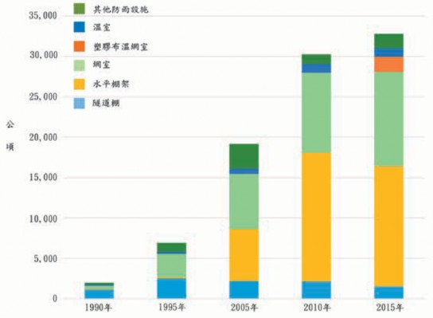
圖1.1 台灣歷年各類設施栽培面積的變動。(行政院主計總處，2018)
並改良園藝設施先進地區技術，用以蝴蝶蘭等高經濟作物生產的全環控精密溫室。在熱帶亞熱帶的氣候體驗下，因應作物品項、生長階段、經營目標與商業模式等，依使用目的與需求機能，各有發展對應的栽培設施型式，其應用現況於下一章節敘述。依據行政院主計總處1990～2015年的普查統計，各類栽培設施面積的變動趨勢如圖1.1，2005年後呈現大幅成長。於2015年設施栽培面積共達32,861公頃，各類設施所占面積比例如圖1.2，以栽培果樹及蔬菜的簡易水平棚架及網室為主要生產設施，設施建造成本較高的塑膠布溫網室及
溫室各為1,846及1,104公頃，合計僅約為設施總面積的9％。水平棚架及網室等簡易設施的應用，在台灣的農業生產雖有具體的助益，但面臨強風或豪雨侵襲，作物損傷或設施損壞的風險相對也高。為穩定蔬果生產，農政單位於2017年開始推動5年設施農業計畫，推廣加強型水平棚架網室，錏管塑膠布簡易溫室及結構型溫室等抗風性設施。另外氣候異常持續加劇，農民業者為能計畫性生產，及安全高品質產品的消費導向需求，對抗風性較高，能夠導入適當環控設備的錏管塑膠布溫網室或結構型溫室，使用意願也提高。除蔬果類外，原
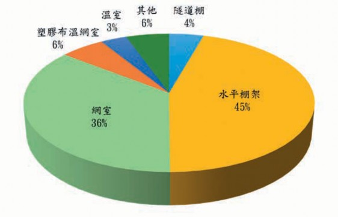
圖1.2 2015年台灣各類設施栽培面積比例。(行政院主計總處，2018)

本露天栽培的熱帶果樹，為防患病蟲害及氣象災害也逐漸走進設施栽培。綜合諸因素，今後溫室設置面積預估將快速增加，而在歷經40餘年發展過程的經驗累積，相較於高緯度地區溫室的應用概念，位於熱帶亞熱帶台灣的溫室，在結構安全、氣候環境與農業經營型態等方面，各具有差異的設計考量與應用狀況。
一、結構安全方面
相較於寒帶地區溫室以增加光線透光率，及積雪垂直荷重為結構設計著眼點，使用輕型鋼構材及玻璃被覆為主。在熱帶亞熱帶氣候地區，基於低成本考量，目前溫室大部分使用錏管構材及軟質塑膠布被覆，於颱風經年性發生的氣候中，溫室抗風安全性為基本要求，結構主要承受橫向風力荷重，如何在不增加過多成本，滿足室內作物光環境需求的前提，經由零組件的補強與改良，開發低成本耐候型溫室為發展方向。
二、氣候環境方面
相較於高緯度，低溫乾燥的大陸性氣候，使用大面積規模多連棟的溫室，內部氣候利用無遮光、高度環控的方式調整室內環境。於熱帶亞熱帶區域強日射、高溫高濕氣候型態，病蟲害多發生，多連棟大
面積的溫室內容易累積過多熱量與水氣，必須藉助困難達到的龐大通風量才能加以排除。於目前溫室環控設備尚未普及使用的情況下，如何運用台灣蝴蝶蘭溫室環控發展的經驗，建立適當經濟溫室面積規格，與遮光、通風裝置及室內循環扇等基本配備的應用模式，調節適當作物生理的氣候環境，提高溫室使用效率，邁向熱帶亞熱帶區域溫室全年性生產的方向發展。
三、農業經營型態方面
如荷蘭等園藝先進國家溫室，以農企業型態經營，大面積栽培管理作業，充分自動化降低生產成本，集中番茄或彩椒等少品項蔬果作物，較不重視風味，以追求產量為生產目標。蝴蝶蘭溫室以外，台灣熱帶亞熱帶型態的溫室，普遍為0.2～0.3公頃的小農經營，栽培作物從葉菜到瓜果類及果樹等多樣品項，產品因應消費導向著重外觀與風味品質。在農業經營型態的發展，除推動農企業的創設外，並須結合小農共同經營，資材與技術共購共享，以降低生產成本確保供銷通路。在生產面，掌握既有高品質關鍵栽培技術，發揮熱帶亞熱帶充足日照優勢，融入荷蘭等先進高產量栽培觀念技術，增進設施農業經營收益。

第二節 園藝設施應用現況
目前各基於結構安全性、內部環境或作物品目及其栽培管理型式等設計原點，開發出多種樣式的規格化溫室設施，從高度利用的精密溫室至單純利用的簡易設施，依所栽培作物品項或使用目的大致已具有其適用的設施模式；蘭花為使用精密玻璃溫室之主流，朝向溫室內部可導入各項環境控制與管理作業設備，進行高度精準栽培的方向發展。育苗場、高品質蔬果類生產或大規模花卉栽培，較常利用結構型塑膠布溫室，此類設施可於自然環境下，配合遮光網、水牆或高壓噴霧、室內循環風扇或熱風加溫機等環境控制設備，控制室內環境。上述溫室屬於具有固定基礎的永久性設施。此外，不具固定基礎的簡易錏管塑膠布溫室，使用機能與目的類同結構型塑膠布溫室，結構性較差，但因價格較低、產品規格化、施工容易，為目前設施園藝應用的主力設施。另在廣義的設施利用上，有葡萄、切花類等單純以隔絕外界降雨或保溫為目的的遮雨棚，南部地區洋香瓜促成栽培使用的隧道棚，及沿海地區西瓜苗栽種初期用以保溫、防風的霜傘。葉菜及果樹栽培的網室，浮動覆蓋、地面覆蓋等資材，充分利用資材物
理特性，達到雜草抑制、遮光、防蟲、避免雨水沖刷等目的，及調節作物生長空間環境等機能。此處介紹各類設施的使用狀況，而於本書後續溫室構造、環境控制等章節所敘述之內容，主要以狹義的園藝設施，結構型溫室及簡易型溫室為主。
一、地面覆蓋
地面覆蓋以防止土壤水分及肥料的流失、保持土壤的膨軟性、維持地溫及防止雜草孳生等為主要用途，於作物栽種畦面上直接覆蓋塑膠布之方法。地面覆蓋栽培所使用之塑膠布分有透明、白色、綠色、銀色及黑色等，於寒冷地區、季節利用透明塑膠布覆蓋，因可提高畦面白天土壤溫度，夜間維持地溫而有顯著促進作物生長之效果，但相對地面覆蓋下的環境也適宜雜草的生長，旺盛的雜草與栽培作物產生互相競取養水分之現象，故對一些長期性栽培的作物，如草莓等，為抑制雜草的生長採用不透光的黑色、綠色等著色塑膠布作地面覆蓋。使用著色塑膠布因具有不透光之性質，除用以抑制雜草並可防止夏天白天地溫過度的上升，但塑膠布外表面容易吸熱形成顯著高溫，作物葉片接觸後可
圖1.3 地面覆蓋塑膠布種類與目的

能造成燒傷現象。近來，塑膠原料內添加鋁粉劑或黏著鋁箔的銀色塑膠布普遍應用作為地面覆蓋之資材，利用其對光反射的效果，塑膠布吸熱量減少不致形成高溫現象外，對日照到達較少的作物下葉部位則因反射光而可增加活性。另外根據部分研究報告之結果，此反射光作用對某些蟲類也具有驅離效果，可防止病害的傳播。
台灣屬於多雨地區，土壤侵蝕及養分流失的問題甚多，早期利用地面覆蓋栽培的作物以草莓、果樹居多，近來蔬菜類的地面覆蓋栽培面積也有顯著增加的趨勢。利用地面覆蓋於保護土壤及保持養分方面能顯現出其功能外，土壤因地面覆蓋後水分不易蒸發，且溫度提高對肥料有促進分解之作用，作物對養水分的吸收也較為均暢，可減少灌溉水量及肥料的使用量。此外可避免下雨或灌溉時水滴掉落所產生的
土沙彈跳，不致造成作物葉片或果實污濁的情況，有減少病害發生的效果。
地面覆蓋塑膠布的畦面鋪設或使用後廢棄塑膠布的整收等均屬相當耗費勞力的作業，為取代傳統的人力作業，現已有地面覆蓋機械及塑膠布捲收機械可提供使用，配合具有塑膠布穿孔打洞功能的移植機則更可簡單的進行移植作業。伴隨著地面覆蓋栽培面積的增加，大量使用後廢棄塑膠布的處理也漸突顯成問題，基於環保需求，一些不致構成污染公害的資材，如燃燒後無危害氣體產生，或添加有機物等使於固定時間內自然分解生物分解性塑膠材料，或接受定量紫外線後自然風化的自然崩壞性塑膠材料的研發乃逐漸受到重視。
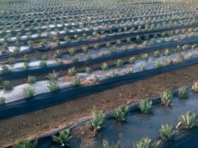 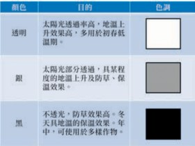
二、霜傘
霜傘的形狀類似三角帽，於開口側利用竹條或塑膠管彎曲成半圓插入土內作簡單支架，上方覆蓋塑膠布一邊固定於支架上，另一邊埋入土內作出苗的生長空間。另也有四端支撐，周圍覆蓋塑膠布或稻草，作成方筒形狀的利用形式。霜傘之主要目的在於防風、防寒與防霜，一般苗的移植愈早其收穫也能提早，於冬季的早期移植上對防霜的要求較大，在台灣西部沿海地區的瓜類促成栽培中，為避免強烈海風或低溫等不良天候對作物造成危害，苗定植時經常利用此類霜傘以保護作物。
冬季夜間若苗葉片直接暴露於大氣中，因輻射冷卻之效應，從作物體不斷以輻射方式將熱量往寒冷的天空放射，形成作物體溫降低的現象。作物常因而導致葉溫低於氣溫而易造成寒害，若溫度持續降低產生結凍則易造成霜害。利用霜傘覆蓋，除可減少葉片的熱輻射外，也因空氣停滯在霜傘內而保留住部分的地熱及呼吸熱，可得到比外氣溫暖的環境，具有良好的防寒效果。而在覆蓋材料的方面，於作物進行光合作用之必要條件下，以選擇光合成有效波長透光性較佳，而熱輻射不易穿透之材質為原則。近來因塑膠布可簡單的取得與使用，霜傘栽培遂以利用塑膠布為主，但因塑膠布不具遮斷熱輻射的性
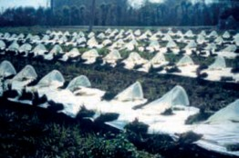
圖1.4 霜傘
質，在夜間氣候較為寒冷的時段，可利用稻草等長波不易穿透的資材覆蓋於塑膠布外表面上，用以減少土壤面或作物體的輻射熱損失，以達到霜傘栽培之目的。
三、浮動覆蓋
浮動覆蓋為利用不織布、寒冷紗或防蟲網等透氣性材料，直接覆蓋於作物葉面上方 (直覆式浮動覆蓋)，或利用簡單支撐與作物隔50～100cm之空間覆蓋 (懸掛式浮動覆蓋)，或於隧道棚支架上覆蓋 (隧道棚浮動覆蓋)，用以抑制過度高溫、防寒、防風、防蟲、防鳥、促進成育、減輕凍霜害等不同目的來保護作物之資材，而其使用目的及效果則因對象作物品目、覆蓋資材種類 (材質、遮光率及網目大小)、被覆時期、覆蓋方法及外部氣候環境等各有差異。浮動覆蓋利用資材的物理特性，低溫期夜間可減緩地面及葉片的輻射冷卻，能維持較高於外氣溫的地溫及葉溫；在高溫

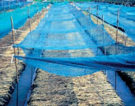
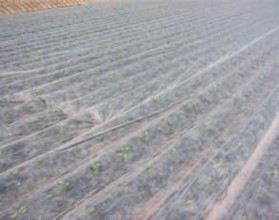
懸 掛 式 浮 動 覆 蓋 直 覆 式 浮 動 覆 蓋
圖1.5 浮動覆蓋
期於強日射下，作物體溫及地溫通常高於氣溫數℃，遮光可稍減少此數℃，在熱帶亞熱帶地區利用浮動覆蓋資材的遮光與通風性能，具有抑制溫度過度上升的效果。抑制溫度上升效果取決於資材的遮光率及通風性大小，資材通風性大，遮光率高，降溫效能較好，但過度遮光造成作物光合成減少，遮光率約在20～40％的範圍，對葉菜類栽培的增產量有正面的效益。另外使用網目較小的資材具有防蟲效果，在颱風期間利用浮動覆蓋，也可保護作物達到防颱功能。
浮動覆蓋資材因製造材料、方法等不同分有多樣種類，大致上可區分為割纖維或長纖維不織布、寒冷紗及化纖網等四大類。其中割纖維係將P VA 或PE塑膠布延伸、割成纖維後積層接著而成之資材，
孔隙率約為50％，顏色有透明、銀色、黑色等，一般使用透明顏色，光線透過率及耐久性均優於其他資材，價格也為浮動覆蓋資材中最昂貴者。長纖維不織布係使用 PET或PP為材料，將射出後的纖維積層加工成布狀之資材，重量輕富有柔軟性、價格便宜為主要之特徵。寒冷紗為乙烯或 PET等1條或2條以上的纖維編織成網狀之資材，孔隙率約為40～80％，因孔隙大小之不同其通氣性、透濕性、日射透過率及保溫性等各有相異。化纖網則為通常所稱之防蟲網，PET或PE之單條纖維以一定網目大小編織。
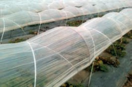
圖1.6 隧道棚
四、隧道棚
利用FRP或鋁、鐵條等作成拱形骨架，兩端直接插入土壤內，間隔約1m排列配置後，外部再用PE等軟質塑膠布覆蓋的設施稱為隧道棚。常見於台灣南部地區秋冬季洋香瓜栽培的保溫、防寒或防風、防雨等目的使用，也有用於蔬菜育苗或覆蓋防蟲網、不織布作有機栽培的事例，另為防止雜草或減少土壤水分蒸發，棚內通常搭配使用地面覆蓋。目前市售隧道棚產品有數種規格，洋香瓜一般使用3.4m的FRP或鋁、鐵條，插入土壤深度30cm，寬度 2m，高度80cm的拱架尺寸。利用隧道棚的栽培期間包括苗到收穫整體作期，在苗株較小的時期通常以密閉狀態進行栽培。利用白天的日光及土壤、苗的放熱及蒸發散可維持隧道棚內處於比較高溫、高濕的環境，可促進苗的成活與生育，又因塑膠布被覆隔離外界降雨、強風等不良天候，也有保持土壤鬆軟性、防止養分流失，減低
風害、乾害的效果。在作物光合作用原料 CO2方面，土壤內微生物呼吸作用所產生的CO2濃度可足夠供給小苗株之需求，而隨著苗的成長其上葉部位愈接近隧道棚頂部，此處溫度通常較外氣溫為高，致作物有蒙受高溫障害之慮，且密閉狀態下容易產生CO2不足的情況。於晝間須將隧道棚兩側開放進行通風以補充CO2，使內外空氣交換以防止棚內形成過度的高溫現象。此外在嚴冬的晴朗夜間，因輻射冷卻效應常發生棚內氣溫低於外氣的溫度逆轉現象，此情況有時也須將側面開啟以導入較高溫的外界空氣，圖謀氣溫、作物體溫的上升。
五、水平棚架
水平棚架使用鍍鋅鐵管或水泥柱等為支柱，上方再以鋼索或鐵管作橫向連結，主要用於蔓藤類的苦瓜、絲瓜等蔬果，及
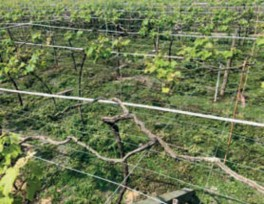
圖1.7 水平棚架

火龍果、葡萄、水梨或百香果等水果作物，提供枝葉攀爬支撐及垂吊果實的生育空間，藉由樹形的整枝具有葉片充分照射陽光、促進通風減少病蟲害、提高農作業性能等效益。此外，如文心蘭等花卉作物，利用水平棚架上方架設遮光網，用以調整光量，並透過遮光及通風，避免作物空間形成過度高溫的現象。
六、網室
台灣氣候溫暖，害蟲的繁殖與活動力均極旺盛，為維持農產品的外觀避免蟲害造成品質的降低，作物栽培期間農藥的施用為不可缺少之作業，而大量施用農藥不僅造成栽培成本的增加，對直接進行施藥作業的農民或間接食用的消費者也構成影響健康的問題。為減少農藥的使用量，近來於國內主要蔬菜產區，如雲林西螺、二崙，彰化永靖等地區的葉菜類栽培普遍利用網室進行生產。基本上網室屬於浮動覆蓋的升級應用，採用2～3英吋的鍍鋅鐵管搭建高約3m的水平棚架後於四周側壁、
品名 | 孔（隙—率）μ | （網㎜目）δ | （線㎜徑）d | 顏色 |
表1.1 台灣常用防蟲網規格
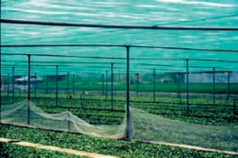
圖1.8 蔬菜網室
屋頂全面再覆蓋防蟲網的栽培設施，主要用以防止蟲害及減少農藥灑佈次數。而防蟲網有種種不同規格之網目大小、線徑粗細，各具不同之遮光率及孔隙率，台灣地區所使用防蟲網規格如表1.1，其中葉菜網室以16×16 (1英吋的長度及寬度內編織16條纖維) 綠色防蟲網，木瓜網室32×32白色防蟲網為較常使用的規格。
網室選擇適度遮光、通氣的防蟲網覆蓋，除具有物理性防治蟲害之功效外，並可發揮若干的遮光、保溫及保濕性能，此外對防止雨水直接衝擊作物表面避免造成物理傷害，及防止風害、霜害或形成過度高熱現象上均有所助益。而防蟲網覆蓋下
16×16 0.76 1.59 0.20 透 明 、 綠 、 白
24×24 | 0.67 | 1.06 | 0.19 | 透明、綠、白 |
32×32 | 0.62 | 0.79 | 0.17 | 透明、白 |
所造成的作物生長空間環境，介於裸地及溫室之間，藉由資材間相異遮光率及孔隙率的組合，可將網室下作物生長空間的環境從接近露天之狀態，大幅調整至接近溫室環境的狀態。但若使用網目過細的防蟲網，於網室內部則易形成高溫現象，且光線的透過率較差，抗風性變弱，支撐棚架結構也須加強，在網目大小的選用上，考慮防治蟲類體型難以侵入下，盡可能選用網目較大、通氣性良好的防蟲網使用。
比較於浮動層覆蓋，網室屬於長期使用的設施，且因有足夠的高度而具有良好的作業性，並有於網室內部設置灌溉設備或其他作業機械以提高作業效率之例。另外，其他網室設施有木瓜、熱帶水果網室及花卉作物的遮蔭網室等，木瓜網室採用白色防蟲網覆蓋，以防治芽蟲傳播輪點病害為目的。近來對芒果、印度棗等熱帶水果也積極推廣網室栽培，除利用網室的環境調節功能外，同時達到防颱、防鳥及防治果實蠅等目的。另外遮蔭網室則以防止強日照為主要目的，利用遮光網遮斷部分光量以栽培弱光性作物，或室內作物之馴化等。
七、遮雨棚
單有屋頂部分覆蓋被覆資材其側壁四周則為開放式的設施稱為遮雨棚，早期
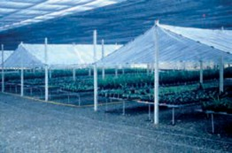
圖1.9 遮雨棚
常採用水泥柱為支柱，近來以使用錏管為主。此類設施的主要目的為隔離外界降雨，避免雨水導致土壤形成過濕現象以進行適當的水分管理，且因四周均為開放，通風良好可維持類似於外氣之溫濕度、 CO2濃度狀態。台灣夏作，通常為雨量較多的時節，利用遮雨棚栽培除可提高作業性外，因被覆之效果如果菜類、葡萄等可延長收穫期，減少異常果、裂果或病害的發生；對花卉因雨水產生之花腐現象也有良好的防止效果。
八、錏管塑膠布簡易型溫室
錏管塑膠布簡易型溫室 (以下通稱簡易型溫室) 以小尺寸的鍍鋅鐵管為主要構件，依設計的溫室規格彎曲加工後，左右2根鍍鋅鐵管於中央頂部以連節套環連結，下端直管部分直接插入地下構成一組骨架，以50～60cm間隔配置一組，桁條方向再以直管固定。桁架方向的直管一般於

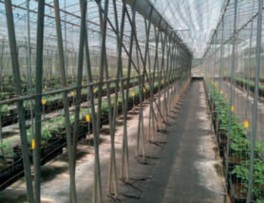
圖1.10 簡易型溫室
頂部、兩肩部及兩腳部等5處所固定，插入地下之直管深度約為30cm，土質軟弱地帶插入深度則須於40cm以上。鍍鋅鐵管間的連繫部位均以專用彈簧夾固定，全體骨架完成後於外部被覆塑膠布，再利用FRP塑膠夾固定塑膠布，最後於錏管溫室兩側邊 10～15cm處埋設簡易固定椿，骨架間的塑膠布以固定帶押緊後結束於固定椿，即完成錏管塑膠布溫室之搭建作業。錏管塑膠布溫室一般棟高3～4m，跨距4～6m，有多種規格化產品可供選用，具有可自行施工簡單的組合、不使用時可自由拆解、保管便利、建造成本相對便宜等優點，目前使用錏管塑膠布溫室的比率占栽培設施面積的大半以上，為國內園藝生產的主力。應用上可採單棟方式，現況於大面積的栽培趨勢下多採用連棟型式；此類設施主要利用自然通風調節室內環境，兩側面利用捲揚裝置捲起塑膠布操控開口面積大小，
因應環境變化調整通風量，另屋頂部可附加裝天窗，以促進通風。在室內也可配備遮光、循環扇、高壓噴霧及熱風加溫機等較不影響結構安全的環境控制設備。被覆資材使用軟質塑膠布，早期使用PVC塑膠布，雖價格便宜但有容易附著灰塵、透光性隨使用期間逐漸降低、老化快使用年限短每1～2年須更新，及廢棄後不易處理等缺點。近來改用PE或PO系列等透光性較好、耐久性較佳的塑膠布，另有防塵、防滴處理或紫外線隔離、散射光等特殊需求機能性塑膠布。錏管塑膠布溫室因不具固定基礎，整體結構抗風強度較差，在熱帶亞熱帶地區，颱風期間頻繁發生遭受破壞的案例，建造時可考量溫室周圍地形地貌可能造成的風向，對溫室施行局部補強以增加抗風性能。
九、結構型溫室
以鋼骨樑、柱及鋼材或錏管構件屋面作為骨架模組，側樑結構加強，具有固定基礎的設施。屋面有山型、圓形或單斜背等幾何形狀，山型屋面溫室外部一般以玻璃或硬質板被覆；其他形狀屋面通常使用軟質塑膠布，四周再以塑膠布被覆。依被覆材料區分，玻璃被覆稱為玻璃溫室，以塑膠布被覆稱為塑膠布溫室。荷蘭Venlo玻璃溫室為山型屋面的代表性溫室，屋面
採用小尺寸構材，透光性佳，及非連續式天窗交錯配置，通風性好為其主要特徵。國內於1980年代引進，但於熱帶亞熱帶地區，產生高溫期水牆設備降溫效果差，颱風期天窗因強風變形導致漏水等問題，經增裝遮光設備，捨棄天窗採全密閉環控改良後，目前廣泛應用於蝴蝶蘭栽培。玻璃溫室價格昂貴，為降低建造成本以塑膠布取代玻璃，分別從結構安全、通風環境等設計考量，目前也有圓形屋頂或單斜背等多種樣式的結構型塑膠布溫室商品。結構型溫室抗風強度大，柱高較高具有良好作業性，容易吊掛灌溉、搬運等自動化管理設備，及方便農機具的出入，大面積栽培
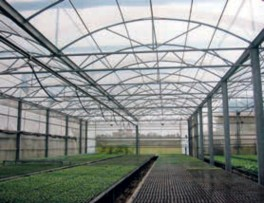
圖1.11 結構型溫室
的花卉、育苗場或高經濟性的小番茄、洋香瓜或蘆筍等蔬果作物多採用此類設施，近年來因抗風強度的需求，密閉性高可導入各項環境控制設備，結構型塑膠布溫室設置面積有逐年增加的趨勢。


第一節 植物的重要生理作用
植物的生長有賴於光合作用利用太陽光能製造有機養分，加上根部吸收自土壤的水與礦物元素，透過完整的運輸體系，將生長所需的有機、無機原料分配到需要的地方；再經呼吸作用的配合，在同化作用與異化作用並進，以及有機、無機物質的重新組合轉化後，生成植物生長所需的碳架構與能量，提供植物的生長並完成生命週期。以下介紹與植物生長相關的重要生理作用。
一、光合作用

12H2O + 6CO2 + 光 → C6H12O6 (葡萄糖) + 6H2O + 6O2↑
光合作用是綠色植物吸收太陽光能，將二氧化碳和水同化成有機物，同時釋放出氧氣的過程。其反應程式可以簡單表示如下：
植物之所以被稱為食物鏈的生產者，是因為它們能夠通過光合作用利用無機物生產有機物並且貯存能量。光合作用包含光反應及碳反應，前者在有光的條件下，利用光的物理能轉化成電能，過程涉及水的光裂解 (photolysis) 和光合磷酸化反應，
在類囊體膜上經電子傳遞鏈生成AT P和 NADPH形式的不穩定化學能。後者碳反應雖然無需光的直接能量，但利用光反應生成的ATP和NADPH，在葉綠體基質中藉由一系列酵素所促進的反應，最終轉化成穩定的化學能儲存在糖類化合物中。所以光合作用是能量及物質的轉化過程。
（一）光反應
色素系統與能量的傳遞
植物靠葉綠體中的色素吸收功能，
傳遞到反應中心，啟動光合作用的第一步。葉綠體色素主要包括葉綠素、類胡蘿蔔素、藻膽素三類。高等植物只含有葉綠素、類胡蘿蔔素兩類色素，其分子數量比為3 ： 1 。其中，葉綠素呈綠色，主要包括葉綠素ａ和葉綠素ｂ；類胡蘿蔔素呈黃色，包括胡蘿蔔素和葉黃素。絕大部分葉綠體色素都屬於天線色素，只有極少數特殊狀態的葉綠素ａ屬於反應中心色素。這些色素分子組合成許多能完成光化學反應的最小結構的功能單位，被稱為光合單位，其中包括一個反應中心。天線色素在接收到光子的能量後呈激發狀態而不穩定，然後輾轉將能量匯流至反應中心。反
應中心分子在激發狀態下立即放出電子傳給光系統的電子傳遞鏈。
光化學反應系統
葉綠體的類囊膜上有兩個協同作用的
光系統，分別稱為光系統Ⅰ (PSⅠ) 和光系統Ⅱ (PS Ⅱ)。PSⅠ反應中心在波長700nm處有最大吸收值，以P700表示；PSⅡ的反應中心最大吸收波長在680nm，以P680表示。P680反應中心色素分子接收天線色素傳遞來的能量後轉變為激發態分子，並立即放出電子而呈具有強氧化能力的不穩定狀態，該激發態的P680從一個水分子的光裂解中取得一個電子而回復到穩定的基態，重新接收光能並再次被激發而釋放電子。
水的光裂解和氧的釋放
PSⅡ的一個重要功能就是進行水的裂
2H O
2
→4H +4e +O ↑
+
2
解和氧的釋放。PSⅡ的反應中心色素P680接收光能後變為激發態分子，並立即放出電子給光合電子傳遞鏈。P680 放出電子後，即呈具有強氧化能力的不穩定狀態，接著便從水分子中奪得電子，促使水分子發生光裂解並放出氧氣與氫離子，然後回復到穩定的基礎態。其反應式如下：
水分子裂解後在類囊體腔 (lumen) 內累積的大量質子 (H+)，可以經由類囊體膜上的ATP合成酵素共同運輸通道轉移到基
質中，並使ADP與磷酸 (Pi) 結合產生更多的ATP。
光合電子傳遞和光合磷酸化
光合作用初始反應將光能轉化為
電能，而這種電能則繼續轉換成AT P和 NADPH才能用於碳反應中的CO2固定。光合作用中活躍的化學能的形成要通過光合電子傳遞和光合磷酸化來實現。當電子進入光合電子傳遞鏈後，按氧化還原電位順序依次傳遞，而在光合電子傳遞過程中，偶聯發生ADP和Pi結合形成ATP的過程，叫做光合磷酸化，合成更多的ATP。最終電子傳給NADP+，並與與一個磷酸 (Pi) 結合產生NADPH。ATP與NADPH則被用於碳反應中的碳固定。
（二）碳反應
碳反應是指利用光反應產生的高能 AT P和NADPH，將CO2 轉化為糖類的過程。碳反應在葉綠體的基質中進行。根據 CO2固定後最初產物的碳原子數目及代謝特點，碳反應可分為C3路徑、C4路徑和 CAM (景天酸代謝) 路徑等三大類。
Ｃ3代謝途徑
C3途徑是最基本的，且為所有綠色光
合生物所共有CO2同化路徑。因為是由生理學家卡爾文提出，因此又稱為卡爾文循環。只具有C3路徑的植物稱為C3植物，

包括大多數植物種類，如水稻、小麥、番茄、胡瓜等大部分農作物和木本植物。C3路徑的反應依序可分為CO2羧化、還原、核酮糖1,5-二磷酸 (RuBP) 再生三個階段，均在葉綠體基質中進行。
CO2接受體的羧化階段
CO2進入葉綠體以後，在核酮糖1,5-二磷酸催化酶 (Rubisco) 的催化下，首先與RuBP結合，生成2分子3-磷酸甘油酸 (PGA)。由於PGA―該路徑形成的第一個穩定化合物是―三碳糖，故該途徑被稱為C3路徑。由於 CO2首先與RuBP結合，所以RuBP被稱CO2的接受體。
還原階段
在此階段，來自光反應中產生的ATP和NADPH將PGA還原為甘油酫3-磷酸 (GAP)。
RuBP再生階段
GAP的轉化有三個途徑，其中之一是留在葉綠體內轉化成澱粉；二是進入細胞質內轉化成蔗糖；三是留在葉綠體的基質，經過多步驟的中間產物催化反應後，重新合成RuBP，此過程即RuBP的再生。此一過程使C3循環路徑得以持續進行。
C4代謝途徑
部分植物的碳代謝過程中，CO2被固
定後形成的最初產物為草醋酸等含有四碳的化合物，這種碳同化路徑稱為C4路徑。具有C4路徑的植物則被稱為C4植物。C4路徑可被分成二氧化碳固定、四碳酸轉運、脫羧作用與三碳酸再生等四個階段。
二氧化碳固定階段
首先CO2是在葉肉細胞中被固定成為 H2CO3，然後在磷酸烯醇丙酮酸羧化酶 (PEP Carboxylase) 催化下，與CO2接受體―磷酸烯醇丙酮酸 (PEP) 結合，形成第一個穩定化合物―草醋酸 (OAA)。
轉運階段
OAA在酶與NADP的作用下，轉化為蘋果酸或天冬氨酸，經細胞原生質連絡絲轉運到維管束鞘細胞。
脫羧階段
在維管束鞘細胞內脫羧形成丙酮酸並釋放出CO2。CO2被轉移到維管束鞘細胞葉綠體後，被RuBP重新固定進入C3路徑。
再生階段
丙酮酸由維管束鞘細胞運回葉肉細胞，在酵素和ATP的作用下重新形成 PEP。
由於PEPC的活性很高，具有濃縮 CO 2 的作用， 可以使葉肉細胞中的 CO2濃度遠高於大氣的濃度。除了可
以確保在逆境下維持較高的CO2濃度外，還可避免光呼吸對光合作用的影響，因而提高C4植物的光合作用效率。
CAM代謝途徑
具有此型代謝途徑的植物，大多為適
應在極為亁旱的地區。這類植物在夜間開啟氣孔，首先將葉綠體中的澱粉經糖解作用形成PEP，然後PEP將從氣孔擴散進入細胞的CO2羧化固定成為草醋酸OAA，再進一步還原成蘋果酸貯存於液胞內。因此，在夜間細胞內的澱粉減少、蘋果酸增加、細胞液的pH值下降。白天氣孔關閉後，蘋果酸轉移到細胞質中進行脫羧，形成丙酮酸並放出CO2。其中，CO2進入C3路徑，合成澱粉；丙酮酸可以轉變為PEP再還原成丙糖磷酸，最後合成澱粉或者轉移到粒線體中氧化釋放CO2，重新進入C3路徑。因此，白天澱粉增加、蘋果酸減少、細胞液 pH值上升。
（三）光呼吸
核酮酸-1, 5- 二磷酸羧化／氧化酶 (Rubisco) 是地球上數量最多的蛋白質，它是光合作用中用於固定二氧化碳的酵素。在光合作用過程中，Rubisco可以催化RuBP與CO2結合形成二分子的三碳醣而完成光合作用；但Rubisco也可以催化RuBP和O2
結合而放出一分子的二氧化碳，也就是損失一分子已經被固定的CO2。這個過程叫光呼吸 (photorespiration)，其反應過程包括葉綠體、過氧化體及粒腺體三個細胞器。影響光合作用與光呼吸之間消長的是溫度和CO2對O2的濃度比率。當溫度逐漸升高或高於作物的最適生長溫度時，可能引起缺水逆境而使氣孔開度減小甚至關閉。已有證據顯示，當氣孔開度減小時，會降低 CO2對氧的比例，因而對光呼吸有利。
雖然表面上看起來，光呼吸對作物的光合作用效率有不利的影響，但光呼吸能有效的維持高溫或強光下葉綠體內的氧化還原平衡狀態，並且清除對光合機構內極具毒害的乙醇酸和乙醛酸 (劉，2016)。因此一般認為光呼吸對植物具有以下三個功能：
消除乙醇酸毒害
雖然乙醇酸對細胞有毒害，但卻是植
物光合代謝不可避免的產物。光呼吸則能消除乙醇酸，使細胞免遭毒害。
維持C3路徑的運轉
在葉片氣孔關閉或外界CO 2 濃度低
時，光呼吸釋放的CO 2 能被C 3 路徑再利用，以維持光合碳還原循環的運轉。
防止強光所帶來的過多能量對葉綠體及相關膜系統造成破壞
在強光及高溫下， 光反應所獲得的同化力超過CO 2 同化需要，使葉綠體中

NADPH/NADP和ATP/ADP比值增高， NADP+不足，會促進被光激發的高能電子傳遞給O2，形成超氧自由基，對光合機構具有傷害作用。光呼吸可消耗過剩的同化力，減少超氧自由基的形成，從而保護類囊體膜中PS II反應中心色素蛋白免遭破壞。
（四） 影響光合作用的因素
光
光是光合作用的驅動力，也是植物產
生葉綠素與葉綠體的必要條件。光對光合酵素Rubisco的量與活性，以及對氣孔的開度均有著直接與顯著的影響，因此光直接影響光合作用速率的高低。光照因素中有光強、光質與光照時間，這些對光合作用都有深刻的影響。
光合作用速率隨著光照強度的增加而增加，一般栽培可以根據作物的光飽和點來做光環境管理的依據。不過，作物光合作用如考慮到夜間的呼吸與非光合作用器官的碳消耗時，植物所需的最低光強度必須遠高於光補償點。如果從植物族群來看，冠層頂部的葉片往往接受到的光強度會超過光飽和點以上，而中下層葉片的光強度則仍處在光飽和點以下，因此利用調整行株距或採取整枝修剪的方法，改善中下層葉片的光照量，可以讓中下層葉片接受更多的光照，是園藝方法提高產量的基
本措施。
一般在光補償點和光飽和點之間，光合作用速率會隨光度的增加而增加。但植物的光補償點和光飽和點並不是固定不變的數值，它們會隨外界環境條件的變化而增減，例如，當大氣CO2濃度增加或溫度降低時，光補償點降低；而當CO2濃度增加時，光飽和點則會提升。一般情況下，高溫會促進呼吸速率的上升，因此會使光補償點提高而對光合產物的蓄積造成不利的影響。在這種情況下可以採取降低室溫、通風換氣，或補充CO2濃度以確保光合作用的順利進行。
C4型植物由於葉鞘細胞結構與光合酵素的不同，適合在高溫強光下進行，低溫弱光反而不利。在一般的光照強度下， C4型植物是不會出現光飽和現象，其原因是C4植物同化CO2的磷酸烯醇丙酮酸羧化酶 (PEPC) 與CO2的親和力高，以及C4型植物特有的維管束鞘組織，可以隔離氧和 Rubisco的接觸；同時還有濃縮葉肉細胞內 CO2濃度的機制，所以大氣中的CO2濃度不會成為C4植物光合作用的限制因素。
二氧化碳
二氧化碳是光合作用的碳原料，植物
所需的CO2主要從大氣中獲得。CO2從大氣到達葉肉細胞與羧化酵素結合之間的途徑必須經過葉面靜止層、氣孔及葉肉細胞的
多重阻力，對光合作用速率的影響很大。二氧化碳從大氣進入葉肉細胞間隙為氣相的擴散作用，而從葉肉細胞間隙到葉綠體基質則為液相擴散，擴散的驅動力為兩點間CO2的濃度差；凡能提高濃度差和減少阻力的因素都可促進植物對CO2的吸收而提高光合作用速率。
空氣中的CO 2 濃度較低，約為415 ppm ， 而一般C3 植物的CO 2 飽和點為 1,000～1,500 ppm上下，是空氣中CO2濃度的3倍左右。如在密閉的溫室內，當清晨光合作用旺盛時，室內的CO2濃度可在1～2小時內降至200 ppm或更低。由於光合作用對CO2的持續消耗以及普遍存在多重的CO2擴散阻力，因而在葉綠體基質中的CO2濃度可以低到接近CO2補償點。因此，加強溫室的通風換氣或採取CO2施放措施，可以顯著提高作物的光合作用速率，促進生長，提高產量。這對C3植物尤為明顯。
溫度的影響
光合作用過程中碳反應進行的CO 2
固定，是一個由酵素所催化的化學反應過程，因而對溫度的變化十分敏感。在強光、高CO2濃度時，溫度對光合作用速率的影響要比弱光、低CO2濃度時的影響大，這是因為在強光和高CO2條件下，溫度能成為光合作用的主要限制因素。
光合作用有一定的最適溫度範圍和
最高及最低限制溫度。光合作用的最低溫度 (下限) 和最高溫度 (上限) 是指植物在該高、低臨界溫度下所量測的光合作用速率已經衰減為零，而能使光合速率達到最高的溫度則被稱為光合作用的最適溫度。光合作用的溫度三基點因植物種類不同而有很大的差異。如耐低溫的甘藍在5℃就能明顯地測出光合速率，而喜好溫暖的胡瓜則在13℃以下時就受到抑制；耐寒植物的光合作用下限溫度與細胞結冰的溫度相近；而原生於熱帶的植物，如玉米、高粱、西瓜等在溫度降至10～5℃時，光合作用已明顯受到抑制。低溫抑制光合作用的原因主要是碳反應的酵素活性下降，氣孔開閉失調；低溫進一步發展時，各種細胞質體的膜脂呈凝膠態，葉綠體膜的超微結構受到破壞，因而使光合作用減緩或停止。
晝夜溫差對淨光合同化率有很大的影響。白天溫度高，日光充足，有利於光合作用的進行；夜間溫度較低，降低了呼吸消耗 (圖2.1)。因此，在一定溫度範圍內，適度擴大晝夜溫差，有利於光合產物的積累，對於產量與品質都有利。尤其在設施作物栽培管理上，要隨時注意環境溫度的調控，避免過高與過低溫度對光合作用的不利影響，同時留意夜間降溫與日夜溫差的問題，以期提高作物生產力。
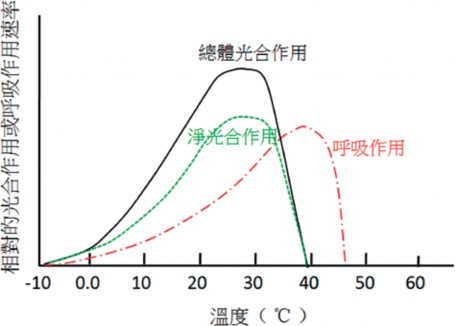
圖2.1 溫度對總體光合作用、呼吸作用及淨光合作用的影響與其相關性
水分
水分對光合作用的影響有直接的與間
接的原因。直接的原因是水為光合作用的原料，沒有水不能進行光合作用。但是實際用於光合作用的水不到蒸散水量的1％，因此缺水影響光合作用主要是間接的原因。缺水會使氣孔導度下降或關閉， 因
而使光合速率下降。一般在輕度缺水情況下，植物經供水後尚能使光合能力恢復；但若在嚴重缺水後，縱使供水後葉片水分潛勢可以恢復至原來水準，但光合速率卻難以快速恢復至原有程度。因此作物管理上，必須留意不使植株過度缺水，以免影
響生長與產量。綜合來看，缺水逆境影響光合作用的原因有下列幾點：
氣孔導度下降
葉片光合速率與氣孔導度呈正相關，當水分逆境時，葉片中ABA 量增加，促使氣孔關閉，CO2進入葉肉組織受阻。開始引起氣孔導度和光合速率下降的葉片水勢值，因植物種類不同有較大差異。
光合產物輸出受阻
缺水會使光合產物輸出變慢，加之缺水時，植物為調節細胞內的滲透壓，葉片中澱粉的水解增加，促進糖類累
積的結果會引起光合速率下降。
光合胞器受損
缺水時類囊體膜上的電子傳遞速率降低，影響光能的轉換。嚴重缺水還會使葉綠體變形，葉綠餅片層結構被破壞，不僅導致光合速率下降，而且使光合作用的能力無法恢復。
光合有效面積減少
在長時間缺水逆境影響下，作物生長速率减缓，使葉面積的擴展受到限制所致。
礦質營養的影響
植物必須營養元素中有多個既是細胞
生命物質的組成元素，又是細胞內生理生化反應的參與因素。因此礦物元素在光合作用中的功能十分多元，現簡單整理如下：
成為葉綠體的組成元素
如N、P、S、Mg是葉綠體中構成葉綠素、蛋白質、核酸以及生物質膜不可缺少的元素。
電子傳遞鏈的重要成分
如Cu、Fe、Mn+2和Cl-在系統中都是不可或缺的元素。
磷酸基的作用
攜帶化學能的ATP和NADPH、光合作用碳還原循環中所有的中間產物、合成澱粉的前體ADPG，以及合成蔗糖的前體UDPG，這些化合物中都含
有磷酸基。
參與活化或催化作用
如Rubisco，FBPase等酵素的活化需要Mg+2；另外Fe、Cu、Mn、Zn是葉綠素的組成分；K+和Ca+2調節氣孔開閉；K和P促進光合產物的轉化與運輸等。
肥料三要素中以N 對光合作用的影響最大。通常葉的含N量、葉綠素含量、 Rubisco含量分別與光合速率呈正相關。葉片中含N量的80％在葉綠體中，施N既能增加葉綠素含量，促進光反應，又能增加光合作用酵素的含量與活性，加快碳的同化作用的反應。從N素營養管理較好的葉片中提取出的Rubisco不僅量多，而且活性高。
二、呼吸作用
呼吸作用 (respiration) 為生物體細胞將含碳有機物經低溫氧化而將能量釋放提供各種生理作用所需之過程。植物從光合作用中獲得的基本最終產物為葡萄糖，而呼吸作用的反應程式恰與光合作用相反，從葡萄糖開始進入呼吸的代謝途徑，其反應式如下：


C6H12O6 + 6O2 → 6CO2 + 6H2O + 能
量 (673 kcal)
呼吸作用的反應基質 (substrate) 以直接利用六碳糖，如葡萄糖、果糖及葡萄糖-1-磷酸 (G-1-P) 等為主；而這些六碳糖的來源可從澱粉、蔗糖、脂肪、蛋白質等分解產生。不過植物利用蛋白質作為呼吸基質的機會極少，只有在前三者不可獲得時才有可能為之。每分子糖代謝後可釋出 673kcal能量。其中有約40％被儲存於ATP中，其餘則以熱能釋出。
（一） 呼吸作用的生理功能
呼吸作用必須消耗植物體內的碳水化合物，這對光合作用同化產物的累積來說是一種反向的支出，因此呼吸對植物必有重要的意義。其主要的生理功能如下：
提供植物生命活動所需的能量
呼吸作用提供必要的能量給植物細
胞維持生理正常活性外，還提供能量給根部行礦物離子的主動吸收、細胞分裂和分化、有機物的合成與運輸，以及生長所需的能量。
提供生命物質合成與生長所需的碳架構
呼吸過程中不同代謝途徑所產生的許
多中間產物可提供作為重要生命物質的合成原料，例如氨基酸、蛋白質、酵素、脂
肪酸、核酸、荷爾蒙、維生素及多種二級代謝產物等等，並可作為生長所需的碳架構。
提供植物體內生理代謝循環所需的還原力
呼吸過程會產生NADH及NADPH等還
原物質，可以為蛋白質與脂肪的生物合成及硝酸鹽的還原過程提供還原力。
（二） 維持呼吸與生長呼吸
如果從功能性的含義來解釋，則呼吸可被分為生長呼吸 (growth respiration) 和維持呼吸 (maintenance respiration) 和與離子吸收有關的呼吸 (Bruhn, D. 2002)。雖然也有學者認為與離子吸收有關的呼吸應併入生長呼吸，因為只有新形成的細胞與組織才需要礦物營養作為組成元素。植物需要維持呼吸來滿足修復和維持現有組織和細胞正常生理狀態的能量，其中用於蛋白質與脂質的周轉更新與維持胞器膜內外離子梯度的能量，占維持呼吸的大部分能量需求。植物為了生產新的生物質，需要透過呼吸作用提供更多的碳架構、還原當量 (NADH、NADPH) 和能量 (ATP)。通常，生長較快的植物將可獲得的碳水化合物用於生物合成的比例要比生長緩慢的物種多，因此呼吸率也比較旺。植物在遭遇不利的環境因素時，自體引發的生理調適作用，會使維持呼吸的比重明顯大於與生長與離子吸收等相關的呼吸，這種現象會
改變植物對光合作用產物在體內不同器官之間的分配與轉運。這種現象也說明植物體內，維持呼吸對光合產物有優先分配的順序。植物體在不同生育階段、不同組織或器官的呼吸速率明顯不同。發芽中的種子、正在發育生長中的組織或器官，如芽體、花苞、幼果，以及旺盛生長的根系等，需能較多，所以呼吸速率通常都比較高。反之，休眠中的組織或種子的生理代謝緩慢，需能量少，故呼吸速率就低。
有學者認為植物體中有固定比例的碳水化合物提供作為維持呼吸所需，但實際上維持呼吸可能會消耗掉每天光合產物中的25～100％。因為這關係到光合作用與呼吸作用所處的不同環境。例如高緯度地區冬季低日照及低緯度地區的高溫、亁旱等逆境下，維持呼吸的碳消耗可能大於光合作用的碳同化作用，以至於沒有多餘的碳水化合物可供生長。
（三） 呼吸作用的過程
呼吸雖然是一種氧化反應， 但不論是否有氧的參與，都可經由不同路徑完成反應，並釋放出不同產物。其中有氧參與的呼吸作用，稱之為有氧呼吸；沒氧參與的反應，則稱為無氧呼吸。其中有氧呼吸過程可以分為三個主要階段，分別是糖解作用 (glycolysis)、檸檬酸循環 (citric acid
cycle)，以及粒線體電子傳遞鏈 (electron transport chain)。前述代謝過程中產生的中間產物可以經由多個點進入呼吸過程而作為呼吸基質；同樣地，這些中間產物也可以離開呼吸鏈，提供作為各種化合物生物合成的前驅物。因此，呼吸作用的過程與許多其他代謝途徑有緊密的連帶關係。
糖解作用
糖解作用是呼吸作用的第一階段反
應。首先，細胞從儲藏性碳水化合物如澱粉、果聚糖、蔗糖經水解轉化產生果糖-1,6-二磷酸 (F-1,6-P) 進入醣解作用，然後F-1,6-P經酵素分解轉成為二分子具有三碳的丙酮酸 (pyruvate)，同時產生高能產物ATP及還原產物NADH。醣解過程並無氧的參與，是有氧呼吸與無氧呼吸的共同途徑。雖然，無氧呼吸的過程中只產生少數的能量，但是足以提供維持細胞生命所需；而且在正常有氧情況下，丙酮酸會進入粒腺體中繼續代謝而獲取更多的能量。但如果在缺氧的情形下，則路徑轉為無氧呼吸，而在發酵過程中會把醣解作用過程中產生的NADH消耗。
檸檬酸循環
檸檬酸循環是呼吸作用的第二階段反
應，丙酮酸在這一循環中完全氧化成為二氧化碳與水。丙酮酸先在酵素作用下，經過去羧基、氧化與再結合等過程而形成乙

醯輔酶-A，然後在檸檬酸合成酶作用下形成檸檬酸。在檸檬酸的循環過程中的重要中間產物包括酮戊二酸、琥珀醯輔酶-A、琥珀酸、延胡索酸、蘋果酸及草醯乙酸等，都可能離開循環而參與其他的代謝。最後草酸乙醯與乙醯基縮合再生一分子檸檬酸重新開始循環。在此循環路徑中， 每分子六碳糖可以獲得二個AT P、六個 NADH、二個FADH2及釋放四分子的CO2。
電子傳遞鏈
第三階段是電子傳遞鏈，是粒腺體內
膜上傳遞氫質子或電子到氧分子 (O2) 的一系列傳遞系統，該系統的組成分子按還原電位順序排列相互銜接。NADH與FADH2將電子經由粒腺體內膜上的電子傳遞鏈給氧分子後，結合氫離子產生水，並偶聯氧化磷酸化反應，結合ADP和Pi生成ATP。植物體一般約有95％的ATP來自氧化磷酸化作用，只有少量的ATP是通過非氧化磷酸化產生的。
無氧呼吸
無氧呼吸是在細胞質中進行。細胞在
氧氣不足 (10％以下) 或無氧狀況下，經發酵作用將三碳醣 (丙酮酸pyruvate) 分解釋放一分子CO2後轉化成乙醛，再經NADH還原成為乙醇或乳酸 (latce acid) 的過程。這是植物在缺氧情形下的呼吸路徑，產生的能量少，產能效率只有正常氧化磷酸化反應
的4％。但足夠藉以維持生命活動進行，並使還原能力NAD+得以循環繼續。不過酒精對細胞有毒害作用，長時間積存下會導致細胞死亡。所以乙醇進一步轉入過氧化體 (peroxisome) 形成甘氨酸並釋放一分子二氧化碳。無氧呼吸常見於根部通氣不良或淹水的時候，一旦淹水影響的時間拉長，則根系活性劇減或因酒精積累而爛根，對地上部的生長也會造成不利的影響。
氧化戊糖磷酸路徑
氧化戊糖磷酸途徑 (oxidative pentose
phosphate pathway) 是糖解作用的替代路徑，其產物包括四碳醣、五碳醣以及 NADPH。此一路徑在細胞質中進行，和糖解作用有許多共同的中間產物，並且互相關聯。正常情況下，糖解作用產生的F-6-P進入檸檬酸循環。但在氧化戊糖磷酸途徑則將G-6-P經二次脫氫氧化及脫羧後放出一分子CO2、一分子核酮糖-5-磷酸 (RuBP) 和二分子NADPH。然後RuBP經多個步驟轉化為中間產物核酮糖-5-磷酸和核糖-5-磷酸可以進入糖解路徑。前述中間產物是合成核苷酸的原料，同時也是多種二次代謝產物與植物荷爾蒙的前驅物。
一般六碳糖的代謝中，僅約5～20％的呼吸是透過氧化戊糖磷酸途徑發生，但是它使植物在逆境下仍然可以提供DNA與 RNA的合成與修補，以及酚類化合物所需
的中間物質，顯然對植物從逆境中恢復的意義十分重要。通常植株在感病、受傷、老化或面臨乾旱、高低溫及鹽分等生理逆境的時候，氧化戊糖磷酸途徑途徑的比例會增加。
（四） 影響呼吸作用的環境因素
溫度
細胞呼吸是由多種酵素參與和催化的
一系列生理反應過程，因此溫度對細胞呼吸作用具有關鍵性的影響。植物的呼吸作用速率在0～35℃間的Q10值 (即溫度每升高10℃，呼吸作用速率增加的倍數) 約為 2～2.5。呼吸作用的最適溫度一般為25～
35℃，上限溫度則可以到35～45℃。在作物生長適溫範圍內，細胞呼吸速率隨溫度的升高而加快，而且在接近呼吸活性的上限溫度時，速率反應曲線是呈現指數型 (exponentially) 的增加 (圖2.2)。但超過最適溫度後，細胞呼吸將急劇減弱，直至停止。相對於呼吸作用，光合作用對溫度的反應為比例型的增加，而且一般作物的光合作用上限溫度比呼吸作用低。這就是高溫對光合作用及作物生長不利的原因。因為在高溫下，呼吸作用的碳消耗速率容易超過光合作用的碳同化速率，使植物處在碳源不足的饑餓狀態，長時間持續下會使植物崩解死亡。
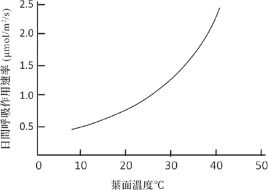
圖2.2 呼吸作用對葉面溫度變化的反應曲線
(controlled atmosphere storage) 中，一般將

根是植物重要生長中心，必須隨時保持高度生理活性，以維持良好的根系擴展與新根的產生，這樣才能維持正常的吸收功能，供應地上部的需求。有研究顯示，在正常環境下，大約有15～30％的光合產物是經由根部呼吸消耗，但是如果根系處在超過適溫範圍的熱逆境下，則其消耗比例可以達到50～80％之多。因此在台灣夏季栽培時，妥善做好根部的防曬或降溫處理，對降低根系呼吸速率與改善根系活性應有明顯幫助。
氧氣濃度
氧氣促進有氧呼吸，抑制厭氧呼吸，
在正常生育溫度範圍內，呼吸強度隨著氧氣濃度的升高而增大。基於大氣中氧的濃度相對穩定，因此氧對地上部或許影響不大，但對根部的活性則特別重要。一般可以透過改善土壤質地、中耕鬆土、避免淹水等農業操作舒解根部缺氧的問題。
二氧化碳濃度
二氧化碳是空氣的重要組成分，增加
二氧化碳濃度對有氧呼吸有抑制作用。 因此在進行CO2施放作業時，必須做好濃度的控制，以免造成不利的影響。不過對於生鮮農產品貯運上倒是常利用提高CO2濃度來抑制呼吸作用，以延長儲存時間，維持產品新鮮品質。例如在水果的氣調貯藏
二氧化碳濃度控制在2～5％之間，但對光皮甜瓜、草莓、櫻桃等水果則可以調控在 15％上下。葉片暗呼吸是決定植物組織生長和維持以及碳循環的決定性因素。研究顯示，日間提高CO2濃度明顯加快光合作用速率，同時對暗呼吸速率也有促進的效果。一般推論呼吸速率的提高是因為更多的蛋白質與碳水化合物的合成而驅動了糖降解作用、三羧酸循環和粒腺體電子傳遞能量代謝途徑的代謝活性 (Li, et al., 2013; Kromer, 1995)。
光
一般認為光對呼吸作用的影響不大，
因為不管白天或黑夜，活細胞的呼吸都持續進行。通常光照對呼吸的影響是間接的，如果在涼溫季節，光使葉面溫度增高，因而可促進呼吸進行。不過也有研究觀察到，前一個光期的光合作用速率會影響暗期的呼吸率。也就是如果日間的光照充足，光合作用旺盛，則緊接著的暗期，植株的呼吸作用速率增加。推測其原因可能為更多的光合產物需耗能運輸，以及更多的生長需要更多的呼吸能量與提供碳架構的中間產物所致 (Amthor, 1989)。在低光條件下，碳水化合物供應受限制，導致呼吸作用減緩，相對應的生長速率也會同步減緩。
三、蒸散作用
植物的蒸散作用 (transpiration) 是指內部的水分從植物體表面以水蒸氣狀態散失到大氣中的過程。一般蒸散的途徑有氣孔、皮孔與角質層三種。其中以氣孔蒸散為最主要，占了蒸散總量的90％以上；角質層蒸散是經由葉片上的角質層和草本植物莖表皮上的角質層而產生的蒸散，其蒸散量只約占蒸散總量的5～10％；皮孔蒸散則是透過枝條的皮孔和木栓組織的裂縫進行，其蒸散的量更小，約占蒸散總量的 0.1％。因此一般討論的蒸散作用，指的都是氣孔蒸散。由於蒸散作用主要是水分從葉肉細胞的濕潤表面蒸發後經由氣孔調控下逸出植物體，所以它與物理現象的蒸發過程不同。蒸散作用不僅受到植物本身的調節和控制，而且還受到外界環境包括光、溫度、濕度、CO2濃度及風等多個因素的影響，因此蒸散是一個極為複雜的生理過程。
（一）蒸散作用的生理功能
蒸散作用是植物對水分與礦物元素的吸收和運輸提供驅動力，如果沒有蒸散拉力引起的吸水，則礦物元素也就無法隨水分的吸收和流動而分布到植物體各部位去。
植物透過蒸散作用而降低葉片的溫度。水在20℃時的汽化熱為2445焦耳。因
此，蒸散能夠降低葉片表面的溫度，使葉片在強光下進行光合作用而不致受害。
提供光合作用反應過程中所需要的水，通常只占總蒸散水量的1～2％。
（二）影響蒸散作用的環境因素
蒸散速率取決於葉片內外蒸氣壓差和擴散阻力的大小。造成蒸散擴散阻力的因素包括葉肉細胞阻力、氣孔阻力與葉面的靜止介面層阻力。所以凡是影響葉內外蒸氣壓差和擴散阻力的環境因素，都會影響蒸散速率。
光
光對氣孔的開啟有直接的影響， 尤
其藍光，當光度增加時可以減少氣孔的阻力，因而可以增強蒸散作用。其次，光可以提高大氣與葉片的溫度，增加葉片內部與大氣之間的蒸氣壓差，加快蒸散速率。
溫度
溫度對蒸散速率的影響可以分成兩
個層次。在最適溫度以下時，隨著溫度的升高，蒸氣壓差加大，所以蒸散加快。在根部水分供應正常的前提下，氣溫在20～ 30°C之間時，氣孔的開度最大，蒸散速率最快。但當氣溫過高時，葉片因過度蒸散而面臨缺水逆境，使氣孔開度減小或蒸散減弱。

濕度
空氣相對濕度對蒸散作用有明顯的影
響。當溫度相同時，葉片內部與大氣間的蒸氣壓差隨相對濕度的增加而縮小，蒸散減緩；反之，大氣的相對濕度較低，則蒸散速率加快。蒸散的最大驅動力來自於氣孔內的蒸氣壓與大氣中的蒸氣壓差。通常認為葉肉細胞表面的蒸氣壓為100％，所以當大氣濕度增加時，減少了蒸氣壓差，因此蒸散作用降低。在相對濕度特別高的情況下，氣孔的開度也會減小或關閉。
土壤水分
植物根部吸收的水分有絕大部分用在
蒸散作用上，所以在土壤水分供應受限的情況下，蒸散速率趨於減慢。例如在光線和溫度有利於蒸散繼續進行的情況下如果土壤水分含量減少，植物葉片即可能出現缺水現象，導致氣孔關閉。
二氧化碳
氣孔的開度受到細胞間隙CO2濃度的
影響，當大氣CO2升高時，細胞間隙的濃度也會升高，進而抑制氣孔的開度，因而增加氣孔阻力，減小蒸散速率。
風
溫室內每秒0.5～1.0公尺的微風可以帶
走葉片表面的水氣，減低葉面靜止介面層的厚度與阻力，有利蒸散速率的提升；但風速大於每秒2公尺以上時，氣孔受機械刺
激而關閉，反而不利蒸散作用。
四、吸收作用
植物的吸收主要是靠廣大的根系以及根系表皮上的根毛。根毛是表皮細胞的凸起，目的為增加吸收的表面積。根部對土壤水分的吸收一般是靠簡單的水分濳勢梯度差而被動地擴散進入根細胞。當水進入細胞時，其水勢變得比其旁邊的細胞高，因此，水通過擴散作用進入下一個細胞，或經由細胞外的間隙通道而從未真正進入細胞。不過，礦物質離子的吸收與水不同，所有礦物質不能被根部以被動形式吸收，其原因之一為礦物離子都帶有電荷的形式存在於土壤溶液中，不能穿過細胞膜；其二為土壤中礦物質的濃度通常低於根細胞中的濃度。因此，礦物離子必須通過主動吸收進入表皮細胞的細胞質再進入根部中柱，這需要ATP的能量；也因此根部細胞通常會保持高度的活性而擁有較高的呼吸速率。
離子的主動吸收會造成根部細胞與土壤溶液間的水勢梯度，並因此導致水分的被動吸收。一些離子可以被動地進入表皮細胞，另根毛細胞膜中的特定蛋白質可將離子從土壤中主動泵入表皮細胞的細胞質中。因此礦物離子可以通過被動和主動運輸從土壤中被吸收而停留在表皮細胞中。
內胚層細胞的質膜中有許多嵌入的轉運蛋白，這些轉運蛋白扮演離子穿過膜運輸的控制點，可以調節進入木質部的離子的數量和類型。值得注意的是，內皮層細胞間有卡式帶與木栓層的存在，根部內皮層僅能允許單一方向朝中柱主動運輸離子，為的是防止這些離子在濃度梯度下，由中柱擴散到土壤中而損失了。礦物離子與水進入內皮層細胞內，使質外體的離子濃度降低，水分濳勢上升。離子則透過原生質連絡絲進入中柱，中柱活細胞在耗能的作用下將其引入導管，如此使中柱、內皮層細胞與皮層細胞質外體間形成水分濳勢梯度，水分被動往中柱移動而形成根壓。但根壓對導管內運輸的力量貢獻較小，主要是靠導管內的蒸散流。
五、運輸作用
高等植物的地上部與地下部對於碳水化合物的製造與分配及礦物營養的吸收與運輸有明顯的分工。簡單來說，植物體內的運輸主要包括兩種，一為根部吸收的水及礦物營養元素經由木質部往上運輸至莖、葉、花、果等需要的地方；以及葉片及綠色部位將光合作用合成的碳水化合物經由韌皮部運往根、莖、花、果實等非光合器官。
（一） 木質部的運輸
木質部維管由死細胞組成。這些細胞帶有空心管腔，管細胞的端壁消失，因此形成了一個長而開放的導管。管細胞具有厚實堅強的纖維素細胞壁，除了運送水以外，還有助於植物體的支持作用。木質部運輸的物質除了水及溶解在水裡的無機離子外，還包括一些有機酸、胺基酸、植物賀爾蒙等有機物質。水及溶質在木質部的運輸主要依靠三種力量：
毛細管作用
水在氫鍵的作用下，藉著水分子之間
的內聚力，以及水分子與導管壁之間的附著力，而在導管中形成一條連續不斷的毛細管水柱，幫助了水的向上移動。
根的膨壓作用
根部的內皮層細胞透過主動運輸將溶
質泵入中柱細胞，使之含有高離子濃度，與土壤溶液間形成滲透壓梯度，有利水分子被動擴散進入根部導管細胞，提高水分濳勢，形成根壓並向低水分潛勢的葉片運輸的方向。
蒸散作用
蒸散作用降低葉片中的水分潛勢，進
而在蒸散拉力的作用下，水從根部克服重力向上運輸；同時，三者共同作用使得水以類似於水柱的形式在木質部導管中向上移動。

（二） 韌皮部的運輸
植物生長所需的碳架構基本物質是由光合作用的碳水化合物轉運、代謝及轉化形成而來，主要的供源 (source) 是葉片，需要輸入光合產物的非光合作用組織則是積儲 (sink)。輸入的碳水化合物可以作為生長需要而用，也可作為肥大器官的儲存。不同積儲間對碳水化合物的競爭有強弱之分，一般植物在不同生育階段都會有其主要的生長中心，這是植物在不同生長階段具有優先發育、代謝旺盛、生長快速的器官或組織。因此生長中心是最強的積儲，對有機物質需求最大，與其他部位的競爭力也最強。韌皮部的主要功能，是將葉片中光合作用的產物輸送到植物各個需要的部位，其中糖類占90％以上，其餘是蛋白質、氨基酸、維生素、無機鹽和植物荷爾蒙等。韌皮部由活細胞，包括篩管、伴細胞、韌皮纖維和薄壁細胞組成一根長管，沿著木質部組織延伸。篩管末端帶有篩板，篩板上有孔道相通；伴細胞與每個韌皮部篩管間相伴連通，控制篩管的功能並提供運輸所需的能量。
光合作用產生的糖一般直接往外運輸或用於呼吸，當光合作用速率大於輸出速率時，合成的六碳糖則會先轉化成蔗糖或澱粉分別暫儲在細胞質或葉綠體中，待夜間繼續運輸。光合作用生成的產物主要
是以蔗糖的形式從葉片經韌皮部往積儲部位運輸。這個過程包括供源端的裝載、篩管中的運輸與積儲端的卸載。蔗糖透過細胞膜的蛋白運輸體的裝載進入韌皮部的篩管，卸載時則經由篩管細胞原生質連絡絲直接進入積儲細胞，這就是所謂的共質體卸載方式。當共質體卸載受阻時，蔗糖會先離開篩管，進入細胞間隙，經過質外體進入積儲細胞。不論裝載與卸載皆需要耗費能量才能完成。蔗糖在篩管中的長距離運輸，主要是靠質流 (mass flow) 的方式進行。根據Munch (1930) 提出的假說，蔗糖濃度在韌皮部的供源端與積儲端產生濃度的梯度差，而這種梯度差主要靠供源端不斷地把蔗糖透過蛋白運輸體向篩管伴細胞輸送蔗糖，提高滲透壓，使木質部的水分進入篩管，增加水分濳勢，質流便往積儲端流動；而在積儲端則經由共質體通道持續卸載蔗糖使滲透壓降低，水分濳勢增加，水便流出篩管，重新進入木質部向上移動。如此循環不息，完成了碳水化合物的運輸作用。
六、構成植物生長的物質
生長 (growth) 是植物個體在細胞大小、數目與乾物重的增加，而這種增加是為一種不可逆的生物現象，如株高長高、枝幹變粗、果實長大等。細胞數目的增加
主要靠細胞分裂，由生物遺傳機制控制，是為無限的增加；細胞體積的增加包括原生質、細胞內容物及水的增加，因受細胞體積與表面積的限制，因此為有限的增加。
由於植物不斷地生長而帶來細胞的數目與體積的增加，所以植物隨時都需要有足夠的生長必須物質來填充新生細胞的細胞壁與原生質內容物。同時，植物體在維持生命與生長的過程，還需要大量的能量來維持細胞的生理活性與生命物質的製造、轉運、轉化與合成。前述所有植物體生命活動的過程都可以由植物營養器官與各種生理代謝作用來完成，並提供所謂的生命物質，或稱為植物的組成物質。構成植物生長的物質包括：
（一） 無機物質
植物體中的無機物質成分包括碳、氫、氧及植物的必須礦物營養元素。碳、氫、氧主要來自空氣中的二氧化碳及根部吸收的水，經由光合作用結合成糖，再透過呼吸作用進入各種不同的代謝路徑與從根部吸收而來16種植物必須礦物營養元素結合生成各種植物生長所需的物質。
（二） 有機物質
主要由呼吸過程的許多中間產物提供，如例如氨基酸、蛋白質、酵素、脂
肪、核酸、荷爾蒙、維生素及多種二級代謝產物等等。
糖類
糖類既是細胞能量的主要來源，同時
也是轉化為其他化合物的基本原料，其主要組成元素為C、H、O，一般將其統稱為碳水化合物。糖類按其組成分類可分成單糖、雙糖與多糖。單糖中的六碳醣主要為提供能量；五碳糖則為構成核酸的物質。雙糖如蔗糖可為暫時的儲藏物質，分解成單糖後可以為細胞提供能量；蔗糖也是植物體內主要的運輸糖。多糖類如澱粉則為重要的儲能性多糖，分解成單糖後同樣可以提供能量；纖維素則是植物的結構物質，是細胞壁的主要成分。
脂質
由碳、氫、氧三種元素組成，部分脂
質還含有少量的氮和磷。脂質依化學性不同可分為脂肪、磷脂和蠟。脂肪由一分子甘油和三分子脂肪酸縮合而成，是植物體內的重要儲能物質；磷脂由1個含氮堿基、 1個磷酸、1個甘油及2個脂肪酸組成，是細胞膜、核膜等的有膜結構的主要成分；蠟則是角質層的主要成分，對植物具有保護作用。
蛋白質
蛋白質是一種大分子化合物，由氨基酸組成，每個氨基酸分子至少含有一個氨
圖2.3 植物光合作用及呼吸作用與構成生長物質之間的關係

基與羧基，並且連接在同一個碳原子上。蛋白質的功能有a) 構成細胞和植物體的重要物質─結構蛋白； b) 參與調節細胞和生物體活性的功能，稱為功能蛋白，如酵素； c) 提供生命活動所需的能量； d) 參與跨膜物質的轉運等，如脂雙層膜上的運輸蛋白。
核酸
由1個含氮堿基、1個磷酸和1個五碳糖
組成，是合成去氧核糖核酸 (DNA) 與核糖核酸 (RNA) 的重要物質。主要功能為攜帶遺傳資訊。
植物荷爾蒙
是植物生長和代謝所必需的微量有機化合物，對植物的生長與發育扮演著重
要的調節角色，如種子發芽、細胞分裂、生長與衰老等都有影響，從細胞的分裂、伸長、分化到影響植物的發芽、生長、開花、結實、性別決定、休眠和脫落等。此類物質包括生長素、激勃素、細胞分裂素、離層酸、乙烯及芸苔素等。
有機酸、芳香族、色素及類萜等
此類物質包括有機酸類，如檸檬酸、
蘋果酸；芳香族化合物如香草醛、甲基水楊酸鹽等，是植物特殊香氣的成分；另有木質素與單寧是複雜芳香族物質與碳水化合物結合的化合物；色素類如胡蘿蔔素、花青素、黃色素等；類萜與脂醇類，這類物質包括芳香油、類脂及多種生物鹼等。
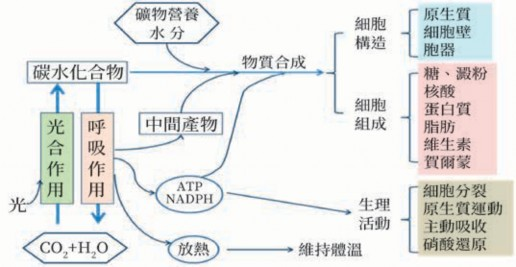

植物生長過程所產生的各種物質，都來自於光合作用的碳化合物及從土壤中吸收的水及礦物營養元素。這些有機物的合成作用 (即同化作用anabolism) 及分解作用 (即異化作用catabolism) 合稱為代謝作用 (metabolism) 。植物的生物合成過程中，即包含了各種複雜的代謝作用與代謝路徑。首先，植物透過光合作用將二氧化碳和水轉化成糖，藉由呼吸作用的生化反應下，結合從根系吸收的水及礦物元素，形成生命的基本分子氨基酸、核苷酸、糖類及脂肪酸等。同時，再經過複雜的代謝作用與
不同的代謝路徑中合成DNA、RNA、蛋白質、脂質與多糖等大分子。這些大分子再經代謝而結合成為超大分子系統，如生物膜系統、酵素系統與核糖體等。最終產生細胞核、粒腺體、葉綠體、內質網等等的細胞胞器及細胞壁而形成一個新的細胞。新生細胞則繼續增殖與分化，依序形成不同的組織與器官，最後塑造成一個完整的植物體。圖2.3可以說明光合作用及呼吸作用在植物生長與生合成各種成分物質之間的關係。

第二節 環境因素對作物生長的影響

植物從種子發芽，歷經生長、分化、開花、結實過程中所有生理代謝活動都受到多個環境因數的影響，而這些因數緊密相連而且互相影響，其中包括光、溫度、水分、CO2及風等。
一、光
在太陽所發射的總輻射中，估計只有不到5％的能量被利用於光合作用合成碳水化合物，最後轉換成生物質。地球上的綠色植物透過光合作用將太陽輻射能轉換進入生物圈。對於植物來說，輻射為一種能源，也是一種光形態發生的刺激源。
（一）光的特性
太陽是自然界植物生長的唯一光 源，在地球大氣層的最外層，輻射為 1367+ 7Wm-2，這是世界氣象組織 (World Meteorological Organization, WMO) 在1981年所修定的太陽能常數。其中超過一半以上的輻射會因折射和漫射而消失在太空大氣中，或被空氣中的物質顆粒吸收。在投射到達地球表面的輻射以波長範圍
從290∼3000nm占絕大部分，稱為全球輻射 (global radiation)。在晴空之下，投射到
地球表面的輻射量約為500Wm-2，如果以光量子通量 (PPFD) 表示，約為2200µmol m-2 s-1；也就是只有不到五分之二的太陽光輻射能到達地面 (姚，2011)。其中約有 45％輻射落在400～700nm之間，是植物光合作用主要利用的波長範圍；此波長被定義為光合有效輻射PAR (photosynthetically active radiation) (Nobel, 1991)。另約有50％的紅外線 (700nm以上) 和約5％的紫外線 (400nm以下) (Sayigh, 1979)。紫外光依據波長的不同可分為為紫外線A、B及C三種，紫外線A為320～400nm的輻射，對作物屬於無害的光；紫外線B為280～320nm的波長，此波長的光所釋放出能量足以穿透植物表皮組織而引起傷害，農作物受紫外光傷害也以此波長為主；紫外線C為195～ 280nm，因為是具有更高能量的短波幅射，會破壞染色體和蛋白質，甚至殺死細胞。不過此一波長的紫外線在抵達地面前已被大氣中的臭氧、水氣和其他大氣分子強烈吸收，實際到達地面的量已微乎其微。
光是植物光合作用和生長發育的動力能源，同時在植物形態發生和許多生理代謝過程中扮演各種信號啟動與刺激反應的角色。光對植物生長和發育的影響可以從
光強度、光質 (波長) 和光週期等三個不同特徵來討論。
（二） 光強度
光強度的變化直接影響作物的光合作用與生長速率。光照射到植物葉片上基本會有三個反應，一是在葉綠素中利用光能激發電子，轉換成能量以完成光合作用，生成植物所需的糖並釋放出氧分子；其次是當電子回復到非激發態時，或多或少地有一部分能量會以螢光釋出。正常情況下，產生的螢光很少，但是如果在光或溫度逆境下，螢光產生多，則表示光合作用效率下降。第三種反應就是光轉換成熱，使葉片溫度上升。從栽培的角度來看，一定是希望最大程度地將光能用在光合作用上，以換取更大的產量。植物對光強度的需求與植物的種類、品種、生育階段及長
期對自然條件的適應性有關。根據作物生長對光強度的要求，可概分為：
好光型作物， 適合光強度在1 0 9 0 ～ 1650µmol m-2 s-1以上的陽性作物。
適應光程度在450～725µmol m-2 s-1以下的弱光型作物。
適合在725～1090µmol m-2 s-1的中間型作物。
表2.1為常見作物的好光性與光飽和點，可以作為栽培上作物對光需求的判斷與參考。
植物對光強度的需求隨著植株的成長而逐漸增加，因此苗期的植株通常比成熟植株需要的光強度較低，植物在子葉展開後對光的需求就逐漸增加。雖然苗期的需光量較低，但如果幼苗光照不足，會刺激苗株的下胚軸細胞伸長，結果形成了軟弱的苗株，對後續的生長發育帶來不利的
表2.1 常見作物的最適光照強度及不同計量單位的近似值換算
植物別 | 光照度 (Lux) | PPFD (µmol m-2 s-1) |
好光型作物
番茄、茄子、胡瓜、西瓜、甜瓜、南瓜、扁蒲、芋頭、山藥、玫瑰、葡萄、梨、芒果
60,000～90,000 1,090～1,650 以 上
中間型作物 甜椒、草莓、甘藍、白菜類、蘿蔔、胡蘿蔔、蔥蒜類及一般盆花植物等 | 40,000～60,000 | 725～1,090之間 |
弱光型作物
菠菜、萵苣、茼蒿、芹菜等綠葉菜類、薑、多
25,000～40,000 450～725 以 下
數蘭科植物和觀葉植物

影響。及至旺盛的營養生長期與開花結果期，光照環境最好維持在穩定且接近光飽和點的光照強度，以促進最大的光合作用速率。作物栽培時，增加種植密度可以增加產量，但密度需與植株高度一併考量，以免高植株、高密度使植冠中、下層的葉片光照不足，反而對增產不利。植物間距或單位面積的栽培密度取決於植物本身所占空間大小以及植物的整枝方式。溫室番茄平均每株至少應有0.36平方公尺的生長面積 (包括走道間距)。在較大的溫室面積中，採取高密度栽培會使果實變小。在固定的空間中，提高密度雖然可以增加果實的數量，但是通常無法增加果實的總重量，因為單果重量與獲得同化產物的分配比例會因果實 (積儲) 的增加而降低。
就光強度對產量的影響來說， 荷蘭 Wageningen大學的Heuvelink (2015) 即曾指出，作物每增加1％的日光輻射截取量，可以增加1％的產量；同樣在光飽和點以下比較相對生長速率，則在番茄苗株上每增加1Wm2的補光能量，就可以促進苗株長，使達到6葉齡的時間縮短1％ (Klapwijk, 1981)。縮短生育期就等於增加複作指數，間接提高溫室空間的使用效率。在荷蘭的盆花生產上，光強度對植物的分枝也有影響。通常光度增強可以增加分枝數，因而改善盆花植物的株型與開花數。從番茄、
胡瓜、甜椒的試驗觀察到，10Wm-2的補光措施只在冬季低光照期間對植株有明顯的提高相對生長速率的效果；一旦進入春季較佳光照環境以後，相同的補光量卻無法獲得與冬季相同的增長速率。
（三） 葉面積指數與光截取率
作物的產量取決於總生物質 (biomass)的產量與分配。生物質生產主要由光合作用進行，光合作用的效率在很大程度上取決於光的截取，而光的取截又隨葉面積而變化。太陽光投射到植冠後大部分被葉片吸收、遮蔽、反射，另有部分光則穿透葉片或穿過枝葉縫隙直接到達地面而未被植物利用。所以植冠對入射光的截取量影響作物對光的利用效率及最終產量；而光的截取率通常會受到葉面積指數的影響 (圖 2.4)。葉面積指數就是每平方公尺土地面積上所累積的葉面積數，單位為m2/m2。一般作物的葉面積指數受到栽培密度、整枝修剪與營養管理的影響，直立栽培的溫室作物建議的最適葉面積指數為3.0～3.5，例如番茄為3.0，而胡瓜則為3.3。植冠內因光線穿透率低下，造成內部及下位葉的光截取量減少，這就是所謂的消光現象 (light extinction)，植冠的光截取量與自然輻射的比率稱為消光係數 (light extinction coefficient)。植冠內光強度的降低與消光
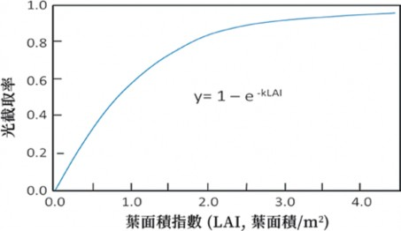
圖2.4 番茄葉面積指數與植物冠層光截取率的關係。(Heuvelink, 2013)
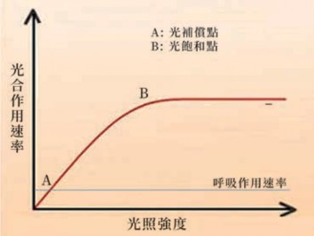
係數的變化取決於作物的葉面積指數。除了葉面積指數，葉片在冠層內的排列，以及葉片空間的角度也都會影響光穿透進入冠層內部的比例與消光係數。一般管理良好的溫室作物其消光係數約為0.7～0.9左右。
（四）光飽合點和光補償點
光直接驅動了綠色生物的光合作用，所以光合作用
圖2.5 光照強度對光合作用速率的影響
必須在有光的環境下才能進行，且其速率隨著光強度的高低而升降。不過，不管是否有光，植物體的每個活細胞都需維持正常的呼吸，並持續釋放出CO2。隨著光照逐漸減弱，光合速率下降，當達到淨光合
作用速率為零時 (圖2.5 A點)，這個時候的
光強度值稱為光補償點 (light compensation point)，因為此時光合作用的CO2吸收速率與呼吸作用的CO2釋放速率相等。相反地，光合速率隨著光照強度的增加而逐漸
1.5
20
薑
1.5～2.0
50～60
韭菜
增加，當達到某一特定光照強度 (圖2.5 B點)，即使光度繼續增加也無法使光合作用速率提升的時候，那麼此特定的光照強度值就是光飽和點 (light saturation point)。在台灣正常環境下，溫室管理的目標就是要在利用自然光照的環境下，提供適當的光度條件，維持作物獲得最大淨光合作用效率與產量。因此設施作物生產時，常會利用遮光、補光、間作、調整行株距或整枝修剪等措施，為達到最佳光環境的調控管理。光飽和點和光補償點會因作物種類、
品種及生育階段的不同而不同。表2.2列出主要蔬菜作物的光飽和點與補償點，經整理供讀者參考。光飽和點高是強光型蔬菜
蔬菜種類 | 光飽和點 (klx) | 光補償點 (klx) | 蔬菜種類 | 光飽和點 (klx) | 光補償點 (klx) |
芹菜 | 20～30 | 1.5～2.2 | 青花菜 | 30～40 | 2.0～2.5 |
蕹菜 | 40～50 | 1.5～2.0 | 甜瓜 | 50～60 | 2.2～2.7 |
結球白菜 | 40～50 | 1.8～2.5 | 南瓜 | 60～70 | 2.5～3.0 |
結球萵苣 | 40～50 | 2.0～2.5 | 甜椒 | 45～60 | 2.0～2.5 |
豇豆 | 55～65 | 2.5～3.0 | 蘿蔔 | 60～70 | 2.4 |
表2.2 不同蔬菜作物的光補償點與光飽和點
的特性，一般喜好陽光的作物，其光飽和點多在40,000～60,000lux之間。在飽和點以內，光照越強則光合速率越快。C3型作物的光飽和點比C4型植物要低一些。大多數蔬菜的光補償點在1,500～2,000lux。光補償點高低，反映該類蔬菜需要光照強度的強弱。光合作用是一個光生化反應，在光補償點與光飽和點的光強範圍內，光合速率與光照強度成正比。光補償點與光飽和點會受到環境溫度及CO2濃度的影響。許多研究證明，在作物達到最適溫度以前，提高大氣溫度可以提高光補償點與光飽和點；不過提高大氣中的CO2濃度雖然同樣可以提高光飽和點，但會降低光補償點，
萵苣 | 30～40 | 1.5 | 花椰菜 | 30～40 | 1.5～1.8 |
菠菜 | 20～30 | 1.5～2.0 | 胡瓜 | 40～60 | 1.5～2.5 |
莧菜 | 60～70 | 2.5～3.5 | 苦瓜 | 50～60 | 1.5～2.0 |
小白菜 | 30～40 | 1.5～2.5 | 番茄 | 60～70 | 2.0～2.5 |
甘藍 | 30～40 | 1.8～2.5 | 茄子 | 50～60 | 2.0～2.5 |
菜豆 | 30～40 | 2.0～2.5 | 甘薯 | 35～40 | 5.0 |
豌豆 | 50～60 | 1.5～2.0 | 芋 | 60～70 | 4.0 |
因為CO2可以刺激加速光合作用速率。
不過在參考光飽和點與補償點這些資料時要特別留意，因為有許多數值是以單獨葉面積在理想狀態下所測得。所以這些數值只代表在有光時的情況下，一個具有光合作用能力的特定葉片，在量測當時環境條件下CO2吸收與釋放間的平衡。若從全株的碳平衡來考量時，則還有生理活性極高的根系，以及其他旺盛呼吸的嫩芽、花苞、幼果等器官。這些器官在進行呼吸時並沒有光合作用來吸收、抵消由呼吸作用所釋放出來的CO2；而且一天中還有大約一半的時間是黑夜，在黑暗中全株所有活的細胞都只有呼吸而沒有光合作用在進
行。因此如果要達到一天24小時植物體內的碳平衡，則真正的補償點將會比表中的數值高出很多。此外，下位葉因為老化而降低生理活性，以及室內通風影響CO2濃度低下等因素，都是影響整體植冠光合作用速率較單葉量測值偏低的原因 (圖2.6)。這點值得管理者在執行光調控時特別留意。
（五） 光與植物的生長
影響植物生長發育的環境因素中，光具有特殊重要的地位，因為它不僅影響著植物幾乎所有的發育階段，而且還為光合作用提供能量，因此光是光合作用驅動力的來源。光照不足會降低光合作用效率，
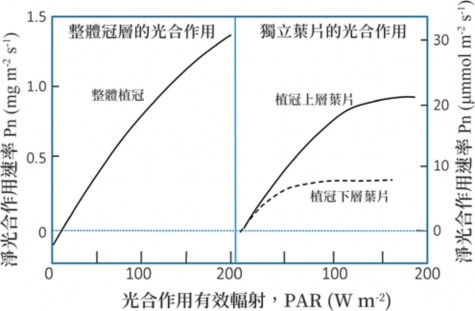
圖2.6 獨立葉片 (右) 與植冠 (左) 淨光合作用在不同光度下的反應曲線

使碳水化合物的淨產量減少，最終影響到植物生長速率。光合作用的過程可分為光反應和碳反應兩個階段。在光反應階段，植物利用光能產生ATP和NADPH，在碳反應階段，葉綠體利用光反應產生的NADPH和ATP同化CO2合成碳水化合物。
植物受到光調節影響的發育過程包括種子的發芽、莖的生長與分枝、葉和根的發育、葉綠素的合成、地上部的向光性，以及開花的誘導等等。光對植物莖的伸長有抑制的現象。一般認為光對莖的伸長抑制主要是因為光可以促進IAA轉化成為不具活性的化合物，或者提高IAA氧化酵素的活性，促進IAA的分解。同時，光可以活化鈣調蛋白 (calmodulin)，將更多的鈣離子送到細胞壁上，使減緩細胞壁的延長。
（六） 光對根莖比的影響
光照對於植物生長影響還反應在對於根莖比的影響上。根莖比是衡量植物地上部分與地下部分生長相關性的指標，即地下部分重量與地上部分亁物重的比值。在光飽和點範圍內，光照加強，光合產物累積增多，地下部的碳水化合物供應得到改善，因而促進根的生長，使根莖比增加。光照不足時，地上部向下輸送的光合產物減少，影響根部生長，而對地上部的生長相對影響較少，因而使根莖比下降。但是
在強光逆境之下，葉片溫度升高，空氣中相對濕度下降，植株地上部分因蒸散增加而過度失水，組織中水分潛勢下降，莖葉的生長受到抑制，所以根莖比反而會增大。
（七） 植物的午睡現象
通常在強光高溫的環境下， 尤其是夏季，植物普遍有午間光合作用速率下降的情形，這就是常說的午睡現象 (midday depression)。許多研究結果指出，利用葉面噴霧可以改善午睡現象，恢復光合作用速率，並減少葉面蒸散，維持良好氣孔導度。午睡現象主要是因為高溫強光下，葉面溫度升高，葉片因過度蒸散引起的生理性缺水，氣孔導度因而降低甚至關閉，最終導致光合作用速率降低。葉面噴霧措施已經證實可以減少蒸氣壓差，間接降低蒸散速率，有利於維持氣孔開度與二氧化碳的吸收。葉面噴霧唯一令人擔心的就是在高濕環境下，作物容易感染病害的問題。不過，這種噴霧措施一般都在高溫、晴朗天氣條件下進行，而且只在一天中溫度最高、濕度最低的正午時間前後為之。只要不涉及夜間濕度的上升，對於病害的影響應該不大。
（八） 日累積光量的概念與應用
日累積光量的概念
日累積光量 (daily light integral, DLI)
是一個簡單的概念，意思是在一天24 小時裡植物所接收到的光輻射量的總和。由於DLI的單位為mol m-2 d-1，所以也可以說是太陽PAR輻射每日投射到作物植冠的總量。日累積光量是歐美溫室農業中一個相對較新，但應用已久的理念。它的應用優勢就是植物的生長通常與DLI緊密相關，畢竟瞭解一天中傳遞的總光量比一天中進行一次短暫時間的光度測量要有用得多。
日累積光量的應用
根據每日溫室內光照感應器的記錄統
計，業者可以計算得知溫室所在地的平均全球輻射量 (global radiation)。如果記錄為室外日照量，則可將累計的輻射量乘以溫室透光率，即可知道自己溫室裡每天大約可以得到多少的DLI。根據該DLI值，再與擬栽培作物的建議DLI值比對，生產者即可
作物別 | DLI範圍 (mol m-2 d-1) | 補光條件 (µmol m-2 s-1) | 補光時數 (小時) |
表2.3 不同溫室作物的日累積光量 (DLI) 範圍
以知道是否有足夠的DLI及是否需要遮光或是額外的補光；同時還可以判斷需要補光的光強度與補光的小時數。如果DLI超過作物的需求，則還可以決定是否增加立體空間栽培其他作物，提高溫室面積與光能的利用效率。不過一般在管理上，都是根據歷史的DLI平均值與溫室內DLI的季節變化平均值來相應調整。
密西根州立大學園藝系提供了主要溫室作物 (表2.3) 及不同作物形態與生育階段 (表2.4) 的建議DLI值，可以作為栽培的參考。不過，在使用該表時，需瞭解這些推薦值還帶有主觀的考量因素，實際應用上還會因作物種類、季節氣候不同、溫室內溫度及CO2的變化、市場的品質標準，以及實際經濟考量等因素而做調整。因為將生產最高品質的DLI拆開用於生產更多的產品，而這些產品只需滿足市場可接受的品質，其經濟效益通常會更高。此外，雖然利用補光提高溫室作物的DLI可以有效加
番 茄 20～30 145～210 16～18 小 時
甜椒 | 20～30 | 95～160 | 16～20小時 |
胡 瓜 12～19 180～220 16～20 小 時
萵苣 | 12～13 | 50～100 | 12～16小時 |
草 莓 17～19 80～100 12～18 小 時
資料來源：Erik Runkle, 2019密西根州立大學

速生長，提高產量，但是如果番茄的補光時間超過20小時，會有葉片黃化與減產問題；萵苣日累積光量超過17mol/m2/day時容易發生頂燒病。
日累積光量的估算
日累積光量 (DLI) 是植物在一天24小
時裡所接收到光量的總和。由於DLI的單位為mol m-2 d-1，即代表每平方公尺 (m2) 溫室面積，每天 (day) 平均接收到的PAR的總量。
目前要計算平均累積光量比較準確而簡單的做法就是，使用PPFD光度感
扦插繁殖圃 (初期)
4～6
6～10
扦插繁殖圃 (後期)
目標DLI值
(mol m-2 d-1)
作物形態
表2.4 不同作物形態在環控溫室內的日累積光量建議值


穴 盤 育 苗 ( 初 期 ) 6～10
穴盤育苗 (後期)
10～15

陰 性 植 物 6～10
觀葉植物
6～10

盆 栽 球 根 植 物 6～15
採穗母本
10～20

一 年 生 花 壇 植 物 >10
綠葉蔬菜及香草植物
>12
盆 花 植 物 >12
小灌木植物
>12

草 本 多 年 生 植 物 >12
切花
>15
應器 (單位µmol m-2 s-1) 記錄每日有光時間的日照強度，然後將一天內所有的光照量累計起來就是當天的日累積光量。在溫帶國家的夏季，平均DLI值為60 mol m-2 d-1上下，冬季則只有 3 mol m-2 d-1左右。在溫室內由於透光率的影響，此數值應該更低。在台灣，夏季日累積光量大約在30～38 mol m-2 d-1之間，冬季則在15～25 mol m-2 d-1之間。台灣夏季的輻射低於溫帶地區的可能原因為台灣濕度高，大氣中的水分子與雜質粒子多，而且日照時間較溫帶地區短的影響所致。
如果光度計測量的是設施外的PPFD輻射量，則必須再乘上溫室的透光率，才能算出真正的日累積光量。溫室透光率可通過以下公式計算：透光率 (％) = (室內的光強度／室外的光強度) ×100
將 (2) 或 (3) 計算得到的每日累計輻射量 (mol m-2 d-1)，與表2.3及表2.4的不同作物的建議值比對，即可計算出目標地區及月份的日累計輻射量是否大於或小於擬種植作物的需求量。藉以判斷是否需要遮光，以及遮光的比率。例如，台中地區在七月份的日照輻射量記錄為40mol m-2 d-1，如果
果 菜 類 >15
資料來源：Erik Runkle, 2019
溫室的透光率為70％，則七月間預
期在溫室內的DLI = 40×0.7 = 28mol m-2 d-1。再參考表1.3對不同作物的建議DLI範圍，則可以知道這個輻射量對番茄及甜椒正好，但對萵苣則還多出15mol m-2 d-1，如果必要時就可以架設遮光網遮擋部分陽光，以減少積熱；或者可以利用空間種植吊掛型的植物，以利用剩餘的光能。
如果計算所得的平均每日累計輻射量低於目標作物的需求量，則可以選擇改種植其他需光度較小的作物，或者採取補光措施及採取其他可以提高光合作用速率的方法，以達到作物生長的最佳光照環境。
（九） 光質
所謂光質就是光的波長組成，植物許多的生理現象都受到光質的影響。前已述及，太陽光中主要有三個區段，其中可見光占全球輻射能量的45％，紅外線區占50％，紫外線區則只占5％。每個區段的不同波長輻射對植物的生長與發育都有重要的影響。
光質對光合作用的影響
光合作用利用的波長僅限於4 00 ～
700nm的可見光區，而且具有較高效率的範圍主要是400～510nm的藍光區及610～ 700nm的紅光區。葉綠素吸收最大的是紅光與藍光，對光合作用的效果也最大，綠
光的吸收最少，其作用也最小。藍光有利於葉綠素的合成，紅、藍、綠複合光有利於葉片的擴展，同時有利於光合產物的累積。一般認為紅外光與作物生長沒有直接關係，但因紅外光容易被阻隔在設施內並轉成熱，導致溫室效應，是目前夏季溫室栽培上較為困擾的積溫問題。
光質對生長發育的影響
Tinyane等人 (2013) 指出，番茄在紅色
遮光網覆蓋栽培，與黑色及黃色遮光網相比，可以改善番茄的整體果實品質，增加生物質總量、單果重、果實硬度和生物活性成分，包括維生素C、茄紅素及總酚類化合物等的含量。有研究指出，藍光及紫外光可以抑制莖的抽長及幼芽的生長，所以可以使植株較為矮壯；同時，有助於花青素與維生素C的合成，因此可以強化花色與提高品質。設施內作物受到光質的影響主要來自周邊的植株，葉片吸收紅光後因穿透或反射出遠紅光， 因此植株接收到從相鄰植株傳來比較多的遠紅光；當光源中紅光／遠紅光比值降低，會促進節間抽長，使分枝減少。通常需藉由調整行株距及植株高度以減少此現象。光質對植物的光週期反應也有影響，主要是在660nm的紅光及740nm的遠紅光透過光敏素的活性與不活性形態的轉變達到對種子發芽等多個生理反應的控制。另一研究發現，在白

天即將結束前以紅光或螢光燈照射番茄和甜椒幼苗可以減少節間長度 (Decoteau and Friend, 1991)，因此推論這種生理現象可能也是受到光敏素的控制，同時建議可以將這種紅光處理應用在苗株高度的控制上。
藍光可以促進番茄果實胡蘿萄素的合成，因而可以增加茄紅素的含量。光對有機物運輸的影響有明顯的晝夜週期性，但不同植物表現並不相同。其中一類植物，如馬鈴薯、番茄、大豆等，在24小時連續光照下，會抑制同化產物的輸出，必須調控有4小時以上的短暫黑暗時才能正常輸出；另一類植物，如向日葵、玉米、豌豆、蠶豆等，光照對其同化產物的對外輸送有促進的影響。研究顯示，光對同化產物運輸的影響可能是透過對光敏色素的調控或是影響水解酵素活性的結果。不同光波長對根菜類的同化物分配也有影響，如蘿蔔在紅光下將更多的同化物分配到莖和葉，而藍光則促進更多的同化物分配到儲藏根中。過去一般認為綠光是屬於無作用的光，不過最近的研究顯示綠光對特定萵苣品種的葉形與葉色有重要的影響。另外也發現，紫外光對設施內昆蟲的密度與活動，以及對特定真菌孢子囊的開裂等都有影響，這個現象值得栽培者對覆蓋材質的問題加以注意。表2.5說明全球輻射各波段的波長與能量以及對植物生長發育的影響。
光質對氣孔開閉的影響
光是影響氣孔運動的主要因素。在一
般情況下，氣孔在光照下開放，在黑暗中關閉。藍光促進氣孔打開，因為葉綠體中有一種特殊的藍光受體，對藍光的反應較為敏感。光還可以改變氣孔細胞鉀離子的移動與濃度變化，因而改變氣孔開度。
光質對酵素活性的影響
光合作用的碳固定過程中，核酮
醣-1,5-二磷酸羧化酶-氧化酶 (Rubisco) 是一個關鍵的重要酵素。光質不但對Rubisco的合成與含量有影響，同時還影響其活性，且不同光色對其影響程度從大到小依序為黃光>白光>紅光>藍光。另在多種植物中發現，增加光照中藍光的比例可以提高植物硝酸還原酵素的活性，因而可以降低硝酸鹽含量。由於碳架構與氨基的促進，所以藍光對蛋白質的合成有促進的效果，而紅光則對糖類的合成比較有利。
散射光的影響
在陰天或是多雲的日子，大氣中的水
氣與懸浮粒子多，太陽輻射經過折射後以不同行進方向到達地面，這就是散射光。在太陽的散射光中，紅光和黃光占50 ～ 60％，而在直射光中僅占35～37％。一般散射光的光強度較低，促進淨光合產物的合成量也不如直射光多。根據不同光質對光合作用的影響，在陰天下的光環境條
件反而對弱光型植物的生長比較有利。不過，畢竟散射光的光強度比不上直射光，所以淨光合產物的量也不如直射光多。散射光的另一個特點為多角度投射的光，所以沒有陰影，分布更均勻，光線能穿透到下位葉及冠層內部。因此在光度降低的情況下，仍可增加光截取率20～25％，對番
茄增產有顯著效果；而且散射光所攜帶能量較低，對設施內溫濕度的影響較溫和，不易達到光飽和，因而沒有過度積熱的問題。不過已有研究顯示，散射光對株型矮小，葉面積屬於平面分布的作物，如萵苣及綠葉蔬菜等，則無法利用散射光的優點，反而因為光度降低而影響光合作用效
表2.5 不同波長輻射每莫耳光子所帶的平均能量與植物的生理效應
光顏色 | 波長範圍 (nm) | 平均能量 (KJ/mol photons) | 植物生理效應 |
紫外線 | 100～400 | - | |
紫外線C | 100～280 | 471 | 輻射量極輕微，影響少。 減少植物葉面積、抑制下胚軸伸長、降低光合作用和生產力，促進多酚類物質的合成。輻射過量對植物有傷害性。 |
紫外線B | 280～320 | 399 | |
紫外線A | 320～400 | 332 | |
可見光 | 400～700 | - | 光合作用有效輻射範圍 |
紫光 | 400～425 | 290 | 葉綠素吸收少，影響光週期效應，阻止莖伸長。 |
藍光 | 425～490 | 274 | 藍光被葉綠素與類胡蘿蔔素吸收比例高，對光合作用影響大；促進植物的向光性；抑制節間伸長與葉片的擴展；同時促進植株二次代謝產物的積累。 |
綠光 | 490～550 | 230 | 植物吸收少，對光合作用的效率低。但促進萵苣的生長，抑制葉綠素與花青素的表現。 |
黃光 | 550～585 | 212 | 對生長影響小，主要對植株生長有輕微抑制。 |
橙光 | 585～640 | 196 | 作用接近紅光。 |
紅光 | 640～700 | 181 | 抑制節間伸長，促進分枝，延遲花分化，增加花青素、葉綠素和類胡蘿蔔素的累積。對光合作用與光週期效應有顯著影響。 |
遠紅光 | 700～780 | 166 | 為光敏素的反應波長，降低花青素、類胡蘿蔔素和葉綠素含量，促進葉片大小及鮮、亁重的增加。 |
紅外線 | 780 | 85 | 轉換成熱，在紅外線的照射下，有助果實成熟一致。 |

率，造成葉面積變小、產量減少的不利結果 (Hoffmann and Waaijenberg, 2001)。另外在品質上，散射光也減少了維生素C及總酚類化合物的含量 (Riga, 2018)。因此，散射光在不同植冠結構的作物上所得到的結果不同，需加以留意。
（十） 光週期
所謂光週期即一天24小時中，光期與暗期長短的週期性變化。植物對日照長度發生反應的現象，稱為光週期現象。在各種環境因子中，光週期受到一年中季節變化與緯度的影響最大。由於低緯度地區四季的日長變化較小，所以比較少發現原生的長日植物。
臨界日長
植物對光週期反應的結果一般都以開
花與否來認定。所以長日植物在短日環境下，或短日植物在長日環境下，都會延遲開花或不開花。這個引起植物是否進入開花或不開花的日照時數，我們稱之為臨界日長。光週期對植物生長的影響和光強度一樣，不同作物及同一作物不同品種的臨界日長可能都不一樣。因此，事先瞭解作物對日長的反應，是利用光週期調控花期的重要前期工作。植物對光週期的反應還受到溫度的影響。例如高溫會延遲菊花及聖誕紅在短日下的開花時間，增加短日反
應的天數。低溫則改變草莓及蟹爪蘭的光週期反應特性，通常15℃以上表現為短日植物，15℃以下則變為中性植物，不管長短日下都可開花。
植物對光週期的反應
根據植物對光週期的需求，可將其分
為長日植物、短日植物與中性植物。雖然目前已經瞭解，真正影響植物光週期反應的是暗期的長度，而非日間的時數，不過在習慣上仍然以長日及短日作為分類。
長日植物
即日照時數大於臨界日長時，可促進開花的植物，如小麥、大麥、白菜、甘藍、芹菜、萵苣、蘿蔔、胡蘿蔔、甜菜、蔥蒜類等。花卉如洋桔梗、香石竹、矮牽牛、球根秋海棠等。
短日植物
即日照時數短於臨界日長時，可促進開花的植物，如豇豆、茼蒿、大豆、扁豆、刀豆、莧菜、空心菜等；花卉如菊花、聖誕紅、長壽花、蟹爪蘭、波斯菊、百日草等。
中日性植物
即對光週期反應不敏感的植物，如黃瓜、菜豆、辣椒、茄子等；花卉類有玫瑰、三色堇、向日葵、石竹、天竺葵等。
許多理論上屬於短日植物的作物，由於對短日的要求並不十分嚴格，實際上可以當成中性植物栽培。因而演變成許多所謂的相對長日 (春小麥) 或相對短日植物 (菊花)，意指在較為有利的日照長短下，具有促進開花的效果。此外，少數植物演化為長短日植物 (夜茉莉)、短長日植物 (白花三葉草、翠菊) 或定日長植物 (甘蔗)，不過這些植物並非重要經濟作物或其開花與否與經濟栽培影響不大。
光週期不僅影響植物的花芽分化、抽薹、開花、結實、分支習性，同時也影響地下儲藏器官的形成與發育。長日對激勃素的合成有促進的作用，因此草莓、吊蘭等在夏季長日環境下會受刺激而產生更多的走莖，有利種苗的繁殖生產。
光敏素
關於植物對光週期的反應，一般認為
是受到一種稱為光敏素 (phytochrome) 物質的影響。光敏素具有Pfr及Pr兩種互為可逆的形態，前者對紅外光 (730nm) 敏感，在接受紅外光照射以後轉成Pr；後者對紅光 (660nm) 敏感，所以受紅光照射以後轉成Pfr。其中Pfr是具有生理有效性的形態，一般相信是Pfr/Pr比值改變時，對植物的開花產生影響。比值大時有利長日植物的開花，比值小時則有利於短日植物的開花。不過研究發現，Pfr在夜間長於3小時以上
時會逐漸反轉為不活躍的Pr形態。栽培者可以簡單利用這個生理特性調控植物的開花習性。許多研究也發現，光敏素對種子發芽、葉綠素的合成與根、莖的生長等也有影響，對植物生理調節具有深遠的意義。
光週期的應用
目前光週期應用最多的是在花卉作
物的開花期控制與蔬菜、果樹類的產期調節，包括菊花、聖誕紅、茭白筍、紅龍果、印度棗、葡萄等。控制方法可以用完全遮光的短日處理使長日植物在長日環境下不開花，但使短日植物在長日環境下開花。相反的，利用夜間點燈的方法營造長日條件 (其實是中斷長夜的條件)，使長日植物在短日環境下開花，但使短日植物在短日環境下不開花。
二、溫度
植物從種子發芽到生長發育的過程，都是一系列極度複雜的生理代謝作用同時在進行，而且這些生理代謝作用是彼此緊密地互相聯結、互相影響。由於這些生理代謝過程都有複雜的酵素參與反應，所以溫度對植物的生長與發育具有關鍵性的影響。在作物栽培上，只有將溫度調控在作物生長的最適範圍，才可以獲得較佳的產量與品質 (De Koning, 1996)。

（一） 溫度三基點
一般植物的生長溫度大約在0～45℃之間。在這個範圍內，植物對溫度的反應有三個關鍵點，就是最低溫度 (minimum temperature)、最高溫度 (maximum temperature)和最適溫度 (optimal temperature)，這就是所謂的植物生長溫度三基點。
溫度對所有植物的一項原則性影響是，植株的生長發育速率隨著溫度降低而減緩。這現象包括從苗期到開花所需的時間、葉片展開的或果實肥大的速率；隨著
2.6
溫度繼續降低，植物的生長速度更為緩慢，並在某一特定溫度的時候停止生長，此時的溫度稱為最低溫度。最低溫度會因植物的種類不同而異，其範圍一般在0～ 10℃之間。相反的，當溫度從最低往上逐漸升高時，植物的生長與發育速度會逐漸加快，基本上也是呈線性增加，直到生長速率達到最大的特定溫度時為止，那麼此時的溫度可以稱為該植物生長的最適溫度。最適溫度會因為作物種類不同或相同作物的不同生育階段而不同。當溫度繼續
表 常見作物 作物別 | 的生長最低、最適、最高溫度 生長溫度 (℃) | ||
最低溫度 | 最適溫度 | 最高溫度 | |
作物別 | 生長溫度 (℃) | ||
最低溫度 | 最適溫度 | 最高溫度 | |
甜瓜 | 8～10 | 20～30 | 35～38 |
花椰菜 | 2～5 | 18～25 | 25～28 |
夏南瓜 | 7～9 | 25～30 | 35～40 |
芥菜 | 3～5 | 15～22 | 25～28 |
絲瓜 | 8～10 | 25～30 | 35～40 |
不結球白菜類 | 6～8 | 20～25 | 28～32 |
胡瓜 | 8～10 | 22～30 | 35～38 |
芹菜 | 2～5 | 15～22 | 25～28 |
茄子 | 7～10 | 22～32 | 35～38 |
韭菜 | 2～5 | 18～25 | 32～35 |
四季豆 | 6～9 | 18～25 | 28～30 |
莧菜 | 10～12 | 25～35 | 38～40 |
西瓜 | 8～12 22～35 38～40 | 結球白菜 | 2～5 | 18～22 26～28 | |||
南瓜 | 7～9 18～32 35 | 青花菜 | 3～5 | 15～23 25～28 | |||
苦瓜 | 10～12 22～30 35～38 | 芥藍 | 1～3 | 18～25 28～32 | |||
冬瓜 | 6～8 25～30 35～38 | 菠菜 | 2～3 | 15～23 25～28 | |||
番茄 | 7～9 20～28 32～35 | 萵苣 | 4～6 | 18～23 25～28 | |||
甜椒 | 6～8 20～28 32～35 | 茼蒿 | 7～10 | 18～23 25～27 | |||
豇豆 | 9～11 25～30 32～35 | 空心菜 | 8～11 | 25～32 35～38 | |||
豌豆 | 4～7 | 16～22 | 25～28 | 蘿蔔 | 3～5 | 16～21 | 23～25 |
甘 藍 2～5 18～22 27～29 胡 蘿 蔔 3～5 18～23 25～26
升高，植物的生理代謝活性逐漸減慢，最終停止生長，此時的溫度就是最高溫度。通常，最低生長溫度比較高的植物，具有較高的最適溫度範圍。當環境溫度高於最高溫度或低於最低溫度時，即已經超過植物所能忍受的上下限時，植物的生理代謝過程和胞器構造會受到嚴重損害，並因而導致死亡。因此在作物生產上，應儘量避免在栽培過程中讓作物處在偏離最適溫度過大的逆境溫度中。
不過這裡也必須提醒，通常參考一般的作物最適生長溫度資料時，必須留意取得資料的地區氣候特性。因為原生於較高緯度或高海拔的植物，其最適溫度通常都較冷涼；反之，如果溫度資料是來自熱帶地區的，則其最適溫度會較高。這是因為作物經過長時間人為的選育改良，同一種作物在高溫地區栽培的品種就可能越來越耐熱；而在低溫地區的品種則往相反方向發展。表
（二） 溫度對種子發芽的影響
影響種子發芽的環境因子為溫度、水分及空氣 (氧的供應)，其中以溫度的影響最為關鍵。種子在吸水後，細胞的生理活性即開始增加；在種子發芽生長過程中，各個生理生化反應中的酵素系統、生長荷爾蒙的合成，以及增生的細胞及其內容物產生等都需要大量的能量與碳架構，這些都仰賴呼吸作用提供。所以種子的發芽過程受到溫度的影響極大。每一個作物的種子都有其最適的發芽溫度 (表2.7)，一般種子的最適發芽溫度是其生命週期中比較偏
水稻 | 10 | 45 | 20～35 |
玉米 | 10 | 40 | 25～30 |
番茄 | 11 | 30 | 15～27 |
茄子 | 15 | 33 | 20～25 |
南瓜 | 15 | 40 | 20～25 |
萵苣 | 4 | 25 | 15～20 |
甘藍 | 8 | 35 | 15～30 |
5 | 30 | 15～20 |
表2.7 不同作物種子發芽的最低、最適及最高溫度
作物別 | 發芽溫度 (°C) | ||
最低 | 最高 | 最適溫度 | |
小麥 | 20 | 40 | 25～30 |
大豆 | 10 | 35 | 25～30 |
胡瓜 | 18 | 30 | 25～30 |
2.6分別列出不同作物的生長最
高、最低溫度及最適溫度。
以主觀地將農作物置於不同的溫度反應類
番椒 | 15 | 35 | 20～30 |
根據每種作物的基本溫度，栽培者可
西瓜 | 15 | 35 | 25～30 |
別，例如耐寒植物的最低溫度一般在5℃以
下；溫帶植物的最低溫度在5～10℃之間；而對低溫敏感的暖季植物其最低溫度一般都在8℃以上。
胡蘿蔔 | 11 | 30 | 15～25 |
資料來源：
菠菜
Hasanuzzaman et al., 2013

高的階段。溫度高於或低於最適溫度對種子的發芽都會造成延遲的影響，同時會降低發芽率與發芽勢。
（三） 溫度對作物生長發育的影響
作物的溫度適應性
植物對各種環境因子的反應中，以對
溫度的反應最為敏感。各種植物的生長發育，對於溫度都有一定的範圍要求。依據台灣的氣候條件，一般就不同作物對生長溫度要求的不同，可概略分為下列三大類，其具體的生長溫度範圍請參閱表2.6的說明，讀者可以參照作為溫度管理的依據。
暖季蔬菜 (適合台灣中、高溫季節種植的蔬菜)：
豇豆、大豆、刀豆、豆薯、牛蒡、洛葵、茄子、夏南瓜、南瓜、冬瓜、絲瓜、苦瓜、莧菜、空心菜、地瓜葉、芋頭、蓮藕、黃秋葵、馬齒莧、紫蘇、薑等。
中間型蔬菜 (偏好溫暖氣候，既不耐熱，也不耐寒)：
四季豆、番茄、甜椒、黃瓜。
涼季蔬菜 (適合台灣冷涼季節種植的蔬菜)：
結球白菜、甘藍、花椰菜、青花菜、
油菜、蘿蔔、芥菜心、芥藍、芥菜、球莖甘藍、菠菜、甜菜、蠶豆、豌
豆、結球萵苣、茼蒿、葉萵苣、馬鈴薯、洋蔥、蔥、大蒜、芹菜、香菜、胡蘿蔔、茴香。
不過，台灣在過去40餘年來，在蔬菜作物耐熱性上的品種改良工作已有長足的進展，例如番茄、甘藍、青花菜、小白菜與菠菜、萵苣等，增加春、夏之末的次高溫月份在平地種植品種的選擇性。
溫度對植物生理代謝的影響
植物的各種生理現象， 例如光合、
呼吸、蒸散、吸收、運輸等作用，以至於休眠、開花、結果等過程都受到溫度的影響，而且也都與溫度之間存在著一種
「量」的關係。因此，所謂的最適溫度也會因為植物的不同生育階段而有差異。同時也會因為其他環境因子的變化而受到影響。植物的生長量取決於淨同化物質的累
積量，也就是光合作用的產出與呼吸作用消耗量之間的差異量。通常日間溫度高，有利於光合作用的旺盛進行，產生更多的碳水化合物；夜間溫度低則減緩呼吸作用速率，因而減少碳水化合物的消耗，最終得到最大的淨光合產物量可被利用於生長。溫度會影響細胞有絲分裂的速率而間接影響作物的生長速率。
植物的生理代謝過程需要許多能量，而植物產生高能ATP有兩個路徑，一個發
生在粒腺體中，透過氧化磷酸化反應產生；此途徑其實就是呼吸作用，因為有酵素的參與，因此明顯受到溫度的影響。另一個途徑則為在葉綠體中的光合磷酸化反應，必須在有光的情形下才能進行。
此外，影響作物正常生長的還有最高與最低溫度，這是作物維持生長的上下限溫度；也就是說，當溫度低於某一作物的最低溫度時，植株即停止生長，甚至受到低溫傷害。反之，若高於最高溫度時也有相同反應，只是高、低溫逆境造成影響的機制有些不同。
溫度對光合產物分配的影響
當溫度逐漸升高時， 由於作物生長
速率加快，所以用來補充新生細胞內容物所需的光合產物與來自根部吸收的水分與礦物營養也必須相對地增加。此外，溫度上升以後，各種生理代謝作用加快，維持各個細胞生理正常，以及修復蛋白質與膜損害等所需要的能量也會較多，因此造成維持呼吸的速率會加快，對碳水化合物的消耗需求與競爭力也就隨之增加。一般發育中的新芽、花蕾和幼果對光合產物具有較大的競爭力。但有證據顯示，在高溫環境下，生長中的嫩芽對新合成的光合產物具有比花、果更強的競爭力。大多數生理代謝過程在較高溫度下受到加速，但這可能同時具有正面和負面影響。例如在多數
情況下，高溫雖然加速作物生長與果實肥大，但是相對地呼吸作用的加快卻也使光合作用淨產物減少，這說明可被分配到發育中果實的光合產物量減少，因此果實會更小，產量降低。因此在栽培過程中，環境溫度必須妥善調控，以獲得光合作用與呼吸作用之間的最佳平衡。
根溫對作物生長的影響
根溫是影響植物生長的重要環境因
子之一。它會影響種子的萌芽、根系的生理活性、根對水分與礦物營養的吸收與運輸、土壤微生物的繁衍與生理活動狀況，以及影響土壤中礦物營養的可獲得性 (Mozafar et al., 1993; Marschner et al., 1996; Bode Stoltzfus et al., 1998)。台灣夏季溫度偏高，加上日照較強，因此土壤溫度上升明顯；尤其在離地栽培時，介質溫度常會超過35℃，但是業者常未察覺 (圖2.7)。
根系生長的最佳溫度是因物種與栽培
品種之不同而異 (Cooper, 1973)。作者總結了有關根溫對植物生長和對養分吸收作用的早期研究。對於大多數溫室作物而言，植物生長對根部溫度的生理代謝反應曲線顯示出從低溫往最適溫度逐漸上升時，其累積的亁物質緩慢上升，但當根部溫度高於植物的最適溫度時，其亁物質即會快速地下降。
一般作物的最適根溫約在22～28°C之
面，在低溫環境下，提升根溫可以透過
面積的擴大速度降低有關。在溫帶地區，

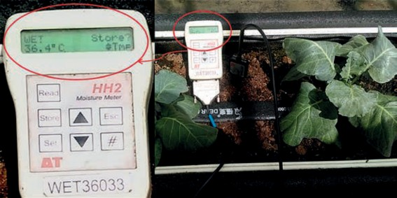
圖2.7 夏天栽培槽的介質溫度在上午10:30即已達36.4℃
間，生長在最適根溫的植株可以獲得最佳的礦物元素吸收率、最大的生長速率與地上部亁物重，以及最佳的水分利用效率。但當根溫高於或低於最適根溫範圍時，前述各種生理反應即逐漸趨緩或停止 (James et al., 1990; Teresa et al., 1994; Daskalaki and Burrage, 1997)。在10～12℃較低的根溫栽培下，地上部的礦物元素含量比較高根溫下的植株少，但根部卻累積較高含量的各種元素，顯示在低根溫下，營養元素的運輸也受到抑制 (Yan, et al., 2012)。
在冬季低溫的情況下， 作物根系的
酵素活性也會降低，根部呼吸速率因而下降，導致根部需耗能的主動吸收能力下降。再者，根系生長減緩，也與根部吸水
土壤溫度即使只有小幅升高，也可能引起植物生長和養分吸收的巨大變化，這說明根溫對植物養分的吸收和利用十分重要。筆者曾經觀察過在晴朗的冬季，溫室在日光照射的影響下，氣溫會很快地從15℃以下的低夜溫度快速地升高到28～30℃，而土壤或介質的溫度可能還在緩慢變化並保持在低溫狀態。因此，地上部葉片因高溫過度蒸散已經呈現萎凋狀態；這說明即使地上部已處於適當的溫度下，根部的生理還受到低根溫的限制。Lee等 (2004年) 指出，當根系暴露於低溫下時，根壓、水傳導率和養分的主動吸收與運輸都會嚴重降低。因此，低根溫會抑制養分吸收 (Peng and Dang, 2003; Cornillon, 1974)。另一方
增加新根系形成、提升根系生理活性及加速土壤養分礦化速度來改善養分吸收與作物的生長速率 (Carey and Berry, 1978; Marschner, 1990; Kozlowski and Pallardy, 1997; Domisch et al., 2002)。
前人研究發現，將根溫從12℃升高到
25℃通常會改善根部向地上部供應水和養分的功能，因而導致根的生長量減少，根莖比降低，葉片中的葉綠素含量及氣體交換量增加；將根溫從25℃增加到30℃會增加根莖比，並可以提高光合速率 (Awal et al., 2003; Ziska, 1998)。但是，根溫進一步升高至超過最適溫度時，會因為養分吸收減少和葉綠素含量降低，擾亂植物與水的關係以及降低氣孔導度或改變植物的化學成分而導致生長受到抑制 (Behboudian et al., 1994; Du and Tachibana, 1994; Dodd et al., 2000; Wang et al., 2004b)。番茄植株在 36℃根溫下與在25℃根溫下生長的植株相比，其生長速率和磷的吸收量均有減少的趨勢 (Klock et al., 1997)。已有研究指出，在根部溫度過高的影響下，植物會改變內生荷爾蒙的平衡 (Wang et al., 2004) 以及改變水分和養分吸收 (Bowen, 1991) 來改變地上部的生長反應。
一項針對根域介質冷卻對黃瓜生長
和產量的影響的研究結果顯示，在自然根區溫度為26～31℃的環境下，降低根溫至
24～26℃可以明顯增加結果數與產量。因此，即使莖蔓暴露於高溫下，根區冷卻仍可以顯著改善根部的生長，同時提高黃瓜的產量 (Moon et al., 2007) 。另一項研究將胡瓜根溫從25℃升高到35～38℃時，結果根的亁重和葉面積顯著變小，而且葉片中大多數礦物營養元素的含量明顯降低。胡瓜在過高根溫的逆境下，整體根系的呼吸速率加快，而這種根呼吸率的升高是由於替代呼吸途徑加速的結果 (Moon et al., 2007) 。
綜合而言，植物根部每日呼吸的碳消耗量約占全株的17～30％左右。但根溫越高，根中的碳水化合物因為呼吸作用的加速而使其消耗量增加 (Marschner, 1995)。 Atkin et al. (2000) 指出，根呼吸所消耗的碳主要由當日光合作用所固定的碳分配轉運而得。然而，由於根的積儲競爭能力低，在生長過程中，被分配到根部用於呼吸的光合產物量明顯較其他器官為少 (Atkin et al., 2000)。當根部處於逆境溫度時，這種光合產物分配的平衡會受到更大的影響。基於台灣夏季溫度偏高，加上日照較強，如果土壤與介質沒有做好隔熱與防曬，則溫度上升達到危害根系的情形十分普遍，值得栽培者注意。

溫週期效應
作物正常的生長需要有一定的日夜
溫度的變化，而且隨著植株長大，對日夜溫度差的需求更為明顯。這種日夜溫度變化的效應在植物中被稱為「溫週期」 (thermoperiodism)。
日夜溫差
通常日間溫度較高，夜間溫度較低的溫度日變化有利於植物的生長和分化，其生長速率也快。一般來說，夜溫較高有利於生長，夜溫較低有利於分化。番茄、甜椒等溫室作物對日夜溫度變化特別敏感，當夜間溫度低於白天溫度時，植株的開花數與著果率均會增加，而且果實的品質較佳。在溫度較高的情況下，如果日夜溫度長期保持在相近的範圍，則開花和結果可能會受到不利影響，尤其是在高夜溫的情況下，不但開花數減少，落花與落果的比例也會比較高。這種現象通常會限制多數溫室作物在熱帶種植的產量。
日間較高的溫度有利於植物體內有機物質的合成與轉化；而較低的夜溫則可降低呼吸作用的消耗，增加一天內淨光合作用產物的累積。如果將日間溫度維持在光合作用的最適範圍，則大多數植物的夜間最適溫度範圍約在
18～24℃。夜間較低溫度使積儲的溫度下降，有利於積儲接收更多的光合產物，也就是糖。除了對作物生長和花苞發育的生理影響外，較低的夜間溫度對植株的吸收與運輸也有助益。首先，夜間在較涼的條件下，土壤溫度通常維持在較高溫度，因而有利於維持較高的根壓，這會增加木質部導管中的壓力，因此木質部流中攜帶的鈣和其他生長物質容易被輸送到葉尖及發育中的芽、花和果實。這種膨壓通常可以加速果實的肥大，以及可以確保鈣被帶到葉片的邊緣與果實頂部，減少缺鈣的現象。
夜間降溫管理還可以確保植株呼吸速率減緩，因為呼吸消耗了寶貴的同化產物，並且呼吸速率隨著溫度的升高而迅速增加。在非常溫暖的夜間溫度條件下，呼吸作用會消耗與通過光合作用產生的同化產物幾乎同等的碳量，並可能嚴重限制植物的生長。一般在可環控的溫室栽培時，如果日間晴朗光照強時，有利的日夜溫差大約在 5～8℃，如果是陰雨天光照強度低，則應適度調低至3～5℃。溫帶地區或乾旱地區的溫差則常在10℃以上。
DIF：日夜溫差控制
DIF是指晝夜間溫度差的應用。當
白天溫度比夜間高時， DIF是正值 (+DIF)；而當白天溫度比夜間低時， DIF為負值 (–DIF)。一些溫室業者利用DIF正負值的調節來抑制莖的伸長，間接控制植株高度。理論上，負 DIF導致節間變短。研究發現，對產生激勃素基因有缺陷的番茄矮化突變植株，並無法利用+DIF來刺激節間的伸長，因此認為DIF主要是改變植物體內激勃素的合成。後續的研究也顯示，正常的番茄植株在日溫20℃／夜溫16℃ (+DIF) 下產生的激勃素比在日溫16℃／夜溫20℃ (–DIF) 下產生的激勃素要多得多。因此推論，在負 DIF下節間細胞的伸長較少，是因為產生的激勃素較少之故。
進一步的研究發現，在高溫地區要獲得–DIF的條件困難，可以利用日出後的前兩個小時代表日溫，拿來跟夜溫比較。也就是在這段代表日溫的時間裡利用可行的辦法降低溫度，例如澆灌冰水或導入冷氣，使低於夜間溫度，同樣可以得到負值DIF的效果。不過，儘管不同的晝夜溫度不會影響開花時間，但會影響花數和株高。因為較高的夜溫及日平均溫度會促進植株的生長。同時在應用DIF做株高控制時還要特別留意，一組特定的DIF
溫度控制效果，只能適用於該特定作物的特定條件。一旦溫度組合改變即改變了日平均溫度的目標設定值，對於植株的生長影響將會隨之改變。再者，DIF的效果在不同作物及同一作物不同品種上的結果也不同。所以在應用上需先行做過測試確認後再施行比較安全。
日平均溫度
長時間來，歐美的設施栽培業者相當重視所謂的每日平均溫度 (average daily temperature) 的調控，並且認為一天或連續幾天的平均溫度對作物生長的影響比晝夜溫差更為重要。植物的生長與發育是受到每日平均溫度的影響。換句話說，如果白天和黑夜分別長12個小時，則在日溫24℃／夜溫 18℃的環境下栽培的植物將與在日夜均為21℃下栽培的植物具有相同的生長速度，而可以同時達到開花的階段 (Bakker, 1989; De Koning, 1996)。溫度是影響根系伸長、幼苗生長以及植物成熟開花快慢的主要因子。隨著日平均溫度的降低，植物的生長減緩；而隨著日平均溫度的升高，植物的生長則加速。因此，如果作物生長落後於預期，則可以提高溫度以加快發育。如果作物生長超前，則可以透過

降低溫度以減緩植物的生長速度。所以調節日平均溫度變成控制作物生長的有利方法。
植物的最適溫度是由參與利用光合作用同化產物的相關代謝過程來決定，例如葉片新合成的光合產物在芽、葉、根和果實中的分配或根部對水分及礦物營養元素的吸收與運輸等。溫室作物番茄、胡瓜、甜椒的生長發育速度及產量主要受到24小時日夜平均溫度的影響，但節間的伸長則受到日夜溫差 (DIF) 的影響 (Bakker, 1989; De Koning, 1992)。株高 (或蔓長) 既受生長速度的促進，又受限於節間長度，因此同時受到日夜平均溫度與日夜溫差的影響。
溫帶地區的溫室管理上，生產者可以利用24小時平均溫度的控制來引導植物傾向營養生長或生殖生長，使作物達到最佳平衡，進而實現持續的高產。一般作物的最適合光合作用溫度發生在25～30℃之間，該溫度作為光合作用發生當天的溫度管理目標。溫室甜椒營養生長的最適溫度為 21～23℃；然而，著果是由24小時平均溫度和晝夜溫差決定的 (Bakker, 1989)，有利於開花和著果的最佳夜間溫度為16 ～ 18 ℃ (Pressman,
1998)。 由此可以看出作物在營養生長期和開花結果期的溫度管理存在著差異。還有，主要溫室蔬菜作物，如胡瓜、番茄、甜椒等，其24小時的目標平均溫度可能不同，即使同一作物的不同品種之間也存在差異。加上育種家針對熱帶地區的環境特性，已經將作物品種的耐熱性做了顯著的改良與提升，所以不少蔬菜品種的最適光合作用溫度已經相對提高。栽培者必須根據經驗或透過試驗進行微調。 日平均溫度的計算並不困難，當白天和黑夜分別為12小時時，只需計算白天和黑夜溫度的平均值即可確定。但是，如果白天和晚上有多個溫度的設定點時，則日平均溫度的的計算方法只要將每個階段的設定溫度乘以小時數，再將各階段乘積累加起來後除以 24小時即可得到日平均溫度。例如有些溫室栽培業者為了節約加溫成本，將一天24小時的溫度設成白天溫度、上半夜溫度及下半夜溫度等三個時間段。那麼就要將每個時間段的溫度乘以該階段的小時數，然後將各時間段的積數加起來再除以24小時，即得到正確的日平均溫度。
如果栽培者想要更改目標溫度設定，請務必瞭解對作物的影響。例如計畫
減少日平均溫度，但還是希望要跟往年同一天出貨，則必須往前增加栽培時間。如果必須增加栽培日數，則必須增加更多管理勞力與溫控的天數，同時也意味著會減少一年裡的種植次數，因此在做改變之前，必須將間接費用仔細核算後再行動。
不過，目前想要在台灣利用日平均溫度來控制作物生長卻仍有其難處。因為現今在國內還少有可以完全控制日夜溫度的溫室，絕大部分還是屬於半開放式的設施，其溫度受到陰晴變化影響很大。雖然可以用類似積分方式累計日間多變的溫度而計算得到日平均溫度，但是如何控制後續的日夜溫度來調節作物的生長速度顯然不是容易的事。
春化作用
自然界中有些植物在營養生長階段必須感受到特定的低溫後，才能轉為生殖生長 (開花) 的現象稱為春化作用 (vernalization)。大多植物感受春化處理反應的部位為莖頂端的生長點，當生長點感受足夠低溫的刺激後，即可以從營養生長轉為生殖生長，進入開花階段。根據作物對春化低溫的有效感應時間不同，可以分為種子春化型及綠株春化型兩大類。前者在種子活
化以後，即萌芽階段就對低溫感應有效，例如白菜、芥菜、蘿蔔、蠶豆等；後者則僅在植株達到一定葉數以後才能感應低溫，例如甘藍、洋蔥、大蒜、芹菜等。
春化作用有效的感應溫度和感應時間隨著作物的種類與品種的不同而有差異。一般作物在0～15℃感應5～30天即有效，特定溫帶作物則需在10℃以下的效果才佳，如晚生種蘿蔔與甘藍。不過台灣近年在耐熱品種改良獲得成功後，一些青花菜及花椰菜的品種，其春化有效溫度已經大幅提高到 23℃以上，使得該兩作物在國內的產期更為延長。近年，台南區農業改良場針對十字花科蔬菜的春化作用已經發展出一套利用生長箱控溫促成春化作用的技術，對於在品種選育和在稍高溫季節的採種工作幫助極大。
溫度逆境
所謂溫度逆境是指植物在遭遇到高於
或低於最適生長溫度範圍時，所呈現出的一種不利生理反應，通常可以區分為高溫逆境與低溫逆境。高溫對作物生長與發育的影響主要反應在種子的發芽率降低、地上部與地下部的生長改變、光合葉面積變小、開花結果減少、產量降低等。從生理上看則細胞酵素活性降低、光合作用速率

下降、光呼吸與呼吸作用加快、淨光合作用產物減少、缺水逆境加劇。低溫對植物造成寒害的主要原因則包括：細胞質流受阻、蛋白質合成減少、光合和呼吸作用的速率降低、生理代謝失調和細胞質膜特性改變等 (Hopkins, 1995; Taiz and Zeiger, 2010)。
高溫逆境
高溫逆境指溫度高於植物可忍受的臨界值，對植物的生長和發育造成不可逆的傷害，而高溫的臨界值是指植物生長開始減緩的溫度 (Wahid et al., 2007)。不同植物的臨界溫度不同，甚至不同品種以及不同生育階段的臨界溫度也不同。高溫逆境對植物最常見的影響是生長受到阻礙。由於高溫逆境常伴隨缺水逆境的同時發生，因此缺水和高溫的結合對作物的生長和產量所造成的危害要大於兩種因素的個別危害。在高等植物中，高溫逆境會阻礙細胞分裂和細胞伸長速率，因而影響葉片伸展的大小和光合面積。嚴重的高溫逆境會導致葉片發育不正常，有黃化、焦枯的現象。作物在開花結實期間，若遇高溫，會使作物減數分裂不正常而產生無效的花粉或受精困難，因而無法產生種子。
植物的生理代謝過程普遍受到環境溫度變化的影響，而植物對應逆境溫度
的能力是一個複雜的過程，並且取決於環境因素以及植物本身的遺傳能力。如前所述，大多數植物生命過程對溫度的穩定性相對較寬，範圍從 0℃～35℃之間。溫度升高到一定程度會提高植物的生理代謝活性和生長速度，包括光合作用、呼吸作用和酵素活性；此後如果溫度繼續升高，這些生理代謝活性趨於下降。
低溫逆境
低溫對作物生長的影響一般可歸納幾個方面，即生存、細胞分裂、光合作用、呼吸作用、水與礦物營養的吸收與運輸，最後是生長與作物產量。低溫對植物的影響因發生溫度的不同與植物受傷害的不同，可分為寒害與凍害。
寒害
寒害一般是指溫度在生長最適溫度以
下，結冰溫度以上的低溫對植物組織或器官造成的傷害。寒害的發生一般都在作物生長發育季節裡，由於氣溫下降到低於作物的下限溫度時，使作物生理活動受到障礙。通常植物遭受寒害時，主要是影響幼苗的生長、造成葉發育受阻、葉片擴展的速度減緩，葉面積減小、新葉簇生。一些特殊的低溫狀況下，植物可能會伴隨出現萎凋、黃化和組織壞死的現象，甚
至死亡。有些植物的生殖生長對低溫特別敏感，例如水稻植株在孕穗期，若處於17℃以下低溫時，會因減數分裂異常而無法順利完成授粉。寒流帶來的低溫也常造成番茄與草莓花芽發育異常而形成畸形果。寒害對植物的影響，主要是造成代謝失常、原生質流受損、呼吸作用及光合作用速率下降和蛋白質合成量的降低，以及合成蛋白質形式的改變。寒害對植物細胞的傷害主要是影響系列代謝反應，一般相信是影響生物膜的物理狀態的可逆性改變，亦即改變膜的流動性、膜上蛋白質孔道受損、細胞間隔喪失、溶質流出、造成光合作用和呼吸作用等與膜有關代謝作用受阻。
寒害對不同作物、品種、發育期的危害是不同的。一般作物在出苗期和生育後期對寒害的抵抗能力較強；而在生殖器官開始分化到抽穗、開花、受精及幼果期對寒害最為敏感。當作物遭到寒害時，作物體內細胞中具有生命的細胞質流動減慢，並逐漸停止流動，作物養分的吸收和輸送也就因細胞質的停止流動而受到障礙。如果低溫寒害持續時間短，溫度回升後，細胞內細胞質仍能恢復正常流動，作物也能繼續正常的生長發育；如果低溫
持續時間比較長，作物就會因細胞質的停止流動而停止生長發育，也就是遭遇到了寒害。
凍害
植物在遇到冰點以下的低溫時，所受
的傷害稱爲凍害 (freezing injury)。當溫度下降到冰點以下時會使植物組織凍結，存在於細胞內或在細胞間隙中的水分則會形成冰晶，對細胞造成機械性的傷害。一般耐凍植物常較能忍受細胞間隙的結凍，然而一旦發生細胞內結凍，則會形成冰晶刺破細胞膜而破壞了細胞的完整性，導致細胞死亡。水結成冰以及避免細胞內結冰是植物是否受凍害影響的關鍵因數。植物細胞任何避免或延遲冰晶形成的機制，常可提高組織的抗寒能力。
三、濕度
水蒸氣是水的氣態形式，是空氣除了氮與氧之外的其他氣體成分之一。相對濕度是指空氣中實際所含水蒸氣壓和同溫度下飽和水蒸氣壓的百分比值。但單憑相對濕度本身並不能說明有關植物蒸散作用的任何資訊，也不能用作對植物水分生理狀況的良好指標。溫室環境中影響植物蒸散作用與水分吸收的主要因素是空氣的蒸氣壓差 (VPD)。其相對地也影響其他生理過

程，如授粉、生長、產量等。
（一） 蒸氣壓差
蒸氣壓差是植物蒸散作用及根與葉之間水分輸送的驅動力。蒸氣壓差 (VPD) 是指在一定溫度下，飽和蒸氣壓與空氣中的絕對蒸氣壓之間的差值，通常以千帕 (kPa)為單位。它表示的是實際空氣水分含量距離水氣飽和狀態的程度，即空氣的乾燥程度。VPD會影響植物氣孔的閉合，所以與蒸散作用和光合作用的速率直接相關，並影響番茄果實的重量和產量。除了光照外，氣孔開閉的機制還受到保衛細胞及其周邊細胞內的水分濳勢所控制。如果VPD過大時，會加速蒸散作用，導致葉片失水速率大於從根部的補充，葉片會因而面臨缺水逆境而將氣孔開度減小或關閉。由於氣孔是蒸散作用與CO2進入葉肉細胞的通道，一旦氣孔關閉則蒸散停止，使葉片溫度升高；同時CO2無法進入氣孔內而使光合作用速率下降或停止，兩者都對作物的生長十分不利。因此及時準確地掌握溫室內VPD的變化可以預測植物蒸散作用的速率與氣孔的開閉，同時可以用於控制室內的噴霧或通風操作，以調節VPD落在作物生長與維持氣孔開啟的最適範圍。詳細的調控技術請參閱本專書第四章第五節：濕度控制。
（二） 濕度對作物生長的影響
高濕度 (低VPD) 的環境會干擾植物的蒸散作用，使蒸散流減少而影響到植物體及葉面的降溫，以及影響礦物營養元素的吸收。其中以對鈣元素的吸收與運輸影響最顯著，因此也會加劇作物缺鈣的現象，台灣夏季番茄就是一個很好的例子。植株在幼葉與幼果發育過程中，其實細胞分裂很早就已經完成並停止，其後續的擴展與肥大只是細胞的膨大、原生質的補充與細胞壁的合成。番茄果實的尻腐病通常發生在快速肥大的幼果頂端，由於組織細胞尚未發育完全，而在細胞壁完成的最後階段如果因鈣元素的補充不及就會導致崩解。番茄在高溫低濕度的環境下也很容易產生尻腐病，因為鈣離子主要隨蒸散流吸收及運輸，由於果實的蒸散速率小於葉片，因此鈣離子會隨蒸散流被輸送往葉片中而使幼果的鈣供應不足。相反地，在夜間為低 VPD或潮濕而不是乾燥的情況下，番茄果實中的鈣吸收量會因根部膨壓增加而更大，因而使尻腐病的發生減低。另外，每個番茄小葉通常從基部開始擴展，然後擴展到中肋，再到小葉的末端。如果由於相對濕度的突然下降而導致葉片缺水，則葉片的外緣細胞和位在小葉尖端的細胞最可能缺水。如果缺水持續時間拉長，則葉片外緣區域的一些未成熟細胞中的水會移往
已發育的細胞中，這也會使未成熟細胞嚴重缺水以至於崩解死亡。
相對濕度的高低會影響植物氣孔的開閉。植物利用氣孔來蒸散及吸收二氧化碳。栽培者可以透過最佳相對濕度範圍的調控，確保氣孔開放而維持最佳植物蒸散作用與最大的光合作用速率。前已述及 VPD可以幫助栽培者管理作物在特定溫度下生長的最適濕度範圍。其實真正影響蒸散作用的是VPD而不是相對濕度。經驗顯示VPD在0.2～1.0 kPa之間對園藝作物的生長發育幾乎沒有影響；根據不同研究結果顯示，最佳VPD值建議在0.3～1.0 kPa的範圍內。例如，Barker (1990) 報告指出，大多數溫室作物的最適VPD值在0.5～
0.8 kPa之間，在此範圍內植物可以維持氣孔打開，光合作用旺盛進行，並且可以防止果實缺鈣及因缺水而萎凋，以及減少因真菌病害的感染而導致減產；該報告進一步建議VPD的上下臨界值為0.45 kPa和
1.25 kPa，並分別將0.45 kPa作為啟動除濕系統的設定點，及將1.25 kPa的值作物啟動噴霧系統或加濕裝置的設定點 (Omafra, 2005)。
通常設施內溫度及濕度均高於露地，而設施被覆物處於內外高低溫交接面，當室外溫度下降時，室內水蒸氣容易在膜下凝結水滴，這些冷凝水滴會降低日光的穿
透率，因而減少了進入溫室的光照量。溫室中的濕度太高時對病害的管理是個問題，例如會造成有利於真菌病原菌孢子發芽、傳播與感染的環境；如果在屋頂覆蓋物上產生冷凝水而滴落在葉面會傳播疾病。大多數真菌孢子的萌發與菌絲的發育都需要較高的濕度環境，尤其相對濕度 95％以上或VPD小於0.2 kpa時，病害的發生與傳播就越嚴重。
（三） 作物的濕度管理
作物在不同的生長階段適合不同的 VPD。栽培者必須根據植物所處的生長階段來調整生長環境。以下是一些常規建議，但是需要留意，這些建議的範圍可能因溫度、光照及其他設置而異，最好觀察植物的表現並相應地進行調整 (Barker J.C., 1990)。
扦插繁殖及育苗階段
幼苗植株還在發育根系的階段， 一
般不能承受太大的濕度逆境，適合較高的濕度，可以將VPD定在接近最適範圍的下限，例如接近0.3～0.5 kPa。
營養生長期：
此階段的植株大而健壯，可以透過
降低環境中的濕度以增加VPD。這會增加水和養分的吸收，但為了避免因過度增加 VPD而導致植物氣孔關閉，阻礙二氧化碳

吸收。因此營養生長期的理想VPD接近一般範圍的中間值，約為0.5～1.0 kPa。
生殖生長期期
在作物的開花結果期， 植株生長健
壯，但花及果實對各種環境逆境十分敏感，應避免濕度過高，一般理想的VPD接近該範圍的上限，即0.8～1.2 kPa。
四、二氧化碳
二氧化碳是光合作用的重要原料。光合作用速率的碳固定與呼吸速率的碳損耗之間的淨值是植物生物質累積與生長的基礎。在溫室生產中，所有栽培者的最大目標就是設法增加植物體中的生物質含量，並在經濟上儘量提高作物的產量。二氧化碳可以透過對植物光合作用的提升來促進生長和提高生產力。
提高空氣中的二氧化碳濃度可以增加植物的生長發育速度已經是公認的事實。從根本上講，光合作用幾乎是所有生命的基礎，二氧化碳則是光合作用唯一的碳原料，它與水一起進入光合作用系統，是植物用來生產有機物以構成細胞與組織器官的主要原料。因此，空氣中的二氧化碳越多，對農業生產更為有利。據歐美研究的報告，冬季低溫時，在沒有通風的密閉溫室中，旺盛生長的作物可以快速地將設施內的二氧化碳濃度降低至200 ppm以下。當
CO2含量從大氣濃度降低至200 ppm時，光合作用的降低比率與將CO2含量從大氣濃度升高至約1,300 ppm時的增加率相似。由此可見，在設施栽培情況下進行二氧化碳施放是尤其必要，而且有其效果。
（一） 二氧化碳與作物生長
一般園藝作物植株及其果實中的乾物質有90％以上是由碳、氫、氧三元素所構成，這些物質是通過作物進行光合作用得來的，稱為碳水化合物。和光對光合作用的反應曲線一樣，二氧化碳對光合作用也有飽和點與補償點。在作物光合作用的二氧化碳飽和點以下，提高二氧化碳濃度可以明顯增加植物的株高、莖粗、葉片數、分支數、開花數及著果率，加快其生長發育速度。增加二氧化碳濃度可以促進作物生長和提高產量的原因，主要是因為可提高作物的光合作用速率而為細胞的生長提供更多的碳水化合物。但當大氣中二氧化碳的含量繼續升高達到一定濃度的時候，作物的光合作用速率轉趨緩和，且不再隨二氧化碳濃度的增加而增加，這時的濃度就是二氧化碳飽和點。對光合作用而言，二氧化碳在飽和點以後就不再是限制因子，如果繼續施放二氧化碳將不具效果而是一種浪費。此外，當二氧化碳濃度繼續增加，達到一定程度時，會刺激氣孔關閉，
抑制呼吸作用，使光合作用停止，反而不利於植物生長。
二氧化碳施用對蔬菜嫁接苗可以促進癒合與提高成活率。在1,000 ppm的高濃度環境下，透過對光合作用的促進，可以增加接穗與砧木的亁物質重，因而可以促進嫁接部位組織的癒合。同時，高CO2處理下，氣孔開度減小，可以適度降低嫁接苗的蒸散速率，以避免苗株在癒合過程中面臨失水過多等問題，因而可以提高成活率 (周等人，1997)。
二氧化碳施放已經是溫帶地區溫室業者增產的必要措施，不過使用的二氧化碳濃度太高時，常引起氣孔開度減小，甚或關閉。Bakker (J C Bakker, 1993) 綜合多位學者研究結果發現，空氣濕度在相當程度上影響氣孔對二氧化碳濃度的反應。因為在灌溉良好的作物中，如果在VPD 0.5～ 1.0kpa的較高濕度環境下，顯然氣孔開度是不受二氧化碳濃度影響；但是當VPD提高到1.8～2.4kpa時，則氣孔會隨二氧化碳濃度的增加而減小。因此，在高溫季節或在台灣地區進行二氧化碳施放時，應將溫室內濕度提高至最適合的蒸氣壓差VPD，以免氣孔開度因蒸散過度而減小，進而影響二氧化碳的交換。根據經驗，在高溫環境下進行二氧化碳施放的效果要比在低溫環境下更好。
從表2.8得知，施放二氧化碳提高了幾乎所有草本植物的生產力。空氣中二氧化碳含量每增加300 ppm，通常會使大多數草本植物的生產力提高約三分之一左右。隨著空氣中二氧化碳含量的增加，幾乎所有農作物的生長都會受到促進，其影響結果包括分枝變多、葉子變厚，根系更大，花和果實增加等。另從文獻回顧的分析顯示，大氣中二氧化碳濃度增加300 ppm時，可獲得的平均生長量或產量的增加為：CAM作物15％，C3穀物49％，C4穀物20％，水果和瓜類增加24％，豆類增加 44％ (Idso and Idso, 2000)。植物經由二氧化碳施放獲得的加速生長，通常也會導致更強大、更活躍的根系發展，可以明顯提升根系的吸收能力。
現今大氣中的環境CO2含量約為415 ppm，所有植物在此濃度下都生長良好，如果將CO2濃度提高至1,000 ppm時，光合作用速率會按比例增加，因而導致更多的糖和碳水化合物可用於植物生長。前人的研究結果顯示，增加大氣中的二氧化碳濃度可以提升植物對包括土壤鹽害、空氣污染、高溫、低溫逆境，以及植物病原菌等各種環境逆境的抵抗力及舒緩對生長的影響。
根莖作物
％
作物
C3型穀類作物
％
作物
表2.8 不同作物在將大氣CO2濃度提高300 ppm下的增產百分率


大 麥 66 胡 蘿 蔔 60
油 菜 62 木 薯 87
水 稻 37 洋 蔥 28
向 日 葵 36 馬 鈴 薯 35
小 麥 43 根 甜 菜 33
平 均 48.8 甘 薯 46

C4 型 穀 類 作 物 平 均 48.2
玉 米 22 蔬 菜 類
高 粱 18 甘 藍 27

平 均 20.0 花 椰 菜 34
瓜 果 類 番 椒 類 25
南 瓜 、 夏 南 瓜 、 扁 蒲 30 胡 瓜 39
其 他 水 果 類 18 茄 子 54

平 均 24.0 萵 苣 40
豆 科 作 物 番 茄 20

木本植物
平均
36.5
平均
51
菜 豆 22 其 他 蔬 菜 53
蠶 豆 39
豇 豆 86
平 均 15.0
多肉植物 (CAM)
黃 秋 葵 32
豌 豆 31
大 豆 46
平 均 44.3
資料來源：Idso and Idso, 2000
（二） 光與二氧化碳
二氧化碳施放的效果受到溫度與光照的影響十分顯著。前人研究結果顯示，在適合作物生長與發育之範圍內，較高的溫度與較強的日照對二氧化碳施放效果有加成之作用。因此學者建議，若將CO2施
肥技術應用在低緯度地區應該會有較佳之結果 (Hicklenton, 1988)。植物對CO2施放的利用效率明顯受到光強度的影響，雖然光合作用速率隨二氧化碳濃度的增加而增加，許多早期的學者認為在弱光下CO2施放的效果小。不過Idso和Idso (1994) 分析
了共37個有關植物在理想和低於理想的光照條件下進行CO2施放對二氧化碳交換速率 (CER) 影響的實驗資料，結果發現，其實大氣CO2補充對CER的促進效果受到低光強度的影響很小。根據這些研究數據經過整理後發現，將大氣二氧化碳濃度增加 300 ppm後對CER的促進效果為66～80％；在相同的情況下，如果將二氧化碳增加600 ppm，則其促進效果提高為111～194％之間。綜合以上結果，我們可以說，不論植物對二氧化碳施放的反應敏感度不同，在試驗的200 μmol m-2 s-1最低光強度下，提高 CO2濃度對CER仍然會產生明顯的促進作用 (Idso and Idso, 1994)。後續還有多位學者提出相同的報告，證明在低光照強度下，二氧化碳施放對光合作用仍有良好的促進效果 (Kerstiens, 2001; Poorter and Perez-Soba, 2001)，並據此說明，低光照不會是利用二氧化碳補充來促進作物生長的一種障礙 (Kubiske, et al., 2002)。
（三）溫度與二氧化碳
二氧化碳是光合作用的唯一碳源基質，它是在碳反應過程中與RuBP結合，在 Rubisco的催化下完成羧化作用。由於整個過程有多個酵素參與作用，因此明顯受到溫度的影響。一般在最適溫度以下，二氧化碳施放的效果隨著溫度的上升而增加。在10℃
的低溫下，提高二氧化碳濃度對作物的增長效率幾乎為零，但隨著溫度的上升，增長速率加快。更新的研究顯示，在38℃時的增長速率可以接近一倍 (Idso and Idso, 1994)。
固定CO 2 的關鍵酵素是Rubis co ， Rubisco的活性取決於大氣中O2和CO2濃度的相對比率；CO2施放的主要作用是改變了細胞O2和CO2比例平衡，因而提高了Rubisco的活性 (Tremblay and Gosselin, 1998)。若從相對生長速率做比較，CO2施放效果在低光照條件下和高光照條件下效果一樣重要，因為在一系列光照條件下，相對增長率的百分比影響大致相同。在二氧化碳施放條件下，葉片淨光合作用速率的提高的同時，蒸散速率降低34％，由此說明二氧化碳施放的另一個重要作用就是提高了用水效率 (Tremblay and Gosselin, 1998)。
二氧化碳施放對光合作用的促進程度對於溫度有高度的依賴 (Berry and Raison, 1981; Long, 1991)。一般認為升高溫度可以提高光合作用對CO2施放的效果主要有兩個原因：1. 正常情況下，升高溫度會降低CO2的溶解度並增加Rubisco對O2的親和力，導致RuBP氧合作用和光呼吸增加 (Ku and Edwards, 1977; Jordan and Ogren, 1984)。不過，在較高溫度下，如果進行 CO2施放，會降低RuBP氧合作用比例，抑制了光呼吸；2. 光合作用對CO2施放的敏

感度取決於光合作用的直接產物－磷酸三磷酸酯和己糖磷酸是否能夠及時被轉合成為澱粉和蔗糖後，並儘快被代謝或向外輸送 (Sharkey, 1985b)。已有報告指出，光合產物的轉換利用會受低溫的影響， 但在較高的溫度下則受到促進 (Sage and Sharkey, 1987; Labate et al., 1990)。
二氧化碳施放可以提升作物對溫度逆境的抵抗能力。研究發現黃秋葵在450 ppm的CO2濃度施放下，安全度過17℃以下的低日夜溫度，其可能的機制是CO2提升葉片的光合作用速率，經由同化產物累積的增強，使葉片的滲透壓降低，因而增加葉片的耐低溫能力 (Sionit et al., 1981)。同時也發現，植物生長和發育的最適溫度隨大氣CO2濃度的增加而升高。如果將大氣中 CO2濃度增加300 ppm的情況下，大多數C3植物的最適溫度會因這種CO2濃度的增加而升高了約5℃左右 (Long, 1991)。二氧化碳施放對生長促進作用的效果會隨溫度的升高而增加。比較大齒白楊樹葉在325 ppm和1,935 ppm的大氣CO2濃度下，結果發現在提高CO2濃度下，獲得最高光合速率的溫度從25℃上升到36℃，光合作用速率則增加了450％ (Jurik et al., 1984)。一般認為增加二氧化碳濃度可以提升作物對溫度的適應性，主要是因為在高濃度二氧化碳下，C3植物的光呼吸被抑制的結果。有研
究指出，C3型植物在一般環境下，大約有三分之一的光合產物會經由光呼吸而損失；如在超出最適生長溫度的高溫下，其損失率可以達到40～50％ (Wittwer, S. H., 1988)。
（四） 建議
二氧化碳施放的主要目的一是避免在密閉的或內部通風不良的溫室中的二氧化碳濃度過低，另一則是如果把溫室內的二氧化碳濃度提升至高於大氣濃度的1～2倍時，可以明顯加速光合作用而促進生長，增加產量。筆者曾在通風良好，室內風速 0.7～1.0m/s的番茄栽培溫室中，測得植株中下層的二氧化碳濃度比側窗邊或植冠頂部的濃度低50 ppm以上。加上冬季低溫期，如果在通風不良的溫室中，其二氧化碳濃度的落差將會更大，這點值得栽培者多加留意。
台灣地處於亞熱帶地區，過去許多人認為在半開放式的溫室中要做二氧化碳施放有技術上的困難，而且成本會因氣體外漏而偏高。不過，二氧化碳施放技術在台灣的利用可以從兩個層次來考量，首先就是把被光合作用吸收利用而降低的部分補充回到一般大氣濃度。由於目前大氣的二氧化碳濃度大約在415 ppm左右，如果把室內濃度施放到415 ppm，只不過是達到溫室內外平衡，並沒有所謂的二氧化碳外漏損
失的問題。其次，在冬季低溫期或光照不足時，設施側窗可以減少開度，因而減少二氧化碳外漏的問題，有利於將CO2提高到大於大氣濃度以上。這兩種做法對促進生長與增加產量都有正面的效果。
再者，台灣雖然全年平均日輻射量較高，但是每年春季多陰雨，夏季多暴風雨，經常因連續陰雨而光照不足，所以不難看到瓜果作物的消蕾及落花、落果的現象，這都是因為光合作用轉弱，碳水化合物供應不足的結果。如果在這個時候給予提高CO2濃度，應可緩解這個問題。
最後，二氧化碳施放本身是生產上的一種投資，栽培者必須衡量其經濟效益，也就是所得的回報一定要大於投入。因此在執行二氧化碳施放時對於CO2的來源、施放氣體的濃度與持續的時間等，都需要仔細計算評估，才不至於讓增產、增收的希望落空。
五、風
植物周圍的空氣流動不足通常會抑制氣體在葉片介面層中的擴散，進而降低光合作用和蒸散作用的速率，因而限制其生長。溫室屬於半封閉形式的空間，室內的空氣流動受到極大的限制，加上當前多數的溫室都加裝防蟲網，使通風阻力加大，更大地限制了空氣的移動量與移動速度。
葉片中氣體交換速率包括CO2向氣孔內的擴散與蒸散作用水氣的逸出，都與葉片表面的界面靜止層厚度有關。當空氣靜止或流動小時，靜止層厚而結實，擴散阻力相對較大。隨著風速的增加，靜止層逐漸變薄減弱，氣體交換速率加快，光合作用速率與蒸散速率同步增加。此外，在空氣流動不足的情況下，植冠周圍與其內部的空氣溫度、CO2濃度和濕度等也都呈現一種不均勻狀態。因此，人為的增加室內空氣流動可以明顯地改變這種不均勻狀態，使得作物的光合作用與生長獲得促進的效果。
一項研究顯示，當葉片周邊的氣流速度從0.01上升到0.2 ms-1時，界面靜止層的阻力隨著氣流速度的增加而顯著降低，並且在氣流速度從0.3到1.0 ms-1時繼續逐漸減小。數據顯示，氣流速度為0.2 ms-1時的葉片界面層阻力僅為0.01 ms-1時的三分之一。淨光合速率和蒸騰速率隨氣流速度從0.01升至0.2 ms-1顯著增加。蒸散速率在氣流速度從0.2到1.0 ms-1的範圍內逐漸增加，淨光合速率在氣流速度從0.5到1.0 ms-1的範圍內則幾乎恆定 (Kitaya et al., 2003)。Shibuya and Kozai (1998) 發現，番茄幼苗在0.6 ms-1的氣流速度下，其苗株的淨光合作用速率比在0.1 ms-1下高1.4倍；如果流速提高到1.0 ms-1，則植冠的淨光合速率增加為兩倍。溫室甜椒生長的最適宜風速是0.8 ms-1左右，風速過小

或過大都不利於甜椒生長，而且風速過大時會增加無效蒸散的水分損耗 (李霞等人， 2008)。通常夜間溫室內保持每分鐘0.25～
0.5 ms-1的空氣流動，即可維持葉面溫度與周邊空氣溫度相近，因而減少葉面結露的風險。在溫室栽培中，強制通風對於植物冠層而言比單葉更重要，因為冠層內部的氣流速度受到枝葉的阻擋而顯著降低。因此，Kitaya等人 (2003) 建議在溫室內，有利於增強葉片中氣體交換的最低氣流速度應大於0.2 ms-1；進行強制通風時在頂棚上方的氣流速度應大於1.0 ms-1，以使植冠內仍可獲得最大的氣體交換率。
六、介質與營養
設施作物生產從傳統的土耕栽培朝向無土栽培發展，主要是希望能避免土壤病害傳染，進而降低土壤消毒成本與減少藥劑之環境污染。除此之外，無土栽培尚有下列多項優點，包括：(一) 有利於標準化栽培管理模式的發展；(二) 顯著降低土壤環境改良所需的成本；(三) 提高用水效率，減少消耗水量；(四) 顯著提高施肥效率；(五) 有利於作物不同生育期之生長控制；(六) 對於一次性收穫的作物可以提早產期、縮短生育期，增加複作指數；(七)對於連續性多次收穫的作物，可以提高產量，延長經濟採收期；(八) 改善品質；(九)
減低勞力支出；(十) 有利於機械化與自動化；(十一) 無土栽培系統還可方便於應用在不適於耕種的惡劣土壤上。基於設施土壤改良已有許多文章討論，本文擬就介質栽培的水養分管理做簡單的介紹。
栽培介質除了要能固持植株以外，還要具備提供根系生長所需的水分、營養與空氣等功能。因此，無土栽培成功的重要關鍵之一就是如何選擇理想的介質，以營造一個優良的根圈環境，使作物根系達到最佳的生長活力。關於無土介質的選擇標準，己有許多報告針對包括物理性、化學性及生物性等特性進行深入的研究與討論 (Fonteno and Argo, 1996; Prasad, 1997; Heiskanen, 1997; Wever et al., 1997)。目前國內無土栽培使用的介質以泥炭苔、椰纖及木屑等有機介質為主，使用岩棉或珍珠岩等無機介質的仍在極少數。以下就針對有機介質比較關鍵的通氣性、保水性、及酸鹼度與電導度等特性加以說明。
（一） 通氣性
栽培介質的物理特性除了要選用不容易分解的材料，以期在栽培期間維持粒徑穩定外，最受重視的莫過於介質的保水力與通氣性。由於離地栽培的介質體積有限，為了讓植株充分生長，其保水能力理應越高越好，但是千萬別忽略了空氣的重
理想範圍
介 質 特 性
表2.9 理想的無土介質特性

總 孔 隙 度 total porosity (%vol.) 85
充氣孔隙 air space (%vol.)
20～30

容 易 獲 得 有 效 水 easily available water (%vol.) 20～30
緩衝水 water buffering capacity (%vol.)
4～10
總 體 密 度 bulk density (g ㎝ -3) 0.15～0.5
資料來源：De Boodt and Verdonck, 1972
要性。植物根系仰賴大氣與介質間良好的氣體交換，從而獲得充足的氧氣，以維持旺盛的生長與吸收能力。因此，如何在部份澆水之後仍維持介質保有適當之通氣孔隙 (air filled porosity)，以使得根系不至於缺氧，就顯得十分重要 (Fonteno and Argo, 1996; Fonteno et al., 1996)。一般介質因種植作物的不同，其通氣孔隙最低應維持在20～ 30％ (表2.9, De Boodt and Verdonck, 1972)。但Heiskanen (1997) 則認為，對旺盛生長之作物而言，最適範圍應是在40％上下。例如岩棉的孔隙率為97％，一般建議水分管理維持保水率65～70％，保留30％的通氣孔隙，提供作物快速生長之用。其理由為，旺盛生長中的根需要更多的氧，以滿足根的高呼吸率。加上台灣氣溫較高，日照較強，造成根部對氧的需求因介質溫度升高而加大。一般通氣孔隙可以由介質的種類與顆粒的大小、形狀來調整，使用前對介質材料進行粒徑分析後再做調配十分
重要 (Wilson, 1983; Fonteno et al., 1996)。
（二） 保水力
除了氧，介質還提供植物生長所需的水分。根據De Boodt and Verdonek (1972) 所提出理想介質特性的標準中 (表2.9)，值得注意的是容易獲得有效水 (easily available water) 與緩衝水 (buffering water capacity)之含量。所謂容易獲得有效水乃指介質在 1～5 kPa張力間所保有之水分含量；而緩衝水則指在5～10 kPa間之含水量 (Brukner, 1997; Hendreck and Black, 1986)。理論上，一個良好的介質在得到基本的通氣需求後，其保水能力應是越高越好，尤其是容易獲得有效水部分。根據表2.9數據，理想介質的容易獲得有效水量應在20～30％，緩衝水的含量則在4～10％之間。因此，作物必須在上述之介質水分範圍間才能獲得最大的生長量，並不致遭遇水分逆境而影響生長。番茄以泥碳苔當介質栽培顯

示，當灌溉起始點設定為介質水分張力在 4.5～6.5 kPa之間給水時，植株可獲得比延遲灌溉者較高的產量 (Norrie et al., 1994)。介質從較低含水狀態吸水回復到容器含水量的過程非常緩慢。通常需要數分鐘至數十分鐘才能接近飽和，若從乾燥狀態開始吸水則可能要花上數小時至數十小時以上 (Wever et al., 1997)。因此有機介質的灌溉管理原則應儘量緩流頻繁灌溉，避免介質過亁後回濕太慢而影響了保水力。目前國內許多業者使用測量土壤水分體積含量百分比的感應器，其缺點是只能知道當前的介質的含水量，但無法知道這些水對植物吸收利用的有效性及困難度，除非針對該介質進行水分釋放曲線的測定，否則要作為灌溉管理的依據則仍有困難。
（三） 酸鹼度
介質的酸鹼度(pH) 主要影響礦物營養元素在介質中的有效性，其重要性與對土壤的影響相比，只有過之而無不及。栽培介質的pH 主要會受到灌溉水鹼度 (alkalinity)、介質材料 (如泥炭苔為酸性本質) 及使用肥料種類的影響。一般有機介質的理想pH範圍在5.8～6.2之間，如果上下浮動到5.5～6.5之間也還可以接受，但不宜任其超過這個範圍。通常栽培介質的pH在使用前即應調整妥當，如果在栽培期間介
質酸鹼度偏差過大即應及時校正，以免對作物生長產生不利的影響。
如果pH過高，可以選擇灌溉水或養液加酸處理，最好用磷酸，但為經濟考量也可以用硫酸；肥料選用酸性肥料，如銨態氮肥或硫酸根肥料。如果介質太酸，則可以用0.5％的碳酸氫鉀水溶液或1.0％的石灰水澆灌淋洗，並追蹤pH的變化至目標值為止。在淋洗鹼性水後需以清水淋洗一遍，再以含鈣元素的營養液澆灌。
（四） 電導度
電導度 (electrical conductivity) 簡稱 EC值，是一種用來表示養液中總離子含量多少的數值，由於養液及介質中的離子數量主要來自肥料，因此EC也是栽培者用來判斷養液中肥料濃度高低的一種方法。不過EC值的高低只能代表營養元素的總量，並無法得知個別元素的多或少；如果要知道詳細的元素含量資訊，最好是做介質的有效性成分分析，並配合植體分析結果共同做養液管理的判斷。通常果菜類的栽培介質中EC值範圍在1.2～4.0ds/m之間 (Howard, 1995; Norrie, 1995)，若以EC值為 1.0～2.0ds/m之養液來灌溉，一般均可以使介質達到此範圍。番茄介質栽培時，若要兼顧產量與品質，則通常介質內的EC值維持在2.2～2.7之間，不過著果期間適度提高
EC值至3.0～3.7ds/m以上，可以明顯提高果實的品質。就以小果番茄為例，較高的 EC值可提高甜味、改善儲運壽命、增加風味，並減少裂果等，但EC值高達9.0ds/m以上則對產量與品質都有不利的影響。作物對礦物營養的吸收受到溫度、日照與蒸散的影響，通常夏季高溫期蒸散量大，EC值可以相對調低0.5～1.0個單位；冬季相對蒸散量減少，所以EC值可以稍微調高。如果業者的營養供應系統的機動性大，則配合每天日照強度與陰晴變化來調整營養液的 EC值則更為有利。另為了避免使用提高營養液濃度來增加EC值的方法會影響作物的生長，已有專家改採經由添加CaCl2、NaCl或KCl等，來提高養液中鹽類的濃
包含16種必要元素，除C、H、O外，其他 13種元素在一般適合植物生長的完全配方養液中的含量說明如表2.10，可以作為養液管理之參考 (高及郭，1989)。雖然截至目前為止，世界各國正式發表的水耕養液配方不下數十種，但各有其最適使用之生長氣候環境與作物種類，很難置評某種配方優於另一配方，端賴栽培者憑作物生長情形、植株分析結果，以及個人經驗加以調整 (Wittwer and Honma, 1979)。因此，目前國內介質栽培各業者間的養液配方也有明顯的不同。不過在養液栽培中，不同作物的營養配方固然重要，但栽培介質的酸鹼度與電導度管理同樣需要特別注意。
度，可以獲得相似的效果 (Ho and Adams, 1995)。
（五） 營養
關於介質栽培之營養管理，當使用不活性無機物為栽培介質時，如岩棉、珍珠石以至於砂等，因為此類介質缺乏緩衝能力及陽離子交換能力低，故其養液管理方式與傳統水耕栽培法相近。亦即生產者必須供應完全配方之養液，使作物得以正常生長。其養液之管理亦較精密。根據前人研究結果，植物營養
表2.10 適合植物生長之完全配方中各種必需元素之成分量
元素別
成分量 (ppm)


氮 (N) 150～300
磷 (P)
50～100

鉀 (K) 100～400
鈣 (Ca)
300～500
鎂 (Mg) 50～100
硫 (S)
200～1000

鐵 (Fe) 1～5
錳 (Mn)
0.01～0.5

鋅 (Zn) 0.01～0.02
銅 (Cu)
0.1～0.5
硼 (B) 1～10
氯 (Cl)
1～5
鉬 (Mo) 0.0001～0.001
資料來源：高及郭，1989


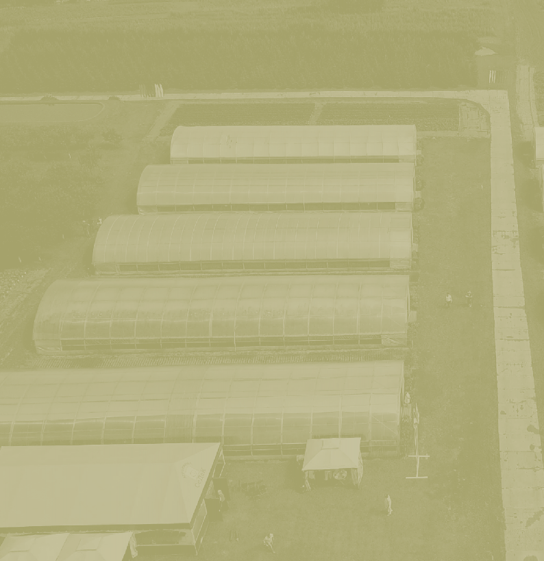


第一節 溫室總體規劃設計
一、溫室規劃設計的方法論
溫室規劃設計方法有多種模式，如常規流程設計法、系統化設計法及同步工程設計法。分別簡介如下：
（一） 常規流程設計法
溫室規劃設計常依農民種植經驗、現有土地面積及溫室工程業者的基本結構模式，以常規的流程設計進行。通常為溫室設計者以農民需求概念及成本考量下，進行基本型式選擇、成本概算、工期預估，經簽約後，進行細部設計、製造發包、組裝工程、現場安裝等流程工序。溫室一般設計模式主要依此般循序進行。
（二） 系統化設計法
歐美先進農業國家，發展出以定義設計目標下，設定符合目標需求規格，以系統分析所需的功能，模擬分析每項控制因子及其可能的替代方案，建立具體概念的溫室模型，進行設計與瓶頸評估，建立及測試原始模型。此決策支援系統，針對經營策略及操作選項，提供可靠且快速的評估。此系統化設計法於歐美先進國家已發展出以其溫室特色及模型的設計系統，但
因其是以溫帶的氣候特性與歐式的溫室模型下建立的技術累積，此並不宜直接套入熱帶亞熱帶的溫室設計，但其精神值得參考。
（三） 同步工程設計法
同步工程設計法， 強調所有設計程序，均在基本設計階段即進行總體規劃設計，此又名生命週期設計為汽車工業的常用設計法，即對其基本的功能需求，材料選擇、製程方法、組裝模式、運維管理、並考量到其對環境的影響，終其一生的生命週期設計，以完成總體規劃設計。可導入產品的品質機能價值分析，以價值工程評估的方法，評估產品從材料、製造到運用維護，及循環性經濟的整體價值評估。
故如能吸收溫室常規流程的經驗法則及先進國家的系統化設計法則，從溫室其存在的目的、設立的目標、應用的材料與方法、製造組裝所需的人力時間及能資源、運轉維護所需的人力物力與能資源等預期的成果，不管是經濟性、技術性、社會性及歷史性的貢獻，均是總體規劃分析不可缺的要件。採用同步工程設計方法進行總體規劃設計，將會同步考量作物生產作業系統、環境控制系統的整合運作。
二、溫室設計的發展歷程
溫室原為如溫帶或寒帶地區於寒冬中仍可持續提溫及保溫的一項建築設施，而於農業設施的應用發展上，則因應生物與環境的對抗則不斷有新的設計與開發。
在面對環境載重的抵抗上，不同地區因其氣候與環境的差異，將面對各種不同的自然載重。對不同的生物養殖或農作物栽植，也需要各種不同的保護措施。而隨著季節的遷移，農業設施也需與時俱進的改變因應。所以因地制宜、因物制宜、因時制宜，將是農業設施持續進步的動力。如荷蘭等歐洲溫帶先進農業科技國的開發設計，其農業設施的發展歷史悠久更不斷優化創新中，其很多溫室和生產設備技術都是為瞭解決自身發展過程中存在的問題
而發明的，但不一定適合熱帶及亞熱帶低區之溫室設計。
在全球的氣候變遷下， 各地區亦將面臨的新的環境載重，往往超出數十年甚至百年的新極限高點。熱帶亞熱帶溫室所面臨的環境載重也將更形險峻，颱風、地震、暴雨、驟冷、嚴寒、酷熱、洪水、乾旱，都會不可預期的發生。溫室設置動機乃基於具經濟性效益的作物生產穩定性、優質化與高價值性的需求而投入，但基於溫室設計，實乃為一多科技融入的複雜工程，有賴多學門科學的共同努力，而非單一學門能獨立完成。因此，除了學習研究先進國家的溫室設計技術，也需要針對所面臨存在的問題，因物制宜、因利制宜、因地制宜、因價制宜的進行溫室系統的彈
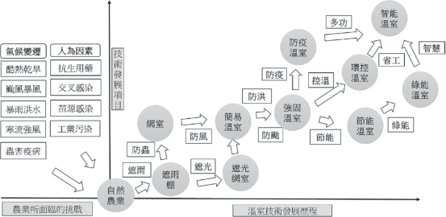
圖3.1 2015年台灣各類設施栽培面積比例。(行政院主計總處，2018)

性創新設計，以創造在多變環境下的新價值契機。
因應自然環境的變化，農業設施其技術發展歷程 (如圖3.1) 已從遮風、避雨、遮光、防寒的需求，從網室、簡易溫室、強固型的溫室，進而環控型的溫室、防颱型的溫室、防災型的溫室、防疫型的溫室，更進化到智慧型的溫室。現代化溫室為一相當多元的生物與工程科學綜合科技，包含生物科技、生產製程、環境控制、材料科技、機電控制、農業設施、建築科技、結構工程、建設工程等多項持續進步中的現代科技，而資通訊科技的大幅進步更造成農業也走入智慧化的應用領域。但農業設施溫室，還是要回歸食品安全、糧食穩定、經濟滿足的基本要項，所以基於作物品質、作業速度、運維成本的綜合考量，才是溫室設計的基本戰略準則。
（三一、）溫經室濟設性計考的量考量
溫室設置的經濟性的總體考量，在熱帶亞熱帶溫室，即要在設置成本、能資源成本、運維管理成本、壽命風險、生產價值上，發揮其高度的經濟性價值。故溫室設置需考量其經濟性的分析，其有以下幾種類型：
基於在地性作物的穩定性生產的新建溫室。
基於經濟性作物的價值性生產的新建溫室。
基於專業性作物的技術性生產的新建溫室。
基於多樣性作物的彈性化生產的新建溫室。
基於已有溫室與目標作物的調和性生產。而以上也許是單一項的經濟性的考
量，亦可多項同步的考量設計。
（二） 溫室規劃設計的技術考量
溫室構造設計需具備結構安全的農業設施建築，且需同時考量溫室生物生理需求性及生產作業方法實施的方便性、溫室環境控制的適當性與成本性，再綜合所在地的地理特性、作物的經濟性、溫室投資成本，進行整合性的整體規劃設計。其主要的考量設計包含以下三項：
溫室構造之載重分析及地理地形地貌環境的載重抵抗
載重分析
溫室構造須面對自身的靜自重載重外，尚須考量各種相關設施載重、吊掛作物生長載重、臨時作業如安裝維修載重。
環境載重
溫室還要考慮因地理環境地形地貌所形成的瞬間性環境載重，如風、雪、雨、冰雹、地震等直接載重，還有高溫、低溫或急劇溫差產生的變動載重。
不同的地理位置如經緯度，有很大的氣候差異，縱使同一區域也因地形地貌不同而有所差異，即使同一地點也因溫室不同的形式、高度、方位、方向、分布而有所不同的載重反應，年度之間各月有所差異，一天之中日夜也有所變化。
溫室構造對溫室內區域環境控制的影響
現代化的工業環境控制技術成熟，似
乎很容易達成溫室內的物理性環境控制，但深究其完整的科學原理，溫室內的區域環控要求有更多的物理性、化學性之影響性因素。
物理性參數
包含光線 (光量、光質、方向性、分布性、累積性)、溫度 (絕對性、差異性、穩定性、根區葉區分布性)、濕度 (相對濕度、飽差)、氣流 (流速、流向)、品質 (PM2.5) 等物理參數。
化學性參數
包含生長空氣 (CO2、O2)、有害氣體 (NH3、H2S)
（三） 溫室構造對生物微環境生理的反應
溫室構造影響了進入溫室的光、溫、
濕、流、氣，故同時影響了栽培生物本體生理反應，如根、莖、葉、花、果的生理生長影響，也影響到溫室內進行花粉蟲媒的蜜蜂生存，同時也影響到土壤介質中的微生物，但也同步可能促進有害病蟲害生長及致病微生物孳生。
（四） 溫室構造設計基本原則
地理性
溫室的分布、座向、方位、地形、地
貌都會影響到陽光的分布與風場的流動，除造成作物生長的限制，也會造成局部集中強風效應，導致溫室承受極大風壓。
地質及地基結構，將影響溫室基礎的強弱及基礎設計的根本。
水土保持與排水機制，將因土壤富含水分造成鬆動，溫室支撐柱受強風吹襲將致移位或基礎的沉降。
氣候性
常年的溫室外部溫度、濕度、風向、
風速、陽光，將直接影響溫室內部的環境控制模式及運維能資源成本。
颱風經過機率較高之區域，則需提升溫室之耐風等級。
暴雨之下之溫室排水槽設計須考量排

94
水量及結構強度，尤其多連棟的溫室排水設計，以避免溫室屋頂積水增加結構負擔。
結構性
基於作物的生長所需的陽光需求，溫
室設計須先進行被覆材料的選擇，而其被覆材料的承載屋面結構，將影響整體溫室結構系統的設計。
溫室的結構系統形式亦須考量風力載重的巨大影響因素。
溫室之結構材料的選擇與基礎之強度設計，需考慮變形、應力承受、抗彎強度等綜合考量。
對溫室結構的連接件角色扮演，要確實掌握與落實載重的傳遞設計。
耐蝕性
溫室材料表面處理為防蝕處理之重要
工作，化學性、物理性、電化學性腐蝕會造成結構材料腐蝕，使結構強度減弱，無法承受大型風壓或其他載重。
（五） 溫室構造的總體規劃設計
溫室構造的總體規劃設計，將如圖3.2提出的同步工程設計循環。以溫室作物為起點，進行此溫室的生命週期設計。其各階段設計如下：
作物生長需求分析
作物的選擇性分析 (包含經濟性、技術性、社會性)。
作物的經濟性分析 (包含市場性、獲益性、商業性)。
作物的技術性分析 (包含環境控制、運維管理)。
作物的社會性分析 (包含需求性、人力)。
溫室環境需求分析
所在地外在環境分析 (包含地理地形
地貌、常年氣候與環境變遷因素)。
溫室內物理性環境控制需求 ( 溫濕度、風速風向、陽光)。
溫室內化學性環境控制需求 (CO2、 H2S、NH3、PM2.5)。
溫室內生物性環境控制需求 (微生物控制、生物病害防治)。
溫室構造需求分析
地理地形地貌分析。
氣候型態與極端氣候變遷風險因素分析。
作物生長需求與環控需求分析。
溫室結構型式選擇分析。
溫室設計規範
日本溫室設計規範。
歐洲溫室設計規範。
美國溫室設計規範。
中國溫室設計規範。
台灣溫室標準設計圖說。
溫室安全構造手冊 (台灣農業設施協會)。
溫室載重分析
溫室結構靜載重。
溫室農業設施載重。
風力載重。
地震載重。
作物載重。
維修載重。
流體動力分析
外環境常年流場分析 (風速、風向、
流場、溫度場)。
內環境流場分析 ( 風速、風向、流場、溫度場)。
作物所在位置流場分析 (葉面、根區)。
被覆規劃設計
被覆材料選擇設計 (透光特性、結構
安全性、成本性、壽命性、風險性)。
被覆結構設計 ( 溫室形式、屋架型式、屋架結構)。
結構材料設計
材質 (材料化學組成、物理性能、機
械性能、化學性能)。
形式 (管材、型材、斷面係數、彎曲強度)。
形貌 (表面處理、鍍層、塗層、覆層)。
機能 (結構性、耐蝕性、風險性、壽命性)。
屋架結構設計
屋架型式 (圓形、山形、單斜)。
屋架結構 (平行桁架、屋面桁架、圓形桁架)。
主體結構設計
柱。
樑、桁架、框架。
斜撐、補強。
結構工程分析
結構形式選擇。
材料結構選擇。
載重分析。
結構工程分析。
補強設計 ( 結構強化、加強肋、斜撐、繫桿)。
基礎結構設計
地質鑽探。
水文分析。
地形地貌。
溫室載重分析。
柱底載重分析。
基礎材料設計。
基礎螺栓設計。
基礎形式選擇。
基礎設計。
基礎結構工程分析。
元件連接設計
連接方法設計。
連接元件設計。
連接點處理設計。
連接工程分析
連接點載重分析。
連接點工程分析。
運維管理設計
運轉管理設計 ( 作物生長、環境控
制、人力運作、商業管理)。
維護管理設計 (常年維護、氣候變遷緊急維護)。
生命週期設計
能資源設計 (節能控制、綠能應用)。
除役設計 (循環經濟型材料技術)。
溫室構造總體規劃設計產出
溫室作物種類及生長需求設計。
溫室環境控制需求設計。
溫室構造平面分布圖。
溫室構造基本設計圖 (包含屋面、主結構設計、基礎設計)。
溫室材料設計選用 (包含被覆材料、結構材料)。
溫室耐風等級分析。
溫室建造成本分析。
溫室工程進度分析。
溫室能資源需求分析。
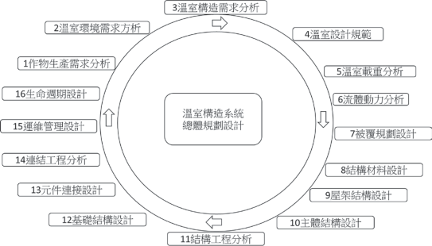
圖3.2 溫室總體規劃系統

第二節 溫室構造設計理論
溫室設計是一門需整合農業與工程的綜合科學，針對溫室相關應用的基礎工程科學理論整理，以協助科學化理解溫室設計的原理。
一、光學
光是農作物光合作用的主要驅動因子與能量來源，而溫室的主能量亦來自陽光，故瞭解光學基本原理相當重要。光學上基本的理論包含：
（一） 光的直射性
光於真空中為直線進行，光線由太陽射出，但進入大氣層後，將隨雲層影響而能量有所損失而被局部遮蔽。
地球隨季節變換相對太陽有著不同日光的入射角度，亦因所在地理位置及地形地貌，每日光線入射的角度與能量均不同。
方位，將可掌握溫室全年可能受光的能量變化。但隨天氣的變化，如雲層分布變化，實際受光值亦隨之變化。
同理，基於光的直射性，當預溫室的結構元件時，則形成的光的遮蔽，而阻擋了光的前進，故溫室結構元件的應用，降低了光的透光率，以簡易型的溫室為例，
光被結構支架的遮蔽率約10％左右。
（二） 光的反射性
光直線射向物體，由其表面就將產生光的反射，光的反射性原理為相對於垂直表面的法線，入射角等於反射角。針對反射率100％且完全平整的物體表面，且光能量並未被物體所吸收，則能量全反射才得以實現。
所以光通過被覆的透光膜時， 部分的光將被反射，也將降低光合作用的光源性。但也依上段光的直線性所言之結構支架的遮蔽時，如給予高反射性的塗層 (如白色漆)，此又會因光的反射性提高溫室內所需要的陽光。
（三） 光的折射性
溫室的主要被覆材料，有玻璃、軟質塑膠膜、硬質塑膠板等透光性材料，故其對光通過時的改變模式，將影響到溫室內諸多的物理、化學、生物作用的變化。
而現有的透光被覆材料，則利用其表面的紋理模式設計，形成一般性的直線性透光膜或散射性的透光膜，以散射性的透光膜為例，對有局部遮光的作物而言，提
供了光的均勻度，減少遮光的效應。
（四） 光的能量性
光帶來了能量也同時帶來了熱源，所以溫室內的溫度可透過光的直射性、反射性、折射性，調整光度也調節熱量。
而溫室內的結構件如柱、樑、鋼架、桁架、屋架則同時是的光的遮蔽件及反射件，其往往遮蔽光學的路徑10％左右，故施予高反射性塗層，除可提高反射性的光，並可降低對溫室結構支架內的熱累積，對溫室的室內溫度亦有相當的影響。
（五） 溫室光學特性
光的能量與累積、照度與均勻性、波長及控制。
光的直線性、反射、折射、漫射之應用及其影響性。
透光材料的材質、透光性、表面形貌的控制及其影響性。
透光材料上的物質累積對光的影響性及處理 (如灰層、髒污)。
透光材料內的物質生成對光的影響性及處理 (如綠苔、水滯)。
透光材料的劣化對光的影響性及處理。
構造元件的結構與表面形貌對光的遮蔽性、反射性及光熱的累積性影響分析。
二、熱流學
溫室處於大自然下，將直接面臨季節性的風動、高低氣壓鋒面、寒流、熱帶氣旋及颱風，季節性的雨及異常性的暴雨，所以溫室設計上對流體力學亦應有以下的相對認識。
（一） 熱的傳遞
熱的傳遞有三大主要模式：熱輻射、熱傳導、熱對流。故於溫室內的溫度場控制模擬與設計分析須充分考慮結構系統與空間流場的熱的傳遞模式。
（二） 熱的擴散
高溫往低溫擴散、高溫氣體往高處逸散、低溫氣體往低處對流、高壓往低壓擴散。故溫室的散熱或保溫都需善加應用熱的擴散模式與途徑。
（三） 熱流的能量轉換
熱能、壓力能、位能、動能的能量總和不滅。故對溫室內的能資源設計管理、節能設計等均須注意熱流的能量轉換控制模式。
（四）溫室外的流場
不同角度方位的風速與風壓對溫室結構的影響性。
颱風路徑與氣旋模式對溫室結構的破壞性。
季節性的常態風對溫室溫度的控制性。
（五） 溫室內的流場
溫室內的熱對流模式對溫室內溫度場的影響性。
溫室內的熱輻射模式對溫室內溫度場的影響性。
溫室內的熱傳導模式對溫室內溫度場的影響性。
溫室內所有溫度、濕度及空氣流動對生物的影響性。
三、材料學
溫室內的結構件如柱、樑、框架、桁架、屋架，被覆材料如玻璃、軟質塑膠膜、硬質塑膠板等透光性材料，甚至是基礎件之混凝土與鋼筋及級配的砂石土等，均屬材料科學的範圍。
材料的材質：化學組成、材料編號、材料定義。
材料的機能：物理性能、化學性能、機械性能。
材料的成形：鑄造成形 (重力、壓鑄)、塑性成形 (沖壓、折彎、輥彎、軋延)。
材料的加工製造：機械加工、沖孔、雷射切割。
材料的組合連接：機械連接 (螺絲螺帽、高張力螺栓、自攻螺絲、鉚接)、膠合、銲接。
材料的表面處理：腐蝕因子 (物理性腐蝕、化學性腐蝕、電化學腐蝕、生物性腐蝕)、腐蝕防治與防蝕處理 (陰極處理、犧牲陽極、鍍層、塗層、覆層處理)。
材料的破壞分析：材料的應力應變與溫度的影響分析、延性材料與脆性材料破壞模式、週期性載重與疲勞分析、熱與時間性的潛變、力的形式與破壞模式、破壞分析與處理。
四、結構學
溫室內的結構件、被覆材料、基礎件及其相互間的連結件，構成溫室的結構系統，故溫室構造設計最重要的工程科學為結構學。
以溫室結構進行環境載重的抵抗時，則往往要強化溫室的結構設計，故應以先掌握溫室所處環境可能面臨的環境載重攻擊分析，再進行最適當方位的結構形式，針對可預知型的攻擊模式，進行輔助的結構設計。
而針對結構系統的各個結構元件進行細部研究分析，可針對整體結構能量過與

不及時的可輕量化或補強優化設計。
樑的型式與應力應變模式及結構變形分析。
柱的型式與應力應變模式及結構變形分析。
桁架的型式與應力應變模式及組合結構變形分析。
鋼構的型式與應力應變模式及組合結構變形分析。
屋架的型式與應力應變模式及組合結構變形分析。
基礎的型式與拉拔及沉降抵抗分析。
連接件的型式與載重傳遞分析。
溫室結構總體設計分析。
五、溫室電腦輔助工程分析
隨著溫室設計的大型化及複雜化，應用電腦輔助工程分析技術，可進行溫室設計的電腦工程模擬分析，以利決策判斷，選擇最適方案。
（一）光學分析
光學分析，可於溫室設計之初，依所在地點及周邊的建物及遮蔽物，進行光路模擬分析，可預估光合作用的整體光能量分布。
溫室所在地的光能量分布分析
進行溫室所在地的地理位置全年太陽
光的日照路徑與能量分析、結合溫室自身及周邊建物的光路分析，以計算可行光合
作用的光能量分析。
溫室結構對光的影響性分析
溫室結構材料對光的遮蔽性將影響溫
室內植物的總受光量、光均勻度及其結構材料受光輻射吸收的熱量。
溫室高度對光的影響性分析
溫室高度對溫室內栽培物的分布形
式、植株高度、葉片形式所形成的陰影或散光型被覆材料將有不統的影響度。
溫室分布對光的影響性分析
溫室的南北向或東西向分布、獨立
棟、雙連棟、多連棟對光的分布性，其包含總光量及均勻度分析。
（二）流體動力分析
因應溫室所在的地形、地貌、地理環境，溫室的分布及具體尺寸形貌，透過流體動力分析，可模擬出溫室內外的流場及溫度場，以利調適設計。
溫室結構風力破壞性流場分析
可參考氣象局之歷年颱風路徑及常年
最大風速，以流體動力分析軟體，進行溫室所在之地理地形地貌之流體動力分析。
溫室外部風場熱流分析：
可參考常年所在地流場的風速風向及
溫濕度，進行外部流場動力分析，進而可設置流場的流動控制以利協助溫室內部流場風場溫度場環境控制。
溫室內部風場熱流分析
可依據作物葉面或根部所需溫度場及
風場，進行內部流場動力分析，以調控環控設施及未來溫室設計。
（三）材料工程分析
因應材料科學的進步及現有材料的選擇比較分析，經過工程材料分析法，可得材料的性能強度及預期的可靠度分析。
各型結構材料力學性能試驗
針對選用材料進行實際材料的適當工
程分析實驗，取得材料實際的性能參數，以利進行後續的結構工程分析。
各型結構材料化學性能試驗
針對個別元件及元件組合，進行化學
性能與電化學性能的腐蝕試驗，以分析個別抗蝕性能及開發新的防蝕組合模式。
新型材料的形狀開發及組合試驗
針對新型結構材料與元件，進行材料
結構力學與化學電化學性能試驗，以開發新型優化結構材料。
（四）結構工程分析
材料選擇
根據選定的溫室型式，溫室主體結構
可由結構分析軟體進行主結構工程分析，以利溫室型式及材料選擇設計。材料元件連結細部結構可由有限元素工程分析進行優化設計。選擇各種材料的種類、尺寸、性能強度。
載重分析
進行溫室結構與設施靜載重計算，加
上風力載重中之流體動力載重參數及其他載重。
設計規範選定 (國家標準、產業規範、業主選定)
結構工程分析
分析各種載重下之結構材料應力應變。
各種型式與應力應變模式及組合結構變形分析。
主結構件修正或補強設計
斜撐及補強件結構工程分析
連接件工程分析
圖3.3 溫室總體規劃系統


第三節 溫室構造系統設計
一、溫室構造系統的設計邏輯
基於溫室生物生產作業、溫室環境控制、溫室結構載重抵抗等三大議題彼此關聯，故溫室作物生產系統、溫室環控系統、溫室構造系統，是現代化溫室科學化設計所需建立三大系統 (如圖3.3)，可依序進行規劃設計，但更需依同步工程法則進行循環分析設計，而非各自分工獨立設計。溫室構造系統的設計邏輯需同步考量以綜合設計出符合經濟性、成本性與價值性的可永續營運的溫室。
（一） 作物生產系統
溫室作物生產系統為溫室設置的最重
要初步設計，作物的種類、作物生長的關鍵因素與控制程序，定義所需的陽光、空氣、水、營養成分及適當的介質，衍生所需建立的作物載具、生產物質及資源供應系統，也定義應有的環境要素與構造基本條件，以利後續溫室環境控制系統與溫室構造系統的設計。
（二） 環境控制系統
基於溫室生產工程的程序設計， 以進行溫室環控設施系統設計，在溫帶或寒帶以加熱保溫為溫室主要於寒冬的控制工程，但於熱帶亞熱帶則陽光控制、溫度控制、濕度控制、空氣控制、疾病控制等都
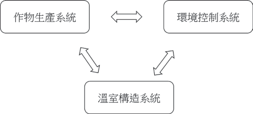
是所需的因地制宜防禦工程設計。也基於事先的環控設施系統規劃設計，將有利於溫室構造設計及總體規劃設計。
（三） 溫室構造系統
溫室結構系統包含了鋼架 (樑、柱)、屋架、基礎等主結構件，另包含被覆、桁架、斜撐、繫桿、連結件等次構件。而力的傳遞，則由被覆材料傳遞到屋架、然後經過鋼架、桁架、樑、柱、基礎，傳遞到地面，而期間所有力傳遞過程的元件均須承受相對的應力應變，故每一構件的正確扮演載重的共同抵抗及回復，才能保持其長期的穩定。
二、溫室構造系統簡介
溫室構造系統 (如圖3.4)，其主要子系統如下：
（一） 結構系統
被覆屋面
被覆屋面是溫室結構的第一項設計選
擇，主要被覆材料包含玻璃、硬質塑膠、軟質塑膠膜。
主要由作物所需的透光模式而決定，但面對的環境載重及成本考量，也是重要的影響因子。被覆結構影響溫室整體結構極大，往往是壽命最短且強度最弱的結構，故其除為作物生產系統的關鍵材料，
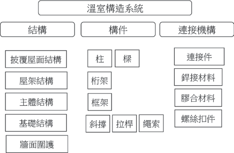
圖3.4 溫室總體規劃系統

其亦攸關溫室構造系統的安全。
屋架結構
柱
柱的型式可以方管、圓管、H型鋼、C
屋架結構系統基於被覆屋面的所傳遞的載重承接，需設計安全性的屋架結構系統，並能延長被覆材料的壽命。
主體結構
以樑、柱、桁架、框架組成主體結
構，支承於基礎之上。
基礎結構
以獨立或連續基礎支持溫室主體結構
及各項載重。
牆面圍護
以牆、網、膜，形成結構或流場的
控制。
型組合型鋼等形式設計，柱將承載來自屋架、樑及外部等垂向載重及橫向載重 (如風載重)。
柱承受垂向載重除考量材料的抗拉強度與降伏強度，並須考量挫曲彎曲的抵抗，並同時考量與連接基礎的抗壓性、抗拉性及抗扭轉性。因柱所在位置如於溫室周圍受外部強載重處，則須強化柱的橫向載重抵抗，如非對稱性型材可以加強性方向設置，但須注意抗扭轉性。如為對稱性型材如圓管或方管，則需補強其高載重方向結構，如斜撐或拉桿。
（二） 構件元件
桁架
平面結構桁架 (truss)
，主要以上下平
1. 樑
樑的型式可以方管、圓管、H型鋼、C
行的上弦樑與下弦樑，及中間斜向的腹桿組成，平行桁架的基本連接模式為各元件
型鋼、C型組合型鋼等形式設計，大跨距時亦可以桁架設計。
樑承載橫向載重， 將載重傳遞至柱及周邊元件。樑的載重能力，以材料的抗拉強度、降伏強度、延伸率等基本材料參數，材料的形狀更直接影響斷面係數， 如樑為非對稱型材如I型鋼、H型鋼、C型鋼，需注意其與受載重方向性關係有加強性方向及減弱性方向。
以鉸接連結，力的傳遞以軸向載重傳遞將載重可通過腹桿件以軸向載重傳遞。
框架
框架 (frame) 為強固型連結的立體結
構，其形成主結構的強固型核心，當結構受大型載重時，其可以框架結構承接抵抗。框架可以大型的H型鋼組成立體結構，但因其為大型建築用鋼，往往過重，且形成重心過高。框架亦可以雙桁架形成輕量化且高強度的框架結構。
補強結構
補強結構包含斜撐 ( 可於主結構補
強)、拉桿 (可於柱間或屋架抗拉補強)、 繩索 (被覆材料抗拔補強)。溫室結構為裝配式建築結構，如為提高抗環境載重抵抗，最經濟且有效的方法是結構補強。
（三） 連結機構
各子結構系統與結構元件組合方法，均需連接機構組合，除進行形狀的組合，並將形成載重的傳遞關鍵元件。連結機構的主要方法包含機械結合 (如機械嵌合、連接件組合、螺栓接合、自攻螺絲組合)、銲接結合、膠合。
三、溫室構造設計流程
被覆材料的選擇與屋架形式設計
以生物生長及光線需求分析進行決
策分析。
溫室結構基本設計
溫室型式選擇、基本尺寸、連棟與排
列的平面分布、結構材料選擇及設計、基礎模式的選擇設計。
溫室載重分析
靜載重。
設備載重 (環控、灌溉、農業設施)。
作物載重 (吊掛設施、作物成長)。
環境載重 (風、雨、雪、地震)。
變動載重 (安裝、維護、溫度變化)。
颱風載重分析
風力係數查表法 (依各地規定的風力
設定等級)。
流體動力分析法 (CFD)。
局部風壓強化設計。
溫室結構設計
溫室主結構設計。
溫室結構工程分析。
溫室基礎設計分析
基礎載重分析。
基礎地層探測分析。
基礎設計。
基礎拉拔測試分析。
溫室連接件設計分析
連接方法及元件設計。
連接工程分析。
溫室結構優化設計
溫室結構優化設計 (輕量化與結構強
化)。
溫室結構強化設計 (內外部斜撐與拉桿補強)。
溫室破風強化設計 (外部破風結構設計分析)。

四、溫室結構設計與工程分析
（一） 溫室結構設計 （二）溫室結構工程分析流程
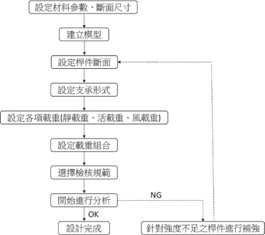
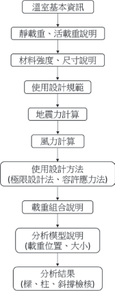
圖3.5 溫室結構設計流程
圖3.6 溫室結構工程分析流程
（三）日本溫室結構工程分析設計
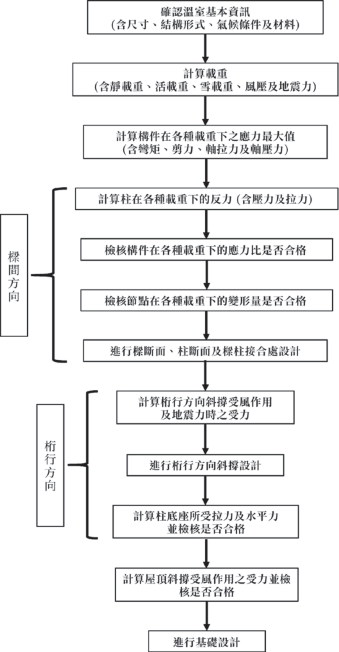
圖3.7 日本溫室結構設計與工程分析
五（一、）溫以室溫的室基構本造結構構造分類
結構型溫室 (結構型鋼骨溫室)
以鋼構之樑、柱，及鋼鋁之型管材等
構件屋面作為骨架，橫樑及側樑以型材結構加強，屋面可為山型、圓形或單斜背等幾何形狀，具有固定基礎的設施。
簡易型溫室 (簡易式塑膠布溫室)
利用錏管加工成組合型骨架，支柱下端直接插入地面下，可不具固定基礎的設施。
（二） 以溫室棟數分布分類
單棟
單一屋面構成的設施。
連棟
二個以上連續屋面構成的設施。
多棟
單棟獨立分布、多棟以二連棟、三連棟或多連棟分布。
（三） 以溫室溫面被覆材料分類
玻璃溫室。
硬質塑膠板溫室。
軟質塑膠薄膜溫室。
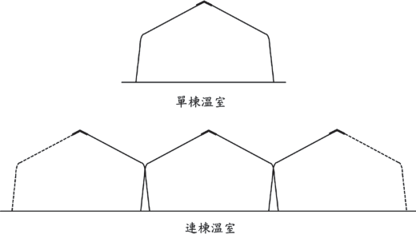
(山型屋頂)
六（一、）溫結室構構型造溫元室 件
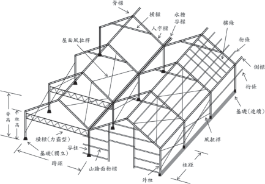
圖3.9 結構型溫室 (山型屋頂) 各部構件名稱
（二） 結構型溫室 (圓屋頂)
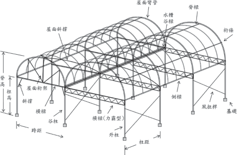
圖3.10 結構型溫室 (圓屋頂) 各部構件名稱
（三） 簡易型溫室
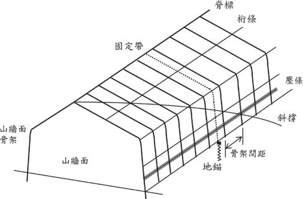
圖3.11 簡易型溫室各部構件名稱
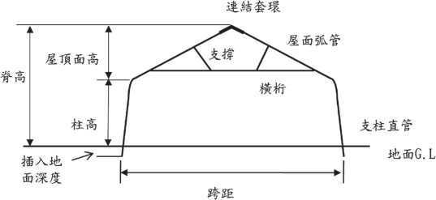
七、溫室載重分析
溫室設計載重為各國溫室設計規範的基本要項，其載重的主要組合 (如圖3.13 )包含：
（一） 永久載重 (靜載重)
主要為溫室之主結構 (被覆與結構) 及結構上連接的固定設備重量。
（二） 可變載重 (活載重)
包含風、雪、地震、溫度等環境載重，作物、維修、運搬等作業載重。
（三） 載重組合
依規範別、時間性、區域性、應用性而有不同的載重組合。
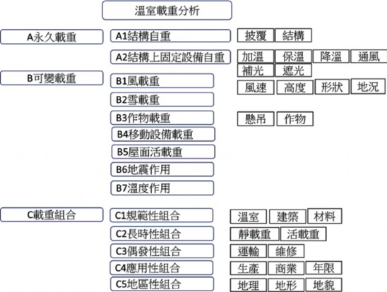
圖3.13 溫室載重分析

八、被覆規劃設計
溫室依據其農業施作需求，可選擇不同的被覆材料，包含陽光、空氣、風、水的通過，或蟲害、污染、冷風、烈日的遮蔽，但因其具相當大面積的溫室屋頂與牆面遮蔽材料，將直接承受風、雨、雪的衝擊並將載重直接傳遞至溫室結構上，溫室被覆材料是攸關作物生產品質與產量，又同時牽涉溫室結構安全的關鍵部材。
而溫室的設計分析往往假設被覆材料仍於完整且形成封閉區間的受載重狀況，一旦於其生命週期中的局部破損，恐導致整體載重的劇烈改變，而使溫室結構遭受更大的衝擊。溫室被覆材料除考慮其於全新狀況下的性能表現，對其隨時間的推移所形成的材料性能劣化也是一大監控要素。
（一） 被覆材料之分類
玻璃 (CNS R2013)。
軟性薄膜 (CNS K3007/JIS K6732， K6783)。
硬質塑膠 (CNS 3034/JIS A5701)。
（二） 被覆材料之特性
物理性能
尺寸、比重、硬度、耐久性。
光學性能
透過性、波長別透過性、透明性、全
光線通過率％、遮光性、散光性、光質。
熱學性能
保溫性、斷熱性、通氣性、耐候性、
耐熱性、耐寒性、熱傳導 (W/Mk)、熱膨脹係數 (/℃)、比熱 (J/kg.K)、熱收縮率 (80℃, 30分鐘)。
流體性能
滴流性、 防霧性、透濕性。
機械性能
引張破裂強度 (Mpa)、壓縮強 (Mpa)、
伸長率 (％)、彎曲強度 (kg/cm2)、低溫衝擊強度 (J)、落球實驗 (kgm)、展開性、開閉性、伸縮性。
化學性能
耐藥品性、抑藻性、自然可分解性、可燃燒性。
（三） 主要被覆材料之性能控制參數
玻璃 (SiO2)
基本參數 (種類、材料成分、形狀尺
寸精度、抗張強度、耐風壓力、透光度)。
光學特性 (自然光全光線透光率、散亂光性、紫外線透過性、紫外線調整性、遮光性、光質)。
機械性能 (抗張強度、引裂強度、耐風壓力、延伸率、低溫衝擊強度)。
物理性能 (密度、厚度、寬幅、重量)。
熱學性能 ( 保溫性、耐熱性、耐寒性、熱收縮率)。
機能性 (滴流性、防霧性、耐藥性、抑藻性)。
耐久性 (耐候性、耐久壽命、機械性能衰退性、光學衰退性)。
環保回收性 (自然可分解性、可燃燒性)。
主要規格項目
柔性薄膜

主要種類及材料
薄膜種類、材料成分、形狀尺寸、抗張強度、耐風壓力、透光度。
農業用聚氯乙烯塑膠布 (PVC)。
農業用聚乙烯塑膠布 (PE)。
農業用乙烯-醋酸乙烯共聚合塑膠布
(EVA)。
農業用聚酯塑膠布 (PET)。
農業用聚烯烴膜 (PO)。
重要參數
農業用四氟乙烯塑膠布 (ETFE)。
光學特性：自然光全光線透光率、散亂光性、紫外線透過性、紫外線調整性遮光性、光質。
機械性能：抗張強度、延伸率、引裂強度、低溫衝擊強度。
物理性能：密度、厚度、寬幅、重量。
熱學性能：保溫性、耐熱性、耐寒性、熱收縮率。
機能性：滴流性、防霧性、耐藥性、抑藻性。
耐久性：耐候性、耐久壽命、性能衰退性 (機械性能、光學特性)。
環保回收性：自然可分解性、可燃燒性。
主要種類及材料
硬質塑膠
農業用玻璃纖維板 (FRP)。
農業用玻璃纖維壓克力板 (FRA)。
農業用聚丙烯壓克力板 (MMA)。

主要形狀
農業用聚探酯板 (PC)。
重要參數
平板、波浪、複層板。
光學特性：自然光全光線透光率、散亂光性、紫外線透過性、紫外線調整性、光透過性、分光透過性、光質。
機械性能：抗張強度、延伸率、引裂強度、衝擊強度、落球試驗、彎曲強度。
物理性能：密度、厚度、寬幅、重量。
熱學性能：熱傳導率、保溫性、耐熱性、耐寒性、熱收縮率、燃燒性。
機能性：滴流性、防霧性、耐藥性、抑藻性。

耐久性：耐候性、耐久壽命、性能衰退性 (機械性能、光學特性)。
環保回收性：自然可分解。
九、結構材料設計
溫室結構材料中的金屬材料具有高度的工業化、高剛性、高強度且具環保型的回收性，其占溫室材料總重90％以上，是現代溫室最主要的結構材料。
結構所使用的金屬材料包括結構用基本金屬材料 (如鋼材、鋁材)、型管材 (型材、管材) 及接合物 (如螺絲、 鉚釘、螺栓、螺帽、墊片與銲接材料等)。材料應符合國際材料標準，接合物亦須符合規定。結構用金屬材 (如板、片、棒、線、連接材) 所使用之材料，其化學成分、機械性質均須符合國際標準之上的規定。品質之認定方法，通常先依原生產工廠所出具之品質證明書。但對各項材料如有安全考量或有爭議之虞，應共同取樣，經合格之第三方公證單位檢測。
於農業溫室往往溫室業者與農民間，對材料專有名詞總被簡化成簡易的說法，但實際的管材材質、管徑、厚度、精度將直接影響到管的機械性能，而鍍膜的材料組合、鍍層厚度、鍍膜方法，均將影響到鍍膜結合強度、鍍層耐腐蝕能力、管材壽命等。
故溫室的結構材料需確實掌握所設計構件之材料的質 (材質與性質)、形 (尺寸與形狀精度)、貌 (表面處理)、能 (物理性能、機械性能、化學性能) 等重要設計參數與標準規格。此將分三大部分說明，分別為基本金屬、型材、管材，將各別討論其對應的質、形、貌、能等設計參數。
（一） 常見的金屬基本結構材料
主要有鋼材、鋁材。
鋼材
溫室常用鋼材有三大類，分別為碳
鋼、不銹鋼、鑄鐵。
針對常用的鋼材，其對應之國際標準材料編號、材料組成元素、材料形狀尺寸精度、材料表面處理、材料性能需有明確的說明。
材質
完整的材質說明應包含下列項目：
基材名稱
功能性名稱＋材料名稱，如構造用熱軋鋼。
基材編號
材料標準＋材料編號，如SUS 304。
基材化學成分組成
化學元素＋％，如Ni 8％。
完整的化學成分組成將以成分組成表格顯示。
基材來源
鋼胚的來源則有高爐廠與電爐廠，其材料的組成模式有所不同。 故基材來源應由供應商提供原產鋼廠的出廠證明，代表明確的材料來源。
基本金屬材質標示法
標準化的鋼廠出廠的出廠證明，須至少明確標示鋼廠名稱、化學成分、機械性能及依據的國際標準。
形狀
基本金屬材料形狀主要分為板材與棒線材，其說明如下：
鋼廠的基本鋼材分別由不同的中間成形廠完成，如鋼板廠、熱軋廠、 冷軋廠、棒線廠等， 有其不同的生產模式及品質狀況。
形狀別與尺寸包含了中厚板材 (t≧ 15mm) 、熱軋帶材 (20mm ≧ t ≧
1 . 6 m m ) 、 冷 軋 帶 材 ( 0 . 4 ≦ t
≦ 4.5mm) 、線材 (d ≦ 5.5mm) 、棒材 (d>5.5mm)。
板材通常其生產有冠高 (crown) 中間會偏厚，分條處理後兩側可能不同厚，其尺寸標示需含長度、寬度、厚度與精度。板材因受冠高因素難以理論計算，故以整捲重及總長度量測計算等寬之單位長度重量。
棒線材之外徑尺寸、精度與真圓度。棒線材直徑因受真圓度之影響，不易快速量測，故單位長度重量，方便於量測與快速檢驗。
表面形貌
基本金屬軋延材的表面特徵有黑皮表面 (熱軋材料表面，表面具原熱軋冷卻後銹皮)、精整表面 (熱軋精整表面，表面平整且具均勻的降伏應力)、冷軋表面 (經酸鹼洗及冷軋延後之精密表面)。
基本金屬鍍面材的定義須包含其鍍膜材質 (鍍鋅、鍍鋁5％鋅、鍍 55 ％鋅、鍍鎂鋁鋅)、鍍膜方法 (預鍍、後熱浸鍍、電鍍)、鍍膜厚度等。
基本金屬預塗烤漆材的表面結構包含塗膜層數 (底漆、中漆、面漆)、塗膜方法 (連續塗漆、粉體烤漆、手工塗漆)、塗層材質、塗膜厚度。
基本金屬複合材基於特殊功能需求可結合高分子材料複合成新式複合材料，使其具有新式機能。其主要結構包含混合材料複合 ( 如瀝青)、纖維材料複合 ( 如玻璃纖維)、層狀材料複合 (如橡膠或塑膠)。

材料性能
材料主要性能為機械性能、化學性能、加工性能。
機械性能包含降伏強度 (YS)、抗拉強度 (TS)、抗拉降伏比 (％)、延伸率 (％)。
化學性能包含耐蝕性能 (鹽霧試驗)、耐酸性能、耐鹼性能與耐有機物質特性。
加工性能包含一般料 (CQ)、拉伸料 (DQ)、深衝料 (DDQ) 等加工成形特性。
基本鋼材材質由其基本化學元素組成，其性能則由合金的添加、熱機處理的施作、塑性加工變形以強度提升，但相關機械性能、化學性能及加工性能均因此而有所變異，而性能往往無法全面性提升，需注意真正的應用設計需求。
鋁材
鋁材不若鋼材的高強度，但鋁材因其
輕量化與可彈性設計的擠型材，常應用於玻璃溫室、硬質塑膠溫室、ETFE溫室等。鋁合金因其合金組成有多種系列、成分組成及並因應結構強度提升及表面特性有多種對應之熱處理，需因應環境載重需求下之陽極處理及塗膜處理。這些均會影響其應有的強度及衍生的安全性及可靠度。
鋁材的主分類
鋁材依其合金成分組成，分成A1000系列、A2000系列、A3000系列、A4000系列、A5000系列、A6000系列、 A7000系列等，各自有其材料特色及性能。常見之5000系列：鋁鎂合金，可解決加工硬化，強度較高。6000系列：鋁鎂矽合金，易於加工，可沉積硬化，得到較高強度接近一般鋼鐵。
溫室結構鋁材的規格表示
包含材質明確的材料編號 ( 如常用 A5052、A6061、A6063)、熱處理
( 正確的熱處理，如常用的T5 熱處理、T6熱處理)、陽極處理 (適當的陽極處理製程與膜厚)、塗覆處理 (適當的表面塗層、封孔處理、耐蝕覆層處理)。
（二） 常見溫室結構材料形式
型材
溫室結構中，型材可創造形狀強度，
並適當的組合設計後可形成具有高組合強度的結構系統，但基於溫室結構安全，任何型材的強度及壽命，仍需從其材質、形狀、表貌、機能等四項進行綜合考量設計。型材的基本材質將決定其基礎強度，且型材具有其方向性的差異，故選擇高強度材質為基材，同時考量載重的方向性，
可得輕量化且高強度的組合型材。
但結構材料中的斷面，需注意選擇不易扭轉的二軸對稱面，在受扭力模式下需特別注意，如樑柱中，受力的方向性，力的模式如軸力、拉力、壓力、扭力、剪力都需注意其載重抵抗的穩定性。在較薄的型材使用下，斷面模式、旋轉半徑、材料強度，均需考量其挫曲的風險性。型材組合件，則需考量其結露水或雨水的滯留，污染物的堆積，焊道的後處理，避免衍生化學腐蝕與電化學腐蝕，降低壽命與結構安全。
以下針對型材的各方面性能需求定義如下：
型材之材質說明應包含材料種類、材料編號、化學成分組成、基材性能。
型材形狀包含H型鋼、L型鋼、I型鋼、C型鋼、扁鋼、異型鋼、組合型鋼等。成形方法包含了熱軋型鋼、冷彎型鋼、銲接型鋼、組合型鋼。
表面形貌包含了鍍膜處理 (鍍鋅、鍍鋁鋅、鍍鎂鋁鋅、預連續鍍、批次式後熱浸鍍)、塗層 (連續塗漆、粉體烤漆、手工塗漆)、覆層 (混和、纖維、層狀)。
材料性能包含了機械性能 ( 降伏強度、抗拉強度、延伸率、斷面係數、抗彎強度) 與化學性能 (耐蝕性能、
耐酸性能、耐鹼性能)。
型材構材之主要製作方法滾軋、輾壓、折彎。冷軋殘留應力與材料本體之變異性，會造成構材製造時之差異，如垂直向的彎曲 (bow)、水平向的彎曲 (camber or sweep)、扭轉 (twist)、外張與內縮 (flare) 等問題。斷面肢材間轉角處之內彎半徑一般取鋼材厚度的2倍，高強度鋼材則需較大之內彎半徑，依鋼材強度而有所改變，一般為鋼材厚度的2～5倍，依設計者之要求定之。
型材開孔：型材腹板開孔須以構材腹板中心線爲準，孔洞邊距、孔洞大小、孔洞間距均有其安全考量之最小距離。孔洞位置、數目與排列模式，將影響構件之強度分布。如開孔造成安全疑慮， 應予修補開孔護板，其設計須依設計規範。
管材
溫室結構中，圓管材提供均勻方向的
受力構件，在簡易溫室中被大量的使用，矩形管材則有其受力的方向性，可提供適當的設計。但管材的基本材質仍將決定其基礎強度，材質的定義包含材料種類、材料編號及其化學成分組成。
管材成形方法有熱軋成形無縫鋼管
(高壓流體用管、機械用管)、冷彎成形銲接

有縫鋼管 (結構鋼管、中低壓流體用管、農業結構用管)，其常見尺寸依其類別有不同的公稱尺寸定義，須分別查明之。常規結構用管，抗張強度應達400MPa以上，但較小管徑管材的成形，常為成形方便而選用較低強度材料，此將大量降低管材結構強度，應注意其結構安全性。先進國家之管材的材質強度持續提升中，從400MPa提升至490MPa、590MPa、690MPa更達780MPa以上。
此外管材的形狀因子也在提升中，除圓形管材、矩形管材、也有多邊形管材及橢圓形管材出現，此新型管材除在邊角處形成塑性加工強度，在適當的載重方向應用上，也提升其斷面強度。
在常見的溫室管材表面處理有預鍍鋅法及後熱鍍鋅法。如其以標準化的前處理及熱浸鍍過程處理，可得較厚的鍍鋅層以利環境腐蝕抵抗，但常常因不良的前處理往往造成脫鋅的新危機，而一般後熱浸鍍槽有其長度限制，故較長管材有其限制。用預鍍鋅法成形管材，因其標準化的鍍鋅製程，可得性能穩定的鍍層及較長管材，但需注意鋅層厚度的選擇設計，而預鍍型管材，因其鍍槽的模式，持續有開發出多元合金的鍍膜，如鍍鋅、鍍鋁 (5％) 鋅、鍍鋁 (55％) 鋅、鍍鎂鋁鋅，可提升抗蝕性能。但因有其焊道處的變數，故焊道的應
力消除及焊道的耐蝕處理會是後續加工成形及耐蝕壽命的關鍵因素。
管材施以塗層將可提高其耐蝕壽命，塗層參數包含塗膜層數 (底漆、中漆、面漆)、塗層材質、塗層厚度、塗膜方法 (連續塗漆、粉體烤漆、手工塗漆)。
管材的性能包含機械性能 ( 降伏強度、抗拉強度、延伸率、斷面係數、抗彎強度、挫曲強度)、化學性能 (耐蝕性能、耐酸性能、耐鹼性能)。
材料與型管材的彎曲加工， 於常溫下進行處理。高強度材、加工硬化材，或熱處理構材的彎曲加工其變形抵抗會增加。材料或型管材可彎曲半徑的大小，隨材料的強度或厚度增加而改變。當彎曲角度大時，或通過彎曲容易改變橫截面形狀時，使用夾具或其他適當措施以防止有害的形狀變化。彎曲加工使用之模具，須平滑，不可有傷痕及凹凸不平。構材彎曲加工時，為避免構材內外表面產生龜裂、粗糙表面、傷痕、皺紋及凹凸不平等缺陷，須使用適當之彎曲半徑與彎曲模具。型材彎曲需注意對稱性，且長邊、短邊與加強肋的變形抵抗不同。圓管雖外表為對稱性材料，但如為銲接圓管，銲道處為其奇異處，進行彎曲成形時需考慮變形點。彎曲加工時發生變形須用適當的機械方法矯正。
（三） 溫室結構材料的表面形貌及防蝕處理
結構材料的表面工程目標為創造材料
的防蝕機制以維持溫室結構的安全。
溫室結構設計中對各構造材料的性能強度設定乃依照於常溫下的材料標準測試法所測得的均質材料數值。但實際應用下，構造材料並不會一直如均質材料性能設定般的表現，其會隨時間累積及環境的載重，出現物理性的性能衰退如疲勞、潛變、脆化、磨耗、侵蝕，或化學性的腐蝕、電化學腐蝕、微生物腐蝕等。而這些腐蝕因子將會造成溫室構造的安全降低的重大威脅。而主要的腐蝕因子包含了：
物理性腐蝕：如氣蝕、風蝕、水蝕、固體侵蝕。
化學性腐蝕：如酸、鹼、鹽、有機物。
電化學腐蝕：如異種金屬腐蝕、應力腐蝕、濃差電池腐蝕。
微生物腐蝕：如微生物結節腐蝕。
掌握溫室所面臨的外在環境及內在環境載重，分析其可能的腐蝕因子，是防蝕工程設計的第一要務。然後依照腐蝕因子的可能性，進行防蝕工程設計，並進行相對的表面處理加工法，以保護、維護及提升溫室構造的使用壽命，是溫室構造安全的一大重要工作。
溫室構造材料之防蝕處理包含以下四大項目：
基材處理
防蝕工程基材前處理為乾、淨的裸露
基材原表面，並製造適當的表面紋理。以機械方法或化學方法，對基材表面除污、脫脂、脫銹，並產生適當粗度。回復金屬的基材表面，並創造適當的表面機理，以利後續的鍍塗覆處理。表面粗糙度平均值一般應在25～75µm之間，或依據塗層及鍍層特性而規定之粗糙度。表面粗糙度，對於塗膜的防銹功能影響很大，適當的粗糙度，可以增加油漆之附著性。因此須視油漆特性及漆膜厚度選用合適的表面粗糙度。
鍍層處理
鍍層處理乃以金屬鍍層 (如鍍鋅、鍍
鋁鋅、鍍鎂鋁鋅)、金屬粉末堆積、富鋅底漆冷鍍鋅等方法，進行陽極犧牲或陰極防蝕的電化學的防蝕方法。鍍層處理加工其主要方法有熱浸鍍鋅法、鍍鋅電鍍法、鍍鋅噴覆法、鍍鋅塗裝法等四種。
熱浸鍍鋅法
熱浸鍍鋅法可分為純鋅鍍層、鋅鐵合金鍍層、鋅鋁合金鍍層、鋅鋁鎂合金鍍層，一般溫室工程以純度鋅為主，工藝設備較簡單，但長度因槽體大小受限。工業上鋅鋁鎂合金有很好的耐蝕能力，但須連續生產的預鍍處理。

鍍鋅電鍍法
以電化學法電鍍，層薄耐蝕性較差，適合室內家電設備。
鍍鋅噴覆法
以高溫熔射噴覆，適合局部修復的熱加工法。
鍍鋅塗裝法
以高濃度的鋅粉漆進行塗裝，又名冷鍍鋅，對修補方便也有一定成效。
塗層處理
以化學轉化塗層鈍化 (如磷酸鹽、草
酸鹽、鉻酸鹽、硫酸鹽) 或以密封塗裝 (如底漆、中漆、面漆的多道次塗層) 進行物理性的絕緣防蝕方法。前項鍍鋅處理已具備防銹功能，再進行表面塗裝有美觀因素、鍍層保護耐久性提升及其特殊因素的要求。鋼構鍍鋅防銹層後進行表面塗裝於鋼板 (捲) ，除具有鋅的保護功能外，另有覆蓋隔絕保護防銹蝕的功能，一般塗裝採用有機塗料。其抑制作用因塗料的種類、膜厚及施工條件而不相同。表面塗裝分為底漆、面漆、背面漆等分段執行，塗裝時須注意基材處理狀況，當時環境狀況，及前項塗層固化狀況，以利後續施行。塗裝後固化處理為耐蝕品質的關鍵。
覆層處理
建立強化的保護防銹皮膜 (如樹酯、 PVC、PVF、PVDF……) 提升防蝕耐久
性。覆層的處理加工目標為嚴苛環境強化耐蝕處理，如土壤中的鋼管的覆層處理，或表面破壞後的修補處理，如運搬或施工中的刮痕、焊後焊道的處理。
十、基礎結構設計
溫室整體結構於各種載重下，最終需經過基礎的整合設計以進行載重的傳遞於地面，並也承受拉拔的載重。
溫室基礎受力模式則包含Fx、Fy、 Fz、Mxy、Myz、Mzx等六個方向的作用力與力矩。而透過柱與柱底板、基礎螺絲與基礎形成力的傳遞與平衡。
基礎結構設計區分為強固型溫室基礎與簡易型溫室基礎。分別說明如下：
（一） 強固型溫室基礎
基礎分類：
強固型基礎分為獨立基礎、連續性條
狀基礎。
連續性條狀基礎已如地樑的設計，相對結構安全穩固。
獨立基礎施工較方便成本較低，主要區分為預製型基礎及現場澆鑄型基礎。基礎的作用在於基礎底板上的載重物質及基礎側邊的摩擦力的組合。但須考量其力的傳遞與拉拔抵抗。
基礎設計前需作地質的探勘，以得知
其地質的垂直分布與相關水文狀況，以利進行設計。
基礎土質的型式設計
溫室基礎所在地其主要的土質層有砂
質土層及黏性土層。
如為砂質土層 (如圖3.14a)，則其可計算其往上15°的土質載重及摩擦力組合。如為黏性土層 (如圖3.14b)，則直接計算其上方土質重量及摩擦力組合。
尺寸
基礎的混凝土短柱頂高程應高於室
內地平線以免立柱柱腳受潮腐蝕，可高 300～500mm根據不同溫室的用途和現場情況而定。
基礎材料與製造組合
基礎結構材料以鋼筋混泥土建構，其
鋼筋材料與混泥土材料及製造組合方法需注重材質、配給、施工、養生方式，以建立正確的基礎製造。
基礎的鋼筋混泥土各自扮演載重及保護之功能。
基礎的載重抵抗
鋼筋與基礎螺絲的組合結構，其與溫
室柱結構的連結具有高強度抗拉性能，以將溫室的各種載重傳遞到大地，其所受的載重除了六種基礎受力模式外，亦要對抗偶發性的地震力抵抗、長期受風動的疲勞反覆載重及地層的各種腐蝕環境載重。
以圖3.15說明基礎螺絲位置設計與製造的相關性分析， (a) 是正確設計的基礎型式, 但仍需考量其柱底板厚度尺寸及與螺栓的材質強度與相對位置關係，並需注意其防蝕與防鬆機制。(b) 與 (c) 則為基礎設計不足的型式，其箭頭方向代表強風來襲時的危險方向。(d) 則為常見的基礎施工不良的結果，因不正確的位置，當強風來襲，如箭頭的危險方向，往往造成溫室倒塌的危機。
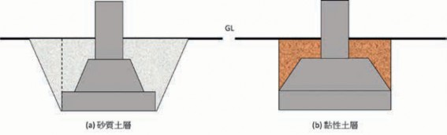
15°
圖3.14 固定基礎依土質不同的設計型式

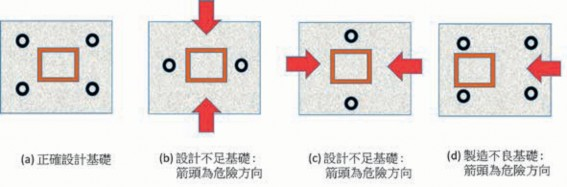
圖3.15 基礎螺絲設計與組裝的相關性分析
（二） 簡易型溫室基礎
簡易型溫室無固定基礎，可於現場施工設透過不同的地錨型式，進行快速的溫室定位安裝，但因現有颱風強烈侵襲下，地錨結構設計亦相當重要。其有如下常見的地錨型式設計。
地錨的型式
螺旋線材地錨。
螺旋線材加銲鋼板。
螺旋板材地錨。
螺旋板材加銲鋼管。
簡易型插入性地錨。
地錨性能
地錨需抵抗通過結構計算得出作用在
立柱上的水平力和垂直力。
由於承載力隨地面條件而變化，因此應事先調查當地地質情況，以檢查地面強度、壓實狀態、是否存在掩埋物
體等。
地錨通過拉拔試驗，以進行測試以確認承載能力。
地錨的金屬件處於土壤下，須進行防蝕工程，以維護壽命。
（三） 基礎的設計流程
溫室基礎的設計流程須同步以兩個方面進行，一為溫室基礎的載重分析，根據溫室的型式設計、溫室結構與設施靜載重、所在地區的地理位置的風力載重與地震載重，地形地貌的影響因子，然後經溫室結構系統，傳遞於溫室柱底板與基礎螺栓的位置中心，包含Fx, Fy, Fz, Mxy, Myz,
Mzx等多項的力與力矩載重。
另一方面則進行溫室所在地的基礎地質分析，包含進行溫室基礎地質鑽探、溫室所在地的水文及設施排水設計，選擇基
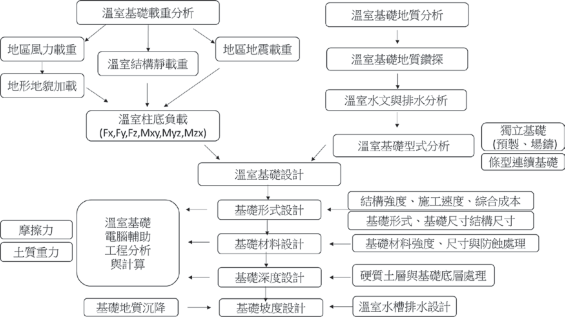
圖3.16 溫室基礎設計流程
礎型式及尺寸結構設計。並考量基礎材料強度、尺寸及防蝕處理。計算摩擦力、土質重力、拉拔力及地質鑽勘的數據的綜合分析計算基礎的深度設計。而考量溫室的水槽排水模式及基礎地質的沉降，進行基礎的坡度設計。
十一、溫室結構元件連接設計
當溫室結構自重及所受外力載重 (如風力、暴雨、地震) 作用時，溫室構造系統支撐架結構係經由屋頂的被覆面材、繫件、桁樑、樑構件、柱構件、斜撐桿件、螺栓鎖固或銲接、基座錨定等，將外力傳
遞至基座，傳至大地。故每個連接部位設計均將影響其整體或局部之穩定性及力的傳遞，設計時應將各接合部位予以檢核，以確認是否能符合分析設計時設定的條件。
接合分析將包含接合構件 ( 如樑、柱、桁架、屋架等) 與連接件 (如螺栓、自攻螺絲或銲接等)。連接設計須使接合後的構件能傳遞各種載重組合的最大載重，並需注意接合點之偏心問題及腐蝕因素，往往結構的失穩及未來的破壞均起因於此。
常見的結構連接設計主要有螺絲接合、銲接接合、鉚釘接合、膠合及其他方法。

（一） 鋼結構螺絲接合
螺絲
螺絲當爲結構用接合其分類、尺寸、
規格材料標準、材質控制以及性能認證等，均應依國際與國家標準之規定。螺螺栓長度設計，請外加使用之墊圈厚度，並選擇鎖緊後螺栓長度在螺母外部具有三個或更多螺紋的螺栓長度。使用扳手、衝擊扳手或類似工具鎖緊螺栓。使用雙螺帽或其他防鬆機制以免鬆動。
高強度螺栓
高強度螺栓接頭的組裝要特別注意連
接構件的接觸面，並確保糾正任何扭曲，翹曲或彎曲。如果連接件之間存在間隙，從而降低了滑動強度，則插入一塊填充板以對此進行補償。對接合面的摩擦表面進行適當的表面處理，以確保摩擦力。組裝之前，請先清除氧化皮、浮銹和灰塵、除油、油漆等。螺栓長度是緊固後長度加上適當長度，以避免發生由於螺釘長度不足而導致的緊固失敗。高強度螺栓的鎖固須放置墊圈在螺栓頭下方和螺母下方，然後鎖固螺母。使用保養良好與檢驗合格的工具，以鎖固螺栓，以獲得標準的螺栓張力。鎖固螺栓，須以正確的鎖固程序以確保所有螺栓都能有效工作。高強度螺栓以沖孔製孔之板厚度不超過13mm。如果板厚超過13mm，將使用鑽孔或雷射加工。
基礎螺栓
安裝基礎螺栓，使用模板將基礎螺栓
正確定位。基礎螺栓使用雙螺母和墊圈，螺栓的末端在螺母外側應具有三個或更多螺紋。當嵌入混凝土中時，可能無法使用雙螺母。可通過使用型鋼、加強筋等來精確地保持基礎螺栓，並進行固定，以使其不產生運動，不產生下偏斜等。
自攻螺絲
自攻螺絲接合應依據詳細之結構分
析後做合理的施作配置，以期能精準正確的各部才有效的緊固結合，達到構造的力安全的目的。螺絲應注意其品質說明，應包括螺絲的頭部種類，鑽頭形式機械的品質，包括其表面硬度、心部硬度、硬化層深度、熱處理、表面處理等，以供確認符合規定。螺絲的長度基本上須多於其欲連結材料整體厚度9.5～12.7mm，螺絲穿過鋼板至少三個螺紋，螺絲接合穿過接合部分的各元件，不能造成元件間有空隙與分離情形產生。用於型鋼結構之螺絲須以鍍鋅、鍍鋁或含高分子保護之螺絲。但與型鋼構材之鍍鋅層相較之下，螺絲鍍鋅厚度則較薄，如在連結較厚的鋼板或多層鋼板時，因穿刺時所產生之熱量將影響螺絲鍍鋅量的損失，或螺絲連結部分暴露於戶外或置於濕氣充分之處時，螺絲須再以予防銹塗裝以防止鏽蝕。
（二） 鋁合金螺栓接合
用於鋁合金構件的螺栓和螺帽可為鋁合金，不銹鋼，鍍鋁鋼或鍍鋅鋼；墊圈用於主體結構中的螺栓和螺母。墊圈的材料應與螺栓相同。
鋁合金與異種金屬接合
與異種金屬接觸時將鋁合金構件與鋼
螺栓、螺母、墊圈、鉚釘結合，以及與鋼或類似異種金屬接觸或結合時，視情況而定進行絕緣處理以防止電位差腐蝕。用於連接鋁合金構件的螺栓必須鍍鋁或鍍鋅。如果鋁合金部件與鋼或相似的異種金屬接觸，則鋁合金和鋼或相似的異種金屬接觸表面均應塗一次鉻酸鋅底漆或在裝配前進行填縫。在結構強度符合下，兩金屬間可夾入塑膠、橡膠等，以使其電氣絕緣。
鋁合金與鹼性材料接合
鋁合金構件避免與鹼性材料直接接觸，
如混凝土、石膏和磚。在潮濕環境中安裝在混凝土，水泥砂漿或石膏中時，需在部件的嵌入表面上塗防潮漆， 如瀝青塗料。
鋁合金與多孔性材料接合
當鋁合金與木材，土壤等接觸時， 如
於潮濕環境極易造成腐蝕。在潮濕環境中鋁合金與土壤或木材接觸的地方，請在兩者的接觸面上塗上鋁粉漆或瀝青塗料等。當在潮濕環境中接觸多孔材料時，在材料表面塗上塗料，以抑制水分吸收。在沿海
等嚴酷的腐蝕環境中，可使用鋁塗料進行防銹塗層。鋁合金塗層之基材表面處理，包含酸洗、鹼洗、拋光，另於鋁合金構件塗層的底漆可使用蝕刻底漆。
鋁合金鉚釘接合
鋁合金間之接合使用鋁合金铆接。
鋁合金鉚釘孔的直徑需略大於標稱軸徑，控制在6％以內。鋁合金鉚釘打設原則上於低溫下施行。鉚釘接合原則上使用機械打擊，鉚釘要完全填充鉚釘孔，且鉚釘頭與孔成同心，與構材之表面良好接觸。組合材於組合前預先修正，避免組合後產生歪斜、扭曲等。接合部預先使用螺栓緊固後，再打鉚釘。接合部之鉚釘及螺栓孔，必要時使用邊磨機修邊，使孔位一致呈圓形。此時不得使用擴孔釘擴大孔徑。完成打設之鉚釘不得有下列缺失，包含有鬆弛者、形狀不正常者、頭部與軸心不一致者、頭部有裂痕者、頭部與構材面不密接者，打設鉚釘時須避免損壞構材。
（三） 銲接連接設計
銲接專業性
銲接接合作業需由銲接專業工程師，
經銲接製程設計，指揮督導具有相關證照合格之銲接技術人員，執行銲接作業。
銲接前處理
銲接面在焊接前須先除去水分、灰

塵、銹、油、塗料及其他不純物。為使銲接後構造物的形狀正確，由銲接形式與銲接順序推估銲接完成後的最小變形量，必要時使用預置偏量或其他控制法預先處理。銲接元件之尺寸，須考慮銲接而引起的收縮、變形及銲接加寬等因素預作處理。接頭之開口須正確加工至設計指定的形狀。銲接材料的結合用適當的模具等方法正確結合。角銲部分需密接，對銲的接頭形狀須一致，並以正確的組合能保持正確接頭角度、間隔與位置之方法接合。焊條須保存於不吸溼氣的環境中再行使用。
銲接作業
於安全且適當的施作環境下，選用正
確銲材及銲接機具，調整適當電壓電流，以正確的位置、順序、方向、速度、形狀進行銲接作業。銲接作業的方式及順序的選定需以能使撓度及殘留應力達到最小之程度，並能防止氣泡、銲渣的混入。
銲接後處理
構材之形狀、尺寸有偏差時須修改。
因銲接熱所產生的撓度，使用機械或加熱矯正。但加熱溫度約650℃以下。銲接完成後銲渣必須清除，清除銲跡、銹、銲渣及油污後，需依施工設計塗裝塗層於清潔乾燥面的銲接面上。

第四節 溫室構造優化設計
一、溫室所面臨的特殊環境載重分析
高溫、高濕、高輻射為熱帶及亞熱帶
地區的氣候型態，高熱、強風、暴雨則為其常見的三大環境載重。以台灣為例，地理上由於北迴歸線的穿越，熱帶與亞熱帶氣候南北不到400公里間，氣候型態就有相當大的差異。再從地形地貌岩岸、沙岸、盆地、台地、丘陵、山地、平原造就氣候變化的多樣性。而台灣幾大山脈的南北直列，讓台灣東西向不到200公里間，從東臨太平洋海岸、花東縱谷、中央山脈、西部丘陵、平原、沙岸，更有海上的離島，其高度線從海平面到3,000多公尺的急遽變化，更造成更多樣的氣候變化。
台灣常見氣候冬天天氣依然寒冷，東北季風強勁，但隨著各地理位置不同，地形地貌的變化，其風的形勢有所不同。而春天的梅雨季造成的連續下雨潮濕的天氣，夏天酷熱，且颱風多，暴雨頻繁， 讓這在世界上不算大的島嶼，卻有極多樣的天氣模式。加上近年來全球的強烈氣候變遷，強風暴雨，已成為此地區的農作物栽培持續會面臨的嚴苛挑戰，往往強颱侵襲下溫室受損嚴重。因此以溫室進行的農
作物栽培，將可提供較穩定的栽培環境，能提高產能及穩定的農作物供給模式。但溫室的結構須承受外部環境的強風暴雨侵襲，溫室的內部環境也須面臨劇烈熱能累積，相對於如荷蘭之溫寒帶溫室，這都是我國溫室設計所需面臨挑戰的特別課題。
各型農業設施的外部結構，都會面臨嚴苛的天候因素挑戰。以台灣溫室夏天所面臨最大的挑戰即是颱風的侵襲及瞬間的大雨，這對基於成本考量下非高安全係數設計的溫室有極大的傷害風險。加上台灣溫室於沿海有大量的應用，故對耐蝕性亦有相當的考量。目前在台灣使用之農業栽種設施會遭遇的外在因素包含靠近海邊沿岸的區域鹽分較重，金屬結構易受鹽害銹蝕，而靠近工業區的區域易受酸雨或化學物質侵襲，導致使用年限不長。內在因素則因為植物栽種的溫濕度環境需求，易造成栽種設施結構銹蝕。
而農業投資仍為勞力密集獲利不易，故成本是一大重點。因此開發輕量化、高強度結構、高耐蝕性的台灣特色的農業栽種設施及材料結構，極具有硏究開發價值，另施作容易度及成本控制也是考量的重點。

溫室抵抗環境載重的設計原理與原則，並依造溫室所在地點的地形、地貌及強風暴雨的經驗數據，以進行溫室外部環境載重抵抗設計，並考量溫室內的農作物所需的作業模式、需求空間動線及溫溼度參數進行溫室的內部環境控制設計，以完成溫室的總體規劃設計。
在溫室結構材料上，以材質優化、形狀設計、表面處理等三項材料製程設計與控制技術，以提升結構材料的結構強度、輕量化省成本及高耐蝕壽命性。並在溫室防颱強化上，結構強化、內部強化、外部強化及破風強化等四項防颱設計技術，以提升各種面對不同颱風等級時的防颱策略技術。
二（一、）溫環室境破載壞重模式分析
溫室的功能以農作物之栽培為主要目的，基於功能性與經濟性考量，溫室設計非如同住宅及工廠之設計般具有相當高的安全係數，故針對溫室所面臨的環境載重需整合性的考量設計與分析，以同時符合安全性、成本性與壽命性的綜合考量。
在熱帶亞熱帶溫室環境載重中，高輻射的陽光、溫度季節冷熱與日夜溫差的變異、季節風速風向與日夜氣流的變異，氣候變遷所致的極端氣候型態的變異，反而
讓溫室結構系統所需面臨的環境載重變化性還大於一般的民生住宅建築系統。
（二） 結構載重
溫室所面臨的結構載重包含自身之重力載重、大自然之環境載重，及氣候變遷所帶來的新衝擊載重。而這些載重的模式又包含了強度載重、變動載重、衝擊載重、反覆載重。
溫室實際所面臨的強風暴雨，跟地形地貌有很大的相互關係，瞬間的陣風強度往往會超出氣象報告所能完整預測。而台灣地處亞熱帶，其所面臨的強風暴雨，已成為溫室設計所必須面對的嚴苛挑戰。
（三） 材料結構破壞
溫室以封閉型式設計形成結構強度，但破壞均往往發生於一起點，而起點經常是弱點或奇異點，一旦破壞形成，則會造成連鎖的破壞，跟開始的封閉設計有相當的不同，故任何破壞的細節均是考量的重點。而任一材料的破壞模式主要有應力
破壞、應變破壞、疲勞破壞，除了拉力、剪力、扭力等瞬間的力量形式，長期所受的潛變與疲勞破壞亦為考量重點。以材料破壞的最大比例其實是疲勞破壞及腐蝕破壞，因其破壞的模式，往往於平時中低負荷的累積，而形成不易發現的破壞起點，
一旦，有重大負荷時，由此擴大破壞。
（四） 溫室連接機構失效造成集中載重與載重的能量傳遞失效
材料結構扮演的角色即要面臨載重時
的力量與變形的抵抗與傳遞。
最經濟有效的結構設計，在於當載重來臨時能讓多項元件去共同承擔這載重，並將此載重快速地傳遞到地面，讓大自然的衝擊能回到地球上。如桁架、斜撐等構成結構上的三角形結構，其讓原本較難承受的橫向載重，可利用鉸連結的力量傳遞
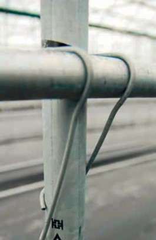
圖3.17 簡易溫室彈簧夾連接件
方向轉換成軸向載重，如此只要能抵抗挫曲破壞，則可形成相對方向的力量抵銷及軸向元件強載重的能力展現。
但如造成某元件的集中載重，其將形成破壞的關鍵。同樣的如扮演能量傳遞的連接件失效，則載重將形成過度的集中而致破壞，而由一點破壞的突破，往往連鎖反應，造成結構系統性的破壞。
故連接件在溫室結構上往往扮演極為重要但又被常忽視的元件。以現有簡易溫室的常用連結件彈簧夾 (如圖3.17)，其連結材料強度不足、接觸面積小、磨擦力不足，力的傳遞能力嚴重不足。
（五） 材料腐蝕破壞
除了材料受力結構型的破壞，材料腐蝕破壞更是破壞的重點，主要的腐蝕因子包含物理腐蝕、化學腐蝕、電化學腐蝕，更包含生物腐蝕。
以金屬材料為主結構的溫室其破壞的原因經常是腐蝕所導致的材料失效，尤其在受到高溫高濕下促進化學、電化學及生物的腐蝕環境下，加速其腐蝕的破壞，而其會具體降低材料原先的預期強度，形成主導引起破壞的起點。
其具體影響的就是溫室的可靠度與安全性，也直接影響其壽命性。以錏管溫室為例，因常規管材長度因素，常需接管以
增加長度，而接管點常為直接大小縮管套接，然後以自攻螺絲直攻鎖付 (如圖3.18)此將造成螺絲孔降低原有材料強度，螺絲往往與原有材料材質不同，易成電化學腐蝕，形成破壞點。原有材料交接處易累積化學性液體，形成化學腐蝕及電化學腐蝕。故當全新時尚有支撐力，當累積一段腐蝕時間後，此點將形成破壞的起點。
圖3.18 溫室錏管接管與自攻螺絲鎖付
三、溫室結構面對颱風的破壞模
（一）式颱分風析氣象預報
在熱帶亞熱帶颱風為一常見的風力破壞模式，現代化的氣象偵測技術不斷進步提升，所以颱風來臨前均可由各國氣象局得知其可能的路徑、風力等級、暴風半徑大小、瞬間最高風速等訊息。但颱風的軌跡及其變化受相關區域的地形地貌及其亦持續變化的即時氣象環境影響，往往多國的氣象站的預報有不一樣的推測 (如圖 3.19)。但總能提高相當的關注以利提前地進入防颱準備作業。
（二） 颱風的行徑與風力合成
颱風以逆時針方向圍繞颱風中心旋轉，形成一具有中心近似無風的颱風眼，以不定的軌跡往前移動。故由此颱風的力量合成分析圖 (如圖3.20)，可得知其路徑的差異可能造成的攻擊路線、風力大小及方向的改變。
（三） 颱風長期登陸與風力路徑統計分析
此可由長期的風力路徑統計圖 (如圖
，風力登陸分析圖 (如圖3.22)，進行颱風對所在溫室的攻擊可能方向，以利進行防颱超前部署。
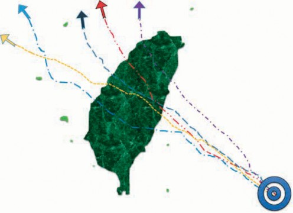
圖3.19 各國氣象局的颱風路徑預測
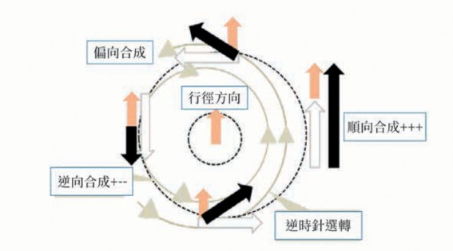
圖3.20 颱風的行徑與風力合成圖

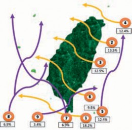
圖3.21 風力路徑分析 (1911～2017)
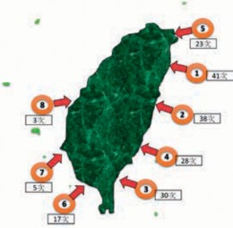
圖3.22 風力登陸分析 (1911～2017)
（四） 颱風的等級與風速
颱風的風力等級及風速亦可參考台灣中央氣象局之風力分級表 (如表3.1)。
（五） 基本設計風速
台灣本島及離島各地鄉鎮可參考風速等級進行風力載重設計。風速等級分為下列各區：
表3.1 氣象局風力分級表
級數 | 風的名稱 | 速度 (m/sec) |
0 無 風 0～0.2
1 | 軟風 | 0.3～1.5 |
2 輕 風 1.6～3.3
3 | 微風 | 3.4～5.4 |
4 和 風 5.5～7.9
5 | 清風 | 8.0～10.7 |
6 強 風 10.8～13.8
7 | 疾風 | 13.9～17.1 |
8 大 風 17.2～20.7
9 | 烈風 | 20.8～24.4 |
10 狂 風 24.5～28.4
11 | 暴風 | 28.5～32.6 |
12 颶 風 32.7～36.9
13 | 颶風 | 37.0～41.4 |
14 颶 風 41.5～46.1
15 | 颶風 | 46.2～50.9 |
16 颶 風 51.0～56.0
17 | 颶風 | 56.1～61.2 |
桃園市： 各區。
新竹縣： 新豐鄉、湖口鄉、新埔鎮、關西鎮、橫山鄉、尖石鄉。
台中縣： 和平鄉。南投縣：信義鄉。
台南市： 七股區、中西區、東區、南區、北區、安平區、安南區。
高雄市： 林園區、大寮區、大樹區、燕巢區、大社區、仁武區、鳥松區、鳳山區、橋頭區、岡山區、梓官區、彌陀區、永安區、茄萣區、路竹區、湖內區、桃源區、新興區、前金區、苓雅區、鹽埕區、鼓山區、旗津區、前鎮區、三民區、楠梓區、小港區、左營區。
屏東縣： 佳冬鄉、林邊鄉、東港鎮、新埤鄉、來義鄉、泰武鄉、萬巒鄉、潮州鎮、竹田鄉、崁頂鄉、南州鄉、萬丹鄉、新園鄉、麟洛鄉、瑪家鄉、內埔鄉、長治鄉、屏東市、九如鄉、鹽埔鄉、里港鄉、高樹鄉、三地門鄉、霧台鄉。
宜蘭縣： 大同鄉、三星鄉、員山鄉、羅東鎮、宜蘭市、礁溪鄉。
花蓮縣： 富里鄉、卓溪鄉、萬榮鄉。
(3) 每秒37.5公尺區
新北市： 烏來區、新店區、三峽區、五股區、蘆洲區、三重區、泰山區、新莊區、板橋區、中和區、永和區、土城區、樹林區、鶯歌區、林口區、八里區。
(2) 每秒42.5公尺區
台北市。基隆市。
新北市： 貢寮區、雙溪區、坪林區、瑞芳區、平溪區、石碇區、深坑區、汐止區、萬里區、金山區、石門區、三芝區、淡水區。
屏東縣： 車城鄉、牡丹鄉、枋山鄉、獅子鄉、枋寮鄉、春日鄉。
宜蘭縣： 南澳鄉、蘇澳鎮、冬山鄉、五結鄉、壯圍鄉、頭城鎮。
花蓮縣： 玉里鎮、瑞穗鄉、豐濱鄉、光復鄉、鳳林鎮、壽豐鄉、新城鄉、秀林鄉。
台東縣： 達仁鄉、大武鄉、太麻里鄉、長濱鄉。
(1) 每秒47.5公尺區
花蓮縣： 花蓮市、吉安鄉。屏東縣： 恆春鎮、滿州鄉。
台灣本島地區
台東縣： 金峰鄉、卑南鄉、台東市、
東河鄉、鹿野鄉、延平鄉、關山鎮、池上鄉、海端鄉、成功鎮。
(4) 每秒32.5公尺區
新竹縣： 五峰鄉、北埔鄉、峨眉鄉、竹東鎮、寶山鄉、芎林鄉、竹北市。
新竹市。苗栗縣。
台中市： 東勢區、新社區、太平區、石岡區、豐原區、潭子區、神岡區、大雅區、大肚區、龍井區、沙鹿區、梧棲區、清水區、后里區、外埔區、大安區、大甲區、中區、東區、南區、西區、北區、北屯區、西屯區、南屯區。
彰化縣： 伸港鄉、線西鄉、和美鎮。南投縣： 仁愛鄉。
雲林縣： 口湖鄉、水林鄉、四湖鄉。嘉義縣： 布袋鄉、鹿草鄉、太保市、六腳鄉、朴子市、東石鄉。
台南縣： 永康區、歸仁區、新化區、左鎮區、玉井區、楠西區、南化區、仁德區、關廟區、龍崎區、官田區、麻豆區、佳里區、西港區、將軍區、學甲區、北門區、新營區、
後壁區、東山區、六甲區、
下營區、柳營區、鹽水區、善化區、大內區、山上區、新市區、安定區。
高雄縣： 阿蓮區、田寮區、旗山區、美濃區、內門區、杉林區、六龜區、茂林區、甲仙區、三民區。
(5) 每秒27.5公尺區
台中市： 烏日區、霧峰區、大里區。彰化縣： 鹿港鎮、福興鄉、芳苑鄉、大城鄉、二林鎮、埔鹽鄉、
竹塘鄉、埤頭鄉、溪湖鎮、溪州鄉、二水鄉、彰化市、花壇鄉、芬園鄉、秀水鄉、大村鄉、員林鎮、社頭鄉、埔心鄉、永靖鄉、田尾鄉、北斗鎮、田中鎮。
南投縣： 草屯鎮、南投市、名間鄉、中寮鄉、國姓鄉、埔里鎮、魚池鄉。
雲林縣： 麥寮鄉、台西鄉、東勢鄉、崙背鄉、褒忠鄉、元長鄉、北港鎮、土庫鎮、二崙鎮、西螺鎮、虎尾鎮、大埤鄉、荊桐鄉、斗六市、斗南鎮、古坑鄉、林內鄉。
嘉義縣： 新港鄉、水上鄉、溪口鄉、
四、溫室防颱工程設計
基於結構安全、環境控制、作業方便、成本合理，如何提升溫室的防颱能力，並非將溫室如民生或工業建築般，以大型的鋼構或鋼筋水泥的高安全結構設計，而應研究如何提高跨距的有利作業環境下，同時又具輕量化及高安全性結構，且控制在合理成本。這種方法則需導入兩項設計思維 (如圖3.23)，一為溫室材料結構的優化設計，此乃利用材料工業技術的進
步性，以材質、形狀、形貌、機能的四項組合技術，提升溫室結構的基本強度。
(6) 每秒22.5公尺區：
南投縣： 竹山鎮、水里鄉、集集鎮、鹿谷鄉。
台南市： 白河區。
民雄鄉、大林鎮、梅山鄉、竹崎鄉、中埔鄉、番路鄉、大埔鄉、阿里山鄉。
嘉義市。
外島地區：
蘭嶼：每秒65公尺。
綠島：每秒65公尺。
彭佳嶼：每秒57公尺。
東吉島：每秒45公尺。
馬祖：每秒42公尺。
琉球：每秒40公尺。
金門：每秒35公尺。
澎湖縣：每秒33公尺。
另一思維設計為溫室組合抗颱強化設計，溫室以平日正常的風速下的運維為主設計，但預留颱風來臨時的因應設施設計，把防颱當作對颱風的事先關注與預測、颱風來襲前的超前部署、颱風侵襲後的持續改善設計，如此將以合理的成本與合理的防颱設施進行防颱工程設計。
（一） 溫室材料結構優化技術
溫室材料結構優化如圖3 . 24 將以材質、形狀、形貌、機能等四項技術提升。
材料材質優化設計
提高材料性能包含強度、剛性、韌
性，可立即提高溫室之結構強化與性能優化。一般金屬材料的成本主要以其合金元素定價，而以材料的合金強化、熱機處理的晶粒細化、應用塑性加工的變形硬化，均可以促進材料的結構強化與輕量化，故強度提高一倍的材料，其材料成本很可能只提高10～ 20％，此可經材料的屈服強度、抗張強度、抗彎強度測試以證明新材料結構的優勢。
如此將對溫室結構設計有很大的進步空間。一般規範結構用鋼強度為400MPa以上即可，但相對590MPa與780MPa的高強度鋼材設計上就有很大的強度與重量差
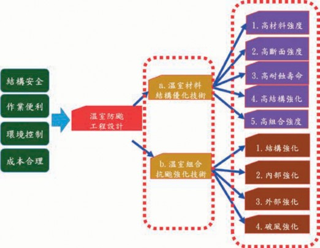
圖3.23 溫室防颱工程設計
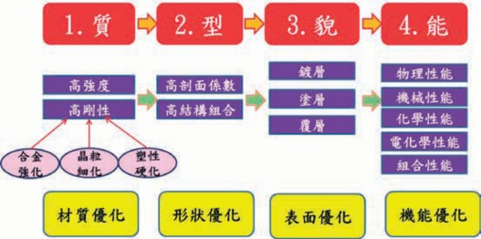
異，這在汽車工業材料的應用設計上，就有非常明顯的進步空間。
材料高剖面係數之優化設計
結構材料的型式優化是在不改變材料
材質即可提升的新優勢材料設計，本項如與上項結合，將可促進結構件的材質強化與剖面型式優化的同步強度提升。而此項優化設計也將促進金屬型材成形與加工設備系統的進步，如何高速且成功的針對高強度鋼材進行更高剖面係數的型材自動化連續成形及後續的開孔加工，也將是型材成本與品質的關鍵。建構高速高強度的成形機組及自動化的雷射切割系統將是材料解決的同步技術。
材料表面處理與高耐蝕性設計
材料結構之耐蝕處理為提升高壽命
性的關鍵，進行新材料的處理優化將包含鍍前處理、鍍層處理、鍍後處理、塗層處理、複層處理，以提升設施農業應用的強化抵抗環境能力。而此為完整的金屬表面處理技術，鍍層、塗層與覆層的材質選擇與方法設計，均為耐蝕性能與成本的關鍵，需綜合設計考量。
材料機能優化設計
除了材料的物理性能 (如熱傳性能、低
密度、高反射性)、化學性能 (耐侵蝕、耐腐蝕)、機械性能 (高強度、高剛度、高韌性) 的提升外，亦有材料具有良好的生物性
能 (微生物抑制、抗菌性、抗生物腐蝕)。
（二） 溫室組合抗颱強化設計
溫室結構耐風強化設計
單棟溫室風壓局部強化
溫室受風力載重時，屋面的邊緣區域往往是風壓局部強化區域 ( 如圖 3.25)，可以屋面長與寬的10％，進行強化設計。
連棟溫室風壓局部強化
連棟溫室受風力載重時，最兩側的屋面的邊緣區域是風壓局部強化區域 (如圖3.26)，以屋面長與寬的10％，進行強化設計。中間棟溫室則側邊仍有風壓局部強化區域。
溫室建築群的風壓局部強化
溫室建築群受風力載重時，考慮間隔風道之影響及最兩側的屋面的邊緣區
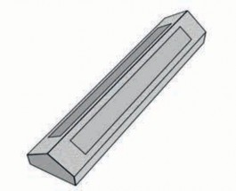
圖3.25 單棟溫室風壓局部強化設計
域是風壓局部強化區域 (如圖3.27)，以屋面長與寬的10％，進行強化設計。
結構組合強化
以科學化的溫室設計與分析方法、適
當的元件材質選用與處理技術及正確的連結與施工方法，以提高溫室的可靠度與使用壽命。結構組合使用具有結構強度且耐振動的連接件，依溫室結構位置搭配合適的型材構件，可以使溫室達到耐強風的結構強度。
內、外部強化
對已建好的現有溫室及未來興建的溫
室應進行防颱分析及強化設計，以強化溫室內部及外部強化機制，經工程分析於溫室內部結構進行斜撐、拉桿、支撐桿等，可提升溫室耐風等級。
破風強化
極高風險的颱風路徑經過區域之溫
室，增加溫室破風牆或破風網等強化結構，可提升溫室耐風壓等級。
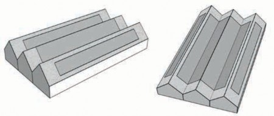
圖3.26 連棟溫室風壓局部強化設計
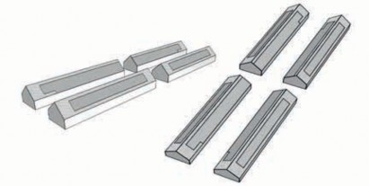
（三） 溫室防颱優化設計流程
溫室防颱設計可依據以下步驟方法進行：(如圖3.28)
針對溫室所在區域進行颱風路徑與機率分析
依據溫室預定設立位置，以大範圍區
域進行歷史颱風路徑分析，蒐集整理氣象局颱風資料庫歷史資料，可得知區域颱風路徑經過方式及機率，並求得歷年颱風侵襲時最大風速、最大陣風、最大雨量等，加以分析探討可得知區域可能風向、風力
等級與颱風侵襲頻率。
進行溫室側面與正面之受風力之風壓分布計算與分析
藉由溫室所在區域的風場及雨勢資
料，並以溫室設立周遭的地形地貌加以探討，以計算分析溫室側面與正面的承受風力與風壓分布。
進行溫室受風等級提升一級之結構的電腦輔助工程分析
將溫室承受風力及風壓等級對溫室結構的影響，使用工程計算及模擬分析加以
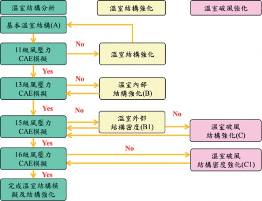
圖3.28 溫室防颱優化設計流程

探討，並進行溫室承受風壓等級一級的性能提升。
分析結構之應力應變圖及各部件的安全係數
藉由溫室工程計算及模擬分析，對溫
室結構承受風壓後應力應變進行分析，以求得溫室各部件材料結構受力特性及相關安全係數。
進行低安全係數之強化設計及過高安全係數部件之輕量化設計
依據溫室各部件之相關安全係數進行
材料結構的強化設計，並對過高安全係數之部件進行輕量化設計，以求得適合的溫室零件。
再提升風力級數一級，以再進行受風結構電腦輔助工程分析
對於溫室部件組合結構以受風特性進
行電腦輔助工程分析，並改善修正部分材料結構強度，以提升溫室耐風力級數一級。
當內部結構已經提升後，開始進行內部強化與外部強化的強化設計
對於最適化的溫室材料結構組合，進
行內部強化與外部強化規劃，預先準備相關部件組合連接設計，使溫室在颱風侵襲時能承受較高之風力級數。
再提升風力級數一級，以進行強化設計後之溫室結構電腦工程分析
以溫室內部強化與外部強化的材料結
構設計，進行溫室結構電腦模擬分析，以提升溫室承受風力級數一級。
當內部強化與外部強化設計完成後，再加載風力等級進行工程分析
依據內部強化與外部強化設計方式，
提高溫室部件安全係數再進行溫室性能提升工程分析，使溫室性能能承受加載一級風力之風壓。
控制破風強化設計的破風密度，以利進行再加載之防颱強化設計
藉由增加溫室破風強化設計，並分析
控制破風結構之密度，可提升溫室防颱性能與可承受風壓，使溫室防颱強化性能提升一級。
圖4.1 太陽幅射的波長分布。 (參考國家度量衡實驗室網頁整理重繪)


第一節 環境控制的理論基礎
本節前半段敘述光、輻射與日出方程式，後半段則使用濕空氣線圖，敘述溫度、濕度及空氣循環。特別以環境因子間的相互關係為焦點，並針對常用的溫室環控設備敘其物理意義。
一、光與輻射
太陽光以放射出多種不同波長的混合電磁波形式傳遞至地球，其波長分布如圖 4.1所示。圖中波長的單位為nm，1nm=109 m。太陽輻射的波長介於280～3,000nm之間，280～380nm短波長的太陽輻射稱為紫外線 (ultraviolet)，此種輻射導致日曬效果。780～3,000nm長波長的太陽輻射稱為紅外線，此為太陽熱效應的主要因素。
於紫外線與紅外線之間的波長區域380～ 780nm，為人類可目視的輻射，稱為可見光。可見光由波長區域380～780nm的光譜構成。當光線穿透三稜鏡時，可散射出顏色光。
人眼對不同色光有不同的感知度，可依下列簡單方法加以試驗：首先在陰暗櫥櫃中放置五張色紙 (黃、紅、綠、藍、紫)；然後緩慢關閉櫥櫃的門，並持續凝視色紙。不久後眼睛對紅、藍、紫等色紙即無法辨別，但仍可見綠色紙與黃色紙。因此國際照明委員會 (International Commission on Illumination, CIE) 依據實驗結果，將各種波長的光引起明暗感覺所需的輻射通量進行比較，確立了人眼對各種波長光的平均
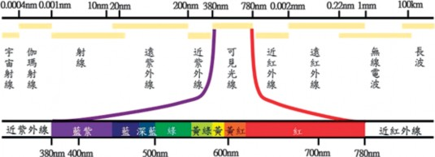
相對靈敏度，即相對感度或視見函數。在較明亮環境中人的視覺對波長為555.016nm的綠色光最為敏感；而480nm藍光的視見函數則為V(480nm)=1mW/7.2mW=0.139，如圖 4.2所示。
植物在生長過程中需要利用光的能
量，製造養分與維持生理機能，基本上對於植物有效輻射中，可分為生理有效輻射 (300～800nm) 與光合作用有效輻射 (PAR： 400～700nm) 兩種。光合作用有效輻射 (PAR)，作為光合作用中提供CO2與水轉換成糖類所需要的能量源，需要較強光強
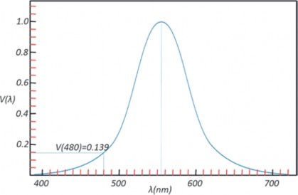
圖4.2 人眼的相對感度 (視見函數)。 (參考國家度量衡實驗室網頁整理重繪)
圖4.3 植物的光合作用曲線。 (參考網頁資料1整理重繪)

度。生理有效輻射，主要對於色素合成、光周期性、趨光性、形態形成等等生理方面具有效果。
光合作用所需光的波長範圍與可見光的波長範圍類似。植物進行光合作用時，在PAR輻射波長中並非以相同效率進行。如同人們的眼睛有相對感度，植物也有類似的感度曲線如圖4.3所示，在紅色光 (625～675nm) 有最大的峰值，在藍色光 (440～450nm) 則有次大峰值。
（一） 光強度的單位與轉換
光源種類 | Wm-2→μmol m-2s-1 | klux→μmol m-2s-1 |
日光燈 | 5.61 | 13.65 |
鹵素燈 | 0.63 | 19.08 |
偏紅植物燈管 | 5.30 | 27.87 |
白光LED | 5.83 | 15.29 |
量測光強度常使用輻射量 (radiometric； Wm-2)、照度 (photometric；lux) 與光量子通量密度 (photosynthetic photon flux density, PPFD；μmol m-2 s-1) 三種單位。輻射量主要針對波長範圍280～3,800nm的光能量進
行量測，其量測值常應用於溫室內熱量收支運算及相關環控設備運作的參考基準。照度量測值相當人於類眼睛感度的光。故主要量測黃色及綠色，及某程度的藍色與紅色光，其量測波長範圍為380～760nm，為傳統園藝栽培業者及建築照明設計所使用單位。光量子通量密度對應於植物的相對感度，主要量測紅色光，另外也量測部分黃色、綠色或藍色光，其量測波長範圍為400～700nm，1982年美國農業工程學會將其定為農業量測光強度基準。由於太陽光有固定頻譜，因此三種量測值可依一定比例換算，有些儀器上可直接用模式選擇的方式，選擇適用單位，但這只限於太陽光或儀器所指定的人工光源，針對特定光源三種單位轉換係數的參考值如表4.1所示 (姚，2011與陳，2008)。雖然不同燈具的轉
表4.1 不同燈具各單位間的轉換係數 | |||
太陽光 | 4.5 | 18 | |
省電燈泡 | 5.80 | 14.33 | |
植物燈管 | 4.82 | 23.23 | |
偏藍植物燈管 | 5.08 | 24.27 | |
紅光LED | 5.22 | 84.71 | |
藍光LED | 7.01 | 52.72 | |
換係數已有研究人員協助測量計算，但照明技術的日新月異，新型燈具不斷推陳出新，且燈具使用年限及量測環境皆會影響轉換係數，因此，若要精確數據，仍要以適當量測設備直接量測為佳。
【例題】
有一照度計於太陽光下量測的照度為
500lux，試求：
等於多少μmol m-2 s-1？
等於多少Wm-2
【解答】
500lux 等於0.5klux ，查表4.1 可得 klux→μmol m-2 s-1轉換係數為18代表
反射率 (reflection factor)，因此反射率ρ可表示如下：
(4.1)
It Iin
ρ =
反射特性與平面性質有關，當光入射至光滑平面時，其反射光只有一個方向，稱為正反射，當光入射至粗糙面時，其反射光的方向不一致，稱為漫反射。反射率可使用光強度感測器量測該平面上入射光強度Iin，隨後將該感測器反向使感光元件距欲測之平面5～8cm，測出平面上反射光強度Ir，代入4.1式，即可計算出反射率。
光穿透過某物體後繼續前進稱為透射，物體具有可透射光線的能力稱為透光
1klux=18μmol m-2 s-1，故0.5klux=μmol
性。某介質透射光It與入射光Iin的比值稱為
m-2 s-1 。
由(1)可知，500lux=9μmol m-2 s-1，查表
4.1 可得Wm-2→μmol m-2 s-1轉換係數為
4.5，9μmol m-2 s-1=9.065÷4.5=2 Wm-2
（二） 光的反射 (reflection)、透射
(transmission) 與吸收 (absorption)
一般人眼中所看到的物體，其實是該物所反射的光在人眼視網膜上成像所致，換言之，若光不存在，物體就無法反射光，因此在黑暗中人眼無法看見物體。在某平面上反射光Ir與入射光Iin的比值稱為
透射率 (transmission factor)，因此透射率τ可表示如4-2式：
(4.2)
It Iin
τ =
當光觸及表面或介質， 不是被反射即是透射，且多少會損失一些光，即被表面或介質所吸收，使得被照物溫度上升。通常深色表面比淺色表面吸收更多的光，霧面黑體提供接近完全的吸收。該表面或介質吸收光與入射光的比值，稱為吸收率 (absorption factor)，以α表示之，一般而言，
圖4.4 透明被覆材光學特性示意圖。 (參考Cecilia et al., 2019整理重繪)

146
反射率、透射率與吸收率的和應等於1。 介質對不同波長光線具有不同光學特
性，而呈現出不同顏色，若是透明介質，則由透射光決定，例如：以白光照射紅玻璃紙，紅光可透過，故呈現紅色，若以綠光LED照射紅玻璃紙，因綠光被吸收，而無紅光可透射故呈黑色；若是不透明介
覆材使光線透過，當光線透過被覆材時，亦會產生反射、吸收與透射，如圖4.4所示，當太陽輻射Isun接觸被覆材外表面時，部分光線被反射Ireflected=ρIsun，進入被覆材的光線會被吸收，其吸收程度與材質的消光係數 (extinction coefficient) 和厚度有關，直射進入厚度為d、消光係數為k的被覆材的
質，則反射色光就是該介質顏色，例如：
光線，會有透射光I
transmitted
=(1-ρ)e-kdI
sun，故
紅蘋果會吸收紅色以外其他色光，反射紅光，故用藍色LED照射蘋果，因無紅光可反射，故蘋果呈現黑色；黑色介質能將入射的各種色光全部吸收，因此即使是在白光照射下，這種介質不會將任何一種色光反射透射，故呈現黑色；而白色不透明介質則可將大部分的色光反射，故呈現白色。
溫室主要是應用於作物栽培，作物生長需進行光合作用，故需利用透光性的被
可定義光線透射率 (transmission)τ=(1-ρ)e-kd。當光線非以垂直方式入射至被覆材料
時，因d值變大，而造成kd值變大，e-kd變小，光線傳遞率τ也隨之變小，圖4.5為玻璃與乙烯薄膜在不同入射角下的光線透射率，由圖中可發現，當入射角在50度以內時，光線透射率變化不大，當入射角大於 60度時，則產生急劇變化，而目前材料的光線透射率主要是以光線正交入射至被覆
材作為量測依據，但在實際應用時，光線正交直射進入被覆材的機率少之又少，而且透射進入溫室中的光線並非僅受到被覆遮蔽，同時也受到溫室結構遮擋，依照設施結構的不同，光線透過率也不同，故傳統材質表中所列光線透射率皆有高估的情況。
圖4.5 不同入射角對光線透射率的影響。 (參考三原，1972整理重繪)
（三） 太陽方程式
地球以橢圓形軌道繞著太陽，以一年為一週期的公轉，同時又以與這個公轉面法線呈23.45°傾斜的地軸為中心，以一天為一個週期的自轉。若以地球上某個位置做
為觀測點，則可將太陽、月亮與星座視為以一天為一個週期在天球上移動，形成日升、日落的現象，圖4.6說明這個天球與夏至、冬至、春秋分的太陽軌道，圖 4.6(a)為其斷面、圖 4.6(b) 則為斜視圖。圖中通過觀測點O，與地平面垂直的直線和天球交錯的上方點Z叫做天頂、下方的點叫做天底；PN和PS稱為北極和南極，子午線為通過PN、PS和地平面上南點S的圓弧線，當太陽橫貫子午線時稱為南中，此時太陽的高度為當日最高。在地球上的任一地點，以太陽實際橫貫兩次南中時的時間間隔為一天，稱為真太陽時 (true solar time) 或視太陽時 (apparent solar time)，因為地球公轉軌道並非圓形，故此時間間隔會隨日子而不同。每日時間長短不同，會對生活造成不便，因此假設以該年平均值24小時做為一天進行運轉的平均太陽時 (mean solar time)。
(a) (b)
圖4.6 太陽運行軌道。 (參考田中等人，2004整理重繪)

(4.3)
E = 9.87 sin( 2B) − 7.53 cos( B)
− 1.5sin ( B)
平均太陽時與真太陽時每年有四次是一致的，其餘皆會有誤差，這個時間差就稱為均時差。均時差是由週期各為一年與六個月的2個正弦曲線疊加而成，它可以用近似的算式表達：
Tt=TC [時]±(L-LC)×4[分]±E[分] (4.4)
此處E以分為單位，式中B = D− 81 ×360 °
對一個橫跨多個經度的國家或地方，不同位置就會有不同時間依據，造成同一國內各地區時間不同，因此，每一個國家會訂定一個代表性的平均太陽時，稱為中央標準時。即為一般鐘錶顯示的時間。中華民國是以東經120°做為中央標準時的基點。以格林威治子午線為基準，由於地球自轉，經度與經度之間每度相差4分鐘，因此某地的真太陽時可由下式算出：
365
，
月
D為自1月1日算起的累積日數，例如：1
2日時，D為2。
【例題】
試計算7月1日的均時差為何？在東經
120為觀測點時，太陽過中天的時刻為何？
【解答】
日期為7月1日，可計算D為182，代
入B的公式： B = D− 81 ×360 ° ，可計算
其中Tt為位於經度L觀測點的真太陽時、TC為該觀測點的中央標準時， 東經取-、西經取+、LC為該觀測點所屬中央標準時基點的經度、E為均時差。
【例題】
試計算台中2019年7月1日時，太陽達到最高點 (正午) 的時間為何？
B=99.6°，將B值代入公式 ：
365
4-3
E=9.87 sin(199.2°)−7.53 cos(99.6°)− 1.5sin(99.6°)
可得E=-3.26−(-1.125)−1.48=-3.615分
=-3分37秒。
故太陽過中天的時刻為12時3分37秒。
【解答】
365
日期為7月1日，可計算D為182，代入B的公式： B = D− 81 ×360 ° ，可計算
B=99.6°，將B值代入均時差公式： E=9.87 sin(2B)−7.53 cos(B)−1.5sin(B)
可得E=-3.26−(-1.125)−1.48=-3.615分
=-3分37秒。
故在東經120度太陽過中天的時刻為12時3分37秒。
台中氣象觀測站位於東經120.684°，北緯24.146°，需對經度做修正，
Tt=12時3分37秒−(120.684−120)×4[分] Tt=12時3分37秒−2.736分
Tt=12時3分37秒−2.736分
Tt=12時0分53秒
太陽入射角與地球赤道的夾角稱為太陽赤緯，以δ表示，一年當中太陽赤緯都在 23.45°到冬至-23.45°間來回變化。太陽赤緯可由庫珀方程式求出：

δ = 23 .45 sin 360 ×
(
284 + D
365
)
(4.5)
式中， D為自1 月1 日算起的累積日數，例如：1月2日，D為2。表4.2列出各月每隔4日的太陽赤緯。
太陽的時角用ω表示，在正午 (太陽到達最高點) 時ω=0，每隔1小時增減15°，上午為正，下午為負。
表4.2 太陽赤緯 單位：(°)
月份 日期 | 1 | 5 | 9 | 13 | 17 | 21 | 25 | 29 |
1 | -23.1 | -22.7 | -22.2 | -21.6 | -20.9 | -20.1 | -19.2 | -13.2 |
2 | -17.2 | -16.2 | -14.9 | -13.6 | -12.3 | -10.9 | -9.4 | |
3 | -7.9 | -6.4 | -4.8 | -3.3 | -1.7 | -0.1 | 1.5 | 3.0 |
4 | 4.2 | 5.8 | 7.3 | 8.7 | 10.2 | 11.6 | 12.9 | 14.2 |
5 | 14.8 | 16.0 | 17.1 | 18.2 | 19.1 | 20.0 | 20.8 | 21.5 |
7 | 23.2 | 22.9 | 22.5 | 21.9 | 21.3 | 20.6 | 19.8 | 19.0 |
8 | 18.2 | 17.2 | 16.1 | 14.9 | 13.7 | 12.4 | 11.1 | 9.7 |
9 | 8.6 | 7.1 | 5.6 | 4.1 | 2.6 | 1.0 | -0.5 | -2.1 |
10 | -2.9 | -4.4 | -5.9 | -7.5 | -8.9 | -10.4 | -11.8 | -13.2 |
11 | -14.2 | -15.4 | -16.6 | -17.7 | -8.9 | -10.4 | -11.8 | -13.2 |
12 | -21.7 | -22.3 | -22.7 | -23.1 | -23.3 | -23.4 | -23.4 | -23.3 |

【例題】
已知正午為12時，請計算8時、11時、
13時和15時的時角各為何？
【解答】
8時的時角：(12−8)×15=60度
11時的時角：(12−11)×15=15度
13時的時角：(12−13)×15=-15度
15時的時角：(12−15)×15=-45度
如圖4.7所示，太陽直射至觀測點的向量與水平面夾角稱為太陽高度角 (h)，太陽高度角可由下式加以計算：
sinh=sinφ sinδ+cosφ cosδ cosω (4.6)
式中 φ為觀測點所處緯度；δ為太陽赤緯；ω為太陽時角。
在日出或日落時，h=0，故可得
0=sinφ sinδ+cosφ cosδ cosω (4.7)
移項整理後可得日出和日沒時角的cos

(4.8)
cos φ cos δ
cosω = - sin φ sin δ = - tan φ tan δ
值為
因此可得日出和日落的時角
ω=cos-1(-tanφ tanδ) (4.9)
15 15
W
T = = 1 cos- 1 ( − tanφ tanδ ) (4.10)
因時角每隔1小時增減15°，故可推算得日出與日落和正午的時間差為
而一天中可能日照時間則為2 倍的
TW。
圖4.7 太陽方位與高度示意圖。 (參考沈與曾， 2008整理重繪)
【例題】
試計算台中2019年7月1日，日出與日落時間為何？
【解答】
查表4.2可得7月1日赤緯為23.2度，台中緯度為北緯24.146度，日出與日落和正午的時間差為
氮氣及其他氣體) 與水蒸氣等兩部分構成，由道爾頓分壓定律 (Dalton’s law) 可知：兩種以上的氣體，在溫度不變狀態下混合，則混合後的總壓力等於混合前各個氣體單
1
TW = 15
cos- 1 (- tanφ
tanδ )
獨壓力的總和。因此，大氣壓力 (Pt) 可表示為乾空氣分壓與水蒸氣分壓之和。
1

TW = 15
cos- 1 (- 0.448 × 0.429)
P = P + P
T = 1 cos- 1 (- 0.192192 )

t dry air
water vapour
W 15
TW
1

= 15
× 101 .08
在特定溫度的濕空氣中，水蒸氣含量
達到飽和時的蒸氣壓，即為該溫度的飽和
TW = 6.74 小時= 6小時 44 分 24 秒
太陽達到最高點 (正午) 的時刻為12時 0分53秒，故日落時刻為18時45分27秒，日出時刻為5時16分29秒。
二、空氣
空氣為由永久氣體、變動氣體和懸浮微粒所組成的混合物。永久氣體是指該氣體的量不隨季節、氣候而變動，例如：氧、氮、氬等；變動氣體則其在空氣中的含量會隨季節、氣候、人類活動與生產方式而發生變化，包含水蒸氣、二氧化碳、甲烷與臭氧等氣體，其中二氧化碳約占 0.03～0.04％，水蒸氣則占0.01～4％，雖然水蒸氣含量不高，但卻大大地影響了空氣的熱力性質，因此常將空氣定義為濕空氣，並且由「乾空氣」(氧氣、二氧化碳、
水蒸氣壓，此時水蒸氣凝結成水滴的速度與水滴蒸發為水蒸氣的速度相等，形成一個動態平衡。飽和水蒸氣壓隨溫度上升而增高，當溫度上升到100℃時，飽和水蒸氣壓等於外界大氣壓力，一般常溫下，大氣壓中水蒸氣分壓所占比例甚低。不同溫度下，飽和水蒸氣分壓如表4.3所示。

P = 0.6105 exp
s
(
17.27T
237.3+T
)
(4.11)
若需不同溫度的飽和水蒸氣壓， 可用Raudkivi (1979) 建議的經驗公式加以計算，其公式如下：
公式中溫度T的單位為℃，蒸氣壓單位為kPa。

表4.3 不同溫度下飽和水蒸氣分壓
溫度 (℃) | 飽和水蒸氣分壓 (kPa) | 溫度 (℃) | 飽和水蒸氣分壓 (kPa) |
-13 | 0.2254 | 20 | 2.337 |
-10 | 0.3865 | 23 | 2.808 |
-7 | 0.3619 | 27 | 3.564 |
-3 | 0.4896 | 30 | 4.242 |
0 | 0.6104 | 33 | 5.029 |
3 | 0.7578 | 37 | 6.274 |
7 | 1.001 | 40 | 7.378 |
10 | 1.228 | 43 | 8.638 |
13 | 1.497 | 47 | 10.610 |
17 | 1.937 | 50 | 12.330 |
【例題】
試以公式4.11計算100℃濕空氣飽和水蒸氣壓之值為何？與真實100℃濕空氣飽和水蒸氣壓的誤差為何？
【解答】
將100℃代入公式 (4.11) 中，計算可得
17.27×100

= 101.325 − 102 .16 × 100 ％
誤差
101 .325
誤差=0.82％
（一） 絕對濕度 (x, absolute humidity)
與飽和水蒸氣量 (SMC)
空氣中所含水蒸氣質量與乾空氣質量的比值， 稱為絕對濕度，單位為k g /
Ps = 0.6105 exp (
)
237.3+100
kg(DA)，因空氣中所含的水蒸氣量相當
( )
1727
s
P = 0.6105 exp
337.3
少，以kg/kg(DA)為單位，其數值會有許多
Ps = 0.6105 exp ( 5.12)
Ps = 0.6105 exp ( 5.12) Ps = 102 .16 ( kPa)
當溫度上升到100℃時，飽和水蒸氣壓等於外界大氣壓力，故在100℃時真實的飽和水蒸氣壓應為101.325kPa，
小數點，故將其單位更改為g/kg(DA)，以利閱讀。圖4.8為絕對濕度的示意圖，以方框代表1kg乾空氣，實心水滴代表1g水蒸氣，左圖代表絕對濕度為12g/kg(DA)，右圖則代表4g/kg(DA)。
假設乾空氣與水蒸氣皆為理想氣體，由理想氣體方程式PV=nRT可推導為
圖4.8 絕對濕度的示意圖。 (參考Kamp et al., 1996整理重繪)
PV=(m/M)RT，m=(PVM)/(RT) mw=(PwV×18.015)/(8.314×T)
ma=((Pt-Pw)V×28.97)/(8.314×T)
x=mw/ma=(18.015/28.97)(Pw/(Pt-Pw)) x=0.622(Pw/(Pt-Pw)) (4.12)
下降，飽和水蒸氣量跟著下降，多餘水蒸氣凝結成霧滴。表4.4為不同溫度的飽和水蒸氣量。
飽和水蒸氣量與絕對濕度的關係可由

表4.4 不同溫度的飽和水蒸氣量
乾球溫度 (℃)
飽和水蒸氣量 (g/kgDA)
5.0 | 5.4 |
7.5 | 6.4 |
10.0 | 7.6 |
12.5 | 9.0 |
15.0 | 10.6 |
17.5 | 12.5 |
20.0 | 14.7 |
22.5 | 17.2 |
25.0 | 20.1 |
27.5 | 23.4 |
30.0 | 27.2 |
32.5 | 31.6 |
35.0 | 36.6 |
37.5 | 42.3 |
40.0 | 48.9 |
將公式4.12的水蒸氣分壓以飽和水蒸氣壓代入，可計算在某溫度下空氣所能含有最多的水蒸氣量，稱為飽和水蒸氣量 (SMC)。
S
t
S
即SMC=0.622(P /(P -P ))，將表4.3中
不同溫度下飽和水蒸氣分壓代入公式4.12中可發現，空氣中的飽和水蒸氣量隨溫度上升而增加。當溫度下降時，空氣中的飽和水蒸氣量下降，多餘水蒸氣凝結成液態水形成霧滴。此現象可在冬天時對空中呼氣觀察得之，因呼出的氣體溫度和含水量較高，當呼出氣體接觸冷空氣時，因溫度
圖4.9 飽和水蒸氣量與絕對濕度關係的示意圖。 (參考Kamp et al., 1996整理重繪)
圖4.9加以說明，水滴形代表可容納1g水蒸氣，實心代表已裝滿1g水蒸氣，空心代表有1g空間可容納水蒸氣。
空心加實心水滴形數量代表飽和水蒸氣量，實心水滴形代表絕對濕度。故圖4.4左圖代表飽和水蒸氣量為15g/kg(DA)，絕對濕度為12g/kg(DA)；右圖代表飽和水蒸氣量為5g/kg(DA)，絕對濕度為4g/kg(DA)。
（二） 相對濕度 (relative humidity, RH)
相對濕度為單位體積空氣中，實際水蒸氣分壓與相同溫度下飽和水蒸氣壓的百分比。可表示為：

RH = Pw × 100% PS
將公式4.12代入，可得
t
S
RH = x ( Pt − Pw ) × 100% SMC ( P − P )
由於在常溫範圍內，PS和Pw相對於Pt其值非常的小，故可將RH公式簡化為絕對濕度和飽和水蒸氣量的比值，即：
(4.13)
SMC
RH = x × 100%
相對濕度以百分比表示，在某些情況下可能導致混淆。例如：假設外氣相對濕度80％，溫室內相對濕度為40％時， 換氣後溫室內空氣是否變潮濕？大部分情況為「是」。但有時卻會出現「否」的情況。以圖4 . 10 加以說明， 左圖為溫室狀態 (x=6g/kgDA、SMC=15g/kgDA、 DBT為20℃、RH=40％)，右圖表示外氣狀態 (x=4g/kgDA、SMC=5g/kgDA、DBT為4℃、RH=80％)。因換氣產內外空氣交換後，溫室內空氣去除3g水蒸氣，而從外氣獲得2g水蒸氣。狀態變為中圖 (x=5g/
圖4.10 相對濕度高低是否代表乾燥的說明示意。 (參考Kamp et al., 1996整理重繪)
kgDA、SMC=9g/kgDA、DBT為12.5℃、 RH=55.6％)，因空氣絕對濕度變少，故空氣變得較為乾燥。
（三） 乾球溫度、濕球溫度與露點溫度
乾球溫度
在不受周圍輻射熱影響的環境狀態
下，溫度計乾燥感溫部所測得的溫度，即一般所稱的溫度，單位為℃。
濕球溫度
在某一空氣狀態下，不斷提供水分，
因空氣熱源提供給水蒸發使用，導致濕空氣溫度下降可達的極限值，當此極限值產生時，空氣中可容納水蒸氣已達最大，即處於相對濕度100％的飽和狀況。由於水蒸發，兩者最終達到飽和狀態時需經過相當長的時間，在時效上較差，故均採用如圖 4.11所示濕球溫度計 (psychrometer) 加以量測。濕球溫度計係在普通溫度計感溫處覆以棉紗布，並將布一端浸濕，由溫度計上
所指示的溫度讀數，即為濕球溫度 (Twb)。此時濕空氣通過濕紗布面的風速至少應在 2m/s～3m/s區間，所得數值方算準確。
圖4.11 乾濕球溫度計。 (參考簡與簡，2019整理重繪)

露點溫度
在某一空氣狀態下， 使濕空氣溫度
降低，空氣所能含有水蒸氣量也隨著減少，當空氣中所含水蒸氣量到達飽和，開始出現水滴凝結時的溫度即為露點溫度。圖4.12可說明空氣降溫過程水蒸氣凝結的狀況。左圖為空氣初始狀態25℃、x=15g/ kg (DA)、SMC=20g/kg (DA)，開始降溫且降溫過程中無水分進出空氣，中圖為空氣降溫至20℃，此時SMC=15g/kg (DA)，絕對濕度維持在15g/kg (DA)，空氣中已無法再容納更多的水蒸氣，只要溫度再降低， SMC值會下降，多餘的蒸氣就會開始凝結為水滴，因此20℃即為左圖空氣狀態的露點溫度。當溫度繼降低至17℃時， SMC=12g/kg (DA)，會有3g水蒸氣凝結，如右圖所示。
（四） 比容與密度
流體每單位質量占有的體積，稱為比容，單位為m3/kg；流體每單位體積含有水蒸氣質量，稱為密度，其單位為kg/m3；乾空氣在一大氣壓力下20℃時，其比容為 0.83m3/kg，密度為1.205kg/m3。兩者互為倒數。在標準一大氣壓時乾空氣的密度與溫度的關係如表4.5所示。由表中可知，乾空氣的密度與其他物質相同，會隨著溫度上升而變小。
乾空氣分子量約為28.96kg/kmol，水蒸氣分子量約為18.02kg/kmol。水蒸氣量變多，比容則會增加，密度會變小。因此，濕空氣的比容會依水蒸氣量而變化，濕空氣的比容可由下列的方程式求出：
圖4.12 露點溫度與空氣水蒸氣凝結成霧滴的示意圖。 (參考Kamp et al., 1996整理重繪)
(4.14)
1000
x
v = 0.004555 × ( 0.622 + ) × ( 273 .15 + T )
v：比容 (m3/kg) x：絕對濕度 (g/kgDA) T：乾球溫度 (℃)
表4.5 標準一大氣壓時，乾空氣比容、密度與溫度的關係
溫度℃ | 比容m3/kg | 密度kg/m3 | 溫度℃ | 比容m3/kg | 密度kg/m3 |
0 | 0.773 | 1.293 | 40 | 0.887 | 1.127 |
5 | 0.787 | 1.270 | 45 | 0.901 | 1.110 |
10 | 0.802 | 1.247 | 50 | 0.916 | 1.092 |
15 | 0.816 | 1.225 | 55 | 0.929 | 1.076 |
20 | 0.830 | 1.205 | 60 | 0.943 | 1.060 |
25 | 0.845 | 1.184 | 65 | 0.958 | 1.044 |
30 | 0.856 | 1.168 | 70 | 0.972 | 1.029 |
35 | 0.873 | 1.146 | 75 | 0.986 | 1.014 |
【例題】
有一空氣其乾球溫度為30.0℃，相對濕度為60％，試求其比容為多少？
【解答】
由表4.4可知，30.0℃的飽和水蒸氣量為27.2g/kg(DA)，將相對濕度60％與飽和水蒸氣量代入公式4.13可得此時絕對濕度為 27.2×0.6=16.3(g/kgDA)
將乾球溫度與絕對濕度代入公式4.14中，可計算
( )
v = 0.004555 × 0.622 + 16 .3 × ( 273 .15 + 30 )
1000
v = 0.004555 × ( 0.6383 ) × ( 303 .15 )
v = 0.881 (m3/kg)
查表4.5可知，標準一大氣壓、30℃時，乾空氣的比容為0.856m3/kg，由此例可證明水蒸氣量增加，會使得空氣中的比容變大。
使1kg水蒸發必須提供2,500kJ的熱。水變化

（五） 比熱與焓
使1kg重的物質溫度升高或降低1℃，所需加給或排除的熱量稱為比熱，單位為 kJ/(kg℃)。不同物體的比熱皆不相同，固體和液體比熱不因熱在轉移的過程中條件不同而改變，但氣體比熱在熱轉移過程中，會因為是在固定壓力下，或是固定體積下而分為定壓比熱或者定容比熱，一般而言，氣體定壓比熱值較大，乾空氣的二種比熱如下所示：
【例題】
有一濕空氣乾球溫度為25℃，相對濕度為75％，試求該空氣的定壓比熱與定容比熱各為何？
【解答】
查表4.4可得25℃濕空氣的飽和水蒸氣量 (SMC) 為20g/kg(DA)，相對濕度為 75％，代入公式 (4.13) 可得
75 ％ = x × 100%
定壓比熱 (C )=1.006 kJ/(kg℃ 。
SMC
pa
va
定容比熱 (C
)
)
)=0.718 kJ/(kg℃ 。
3 = x × 4
SMC
x = 0.75 ( SMC)
在濕空氣中，水蒸氣含量愈多，無論
是定壓比熱 (Cp) 或是定容比熱 (Cv)，其值
x = 15 (g/kgDA)
℃
Cp=Cpa+ X Cpw=1.006+0.015 × 1.864=1.034 kJ/(kg(DA) )
1000
Cv=Cva + X Cvw=0.718+0.015 × 1.385=0.739 kJ/(kg(DA)℃)
皆會變大。其計算式分別如下：
1000

(4.15)
1000
Cp=Cpa+ X Cpw
(4.16)
1000
Cv=Cva+ X Cvw
空氣熱量由乾燥空氣的熱量、水的蒸發潛熱與水蒸氣的熱量組成。常以0℃物體其參考熱量為0kJ，現以1.02kg乾球溫度
30℃、絕對濕度加以說明：
20g/kg(DA)
的濕空氣為例
式中x為絕對濕度，單位為g/kg(DA)； Cpw為水蒸氣的定壓比熱，其值為1.846kJ/ (kg℃)；Cvw為水蒸氣的定容比熱，其值為 1.385kJ/(kg℃)。
乾燥空氣的熱量
0℃乾燥空氣加熱至30℃，需要30×1×
1.006=30.18 kJ。此情況下可感覺到空氣變暖和，所供給的熱稱為乾空氣的顯熱。
水的蒸發潛熱
絕對濕度20g/kg(DA)=0.02kg/kg(DA)。
為水蒸氣後，溫度仍然維持為不變。因水蒸氣的溫度未上升，不能感覺到水蒸氣有變熱。故所供給的熱量稱為潛熱。0.02kg水蒸氣含有的潛熱為0.02×2500 = 50kJ。
水蒸氣的熱量
【例題】
有一濕空氣乾球溫度為25℃，相對濕度為75％，試求該濕空氣的焓為何？
x
h = Cpa × T + 1000 × ( 2500 + Cpw × T )
0℃、0.02kg水蒸氣加熱至30℃。需要
15
h = 1.006 × 25 + 1000
× ( 2500 + 1.846 × 25 )
30×0.02×1.864kJ=1.118kJ，可感知到水蒸氣變溫暖。所供給的熱稱為水蒸氣的顯熱。因此1.02kg乾球溫度30℃、絕對濕度 20g/kg(DA)的濕空氣其熱量為30.18+1.118+
50=81.298kJ，其中水蒸氣的顯熱僅占
％，相對其他熱量而言，比例非常小。 焓為單位質量物質中所含有的熱量，
而在濕空氣中，焓(h)指的是1kg乾空氣中所含有的能量，單位為kJ/kg(DA)。其計算公式如下：
h = 63 .4 kJ/kg(DA)
（六）濕空氣線圖 (psychrometric chart)
與其應用
pw
1000
pa
h = C × T + x × ( 2500 + C × T) (4.17)
h = ha + xhw
在特定大氣壓力下， 將空氣的熱力性質關係利用圖形方式呈現稱為濕空氣線圖，簡稱濕氣圖 (psychrometric chart)。利用此圖除了可迅速查詢某空氣狀態的熱力性質外，亦可說明日射加熱、加溫、換氣、蒸發冷卻或植物蒸散等現象對空氣狀態的影響。圖4.13為大氣壓力101.325kPa
濕空氣線圖 (乾球溫度― 絕對濕度曲線
式中x為絕對濕度，單位為g/kg(DA)； Cpw為水蒸氣的定壓比熱，其值為1.846kJ/ (kg℃)；Cpa為乾空氣的定壓比熱，其值為 1.385kJ/(kg℃)；2500為水蒸發為氣體所需的潛熱，單位為kJ/kg；T為乾球溫度，單位為℃。
圖)。圖中絕對濕度常使用的單位為kg/
圖4.13 大氣壓力101.325kPa的濕空氣線圖。 (參考簡與簡，2019整理重繪)
的步驟
圖4.14 濕氣圖解析讀取絕對濕度與飽和水蒸氣量

kg(DA)，因查表獲得的數值過小，建議在實際運算時將數值乘上1,000倍，單位變為 g/kg(DA)。
此圖是以絕對濕度為垂直軸、乾球溫度為水平軸構成直角座標所繪製的曲線圖。圖中各線段說明如下：
右側垂直軸為絕對濕度，越上端表示空氣中所含水蒸氣量越多。
由左上向右下畫出等濕球溫度線與焓線，兩線重合，當0℃時的乾空氣焓h=0 kJ/kg(DA)。
飽和空氣係用以下垂曲線表示，此曲線的相對濕度為100％，以飽和曲線為基準，右方為不飽和濕空氣的等相對濕度曲線。
飽和曲線上與乾球溫度直線的交點，表示乾球溫度等於濕球溫度。
等比容曲線為向右下延伸的細線。
若已知其中二項性質的數值，則可由此二性質於濕空氣線圖上的交點，讀取其他性質。
【例題】
已知相對濕度 (RH) 為70％與絕對濕度 (x) 為20g/kg(DA)時，試利用濕空氣線圖讀取乾球溫度 (DBT) 及飽和水蒸氣量 (SMC) 各為何？
【解答】
步驟如圖4.14所示：
製作交點：(紅線)
由水平軸30℃的點往上繪製平行 Y軸的直線，標記此直線與相對濕度 70％曲線的交點。
讀取絕對濕度：(紅線)
由交點水平向右，讀取絕對濕度值 (0.0188 kg/kgDA)。
讀取飽和水蒸氣量：(藍線)
由交點將垂直線向上延伸至相對濕度100％曲線 (飽和曲線)。
由飽和曲線交點水平往右，讀取飽和水蒸氣量 (0.0272 kg/kgDA)。
30
乾球溫度 (℃)
0.0272
RH=70%
焓(kJ/kg)
絕對濕度(kg/kgDA)
0.0188
【例題】
已知相對濕度 (RH) 為70％與絕對濕度 (x) 為20g/kg(DA)時，試利用濕空氣線圖讀取乾球溫度 (DBT) 及飽和水蒸氣量 (SMC) 各為何？
【解答】
其讀取步驟如圖4.15所示：
決定交點：
由20g/kg(DA)=0.020kg/kg(DA)往左方描繪水平線。標記此線與相對濕度70％曲線的交點。
讀取數值：
由交點往下方平行移動，讀取氣溫 (31℃)。
讀取飽和水蒸氣量：(藍線)
由交點平行於Y軸，往上方移動至相對濕度100％的飽和曲線。
再自此交點水平往右，讀取飽和水蒸氣量 (0.0289kg/kgDA)。
RH=70%
焓(kJ/kg)
絕對濕度(kg/kgDA)
0.0289
0.020
【例題】
已知濕空氣的乾球溫度為30℃，相對濕度70％，試利用濕空氣線圖讀取露點溫度為何？濕球溫度為何？
【解答】
步驟如圖4.16所示：
製作交點：(紅線)
由水平軸30 ℃的點往上繪製平行Y軸直線，標記此直線與相對濕度 70％曲線的交點。
讀取露點溫度：(紅線)
由交點水平向左，找出與飽和曲線 (RH=100％) 的交點，讀取溫度
=23.9℃，此值即為露點溫度。
讀取濕球溫度：(藍線)
絕對濕度(kg/kgDA)
由交點沿著等濕球溫度線 (等焓線)，找出與飽和曲線的交點，讀取溫度=25.5℃，此值即為濕球溫度。
31
乾球溫度 (℃)
圖4.15 濕氣圖解析讀取乾球溫度與飽和水蒸氣量的步驟
RH=70%
焓(kJ/kg)
25.5℃
23.9℃
30
乾球溫度 (℃)
圖4.16 濕氣圖解析讀取露點溫度與濕氣溫度的步驟

除了熱力性質的查詢外，亦可於濕空氣線圖中探討相關設備或現象對濕空氣所產生的變化，進而利用空調基本過程，達到空氣調節的目的。以下分為日射加熱、熱水管加溫、噴霧、風扇水牆、通風換氣、空調催花室與植物蒸散等項目加以說明。
日射加熱
在溫室中，陽光透射至室內，加熱室
RH=70%
絕對濕度(kg/kgDA)
內物體後，再藉由傳導、對流與輻射等方式對空氣加熱，使溫室內空氣的乾球溫度上升，可視為一個純加熱過程，在此過程中，因無水分蒸發為水蒸氣，故絕對濕度不變，而因乾球溫度上升，故飽和水蒸氣含量增加，相對濕度變小，濕球溫度亦增大。日照加熱造成濕空氣狀態變化的過程如圖4.17所示。
乾球溫度 (℃)
熱水管加溫
藉由熱水管的熱量，達到加溫效果，
在此過程中，因無水分蒸發為水蒸氣，故與日射加熱一樣可視為純加熱過程。於溫室中低位置處設置加溫熱水管。因濕暖空氣比乾冷空氣為輕，會產生垂直對流。作物群落內的濕空氣上升，置換為乾空氣。例如：設置於低位置熱水管溫度為20 ℃時。熱水管周圍空氣1m3的質量為1.2kg，溫室內空氣溫度亦為20℃時，因同重幾乎無空氣循環。熱水管加熱至35℃，熱水管周圍空氣1m3的質量降低為1.14kg。因使用加溫熱水管作物頂部溫度上升至21℃，熱水管周圍空氣 (1.14kg/m3) 上升到作物體上方，形成空氣循環。
通風換氣
溫室內空氣與外界空氣藉由自然通風
與強制通風不斷地產生交換。因換氣產生空氣的混合，形成新的空氣狀態。例如：外氣溫度30℃、相對濕度60％，溫室內溫度為36℃、相對濕度75％。求混合後新空氣的狀態 (參照圖4.18)。於濕氣圖上標記兩空氣的狀態，再以直線連接。則新空氣狀態將存在此直線上。若外氣與室內空氣以
圖4.17 日射加熱
1：1的比例混合，新空氣將位於線段中間。
RH=60%
室內空氣
混合空氣
外氣
乾球溫度 (℃)
圖4.18 室內外空氣1：1混合
室內空氣與外氣混合比例為1：2時，此情況因外氣比例較多，混合後空氣的狀態將接近外氣狀態，在濕氣圖上可將直線分割為3等分 (1+2=3)，新混合點位於連接直線距離外氣狀態1/3等分的點上，如圖 4.19所示。
收集後再循環使用。藉由強力風扇運作使大量的空氣通過水牆，水牆內的水自空氣取得熱量產生蒸發，空氣中的顯熱，轉換為水蒸氣的潛熱。因此，通過水牆空氣的總熱量不變。進入溫室內的空氣，可感覺到溫度較低，並含有較多水蒸氣。利用此法降溫的最大極限為降至相同於外氣的濕球溫度。
絕對濕度(kg/kgDA)
例如：(圖4.20)
進入水牆為35℃、含20g/kg(DA)水蒸氣的空氣，則空氣的總熱量：
乾空氣的顯熱：35℃×1.00kg的乾空氣×1.00kJ=35.00kJ
水蒸氣的顯熱：35℃×0.02kg的水蒸氣×1.86kJ=1.302kJ
水蒸氣的顯熱： 0.02kg 的水蒸氣
×2500kJ=50.00kJ
總計：86.3kJ
自水牆進入溫室為30℃、含22g/kg(DA)
水蒸氣的空氣，則空氣的總熱量：
RH=60%
室內空氣
混合空氣
外氣
乾球溫度 (℃)
絕對濕度(kg/kgDA)
乾空氣的顯熱：30℃×1.00kg的乾燥空氣×
圖4.19 室內空氣與外氣混合比例為1：2
風扇水牆
蒸發冷卻法中，有使用風扇及水牆構
成的風扇水牆系統。水牆以多孔材質製成蜂窩狀構造，水由水牆上方流下，於底部
1.00kJ=30.00kJ
水蒸氣的顯熱：30℃×0.022kg的水蒸氣×1.86kJ =1.23kJ
水蒸氣的顯熱： 0.022kg 的水蒸氣
×2500kJ =55.00kJ
總計86.23kJ
圖4.20 風扇水牆系統的示意圖

(4.18)
Tout− Twb
η = Tout−Tin × 100%
藉由上述計算可知，水牆冷卻主要是將空氣的顯熱轉移給水蒸氣的潛熱，水牆前後空氣的總熱量不變，空氣的狀態沿等焓線 (h線) 變化。圖4.21中表示水牆出入口的空氣狀態，兩點位於等焓線上。就理論而言水牆內側出口溫度，應等於外氣濕球溫度，但在實際上卻無法使出口的相對濕度達100％，故可定義水牆效率 (η) 如式 4.18所示。
式中Tout為水牆外側空氣的乾球溫度， Tin為水牆內側出口的乾球溫度，Twb為外側空氣的濕球溫度。
RH=60%
等焓線
水牆出口
外氣(水牆入口)
乾球溫度 (℃)
絕對濕度(kg/kgDA)
圖4.21 空氣通過水牆狀態變化的過程
噴霧
噴霧類似於風扇水牆系統， 為蒸發
冷卻過程的應用，過程中將乾空氣顯熱轉換為水蒸氣的潛熱。例如：於乾球溫度 35℃，相對濕度60％的溫室內噴霧，空氣水蒸氣壓為3.38kPa，噴霧時水溫假設為25℃，霧滴初始狀態亦為25℃， 表面的飽和水蒸氣壓為3.17kPa，小於空氣水蒸氣壓，此時霧滴無蒸發之現象，經過極短暫的時間，霧滴與空氣迅速混合進行熱
交換，此過程霧滴吸收空氣熱量，使霧滴溫度提升，但因此時空氣消耗的熱量並不多，故空氣溫度仍維持35 ℃，當霧滴表面的飽和水蒸氣壓開始大於空氣水蒸氣壓時 (約為26℃)，因水蒸氣壓差，霧滴產生蒸發。霧滴從空氣取得蒸發熱，可感覺到空氣變冷。但熱以潛熱的形式貯留於溫室內，故噴霧後總熱量不變。在濕空氣線圖上，空氣的狀態沿等焓線變化。降溫極限為室內的濕球溫度，在不考慮日射對室內空氣加熱與室內外空氣混合的影響，噴霧前後的空氣狀態如圖4.22所示。霧滴蒸發受粒徑大小影響。小粒徑霧滴具有較多表面積，容易吸收蒸發熱。同時小粒徑霧滴也可於空氣中持續浮游，可避免造成作物表面的濕潤。
空調催花室
運用蒸發冷卻法進行溫室的降溫，其降溫極限為濕球溫度，若植物生長需求
更低的溫度，例如：蝴蝶蘭的催花作業，在計畫開花期前4～5個月，需將晝溫降至 20～25℃，夜溫降至15～18℃，在此溫度下，蝴蝶蘭由營養生長轉向生殖生長，開始形成花芽，持續1～1.5個月，會由葉腋抽出花梗，完成花芽形成過程。在亞熱帶地區的夏季，若要將溫度控制至此範圍，必須使用空調設備，一般冷氣機主要是利用減熱減濕過程，將空氣通過低於露點溫度的冷卻盤管，空氣中所含水蒸氣，在冷卻盤管上大量凝結，空氣溫度亦跟著下降，在過程中會造成乾球溫度與絕對濕度的下降如圖4.23。
蒸散作用
葉表面上有稱為「氣孔」的小孔，
氣孔內可視為相對濕度100％，如圖4.24所示，氣孔內水分產生蒸發，稱為植物的蒸散作用。植物氣孔會因植物體內水分狀態、外在光強度與CO2濃度等影響，進行
RH=60%
等焓線
噴霧後的室內空氣
噴霧前的室內空氣
RH=60%
空調前的室內空氣
空調後的室內空氣
絕對濕度(kg/kgDA)
絕對濕度(kg/kgDA)
乾球溫度 (℃)
圖4.22 噴霧前後空氣狀態變化過程
乾球溫度 (℃)
圖4.23 空調催花室空氣狀態變化的過程
Kamp et al., 1996整理重繪)
圖4.26 植物體溫相同於氣溫時的蒸散。 (參考
重繪)
圖4.25 氣孔抵抗。 (參考Kamp et al., 1996整理

RH=100 ％
圖4.24 氣孔腔內的相對濕度為100 ％。 ( 參考 Kamp et al., 1996整理重繪)
某種程度的開閉，而影響蒸散作用進行，稱為氣孔抵抗，如圖4.25所示。當植物蒸散水分超過根系所吸取水分時，植物將枯萎而關閉氣孔。氣孔開放程度愈大，則水自氣孔蒸散至溫室內空氣的抵抗愈小。
25 ℃
3.4kPa
25 ℃ 2.5kPa
高水蒸氣壓
低水蒸氣壓
植物蒸散， 受氣孔腔內與週遭空氣間水蒸氣壓差，及氣孔抵抗的影響。氣孔抵抗則受植物的水分狀態及溫室內空氣中
CO2濃度影響。高CO2濃度下，氣孔關閉、蒸散速度降低。
蒸散速度受植物與週遭空氣間水蒸氣壓差的影響。另一方面，水蒸氣壓則決定於植物溫度與空氣的狀態。因此可以植物體溫度相同於氣溫、植物體溫度低於氣溫、植物體溫度高於氣溫等三種狀況加以探討。
植物體溫度相同於氣溫的狀況
圖4.26為植物體溫度為25℃，氣孔腔內相對濕度為100％，溫室內氣溫為 25℃，相對濕度80％的狀況。水蒸氣
壓差為3.4−2.5=0.9kPa。因蒸散所造成溫室內空氣水蒸氣增加，可利用換
氣加以去除。植物於充分的水蒸氣壓差下持續蒸散。
植物體溫低於氣溫的狀況
蒸散過程中必須吸收熱量，蒸散產生
後植物受到冷卻。於陰天，植物僅能自太陽取得少量的熱，週遭空氣在未飽和狀態下，溫室內空氣與氣孔腔內之間具有水蒸氣壓差，植物便可進行蒸散。而因為蒸散，自植物及空氣移出潛熱，結果將導致植物體溫度下降到低於溫室內氣溫。例如：圖4.27為植物體溫度23℃，氣孔腔內水蒸氣壓為2.8kPa，溫室內氣溫25℃、相對濕度80％的狀況。溫室內空氣水蒸氣壓為2.5kPa，如氣孔抵抗小於0.3kPa，則仍將產生蒸散。而於水蒸氣壓差較小的情況，仍有少量蒸散進行。
內水蒸氣壓增大，同時，放射熱做為植物蒸散作用的能量來源。例如：植物體與空氣的溫度均為25℃，溫室內相對濕度80％，水蒸氣壓差為
3.4−2.5=0.9kPa。因日射，植物體溫度上升為27℃，溫室內氣溫仍維持為
25℃，如圖4.28所示。此時，蒸氣壓差增加為3.6−2.5=1.1kPa，植物進行更多的蒸散。
太陽放射對植物加熱，此熱必須加以去除，否則植物將形成過度高溫。大部分的熱以蒸散方式去除，剩餘熱量將導致植物體溫度升高，當溫度高於室內氣溫時，植物直接將熱量透過熱交換釋放至空氣中。此條件下，供給的熱量與植物體溫度及蒸散與溫室內氣溫之間，將達成動態平衡。
T=23 ℃
P=2.8kPa
T=25 ℃、P=2.5kPa
圖4.27 植物體溫低於氣溫時的蒸散。 (參考Kamp
et al., 1996整理重繪)
植物體溫高於氣溫的狀況
於晴天、日射強的天候，植物接收大量放射熱，植物體溫度上升，氣孔腔
27 ℃
3.4kPa
25℃ 2.5kPa
圖4.28 植物體溫度高於氣溫時的蒸散。 (參考Kamp
et al., 1996整理重繪)

植物體溫度若高於大氣溫， 縱使週遭空氣的RH為100 ％，植物也能進行蒸散。例如：植物體溫度28 ℃，溫室內氣溫25 ℃，溫室內空氣濕度為100 ％時， 氣孔腔內水蒸氣壓為3.8kPa，溫室內空氣水蒸氣壓為3.2kPa 。水蒸氣壓差為 3.8−3.2=0.6kPa，植物仍進行蒸散。
結露作用
在日常生活中，從冰箱拿出冰飲料置
RH=60%
濕空氣狀態
露點溫度
絕對濕度(kg/kgDA)
於桌上，一段時間後，因濕空氣接觸低於露點溫度的表面，使飲料瓶外凝結許多小水滴，此現象就稱為結露。如圖4.29所示。
乾球溫度 (℃)
圖4.29 結露作用於濕氣圖上的示意
清晨日出時與加溫作業時，作物體上常產生結露的現象。以日出時為例，陽光照射植物，植物接收熱量後，葉溫上升，氣孔腔內水蒸氣壓增大，蒸散增加，溫室內氣溫及相對濕度也上升。植物果實或芽的溫度上升得較為緩慢，而產生結露。
例如：夜間溫室內乾球溫度20 ℃，
相對濕度85％，植物體溫度也為20℃。太陽或加溫裝置將溫室加熱後，葉溫及氣溫上升至23℃，此時果實溫度由20℃緩慢地上升至21℃。因水蒸氣蒸散至空氣中，僅須取得少量的熱，相對濕度於10～20分內即可增加5％。夜間相對濕度為85％，絕對濕度為12.4g/kg(DA)。日出後相對濕度由85％增加至95％，絕對濕度增加為16g/ kg(DA)。植物釋放出5.6g/kg(DA)的水蒸氣至溫室的空氣中。
空氣的新狀態為23℃、絕對濕度亦增為16g/kg(DA)。此時空氣的露點為22.2℃。因果實或芽溫度上升有時間延遲，故溫度僅上升1℃～21℃，低於露點溫度而產生結露。避免此問題的最佳方法為立刻進行通風換氣，於此例中，若植物釋放至溫室空氣中的水蒸氣，大部分透過換氣排出室外，使絕對濕度只增加3g/kg(DA)，成為 15.4g/kg(DA)。此時空氣的露點為20.7℃，低於果實或芽溫度的21℃，而不產生結露。
（七） APP程式
隨著時代的進步， 手機已變為生活中不可或缺的物品，現代的手機除了傳統通話功能外，搭載許多好用的APP軟體，更讓手機不僅僅是手機，更是一台行動秘書，因此在Google Play商店中，亦有幾款針對濕空氣性質進行運算的免費軟體可
供下載，包含Pschrometric、Psychromtric Calculator、Psychrometric Calc等，因為是免費的軟體，故在功能上皆有一些差異，可自行選用適合自己的軟體搭配運用，茲以Pschrometric與Psychrometric Calculator加以介紹。
Pschrometric介面中顯示的特性有乾球溫度 (dry bulb temp)、濕球溫度 (wet bulb temp)、相對濕度 (relative humidity)、絕對濕度 (humidity ratio)、露點溫度 (dew point temp)、比容 (specific volume)、焓 (specific enthalpy)。當按下畫面中的Input!，則會出現輸入性質的畫面，除了乾球溫度是必須輸入的性質外，你可以依據需求輸入濕球溫度、相對濕度或露點溫度其中一樣性質，輸入完畢後，按下Calculation start，透過APP運算，即可顯示該空氣狀態下的其他性質。此APP程式簡單好用，但少了一個性質：水蒸氣壓，若要計算該狀態下的水蒸氣壓，則可使用Psychromtric
Calculator這個APP。
Psychromtric Calculator主要有兩個功能。一個是不同溫度下的飽和水蒸氣壓表 (saturationtable of water)，另一個是則用來計算濕空氣性質 (air properties)。在Air Properties 的頁面中，上半部三個性質是用來輸入的，其中大氣壓力 (atmospheric pressure) 與乾球溫度 (dry bulb temperature) 是必須輸入的，第三個性質則有濕球溫度 (wet bulb temperature)、相對濕度 (relativehumidity)、絕對濕度 (specific humidity)、焓 (enthalpy) 與露點溫度 (dew point temperature) 可依需求選擇輸入。而下半部所顯示的性質除了上述所列的性質外，還包括了蒸氣壓 (vapour pressure)、飽和度 (degree of saturation)、比容 (specific volume)，此APP的功能較Pschrometric強，但是它有一個缺點，就是當第三個性質不是輸入濕球溫度時，下半部濕球溫度就無法顯示。

第二節 溫室內氣候環境特徵與控制

一、溫室內氣候環境特徵
溫室利用被覆資材將作物生長空間與外界隔離，內部形成明顯相異於露天氣候的環境，且容易受外界氣候變化影響而大幅變動。對比於外界氣候，溫室內環境因子具有下列特徵。
（一） 光
溫室構造與一般建築物最明顯的差異，在於溫室的外部被覆必須使用透光性的材料。對任何形式的溫室，溫室內的光環境，對比於露天具有光量減少、光質改變及分布不均等三項特徵。太陽光透過被覆材料時，因被覆資材的反射與吸收及樑、柱等構造材料的遮光，到達溫室地面的光量約僅為露天地面的60～70％，產生光量減少的現象。太陽光在透過溫室被覆的過程中，也因被覆材料成分對某波段光譜的吸收特性，太陽光穿透被覆材後產生光質的變化。另外太陽位置在不同季節、時刻的變化，構材遮光造成地面的陰影位置隨時間產生改變，及溫室各壁面幾何位置相對直射太陽光的角度相異造成的強弱光穿透，形成溫室內地面光量分布不均的現象。在溫室的設計，如溫室建造方位、
溫室幾何形狀、使用被覆材料種類及構材設計等因素，均影響室內光環境的變化。
（二） 溫度
位處熱帶亞熱帶地區的溫室內的溫度氣候具有二大特徵，第一為極容易高溫化，晝夜間的溫度可產生大幅度的變動，第二為室內的溫度通常處於不均一的分布狀態。晴天的狀況下，白天進入溫室內熱量主要來自太陽光的日射，溫室內溫度在日出後即快速上升，約正午時刻達到最高溫度狀態，此時進入溫室的日射熱量等於流出溫室的熱量。溫室處於較密閉狀態，通風性較差，或夏季強日射量下，溫度升高程度愈大，密閉溫室可升溫到2倍外氣溫，通風不良溫室夏季白天甚至可高達 50～60℃以上，相對在冬季或陰天，日射量較小，此升溫程度則較為緩和。而於午後太陽西降開始，日射量逐漸減小，溫度即呈現急速下降的現象，日落後約可維持稍高於外氣溫的室內溫度。於日落後地表面、作物體或被覆等固體表面會持續以輻射方式釋出熱量，夜間溫室內熱量來源主要來自深層土壤地熱，無熱量補充的作物葉面或被覆等固體表面，持續輻射冷卻過
程中會反向的自空氣掠取熱量，夜間氣溫會慢慢稍降，通常在曙光露出前為一日當中最低溫時刻。
除晝夜間溫度的劇烈變動外， 在溫室內部也隨時形成橫斷面及縱斷面的溫度分布。溫室內空氣與地面、構材或被覆等固體表面的對流傳熱，空氣熱量改變形成垂直對流，造成溫室橫斷面的差異溫度分布。另外從溫室孔隙或通風開口，外氣的流入在室內形成環流，造成溫室縱斷面的溫度分布。溫室內各處空氣溫度，因垂直對流及環流的綜合效應，隨時處於不均一的分布狀態。
（三） 濕度
台灣屬熱帶海島型氣候，大氣環境本就常處於高濕度狀態。溫室內灌溉水經由土壤蒸發及作物蒸散隨時產生大量水蒸氣分子，必須藉助相當足夠的通風量才能加以排除，在平常通風的情況下，溫室內水蒸氣分子量通常大於外氣，灌溉水量愈多或植栽密度愈茂盛的情況，水蒸氣量也相對增加。溫室內的水蒸氣量所形成的相對濕度，因外界氣候的變化可產生大幅度變動，在一般晴天，晝間因室內溫度升高的效應，室內可維持較低於外氣的相對濕度，於夜間則因溫度降低，通常會處於較高濕的狀態。相對的在陰雨的天候下，晝
夜間室內均可能處於高相對濕度，尤其在夏季陰雨季節氣溫、濕度均高的外氣狀態下，雖然有進行通風，難以避免溫室內形成高溫又高濕的環境。
（四） 風
玻璃或塑膠布等被覆材料的阻隔，或通風開口覆蓋防蟲網對空氣流動產生的阻抗，溫室內的風通常都較為微弱，因溫室規模或通風開口或設備等配置因素，甚至某些區域位置可能處於無風狀態。
（五） CO2
夜間作物呼吸作用釋放CO2，可將室內維持高於外氣的CO2濃度，當日出後作物開始進行光合作用，室內CO2濃度視植栽狀況可急速降低。通常的情況，若無外氣、土壤微生物或人工補充，在晝間室內 CO2濃度通常維持在低於外氣的狀態。
（六） 雨
阻隔外界降雨，室內土壤水分須依賴灌溉補充。另外，露天田間土壤中過剩肥料可藉雨水沖洗或地下滲透流出，相對溫室內灌溉水量較少，長期間栽培容易產生鹽類累積，造成障害。
圖4.30 作物生理作用與環境。 (整理自Kamp et al., 1990)

二、溫室內氣候環境控制
溫室的使用以保護作物為初始目的，在現今氣候異常頻繁發生，對農作物生產屢屢造成破壞的環境下，更顯現出利用溫室生產的意義。除保護作物的基本功能外，因溫室工程技術的快速進展，作物生理與環境相關的大數據累積，配合室外氣候型態與變化，應用適當的環境控制設備，調整適應作物生理需求的室內栽培環境，溫室生產可進一步朝產期調節，安全
高品質生產及提高產量的方向發展，促進溫室利用效益。
溫室內可栽培各式各樣的作物，栽培目標在於發揮作物生理作用，達到增加產物的重量或大小，亦即增加作物生長。作物體可視為某種工廠，生理作用為生產設備，將所投入的原料轉換為作物體的根莖葉、花或果實等各個器官組織。對所有植物體均具有下列共通項目的基本生理作用：
（一） 光合成。
（二） 呼吸。
（三） 細胞的分裂與伸長。
（四） 蒸散。
各作物於不同生長階段，各有其必要的生理作用環境，為控制此些生理作用，生產者所能操作的環境因子如圖4.30所示。
控制影響作物生理作用的環境因子，提供充足原料，再經由良好的栽培管理可充分提高作物的產能。作物生產過程中經由各個途徑調度生理作用所需原料，主要包括地上部葉片的光合成產物，及地下部根系自土壤吸收水及營養鹽類。綜合植物體不同位置器官各自的生理作用需求環境，以土壤面為界分，溫室所必須提供的環境項目如下所列：
（一） 地上部
光環境─光量，光質，日照時數。
溫度環境
濕度環境
CO2環境
氣流環境
（二） 地下部
溫度環境
土壤環境─水分、EC、pH、O2。
於溫室栽培中對上列環境項目，可運用對應的環境控制設備或裝置，將溫室內環境調節或控制到適當的範圍。而對單一
的環境項目控制，至目前所發展的技術，分別也有各式各樣的方法及設備方式能夠利用，某些結合自然環境為動力的方式，可能只能將環境調節到接近適合的範圍，成本較低但具有環境值控制的極限；某些採用高階機械設備方式，能較精準控制到需求的環境值，相對設備及營運成本也較高。如前所述，溫室栽培除保護作物外，導入各項環控設備配合外界氣候變化進行室內環境修正，進一步透過網路、通訊系統，結合作物生理與環境關係的大數據分析等先進技術施行智慧化管理，更能發揮省工省時，安全高質化穩定生產的溫室栽培效益。而要能達到溫室環境控制效能，必須建立於基本的環控設備及環控技術的正確設計，原則上可依循下列步驟實施：
（一） 決定所要控制的環境因子及室內作物需求環境。
（二） 考量需求室內、外設計條件及經濟性，選擇環境控制設備或裝置的種類。
（三） 由室內、外設計條件，計算環控設備的容量大小。
（四） 由設計容量決定環控設備型式與數量。
（五） 依作物栽培管理需求，決定控制設備樣式，及環控模式與策略。
高壓植物燈，LED等人工光源。
外遮光，屋頂面遮光，內遮光。
補光
遮光
過大
不足
光量

第三節 光環境控制
光提供作物生長與生育所有需要的能量，太陽光能以最大量透過，為溫室設計及建造的最初始原則。因太陽方位、高度及天候狀況等自然因素，溫室座向、幾何形狀、被覆材料與構材尺寸等溫室本身構造因素，溫室內隨季節與時刻產生光強度、光質及日長時間等光環境的變動。在變動的光環境下，按照栽培作物光合成及光周期之需求，溫室內的光環境控制有下列的發生狀況，所對應的處理方法，及使用設備或裝置如表4.6所列。
一、遮光
進入溫室內光量過多時，使用遮光網遮除過多的光量，可降低光照強度以適合栽培作物的光強度需求，另可減少夏季過多的太陽輻射，減少溫室內的熱累積。遮
表4.6 溫室光環境的發生狀況及對應方法與設備
光網有不同顏色、材質及編織方法，顏色有黑、白、綠、銀等色系，材質分有PE、壓克力及表面鋁箔塗覆等，編織方法有平織、羅紋織及針織 (百吉網) 等。遮光網以不同材質的塑膠纖維，編織成不同網目大
小，而具有不同的遮光率 (s = (1−遮光網下方日射量)/遮光網上方日射量×100％)，市
面販售遮光網的遮光率均會標註於型錄，提供參考選用。遮光率決定進入溫室內的日射量大小，遮光網的選擇首先依溫室所在地的室外設計日射量條件及栽培作物的光量需求，選用遮光網的遮光率 (網室的情況，尚需考慮網目大小的防蟲性能)。另外不同材質及編織方法對遮光網的拉力、抗紫外線或抗熱等耐候性也有所不同。目前大部分溫室採用的遮光網，採用黑色、 PE材質、平織的遮光網為主，價格相對便
狀況 | 方法 | 設備 |
光質 光周期 | 光質調整長日處理 | 被覆 機能性塑膠布被覆。 補光 高壓植物燈，LED等人工光源。電照 白熾燈泡，LED等人工光源。 |
短日處理 | 暗黑處理 不透光塑膠布或不織布遮蔽。 |
宜，但具有容易吸熱，吸熱後二次將熱量再釋放至溫室內，及拉力強度差、耐候性差等缺點，使用白、銀色反光性高的遮光網，不易吸熱且可將部分日射反射，可改善降溫效果。
遮光網為熱帶亞熱帶溫室的必要附屬設備，可具有下列直接及衍生的效益：
（一） 遮光排除進入溫室內的過多光量：陰性作物栽培，定植後苗的保護，防止日燒或瓜果類因日射產生裂果等。
（二） 調整溫室內空氣溫度及相對濕度：強日照低濕度下，減少進入溫室內熱量，降低溫度提高相對濕度。
（三） 減緩葉面的過度蒸散：維持氣孔開啟，促進光合作用或降低瓜果類因過度蒸散產生缺鈣現象。
（四） 低溫期夜間保溫：減少地面輻射冷卻及透過溫室被覆表面散失熱量，避免形成室內過度低溫造成寒害。
遮光設備分有外遮光及內遮光， 或直接覆蓋於屋頂面的外遮光等方式。以調整到達葉面光量的目的，各架設方式的效果相差不大，而在作為降溫的輔助手段方面，外遮光因在室外直接遮除過多的日射熱量，相對於內遮光，日射熱量已進入室內再遮除方式，外遮光具有較佳的降溫輔助效果，但有搭建成本較高、室外架設
容易受強風破壞等缺點。從使用效果的觀點，熱帶亞熱帶溫室的遮光設備，除常年性蝴蝶蘭或觀葉植物等單項作物栽培，適宜採用固定式遮光外，一般溫室以電控活動式外遮光為建議採用方式，可隨時因應室外日射量變化，彈性調整進入溫室內的光量與熱量。外遮光的架設，結構型溫室在長度方向以柱間距，簡易型溫室約3～ 4m為單元分段設置，避免強風時受力過大，或啟閉時拉力過強，發生遮光網破壞的情況。另外強日射遮光時，遮光網下方容易形成溫濕度較高的空氣狀態，遮光網須設置於屋頂面上方約30～50cm處，維持遮光網下方空氣的流通。在天窗開啟時，視溫室內溫濕度狀態，須排除較多熱量與水氣，或外界風力較小的情況，遮光網的控制上，以作物不受直接日射為原則，可適度開啟一間隙，促進遮光網下方高溫濕度空氣的排除。
外遮光的架設必須於溫室外部搭建遮光網支撐骨架，相對內遮光僅需於屋頂面
圖4.31 遮光網種類例


圖4.32 遮光設備
外 遮 光 內 遮 光
下方，利用簡單鋼材支架或鋼索即可輕易施工架設，具有搭建成本低及耐用年限長等優點，雖然降溫輔助效果不如外遮光顯著，但可減少地面或作物體的直接吸熱，對溫室內溫度環境的改善，仍具有相當程度的助益，在低溫期夜間的保溫效果也優於外遮光，對簡易型溫室在結構上難以架設外遮光，或基於搭建費用考量等因素，內遮光為必要的配備，並以採用反光性材質遮光網為優先選項，加強降溫效果。室內架設遮光網後，對裝置天窗的溫室通風將形成阻礙，相同於外遮光的控制，在強日射同時遮光與通風的情況，須適度開啟一通風間隙，促進遮光網下方高溫濕度空氣的排除。
二、補光
補光的目的在於促進作物的光合成，當光量不足或需求提供特定光質時，利用人工光源的方式補充，早期的人工光源主要使用高壓植物燈，平均分布架設於溫室天井處，由上方往下照射。高壓植物燈價格昂貴，容易產生高熱，近來LED製造技術精進，價格呈現平民化，且經由封裝過程可應光譜需求客製化，已漸取代高壓植物燈，為目前普遍運用的補光人工光源種類。於熱帶亞熱帶地區，充足日照原為栽培優勢，而因異常氣候的變化，時有連續陰雨天候，日照不足導致產量及品質的降低，栽培業者導入補光設備的意識因而逐漸提高，有必要發展熱帶亞熱帶地區補光技術，或導入補光設備後，利用密植栽培提高使用效益等應用方向，以因應未來需求。
圖4.33 LED光源補光
LED規格與型式種類眾多，發光特性各有差異，適用作物的光質、光強度與補光時間等內容，於中正基金會編印另本
《植物工廠的栽培應用理論與營運操作實務》有詳細說明，此處不再贅述。一般補光光量要求達到作物的光補償點以上，為不使LED光源產生過多光量擴散損失，補光燈具要求能盡量接近作物補光位置，如番茄栽培可設置於植冠內或植冠間，並能隨栽培管理作業調整高度，充分發揮補光能源效率。
三、電照
電照相同於補光使用人工光源， 目的在於促進長日植物開花，或抑制短日植
物的開花，以人為方式延長作物的日長時間，台灣早期在切花外銷開始年代，便已應用於菊花的產期調節，近年來更普遍推廣於火龍果、筊白筍或葡萄等作物的產期延長使用。早期菊花電照人工光源主要為白熾電球，光源的高度及燈距配置，影響到達作物體的光量大小及分布，電照時要求能夠達到需求光量及均一分布外，也希望能使用最少數目的燈泡。菊花電照一般採固定於離地面高度約為150～180cm，燈距約為300～350cm，燈行距約為240～ 370cm之方式，如對田尾某12m×7.2m的菊花栽培田區，使用100W之白熾燈泡電照，燈泡架設高度為150cm，燈距300cm，燈行距360cm之配置情況下，量測其照度分布
圖4.34 一般田間照明之等照度線圖

之結果如圖4.34，可觀察到在田區中央部位產生光量集中的現象，疏離中央位置即有照度逐漸減弱之趨勢，整體分布相當不均勻。對白熾燈泡以正方形及三角形的不同排列，以電照要求最小照度30～50lux，模擬最佳排列結果如圖4.35，其中三角形排列方式，具有較均勻的光量分布及最少光源數目。早期電照光源主要使用白熾燈泡，目前也逐漸被LED燈泡取代，眾多 LED光源規格中，例如圖4.36火龍果電照燈距也無安裝的依循標準，出現光量分布不一或電力浪費等問題，甚至有基於光源波長因素，使用客製化產品，遭遇損壞更新時，新品昂貴並取得困難等窘境。客製化產品可能具有較優良的電照效果，而在實際栽培可考慮選擇大廠牌容易取得的光
源種類，先以3～4顆光源排列不同燈距，簡單量測比較光量分布後，決定最佳間距配置。
電照栽培的照明時期與照明時間大致分有：（一）日出前4～8小時連續照明的日長延長法、（二）日落後4～8小時連續照明的日長延長法、（三）夜間2～5小時連續照明的光中斷法及（四）夜間2～5小時反覆點滅燈的間歇照明法。在照明時間的控制，普遍使用標準時間定時器啟閉方式，因季節太陽日出日落時間的變動，必須經時數天內調整定時器時間設定，若以栽培所在地的經緯度計算每天太陽日出日落時間，依據太陽時時間控制照明時間，能夠得到精準的電照時數，並有節電的效果。
720cm
360cm
0cm
300cm 600cm 900cm 1200cm
正方形排列理論值等照度線圖 三角形排列理論值等照度線圖圖4.35 模擬不同排列最佳配置之等照度線圖 (最低要求30lux)
短日處理要求維持光量在最小電照光量以下，通常以不透光的塑膠布或不織布，對栽培區域作局部性暗黑覆蓋，操作上可使用相同保溫幕的自動開閉機構控制，於日落前數小時啟動遮蔽幕，施行暗黑遮蔽。因短日處理一般應用於夏天日長較長季節，遮蔽幕啟動將可能使溫室內環境瞬間產生急劇變化，如盛夏時期必須遮蔽，植物本得以自由地進行蒸散及光合作
用，遮蔽幕啟動後可能致使作物生理作用的障害。為盡量減少此環境的突然變化，及避免形成過高的溫度，可視遮蔽幕設定啟動時刻的溫度及日射量狀況，若溫度或日射量仍處於較高的狀態，可延遲數十分
～數小時的時段再啟動遮蔽幕，此延遲時段再於日出後溫度較低，日射量較少的時刻，延長為遮蔽時間範圍。
火龍果電照長日處理 白韭菜暗黑處理栽培圖4.36 電照與遮蔽栽培
圖4.37 影響室內熱平衡的熱流途徑


第四節 溫度環境控制
溫室內空氣的溫度由進出室內外的熱量差大小所支配，影響溫室內熱環境的因子如圖4.37所示，進出溫室熱流的途徑可歸納為日射熱量、壁面熱傳遞量、換氣熱傳遞量、蒸發散吸收熱量、加溫系統提供的熱量及地面熱傳遞量。
各途徑熱流的流出流入通常處於變動的非定常狀態，當室內於一時間內維持固定氣溫，在現象的解析上可視為定常狀態，即流入=流出時達到熱平衡，對一無
加溫溫室的熱平衡可表示如下式 (三原， 1980)：

(4.19)
ARn+KD (TDB −Tin) + CpρQ
(TDB −Tin) − LE0 − AB = 0
上式中：
A： 溫室地面積 (m2)
n
R ： 進入溫室的淨輻射量 (W/m2)
K： 壁面熱傳遞率 (W/m2℃)，玻璃為 5.82W/m2℃，塑膠布6.75W/m2℃
壁面熱傳遞量
KD(TDB-Tin)
日射熱量 Rn
加溫熱量
蒸發散熱量
LE0
換氣熱傳遞量
CpρQ(TDB-Tin)
地中傳熱 B
D： 溫室表面積 (m2) TDB： 外氣乾球溫度 (℃)
Tin： 室內空氣乾球溫度 (℃) Q： 通風量 (m3/hr)
Rn = τ Rs(1 − α )(1 − s) (4.20)
上式中：
C ： 空氣容積比熱 ( 比熱×密度＝ R ： 室外日射量 (W/m2)，盛夏白天約
pρ
1206J/m3℃)
s
800～1,000W/m2
LE0： 室內蒸發散吸收熱量 (W)， E0為室內蒸發散量 (kg/hr)，蒸發散率 ef=E0/A，夏天無遮光溫室內約為 6～8g/m2min，L為水的蒸發潛熱 (2,500kJ/kg)
B： 地面傳遞熱量 (W/m2)，地表面往
下傳遞為正值，地溫不變層熱量往上傳遞為負值
熱平衡方程式中的室內淨輻射量Rn可以由下式表示：
表4.7 溫室內溫度控制的方法與使用設備
τ： 日射透過率 (-)，一般溫室夏天約為0.65
α： 室內反射率 (-)，約為0.1 s： 遮光率 (-，0～1)
(4.21)
Tin = TDB + ARn − LE0 −AB
KD + CpρQ
由式4.19，熱平衡狀態下溫室內的溫度可求得如下：
觀察上式各項環境因子組成，可作為
狀況 | 方法通風 蒸發冷卻 空 調 輔助手段 保溫 | 自然通風。 設備或裝置 |
溫度過高 | ||
強制通風。 水牆。噴霧。 冷氣機、熱泵及地中冷卻等。遮光、屋頂噴水等。 保溫幕、屋頂流水。 | ||
溫度過低 | ||
加溫 | 熱風。 | |
熱水。 | ||
熱泵、地熱等。 |
構材塗覆白色反光漆
離地栽培地面覆蓋白色抑草蓆
圖4.38 減少地面及構材吸收熱量之例

人為操控室內溫度Tin方向的依據。白天溫度過高的降溫處理，即須減小式4.21的右項數值，可行方式有利用水牆降低進入溫室內的空氣溫度TDB，利用遮光減少Rn或噴霧增加LE0，使分數項中的分子數值減小或為負值，或可增加通風量Q加大分母數值等操作，驅使Tin往較小數值方向變動。相反地，溫度過低時，可先行利用保溫幕減小K及Q值，不足時再以加溫補充熱量，增大Tin數值。目前相對作物或作業環境之需求，溫室內溫度環境因外界氣候變化可能造成的狀況，及所須對應的處理方法與使用的設備或裝置有如表4.7所列。
一、降溫輔助措施
熱帶亞熱帶地區白天溫室內容易形成高溫現象為設施栽培深刻的課題，造成空氣溫度升高的熱量，並非空氣分子直接
吸收太陽光熱量，主要為溫室內的地面、樑、柱構材或栽培床器材等固體材料，吸收太陽光的熱量表面溫度升高後，室內空氣再以對流方式吸收固體材料表面熱量，間接形成空氣升溫的現象。荷蘭有提出增加溫室內1％的光量，可增加1％作物產量的「1％理論」，溫室內普遍採用白色抑草蓆覆蓋地面，及構材塗覆白色反光漆，充分利用反射光線的措施。熱帶亞熱帶地區溫室雖較少光量不足的情況，利用反光資材，減少固體材料的日射吸收熱量，有助於避免室內空氣過度吸熱，減緩升溫的效應。實際對西螺地區空心菜地面栽培的同型溫室，構材塗覆白色反光漆的量測結果，相較於無塗覆溫室，晴朗夏天外氣溫度35℃，管件構材溫度可降低10～15℃，室內溫度約降3℃，確有抑制室內過度高溫的效果。另外降低在塑膠布接觸的管件、
壓條等位置構材的溫度，也可減緩塑膠布的老化，延長使用年限。對番茄、小黃瓜等栽培溫室，反射光可消除部分作物本身遮光產生的陰影，均一日照，直達日射無法到達的下位葉部位也可充分吸收，具有促進光合成的衍生效益。
台灣地區的溫室大部分採用自然通風，晝間室內CO2濃度通常低於外氣，相對作物的光合成，過多的日射將形成室內氣溫上升的熱量來源，在強日射的天候下，可於正午時間段，如am11:00～pm1:00施行遮光處理，減少進入溫室的過多熱量，遮光網為熱帶亞熱帶溫室必要的基本配備，作為降溫的輔助手段，以外遮光為
建議採用方式，而於簡易型溫室等結構上難以架設外遮光的場合，也必要應用屋頂覆蓋遮光或內遮光，調節到達作物體的光量與熱量。
二、通風
依據室內外溫度設計條件，溫室的降溫區分有不同階段的設計與控制操作，如圖4.39，在室內設計溫度的需求高於外氣溫度的情況，經由適當風量的室內外冷熱空氣交換即能夠達到需求，此操作稱為通風或換氣。而通風有其降溫的極限，當通風量Q無限大時，式4.21右邊分數項=0，理論上只能將室內溫度調整到相同於外氣溫
圖4.39 溫室降溫階段的區分
圖4.40 通風種類

度TDB的程度。若須將室內溫度降至外氣溫以下，通風外另須配合下列章節所述之水牆或噴霧，利用蒸發冷卻的操作才能滿足需求。憑藉室內外空氣交換的通風，除具降溫的功能外，另可用以濕度、空氣流速及CO2補充等其他環境因子的調整，為溫室環境控制項目中最基本的操作手段。
在溫室降溫的通風設計，除要求排放多餘熱量達到需求室內溫度外，並要求室內溫度能夠分布均一，亦即包括通風量及通風開口性狀的設計。通風量的大小關係降溫的程度，依不同應用場合，通風量有下列表示方式：
通風量Q (m3/min，m3/hr) =單位時間的空氣交換量
通風率q (m3/m2•min) =通風量Q/溫室地面積A，溫室單位地面積單位時間的空
氣交換量
換氣次數N (次/min，次/hr) =通風量Q (m3/hr) /溫室體積S (m3)，單位時間交換單位溫室體積空氣量的次數
通風量Q(m3/min)
=通風率q (m3/m2•min)×溫室地面積A (m2)
=換氣次數N (次/min)×溫室體積V (m3)
通風為室內外空氣經過溫室的通風開口產生流出或流入的操作，空氣流動必須有壓力差作為動力，按照在通風開口製造壓力差有無使用機械設備，通風可分成如圖4.40之種類，第一～三種通風在入風口或出風口有利用風扇設備，稱為機械通風或強制通風，通風量可依據設計任意調整。第四種通風為自然通風開口，風量受天候狀況左右，不易人為操控。在通風設
計上，開口大小、幾何構造形狀及出入風開口相對位置等因素影響，流出流入空氣在溫室內部不同位置造成差異的流速與風向，室內各位置因而具有不同的溫度分布。
（一） 自然通風
台灣地區溫室的降溫處理除蝴蝶蘭栽培外，基於經營成本的考量，絕大部分作物栽培的溫室以採用自然通風為主。自然通風為溫室環境控制技術當中最基本的方法，在省能源農業的前提下更具有其重要性。形成自然通風的主要驅動力為：1. 溫度差產生的浮力換氣。2. 外風產生的風力換氣等兩種，於自然氣候的動力下造成空氣流動，空氣透過溫室高低位置的通風開口，產生室內外空氣的交換。浮力、風力換氣對自然通風的影響因風向、風速、日射量等氣象因子之變化而改變，也因相異之溫室性狀，各有不同的自然通風效果。
一般溫室的自然通風型態，外風速在1m/ sec以下時利用溫度差為主要動力，室內熱空氣由高位置的天窗開口流出，於低位置的側窗開口處形成負壓，室外冷空氣流入，通過高低位置的通風開口產生室內外空氣交換。風速在2m/sec以上，則以風力為主要動力進行通風，風力造成溫室各位置相異的壓力分布，室外空氣由上風側正壓開口流入，室內空氣從下風側負壓開口處流出。而風速在1～2m/sec之間，溫度差換氣和風力換氣依狀況 (開口形式、風向、溫度差大小等) 有互相加強或互相減弱的現象。以山型溫室為例，各不同狀態下自然通風及室內氣流流動型態約略如圖4.41。
自然通風時經由各通氣窗產生空氣流入流出的現象，並在室內形成相異於室外的氣流流動情況。自然通風對溫室內高溫抑制的效果即受此流入流出量 (通風量) 的大小及室內氣流流動情況等因素的影響。
圖4.41 自然通風的基本型態。 (佐瀨，1982)

圖4.42 塑膠布溫室常用的通氣窗位置及種類
其中通風量大小決定降溫的程度，室內氣流流動狀況則影響室內溫度的高低分布。而一溫室設計之初經由業者之意識可支配上述因素的因子包括風向 (建設方位)，溫室構造 (幾何形狀、通風窗設置)，通氣窗構造 (形狀、位置、面積大小) 等。以塑膠布溫室為例，目前通風窗的設置位置及構造種類如圖4.42。
單棟溫室的自然通風特性
塑膠布溫室常用捲揚裝置調整側窗開
口大小，此類型開口屬於縱長形狀，在溫度差換氣 (無風) 時因室內外高低位置溫度
差不同，在側窗上形成一空氣不流出也不流入的位置，稱為中性帶。在中性帶以上的側窗部位室內空氣流出，中性帶以下部位室外空氣流入而產生內外空氣交換 (圖 4.43)。一般中性帶通風所能產生的通風量較少，並侷限於通氣窗附近的範圍，在溫室中央部分不受影響而容易形成高溫的現象。當風力逐漸增強，中性帶的位置會隨著外風速增加而往上移動。在風速達到某程度使中性帶位置高於通氣窗高度時，溫度差換氣即轉換為風力換氣。風力換氣時，進入到室內的大部分氣流在通氣窗高
圖4.43 無天窗塑膠布溫室捲揚通風開口的通風性狀
度的範圍平行流動，但於通氣窗高度上下的空間，因平行氣流產生的氣門效應，蓄積的熱氣較不易排出，也容易導致高溫的現象。
台灣氣候型態，夏天常處於軟風狀態，基本上沒有設置天窗的自然通風設施內 (溫室、遮雨棚)，因通風效果差較易形成高溫高濕的狀態。對熱帶亞熱帶地區溫室，透過自然通風改善室內環境的前提下，天窗為必要的基本配備。無論何種形式的天窗，要能發揮良好的通風效能，一般要求開口面積至少需要地面積的20％以上，從此一促進自然通風的觀點，另有發展出屋頂可大面積開放的全開式溫室。對國內栽培業者普遍使用的塑膠布溫室，基於天窗設置成本的考量，常見採用單側開口式天窗，此情況下，天窗主要目的在於
排除室內高溫空氣，天窗開口方向原則上配置在下風側，風力換氣時側面開口高度以下的作物生長空間內，可得類似無天窗溫室的氣流模式，但天井空間蓄積的熱氣可因風力造成的負壓而帶走，達到通風降溫效果。
連棟溫室的自然通風特性
比較於單棟溫室，連棟溫室因進入室
內的熱量隨連棟數比例增加，且相對地面積的通風開口面積比例減少，連棟數愈多通風效果愈差。一般通風良好的溫室換氣次數須達60～70次/hr，目前通風情況較佳的溫室也僅達30～40次/hr左右，整體上屬於通風不良的狀況。溫度差換氣時，無天窗的連棟溫室縱使四周完全開放，通氣範圍也僅限於四周側壁附近。風力換氣時，外氣流入口通常僅限於上風側側窗，且因
室內作物或器具對氣流流動的抵抗，甚至空氣本身的阻力，外氣流入後隨著流動距離的增長，流速逐漸減弱，通常氣流行走距離不會超過10m以上，溫室內長度超過氣流行走距離極限，室外冷空氣無法到達的位置，便難以避免形成高溫的現象 (如圖 4.44)。在熱帶亞熱帶地區的連棟溫室為抑制室內高溫，加裝天窗促進通風為絕對必要之措施。且在風力換氣時，連棟溫室的外氣流入口因僅限於上風側之側窗，如何在風力換氣時增加外氣流入的開口面積以
增加通風量，為提高連棟溫室自然通風效率的可行方法。在單棟溫室的天窗以排除室內熱氣為用途，而連棟溫室中可考慮利用上風側天窗作為外氣的流入口，如荷蘭 Venlo型溫室千鳥式天窗，交錯方向配置用以增加外氣流入的開口面積，增加外氣流入風量促進通風。圖4.45對單側天窗的開放方向，模擬得到三連棟溫室最佳自然通風之例。除傳統的推出式及太子樓式天窗外，近年來國內溫室業者針對台灣地區氣候及使用特性，也有開發出塑膠布溫室屋
圖4.44 無天窗三連棟溫室的風力換氣
頂使用捲簾裝置可全面開啟，屋頂上方及四周再以防蟲網架設網室，高溫期扮演網室促進通風，下雨或低溫期，屋頂可密閉的溫網室兩用型設施。
防蟲網對自然通風的影響
熱帶亞熱帶地區害蟲繁殖力， 活動
力旺盛，在溫室的通風開口加裝防蟲網，防止害蟲侵入為一普遍使用的物理性防治方法。由於裝設防蟲網會因通風面積變小而減少通風量外，防蟲網對空氣的流動也具有抵抗，產生減風效果而降低通風量，網目愈小，在通風面積減少及抵抗增加的雙層效應下，常造成通風不良的情況。溫室通風開口架設防蟲網時，在不影響溫室結構安全的前提，可考慮盡量增大通風開口面積，並須注意因防治蟲害大小選擇適當防蟲網網目，此外防蟲網的汰舊換新，夏季高溫期防蟲網附著灰塵的隨時清除，為確保通風量的要項。此外防蟲網也具有整流效果，減低進入室內空氣的流速，防蟲網對氣流的抵抗特性，隨著流經防蟲網的空氣流速減小而變大，故在溫度差換氣或室外風速較小時，開口裝設防蟲網的溫室，更易形成通風量減少的現象，此現象特別是在天窗基部裝設防蟲網的溫室更為顯著，溫度差換氣時，天窗對基部底下熱氣的排出無法充分發揮效果。為改善此現象，防蟲網裝設於天窗開口外緣部，可得
有較大的通氣量，應用實例有如荷蘭溫室推出天窗的摺疊式防蟲網裝置。
防蟲網除了具有上述的減風、整流特性而減少通風量外，也具有阻止長波輻射之特性，因而在純網室內也常因輻射熱不易散發，造成熱累積現象。對於網室或通氣窗裝設防蟲網的溫室，改善通風的手段除選擇適當網目防蟲網外，另可於室內利用循環風扇加快氣流流速，或利用風管排風等強制通風方式輔助以增加通風量。近來溫室通風開口也可看見覆蓋粉紅色防蟲網之案例，此些防蟲網添加特殊原料製造，可將透過防蟲網光線的部分紫外光轉換為可見光，形成防蟲網內外明亮度的差異，利用昆蟲的趨光性，減少害蟲進入溫室的機會，於相同的防治效果下，可選用規格較大的網目以促進通風。
（二） 機械通風
自然通風受氣候左右， 通風量不易操控，而強制通風理論上可有安定的通風量，經由出入通風口相對位置的設計後，室內也可有平穩的氣流分布。園藝設施的機械通風方式主要利用第二種陽壓通風，及第三種負壓通風，對需求乾淨品質空氣的操作空間，一般使用陽壓通風，如組織培養室人員進出時，外界多量粉塵、細菌的空氣不致經由出入口流入室內。對一般

(4.22)
Q = ARn+KD(TDB −Tin) − LE0 −AB
Cpρ(Tin −TDB)
栽培溫室的機械通風，則採負壓通風為主要方式，機械通風的降溫，可由熱平衡方程式4.19，求得下式必要通風量Q：
設計上地熱傳導B可予以忽視，求出必要通風量Q後，計算所需風扇台數。溫室負壓機械通風使用外部附裝風控自動百葉窗，36"～52"的大尺寸風扇，驅動方式有皮帶式及直接式，可於風扇廠商型錄尋求適用規格的產品。而在熱帶亞熱帶地區溫室，夏天氣象條件下的通風降溫需要龐大通風量，僅單純應用機械通風，在實務
設計與營運上較難達成需求，必須配合人為加濕的水牆或高壓噴霧，可於高溫期進一步應用蒸發冷卻降溫，其風量計算另於蒸發冷卻章節敘述。機械通風在出入風口的配置上，有下列注意事項：
風扇端配置於夏季高溫期常風向的下風側，避免風壓力影響風扇排風量。
多棟溫室鄰近的情況，避免直接吸入鄰棟的排氣，或風扇直接相向影響排風量。
密植栽培瓜果類等樹勢較高的作物，空氣能沿栽培方向順暢流動的方式配置。
入風口於風扇端相反側，採空氣能於室內均一流動的連續式入風口形狀配置。
另外機械通風也隨環控技術之進展，
開發出其他的衍生應用方式，如圖4.46，導入局部冷卻作物植株的概念，外氣於空調室內冷卻處理後，再以送風機經風管配風至植株部位降溫，上升的熱空氣則經屋頂天窗出風口流出的陽壓通風。另如圖4.47針對台灣地區無天窗溫室的通風問題，利用風扇、風管強制排除近中央部位高溫空氣，促使外氣導入的熱排負壓機械通風應用。此外早期也有屋頂通風扇的利用，但因有增加屋頂結構載重、遮光產生陰影、通風面積小、氣流不易到達作物栽培區域等使用癥結，近來已較少見有應用的案例。
三、蒸發冷卻
圖4.47 無天窗溫室熱排的負壓通風應用
溫室的冷卻方法有利用水的蒸發冷卻力及水的吸熱力等方式，其中以蒸發冷卻為較實用的方式。如同濕球溫度量測的原理，當未飽合的空氣與溫度低於空氣的水產生接觸時，空氣提供蒸發潛熱，液態水相變為水蒸氣分子氣體，形成空氣本身熱量減少、溫度降低、濕度增加的現象。理論上於斷熱飽合的條件，利用蒸發冷卻原理可將溫度降低到空氣的濕球溫度，在溫室的降溫操作中，要求室內溫度低於外氣溫度時，通風以外，進一步必須配合水牆或高壓噴霧等蒸發冷卻的應用手段。對熱帶亞熱帶地區的溫室而言，相對使用空調機械，蒸發冷卻屬於較經濟的冷卻方式，夏季可將40 ℃以上的室內高溫降低到外

氣溫度以下，溫室將可預期全年的應用栽培，發揮充分日照的優勢，實現計畫性及高產量高品質生產的目標。
溫度，用以評估整體溫室的降溫性能，歸納水牆溫室熱量的取得與損失諸路徑， 式4.19的熱平衡方程式可改寫為 (中川，
（一） 水牆風扇法
水牆法)
(pad and fan，簡稱
1967)：
ARn+KD(TDB −Tin) + Cpρ(TpQ1 +
TDBQ2) − Cpρ(Q1 + Q2) − LE0 − AB = 0 (4.24)
使用負壓通風方式於入風口處設置水牆，在外氣通過水牆過程中與水牆上方流下的循環水產生接觸，蒸發冷卻後在水牆出口處形成較低的溫度Tp，乾球溫
上式中：
1
Tp： 水牆出口處空氣溫度 (℃) Tin： 風扇出口處空氣溫度 (℃)

(4.23)
TDB −TWB
η = TDB −Tp ×100%
度TDB℃、濕球溫度TWB℃的外氣通過水牆後，在水牆出口處的空氣溫度Tp由式4.23之水牆效率η決定：
Q ： 通過水牆進入溫室內的通風量 (m3/ min)
2
Q ： 從空隙進入溫室內的通風量 (m3/min)
水牆效率表示水牆冷卻性能， 受水牆構造 (厚度、面積、密實度等)、空氣流速及流下水量等因素之影響，一般出廠要求在75～ 85％以上。而對水牆溫室此一水牆出口處空氣溫度Tp，並不能代表整體溫室的降溫效能，空氣在水牆與風扇間的流動路徑中溫度逐漸上升，如圖4.48吸收進入室內的日射熱量，或從溫室空隙未經水牆蒸發冷卻進入的外氣熱量等，在風扇出口處的空氣溫度產生升高現象，形成水牆溫室特徵的溫度梯度。強制通風溫室的設計，使用風扇出口處溫度作為室內平均
由上式可求得，評估整體水牆溫室降溫性能指標的風扇出口處空氣溫度Tin：

(4.25)
Tin = ARn + KDTDB + Cpρ(TpQ1 + TDBQ2) − LE0 −AB
KD + Cpρ(Q1 + Q2)
要能提高水牆溫室的降溫性能，則必須維持Tin於較小的數值，水牆溫室的冷卻效果愈佳，觀察上式中，利用人為操作可左右Tin數值的參數有：
溫室的遮光
利用外遮光減少進入溫室的日射量
Rn，分子數值減小可得較小值的Tin。
減少空隙進入的外氣量
式中分子的Cpρ(TpQ1+TDBQ2)項，因
TDB>Tp，空隙進入的外氣量增加，則分子數值變大跟隨Tin值變大。通常空隙對風的阻抗小於水牆，強制通風下，空氣相對容易經由空隙進入的空氣量愈大，要能提高水牆溫室的冷卻效能，如何確保溫室的氣密性為一重要關鍵。一施工良好的溫室，仍可能有10～20％的空隙風滲入，對溫室容易產生空隙的構材接合等部位，須注意以填縫材料加強氣密性。
作物增加栽培密度
作物栽培量增加，蒸散吸收的潛熱LE0
增加也可減小Tin值，比較於少量作物的情況，相同溫室栽培多量作物能有較好的降溫效果。
流入通風量
若溫室具良好氣密性，假設Q2≒0，室
外空氣完全經由水牆冷卻後再流入室內，於式4.25中通常Tin接近外氣溫，透過壁面
及地面的傳遞熱量所占總熱量變化比例微少，為簡略計算可予以忽視，演算得下式：

(4.26)
Tin = Tp + ARn − LE0
CpρQ
上式在一外界氣象條件下，可利用人為操控通風量Q的大小而改變Tin。通風量過小Tin變大，溫室冷卻效果差，通風量過大設備及營運費用高，風速過大除降低水牆效率外，對作物生育也會有不良影響。而對氣候的變化如日射量Rn增加，須增加約相同比例倍數的通風量Q，才能得到日射量增加前相同的Tin。同理由該式可知，當水牆溫室的設計通風量決定後，因應外氣候變化的室內溫度，即可藉由調整通風量大小而控制。
水牆法的應用先決條件為溫室的氣密性，於熱帶亞熱帶氣候的應用，高濕環
圖4.48 水牆溫室的熱量收支示意圖

境的乾濕球溫差小，水牆冷卻效果較不顯著，對容易形成高濕環境的地形地區，設
光強度修正
FL = L
488.5
置上須予審慎評估。另於強日照的氣候特性、無遮光的水牆溫室，或栽培玫瑰、番茄等蒸散小的作物，將Tin降至外氣溫以下，設計上需要大風量的換氣設備隨時運轉，基於營運成本的考量，外遮光為必要的配備，栽培作物的選擇也有所限制。水牆法的設備成本雖高於噴霧法，但具有簡易操作風量，可獲得穩定的室內溫度之優點，風量的設計可利用標準值設計法及熱平衡計算法。
標準值設計法
n
依據美國CAME 公司設計規範 (CAME手冊，1970)，溫室內日射量 R 為488.5W/m2時，於水牆出口處溫度為外氣濕球溫度＋1.5～2.0℃，排氣溫度高於水牆出口處溫度4℃的條
L＝室外日射量×溫室透過率
室內溫度梯度修正
標準通風率以溫度梯度4℃為條件，設定其他溫度梯度ΔT 時，
FT = 4
∆T
總和修正係數 (FA) FA＝FH × FL× FT
水牆與風扇距離D較短之情況，
標準值以30m長的溫室為對象，
5.5
D
當水牆與風扇距離D (m) 較短，為確保室內最低氣流流速，以下列係數修正。
FV
所要通風量 (Qm3/min)
Q＝溫室長×寬×2.5×FA
件下，以通風率q=2.5m3/m2min為標
當FV＞FA時，則Q＝溫室長×寬
準值。此標準值再依據溫室立地條件的海拔高度、光強度、溫度梯度及換氣距離等再予以修正。
×2.5×FV
理論上室內蒸發散量大小影響排氣溫
Ａ. 海拔高度修正
p = 760 − H
11
FH = 760
p
，
度的變化，在此標準值設計法忽視蒸發散量的影響，對照後項熱平衡計算之結果存有些微差異，但於實務應用上仍不失為一
H：海拔高度 (m)， p：當地平均氣壓 (mmHg)
簡易的計算方法。
熱平衡計算法
假設溫室為氣密良好狀態，室外空氣完全通過水牆冷卻後再進入溫室內，依據熱平衡方程式，可求得下式通風量計算式，
室內日射量Rn=980×0.65×(1−0.1)×
(1−0.5)=290W/m2
水牆出口處溫度Tp=33−(33−26.4)×0.8
=27.7℃
設計室溫Tin=30℃，蒸發散率ef=4g/ m2min
(4.27)
Q = ARn − LE0
Cpρ(Tin −Tp)
則由式4.27 計算可得Q=6,200m 3 /
風量計算
利用式4.27，設計者首先決定日
射量、空氣乾濕球溫度等室外氣象條件，再依據室內栽培作物決定室內溫度及外遮蔭設備遮光率等設計條件。另Tp可由所選擇水牆的出廠水牆效率求得，蒸發散率ef=E0/A，夏天無遮光溫室內約為6～8g/m2min，有遮光時可依實際狀況酌減，按步驟求得各參數之數值代入計算，即可得所要通風量。
【例題】
寬度4m，平均高度3.5m，長度10m的塑膠布溫室，外氣條件為乾球溫度33℃，濕球溫度26.4℃，設計日射量980W/m2，透過率65％，反射率0.1
選用水牆效率η=80％，遮光網遮光率
s=50％
hr=103m3/min
水牆面積
一定的通風量下，水牆面積或厚
度愈大，空氣在水牆的通過時間愈長，可具有較佳的冷卻效率。乾濕球溫差小的熱帶亞熱帶地區，在不影響結構安全的原則，可於風扇相對側，地面上約50cm到柱高度的牆面間盡可能設置水牆，提高冷卻效率。
循環水量計算
水牆上方流下的水量計算，首先
(4.28)
υ
E = Q ×(xs − x)
須由通風量及室外設計溫濕球條件求得理論蒸發量，以設計月平均最高溫度TDB，最高溫的平均相對濕度RH，利用濕空氣線圖求得絕對濕度x及xs，

上式中： E： 蒸發量 (g/min) Q：通風量 (m3/min)
ν： 比容積 (m3/kg(DA))
x ： 絕對濕度 (g/kg(DA))，xs：飽合絕對濕度 (g/kgDA)
以例題之通風量103m3/min，x=19.1g/ kg(DA)，xs=24.8g/kg(DA)，
ν=0.894m3/kg(DA)，求理論蒸發量可得，
≒ ≒
E = 103 ×(24.8 −19.1) 656g/min 11g/sec
0.894
若以理論蒸發量循環， 流下水量過少，水牆無法全面維持濕潤狀態，部分空氣由乾燥水牆部位流入，或水量過多，部分蒸發熱量使用於循環水的冷卻，均將導致冷卻效率的降低，流下循環水量的設計，視水牆面積大小，採理論蒸發量的50
～100倍為適當的範圍。對於循環水的溫度，在熱帶亞熱帶地區，使用低溫循環水可有助於提高冷卻效率，但從熱量傳遞的觀點，例如將25℃的水溫降到15℃ (25℃為 TDB=33℃，RH=63％的露點溫度，高出露點溫度的水溫即開始蒸發)，1kg的水與空氣接觸，以對流傳熱從空氣掠取約41.86kJ的熱量，而1kg 水量蒸發需從空氣掠取 2,500kJ熱量，造成空氣的冷卻，使用15℃的冷水升溫到25℃開始蒸發，冷卻力僅約增加41.86/2,500≒1.7％。溫室所在地能夠
取得充分的低溫地下水或其他水源，可稍提高冷卻效率，但若另須投資設備冷卻循環水，從經濟效益面考量並不具必要性，設計上可避免循環水溫度升高，注意循環水管路或水槽勿使直接日射，或將循環水貯水槽置於地面下利用地溫冷卻。
（二） 噴霧冷卻法 (fog and fan)
水牆法利用蒸發冷卻原理， 在外氣進入溫室前通過水牆，先行冷卻降溫後再流入室內。噴霧冷卻法 (圖4.49) 則為外氣以原來狀態進入室內，混合室內空氣，再以溫室內設置的高壓噴頭噴出微霧，霧粒在飄移過程吸收空氣熱量蒸發，造成空氣溫度降低，為溫室內直接進行蒸發冷卻的應用，因不須特別要求溫室的氣密性，也可運用於自然通風溫室作為降溫的處理方法。高壓噴頭噴出的霧粒，因重力慢慢往下沉降，在沉降過程中吸收周圍空氣熱量，霧粒自表面開始蒸發粒徑逐漸變小，如圖4.50高壓噴頭霧粒粒徑分布之例，小粒徑霧粒在到達地面時能完全蒸發，某些粒徑以上的霧粒未能完全蒸發，仍會以較小水滴狀態降落，霧粒完全蒸發的比例大小以蒸發比例β= 蒸發水量／噴霧水量表示。噴霧系統以設計的水量噴霧，在蒸發比例較小的情況下，除降低蒸發冷卻效果外，未完全蒸發的霧粒滴落葉面，也容易
圖4.49 噴霧冷卻示意圖

圖4.50 高壓噴頭霧粒的粒徑分布例
導致作物罹患病害，在噴霧系統的設計與控制，噴頭噴出的霧粒能否充分蒸發，為發揮冷卻效能的關鍵因素。
高壓噴霧使用35～40kg/cm2以上的操作壓力，噴頭噴出微霧大小粒徑的出現頻率，一般如圖4.50所示之分布趨勢。操作壓力加大，噴霧量會稍有增加，小粒
徑霧粒出現頻率也有增加的現象，但其效果並不顯著，霧粒霧化程度主要取決於噴頭構造及噴頭孔徑，目前市面販賣有不同孔徑型號的高壓噴頭，噴頭孔徑愈小霧化程度愈好，有助於提高蒸發比例，相對孔徑小容易造成阻塞，噴霧用水通常須先經過濾處理後使用。
霧粒自噴頭噴出後，在到達地面之前是否能夠完全蒸發，除霧粒本身粒徑大小的因素外，霧粒的沉降距離與沉降過程中霧粒周圍空氣的飽差具有密切關係，以一粒徑80μm的霧粒，在乾球溫度30℃，相對濕度50％的空氣中，完全蒸發的沉降距離約為1.5m，在乾球溫度 30℃，相對濕度80％的空氣，則須3.0m的沉降距離始能完全蒸發。為提高蒸發比例，噴頭架設高度希能滿足霧粒完全蒸發所要的沉降距離，而在溫室高度已受限制的情況，噴霧法通常必須配合室內循環風扇使用，藉由擾動室內氣流，帶動霧粒飄移延長沉降距離。在配合室內循環扇使用的原則，依據設計的噴頭數可於各棟中央柱高處平均分布配置，以水平稍往下方角度，前後噴頭左右交錯方向噴出，避免霧粒直接噴觸樑柱構材、塑膠布或植物體及葉片等固體表面。
室內空氣的狀態因通風或噴霧過程隨時變動，噴霧開始後空氣溫度逐漸降低，濕度提高，蒸發比例也隨著逐時遞減，溫濕度有較大幅度的變化。在自然通風
的溫室，間歇噴霧啟閉時間採用溫度或濕度控制的方式，若通風不良或噴霧時間過長，容易造成過濕的問題，後續濕度環境控制章節所述飽差控制，可改善此現象，室內空氣的溫濕度也能得到相對平穩的控制。
已知通風量的噴霧量設計
對一溫室若已知通風量，可依據熱平衡利用濕空氣線圖，計算室外設計溫濕度、日射量條件下所需噴霧量，再由所選擇使用的噴頭型號，求得設計噴頭數量。計算步驟如下例：
寬度4m，平均高度3.5m，長度10m的塑膠布溫室
外氣條件為乾球溫度33℃，濕球溫度26.4℃(RH=60％，x＝0.0191kg/ kgDA，h＝82.11kJ/kgDA，比容積＝ 0.894m3/kgDA)
換氣次數60次/hr，設計日射量980W/
m2，透過率65％，反射率0.1
熱負荷= 980×0.65×(1− 0.1)×4×10
=22,932W
通風量=60×4×10×3.5=8,400m3/hr
EV (g/kgDA) | 0 | 1 | 2 | 3 | 4 | 5 | 5.7 |
表4.8 室內蒸發量EV、排氣溫度DB、濕球溫度WB與相對濕度RH
DB (℃) 41.7 39.2 37.0 34.3 32.0 29.6 28.3
WB (℃) | 28.4 | 28.4 | 28.4 | 38.4 | 28.3 | 28.3 | 28.3 |
RH (％) | 37 | 44 | 53 | 64 | 76 | 90 | 100 |
設計外氣的比容積=0.894m3/kg(DA)，換算重量換氣量為8 , 4 0 0/ 0 . 89 4＝ 9,396kg/hr
熱負荷22,932W的條件下，單位重量通風量的焓增加，22,932/9,396＝ 2.44W/kg(DA)=8.79kJ/kg
排氣的焓增加為 82.11+8.79＝90.9kJ/ kg(DA)
先假設室內無水蒸氣量的產生，於濕
空氣線圖上標出x＝0.0191kg/kg(DA)， i＝90.9kJ/kg(DA)的狀態點，求室內蒸發水量=0的排氣狀態 (乾球＝41.5℃, RH＝37％)
將室內蒸發量增加1g/kg(DA)，求x
＝0.0201kg/kg(DA)的排氣狀態 (乾球39.2℃, RH＝44％)。同樣求室內蒸發量增加為2 、3 、4 ……之空氣狀態，結果列如表4.8 。當相對濕度達100 ％，蒸發量最大時可冷卻至28 . 3 ℃， 以RH＝ 90 ％ 為限度，蒸發量5g/kg(DA)(5.59g/m3)，排氣溫度29.6℃為室內設計條件。相對於140m3 /min之風量，總蒸發量為 5.59×140＝783g/min，此總蒸發量包括地面及作物的蒸發散量。依栽培狀況，假設室內栽培作物及地面的蒸發散率為6g/m2min，則整體室內自然產生的蒸發散量為6×40=240g/
min，其餘可以人工補充的蒸發量為
783−200=543g/min，若所選擇噴頭噴霧水為120g/min，霧粒的蒸發比例
β=80％，則一個噴頭蒸發量為96g/ min，所需噴頭數為583/96≒5.7，取整數於此例設計噴頭數為6個。
從上例計算的結果，換氣次數60次/h屬於通風良好的狀況，室內有栽培作物，室內溫度仍會高達37.2℃，相對濕度52％，此一環境下對作物而言可能因過度蒸散，導致氣孔關閉而停止光合作用，形成非生物性逆境。熱帶亞熱帶的溫室，在強日照的情況，單純通風仍無法避免產生高溫的現象，必須進一步藉助外遮光減少熱負荷，或高壓噴霧帶走多餘熱負荷，以維持作物正常生理作用的溫濕度環境。
製作VETH線圖的設計
通風量未知的溫室，噴霧量的設計可依據三原 (1980) 所提案，依據噴霧溫室的熱平衡，對一設計室外氣象條件，利用濕空氣線圖求出通風率 (V)、室內蒸發散率 (E)、排氣溫度 (T)、相對濕度 (H) 的相互關係，繪製成VETH線圖，設計達到室內溫濕度需求所要的通風量及噴霧量。如圖 4.51，室外空氣的焓為h(kJ/kgDA)，排氣焓為hin(kJ/kgDA)，

(4.29)
hin = h + Rn − (Tin −TDB)kw
ρq
n
式中，R ：室內淨輻射 (W/m2)
ρ： 外氣比重 (kg/m3)
TDB： 外氣溫 (℃)，Tin：排氣溫 (℃)， ΔT= Tin -TDB
k：外壁面熱傳遞係數 (W/m2℃)，通常玻璃為5.8，塑膠布為6.8
w：外壁面積／地面積，1.2～1.8，通常約為1.5
上中代入已知Rn、k、ρ及任一通風
圖4.51 通風率qn下的hin線
其次，再由下式計算各TH線上各溫濕度的總蒸發散量E值。
率q1 m /m min，分別計算ΔT=0℃及
E=(xin −x)qρ (4.30)
3 2
ΔT=10℃二種情況下的hin，如圖4.51將所求得二個hin值分別標記在濕空氣線圖上，其所連結的直線即為通風率 q1的hin線。圖中A-B間的hin線，即表示在q1通風率所有可能得到排氣溫濕度的組合。A點表示室內完全無蒸發散情況下的溫濕度，B點則為蒸發散十分旺盛，排氣濕度100％達到飽和情況下的溫濕度。讀取此hin線分別與相對濕度RH100％、90％、80％……交叉點的溫度T，再將T與H的座標標記在TH線圖上，連結各點即可描繪出q1的TH線。同樣的步驟，再分別對q2、q3、……qn等不同通風率，可繪製n條的TH線。
xin： TH線上各點的絕對濕度，x：外氣絕對濕度
分別標記所計算TH線上各溫濕度的E值，再用內插法將等E值的點連結成線，或以整數的E值，代入計算求得 xin，再由hin的交點求出對應溫濕度。依此步驟完成的VETH線圖，表示在某一設計室外氣象條件下，溫室內所有可能發生的VETH組合，均在此線圖範圍內變化，若室外氣象條件改變，須按相同步驟重新繪製VETH線圖。對一設計外氣象條件，繪製完成的 VETH線圖，可用以決定設計室溫的
圖4.52 VETH線圖－無遮光及50％遮光
必要通風率及噴霧量，或推估自然通風溫室的通風率及蒸發散量。於相同 VETH線圖室外氣象條件，同時量測得到的室內溫濕度，標記於圖4.52上如①例之△點，可得通風率為2.0m3/ m2min，蒸發散率為8g/m2min。一般連棟自然通風溫室的換氣次數約在 30～40次/h的範圍，換算通風率約為1.5～2.0m3/m2min，夏季室內自然的蒸發散率約為6～8g/m2min，圖例
①△點可代表台灣地區夏季自然通風溫室內，空氣溫濕度經常出現的狀
態，若外界風速較小，或溫室連棟數增加伴隨通風率變小，則很難避免形成40℃以上高溫的現象。為抑制過度高溫的外遮光處理，如圖②例，蒸發散率因遮光減少，相同通風率下溫度則可降2～3℃，但仍容易處於高溫的狀態。於通風率2.0m3/m2min時，圖①例中△點蒸發散率為8g/ m2min，室內空氣溫濕度為37.5℃， 56％，若將蒸發散率增加到□點的
15.8g/m2min，則室內空氣溫濕度調整為31℃，90％，其中15.8−8=7.8g/
圖4.53 蝴蝶蘭空調催花室

m2min的蒸發散率增加量，可以利用人為補充蒸發實現，此為噴霧冷卻噴霧量設計之依據。
對目標溫室，若地面及作物的自然蒸發散率Ef，設計全蒸發散率為E，則
補充蒸發散率Es=E−Ef，整體溫室的噴霧量W(g/min)為，
W=AEs /β (4.31)
式中，A：溫室地面積 (m2)，β：霧粒的蒸發比例
以圖4.52 ①□點31 ℃， 90 ％為設計室內溫濕度，溫室面積為一分地 (1,000m 2 )，蒸發比例β=0.8 ，
W=1,000×(15.8−8)/0.8=9,750(g/
min)。若選用粒徑較小噴頭並配合室內循環扇，蒸發比例β可提高至0.9以上，W可減少為8,600g/min，以選用
噴頭的噴霧量為120g/min，一分地所須噴頭數目為8,600/120=71.7，可得設計噴頭數目=72個。目前市販蒸發冷卻用的微霧噴頭型號規格眾多，一般噴霧量較大的噴頭，大粒徑難以氣化的霧粒比例相對也多；容易氣化小粒徑的噴頭，相對噴霧量減少甚多，增加噴頭使用數量，水質差也較容易產生阻塞，使用者可以評估作物對未完全蒸發霧粒降落葉面的容許程度選擇使用。在噴霧量的設計上，台灣地區熱帶亞熱帶的氣候型態，自然通風溫室利用噴霧的蒸發冷卻降溫，一分地的噴霧量可大略取8～9L/min為設計標準，在夏季強日照的時刻，無遮光的溫室可維持於不致過度高溫的 31℃左右，配備外遮光設備的溫室則可降到30℃以下。運用噴霧冷卻可以相對經濟的方式，調整室內溫濕度滿足作物正常生長需求，增加栽培作物品項的選擇性，於熱帶亞熱帶地區的充足日照的先天條件下，可發揮栽培優勢，提升夏季溫室的利用效率。
四、熱泵
圖4.54 地下水熱源熱泵機組與送風機組
如前所述， 利用蒸發冷卻雖可將溫度降到外氣溫以下，但約以高於外氣濕球溫度2～3℃為降溫的限度，溫室內溫度有低於此限度之需求，進一步必須採用冷氣機或熱泵等機械空調的方式。在日射熱負荷大的晝間，利用空調降溫需要大容量設備及營運費用，通常無法符合栽培經濟效益，目前侷限於部分遮光的蝴蝶蘭溫室，或一些特殊栽培目的使用。蝴蝶蘭的生產為調配產期，在低海拔地區早期既有於栽培溫室內，區隔一空間作為催花室 (圖 4.53)，利用冷氣機設備製造花梗抽出，花芽形成需求的日夜間溫度。近來也有業者開始使用熱泵設備，控制整體栽培溫室的溫濕度，熱泵分有以地下水或空氣為熱源種類，利用冷媒蒸發、凝結的循環過程，可將熱量由低溫側往高溫側輸送，操
作改變冷媒的流動方向，同一設備可作為冷卻、加溫及除濕等不同處理目的使用。地下水熱源的能源效率 (EER) 較高，目前蝴蝶蘭溫室的熱泵一般採用地下水熱源，製造冷風後再以送風機吹送至溫室內 (圖 4.54)。此外在植物的生育過程，莖、葉、花、果實等不同器官對溫度具有不同的反應，於荷蘭及日本等園藝先進國家倡導
「次世代栽培」的新生產系統，為提高能源使用效率，使用外氣熱源的小型熱泵，製造冷風或冷水，分別以風管或冷水管輸送至植物根部、生長點等對象部位，施行局部溫度管理的方式，在日後累積充足此些器官與溫度的關聯知識後，可為熱泵應用的技術發展方向。

五、保溫
保溫處理為降溫的反向操作， 在熱量傳遞的路徑上抑制熱量往室外的散失，將溫室既有的熱量盡量保存在溫室內，維持室溫防止形成過低的溫度。在一無加溫溫室的熱量傳遞路徑中，晝間地表面吸收太陽光熱量，部分熱量往下傳遞蓄熱於地面下土層，夜間蓄積熱流往上放熱到溫室內，為夜間溫室內熱量的來源，因此保溫處理主要目的在於減緩透過被覆材料傳遞熱量，及溫室孔隙換氣傳熱量等兩者的熱量損失。對此於寒帶地區，發展有雙層塑膠布充氣溫室，雙層板或壁面夾層保麗龍球粒充填式的保溫型溫室，藉由減小溫室表面被覆的熱傳遞係數，並減少溫室孔隙，達到減少熱量損失的保溫效果。然此類溫室使用於熱帶亞熱帶地區的溫室，相對形成通風的限制，春夏季容易導致室內過度高溫的現象，在短暫低溫期的保溫，通常採用圖4.55之保溫幕，在室內天井下方或側壁架設塑膠布的處理方式，利用保溫幕及形成被覆表面間的空氣層隔熱，增加保溫效果。
室內空氣經由被覆表面及換氣產生熱量損失外，溫室內土壤、葉面及被覆等固體，也會以紅外線長波輻射的形式，往室外釋放出熱量，此現象於秋冬季晴朗夜空尤其顯著，對一些小型溫室地溫熱量若不
圖4.55 保溫幕
足補充，因此輻射冷卻效應，甚至可能造成室內氣溫低於外氣溫的「溫度逆轉」情況。熱帶亞熱帶地區溫室，可在低溫期夜間善加利用遮光設備，減緩長波輻射，防患地面土壤或作物體形成溫度過低狀況。遮光網的保溫效果，因材質的透過率、吸收率及反射率而有差異，其中以銀白色反射率高的遮光網效果較佳，架設方式則為內遮光>屋頂面遮光>外遮光。另外，在室內搭配利用簡易資材，如地面覆蓋維持地溫，防蟲網、不織布的葉面上直接浮動覆蓋，或架設隧道棚，減緩地面熱量流失及葉面輻射，可作為防寒保溫的措施。
六、加溫
寒帶地區的設施園藝，加溫為環控技術中最基本且普遍應用的項目，於熱帶亞熱帶地區的氣候型態，迫切性不如降溫顯著，但於冬季短暫的低溫期，對蝴蝶蘭等

圖4.56 熱風加溫機與送風管
加溫方式 | 加溫效果 | 控制性 | 設備成本 | 使用溫室 |
表4.9 熱風加溫與熱水加溫之使用特性比較
熱風加溫
預熱時間短，操作停止後溫度快速下降，溫差變動大。
通常型式為ON/ OFF作動，操作簡易，燃燒空氣取自室內時必須換氣補充外氣。
熱風機溫機及塑膠布風管，設備成本較低，加溫期間長或大型溫室燃油費用大，非加溫期可移除，溫室作業影響較小。
所有溫室。
熱水加溫 | 預熱時間長，停止後熱水管存有餘熱 | 入水口熱水溫度可因應暖防負荷變動 | 鍋爐及室內配管，建置成本較高，相對熱風加溫鍋爐燃油費用 | 種苗等高級作物或大規 |
可持續加溫，溫度 | 調整，需依據複雜 | 較少，或可採用生質能或再生燃 | 模溫室。 | |
緩慢下降，溫差變動小。 | 計算控制。 | 料，營運成本較低，熱水管為固定設備，溫室的作業性較差。 |
高經濟性或低溫敏感的作物，仍有加溫的需求。加溫以人為設備製造熱源方式補充熱量，分有熱風、熱水、蒸氣、電熱及熱泵等種類，目前以熱風或熱水為較常使用的加溫方式，熱風加溫使用熱風加溫機，啟動燃燒裝置將溫室內空氣直接加熱後，再利用風管配送到加溫的溫室部位 ( 圖 4.56)。熱水加溫為間接加溫方式，溫室內
配置熱水管路，利用鍋爐將水加熱後，在溫室熱水管入水口處，控制鍋爐高溫熱水與熱水管回流低溫水的混合比例，因應負荷變動調整至60～80℃的水溫後流入室內熱水管，室內空氣及作物體再以對流、輻射方式吸收熱水傳遞到管壁的熱量，兩者可區別如表4.9之使用特性。
因設備費用低，操作簡易，熱帶亞熱
帶的溫室較常採用熱風加溫作為短期間低溫的加溫方式，於此僅敘述熱風加溫的設計概要，熱水加溫或其他方式的設計，可參考相關專業書籍。
（一） 熱風加溫機容量計算
熱風加溫機的設置容量，經由計算暖房負荷Qg(W) (岡田，1980) 求得。
Qg =AU(Tin − Tou) ∙ fr (1+r) (4.32)
A： 溫室表面積 (m2)
U： 暖房負荷係數 (W/m2℃)，玻璃溫室
=5.3，塑膠布溫室=5.7
Tin： 設計室內溫度 (℃)，加溫期間溫室所
（二）風管
熱風加溫機產生的熱風，通常使用價格較低的塑膠布風管，熱風加溫機熱風出口處大直徑主管輸出，再以小直徑支管連接主管輸送至溫室加溫部位，加溫機與風管的配置上盡量要求溫室內能有均一的溫度分布。塑膠布風管的直徑大小，依熱風加溫機的送風量選用，送風量愈大，相對風管斷面積也須加大。熱風輸送到支管後，從支管挖設的送風口吹送出溫室內，為避免支管後端因風壓下降，造成各送風口出風量不均的現象，要求Σa/A≦1，A為支管斷面積，a為送風口面積。熱風加溫機作動時，加溫機出力10,000kJ單位，約需 5m3的燃燒空氣，在加溫溫室處於較密閉的
要維持的溫度目標，通常取作物適溫範圍的下限值
Tou： 設計室外氣溫 (℃)，參考溫室附近氣象站資料，除高級作物或耐寒性極差的作物，考慮設備使用的經濟效益，採較短期間再現頻率 (10年以下) 的最低溫度
fr： 修正係數 (-)，依風管設置位置調整暖房負荷，一般風管直接設置於地面的情況，取0.9～1.0
r： 安全係數 (-)，通常取0.1
狀態，容易因不完全燃燒產生有害氣體，可使用PVC管設計成吸氣管，從室外導入新鮮外氣送至燃燒器位置作為燃燒空氣使用。

第五節 濕度環境控制
溫室內空氣的水蒸氣分子量， 在時刻變化的氣候條件下，綜合作物的蒸散、溫室內水面 (灌溉或土壤水分) 的蒸發、室內外空氣交換及被覆、作物等固體表面的凝結等路徑產生的水分流增減，造成濕度高低的變動。溫室內空氣過高或過低的濕度，栽培作物容易導致生長逆境、生理障害或病害，濕度管理的重點即在於控制作物正常的氣孔開閉與病害的發生。對於氣孔開閉的機制，雖然至目前的研究尚未完全解析，但已知空氣的溫度、濕度影響極大，在一溫度下的未飽和空氣，具備容納其他多餘水蒸氣分子的能力，其能力大小由該溫度的飽含水蒸氣含量與空氣水蒸氣含量的差值決定，此一差值分別有利用水蒸氣壓差VPD (vapour pressure deficit，單位：hpa, kpa, mbar )，或飽差HD
(humidity deficit，單位：g/m3) 的表示方式，VPD使用單位繁多不一，從控制噴霧水量等濕度管理的工程計算角度到……，飽差HD相對具有較佳的使用便利性，為避免混淆於此章節採用飽差方式敘述。作物葉面氣孔負擔蒸散及吸收光合成原料CO2的機能，日照下作物從氣孔內 (RH=100％)的水分蒸散速度，因氣孔周圍空氣的飽差
大小變動。過大飽差則蒸散速度過大，若根部吸收水分補充不及，作物本身保護機制下，感應到作物體內的水分損失過多，氣孔即行閉鎖。氣孔一但閉鎖後，再度完全開啟需要2～3hr，這段時間內因缺少CO2原料的供應，光合成將停止或緩慢進行。同樣因氣孔閉鎖，停止蒸散作用造成葉面溫度升高，產生如葉面黃化等生理障害。飽差過小氣孔雖然維持開啟狀態，而因蒸散速度小葉面內水分過多，CO2的擴散速度變緩導致光合成減少。另外造成植物甚多病害的黴菌，在飽差小即高濕的環境下黴菌胞子分生旺盛，作物長時間置放於高濕環境，容易罹患葉黴病或灰黴病等病害。
空氣在相同的相對濕度，溫度升高則飽差變大，在濕度的管理上必須綜合溫度的變動因素，執行溫室內空氣適當的飽差控制。但飽差值目前無感測器可直接量測，使用便宜的溫度及相對濕度計，簡單量測乾球溫度及相對濕度後，利用濕空氣線圖，或經由下列的計算步驟求出。
相對濕度=RH(％)、乾球溫度=T℃，
Tetens方程式計算T℃的飽和水蒸氣壓e(T) (hPa)
e(T) = 6.1078 ×10(7.5T /(T + 237.3))
水蒸氣狀態方程式計算飽和水蒸氣量
a(T) (g/m3)
e(T)
差範圍各有差別，綜合文獻資料，一般以
3～6g/m3為較適當範圍，1.5～3g/m3及6～
7g/m3為可容許的範圍，在熱帶亞熱帶的
a(T) = 217 ×
(T + 273.15)
氣候下，若不使飽差在短時間內產生急劇
代入相對濕度RH計算飽差HD (g/m3)
a(T)
變化，一般飽差大於7以上，也不致構成問題。於栽培現場作物長期處於3～6g/m3
HD = (100 − RH)×
100
的高濕環境，如番茄容易因蒸散量減少，
經上述步驟計算，將不同溫濕度的飽差列於表4.10，不同作物或時段的適當飽
表4.10 HD飽差表
產生根部吸水、吸肥能力遲鈍，葉片變大變薄營養生長過多，罹患灰黴病、疫病病
害風險較高等問題，也有建議日出後2～ 3hr，促進葉的蒸散，提升根的活化性，設定為10～12g/m3，9～15點時段，促進光合成設定為6～9g/m3，午後3點後停止噴霧，調回較高飽差的控制方式 (吉田，2016)。而執行飽差的自動控制，控制設備必須具備程式演算的功能，使用無演算功能控制器的栽培業者，可善加利用飽差表，因應氣候變動預報資料，運用既有遮光、捲簾通風等環控設備，避免飽差產生急劇變動，並對應日射量及蒸散量施行土壤水分與灌溉控制，妥當管理溫室內溫濕度。溫室內的飽差無法完全控制，產生過大或過小的情況時，可藉下述環控設備的管理操作予以調整改善。
一、飽差過大的濕度管理操作
飽差過大除容易造成氣孔收縮或閉鎖，減少光合成產物外，對番茄等瓜果類作物，因各器官蒸散速度的差異，老葉蒸散速度大，根部所吸收水分集中往蒸散旺盛的老葉輸送，相對新葉與果實蒸散少，吸收水分較不易到達，形成水分分配不均而容易產生缺鈣的生理障害，此現象於夏季陰雨後的放晴氣候，飽差快速增大的情況下尤其顯著。飽差過大的情況，可運用灌溉、遮光及噴霧等措施減小飽差。
（一） 灌溉
強日射高溫條件下，以低EC灌溉水增加灌溉水量或次數，促進作物充分吸水充分蒸散，藉由自由水的蒸發及作物蒸散增加水蒸氣分子，及蒸發散的潛熱轉換減少熱量降低飽差。
（二） 遮光
利用外遮光排除進入溫室內過多的熱量，降低空氣溫度減小飽差，並限縮到達葉片熱量，減緩葉片的過度蒸散。
（三） 噴霧
同時達到空氣的加濕及冷卻，降低飽差維持氣孔開度，可於充足日照下促進作物的光合成。在台灣夏季的強日照下，如蒸發冷卻章節所述，運用噴霧可將無遮光溫室內降到31℃、90％程度，對照於飽差表處於飽差的適當範圍內，可據以增加栽培作物品項的選擇性，提高夏季溫室的使用效益。另在噴霧的控制上，以溫度或濕度作為ON/OFF作動策略，均具有高飽差時噴霧不作動，及作動後飽差變動過大的風險，空氣於相對濕度較大的狀態，採用溫度控制容易產生過度高濕的問題；採用濕度控制時，對較高溫的空氣狀態，則有降溫程度不足的現象，直接採用飽差作控制依據，可改善噴霧過多或不足之缺失，飽
差也有較平穩的變化。
二、飽差過小的濕度管理操作
飽差過小較常發生於夜間低溫或夏季陰雨時期，飽差過小蒸散減少，容易引起葉片變大變厚、莖變粗、根系貧弱、易罹患病害及缺鈣生理障害。在飽差過小的情況，可運用加溫、通風及室內空氣循環等措施增大飽差。
（一） 加溫
加溫為寒帶地區溫室普遍使用的除濕方法，冬季晝間同時啟動小量通風及加溫，加溫維持適當溫度並藉通風去除濕氣。夜間加溫上升空氣直接接觸塑膠布被覆，在塑膠布內側可產生大量結露水，再引導至水槽排出，但外界空氣溫度高時，結露較難產生，仍須使用晝間除濕方式。
（二） 通風
一般情況下，溫室內空氣的絕對濕度高於外界空氣，促進通風增加室內外空氣的交換量，排除室內過多水氣，為極有效的除濕手段。於清晨開啟側窗捲簾通風，一次全面開啟時，可能造成飽差急速變化的情況，可設定時間分2～3階段開啟，另於低溫期須注意外界冷空氣進入室內時，避免直接吹到作物體部位，及過大通風量導致室內空氣形成過度的低溫，具有上下兩段式側窗捲簾裝置者，以開啟上段部捲簾為優先條件。
（三） 室內空氣循環
室內空氣沉滯時，葉片周圍的空氣境界層厚度增大，境界層的空氣濕度高於室內空氣，利用通風或室內循環扇帶動室內空氣流動，減小境界層厚度，補充新鮮乾燥空氣，可促進光合及蒸散作用，並減低罹患高濕導致病害的風險。

第六節 CO2環境控制
栽培的最終目的在於提高作物的產量與品質，作物的產量及成分絕大部分來自光合成產物，CO2為光合成最直接的原料，在熱帶亞熱帶充足日照的優勢條件下，如何配合光環境及溫濕度控制，提供足夠且充足的CO2濃度，達到光合成最大化，實現增加產量及提高品質栽培目標，為今後溫室環境控制的關鍵技術。不僅於強日照的天候，甚至在低日照的情況下，從諸多的應用實例結果，已驗證溫室內提高CO2濃度具有相對的使用經濟效益，在荷蘭、日本地區的溫室，CO2施用已為普
遍應用的技術，荷蘭主要使用燃燒天然氣裝置，或加溫過程鍋爐產生的CO2，作為 CO2施用來源。日本則常使用圖4.57的液態鋼瓶，經釋壓後轉換為CO2氣體流入室內，或圖4.58的CO2產生裝置，使用燈油燃料產生CO2，冷卻後用送風機經送風管路，再配送至施用部位。
2
溫室內改變CO 2 濃度增減的因子包括：土壤中微生物分解有機物的CO 2 產生、作物光合成的消耗、通風產生的補充或流失，溫室內CO2施用時，所要追加的 CO 施用量R (g/m2hr) 可列如下式 (三原，
圖4.57 液態CO2鋼瓶的CO2施用
圖4.58 CO2產生裝置及塑膠送風管的CO2施用


(4.33)
A
R = V N(Ci − Co) + Pn − S
1980)：
i
2
C ： 溫室內CO 施用目標濃度，g/m3
CO2分子量=44g/mol
土壤呼吸量S為溫室內CO2的產生量，因土壤內微生物的活性及有機物含量具有大幅差異，土壤環境適宜微生物活性處於最高的狀態下，土壤呼吸量約達0.2～0.3g/
o
2
C ： 外 氣 CO 濃 度 ，g/m3 m2hr， 而 溫 室 內 經 常 採 用 的 離 地 栽 培 、 地
N： 換氣次數，次/hr
n
P ： 溫室內作物的光合成吸收量，g/m2hr S： 土壤呼吸量，g/m2hr
A： 溫室地面積，m2
V： 溫室體積，m3
式中濃度單位為g/m3，與一般ppm濃度單位可由下式計算轉換，濃度 (mg/m3)
=0.0409×ppm×氣體分子量
面覆蓋或養液栽培等栽培型式，則為極少量或無土壤呼吸量的產生。溫室內作物的光合成吸收量Pn，也因作物品項，及環境控制差異而改變，如番茄於採收期一株吸收量約為3g/m2hr，以一分地栽培1,200株為例，即1小時必須吸收3.6kg的CO2，若使用飽差管理方式，吸收量約可增加到2倍的7.2kg左右 (齊藤，2015)。通常土壤呼吸
所產生的CO2量，遠低於作物光合成要求的CO2吸收量，不足部分必須利用通風從外氣或人為方式製造的CO2施用補充。CO2施用方式可將室內CO2濃度提高到外氣濃度Co以上，控制上一般因應日射量大小改變CO2施用量，在日射量較大的晴天或正午，按日射量增加幅度提高CO2施用量。在施用的CO2量中，提供作物光合成使用比例的最大影響因子為溫室的通風，寒帶地區高度環控的溫室，氣候型態下溫室可維持於較高的密閉性，施用高於外氣的 CO2補充，因換氣次數N小，相對僅有少量的CO2流失，所施用的CO2絕大部分可作為作物光合成Pn使用。熱帶亞熱帶以自然通風為主流的溫室，換氣次數大，補充高於外氣濃度的CO2施用，勢必產生大量施用 CO2流失的結果。而對自然通風溫室實際量測室內的CO2濃度分布，特別於栽培番茄、小黃瓜等直立式瓜果類栽培溫室，雖處於通風的狀態下，白天在通路或植冠間的CO2濃度經常可量測到低於200ppm以下的情況，雖徒具有充足日照，限於CO2原料不足，作物仍呈現低光合成的狀態，為提高產量與品質仍有CO2施用的必要。為使施用的CO2能夠盡量提供為作物的光合成用途使用，對此類自然通風溫室的CO2施用，採用相同於外氣CO2濃度的補充，亦即將室內施用目標濃度設定為相同於外
氣的CO2濃度400ppm (Ci=Co)，可避免施用的CO2因濃度差而擴散流失。自然通風溫室此一相同於外氣CO2濃度的低CO2濃度施用方法，稱為「零濃度差CO2施用」。於自然通風溫室內的CO2施用，為能得到均一的CO2濃度分布，自CO2產生裝置或液態 CO2鋼瓶等CO2來源，使用透浦式送風機連結塑膠風管，導引CO2配送至作物各栽培部位，再由塑膠風管上開設的小孔吹出。風管原則上配置於離通風開口較遠處，溫室中央附近區域的各畝間植株下方，施用時間可於日出後約1～2hr，到日沒間葉片氣孔充分開啟的時間帶內，當室內CO2濃度開始低於400ppm，即可啟動施用。
CO2施用注意事項
一、 光照強度、葉片和周圍空氣溫度、相
對濕度、缺水逆境以及大氣和葉肉細胞中的CO2濃度是決定氣孔開啟和關閉的諸多關鍵因素。當日照增強時，葉面溫度升高，促進蒸散作用加快，最後卻因水分過量損失而導致氣孔關閉，光合作用速率下降。CO2施用時，須配合室內空氣的飽差管理，以維持氣孔正常開啟，達到CO2施用效益。
二、 水與CO2同樣為光合成的直接原料，在配合飽差管理的CO2施用，隨著作物光合成速率變大，水分需求量也增
大，相對必須增加灌溉水量，同時也必須配合增加適度的施肥量。
三、 CO2施用時，一般利用簡易的CO2感測器量測室內CO2濃度，對此些CO2感測器必須作定期的校正，避免量測值的偏差。對量測值產生懷疑時，可先量測外氣CO2濃度值，再以其量測的濃度值作為控制依據，使室內濃度不低於外氣下施用。另外，依據感測器的 CO2濃度控制，容易形成CO2產生裝置開關頻繁作動的情況，對自然通風溫室，難以執行精確的零濃度差CO2施用控制。於此情況可改採施用量控制方式，計算每小時單位時間的施用量
後，利用定時器時間間隔分次平均施用，並以感測器確認室內濃度變化狀況，若觀察到容易產生低於外氣濃度的時段，可於該時段縮小間隔時間，增加施用次數 (齊藤，2015)。
四、 冬季低溫期通風量較小時，CO2施用可能獲得高於外氣100～200ppm，維持室內於500～600的CO2濃度，施用高於此濃度則可能產生大量流失，高於外氣CO2濃度的施用，須隨時確認通風量與室內CO2濃度變化的關係，妥善管理通風開口的開放面積，避免過多施用CO2流失。

第七節 氣流環境控制
溫室內要求空氣具有一流速的循環流動，藉由空氣的循環流動，除能夠使溫室內的溫度分布均一外，作物葉片周圍的空氣流動，具有促進作物蒸散及光合成的效果，及其他多項衍生栽培效益。作物葉片為固體，空氣為流體，流體接觸固體表面流動時，因黏滯力產生在緊接葉面周圍形成一靜止空氣層的流體現象，此靜止空氣層稱為境界層。如同水在水管內的流動，水管中央位置的流速最快，愈接近管壁流速逐漸減慢，在緊接管壁處形成一靜止不流動的境界層厚度，境界層厚度當流速減小，有厚度增大的現象。溫室內無風，葉面周圍空氣不流動時，葉片表面將形成厚度較大的境界層，隨著作物光合成與蒸散作用的進行，相較於溫室其他空間的空氣，葉面周圍境界層內的空氣形成CO2濃度較低，水蒸氣量較高的狀態，空氣往葉內的CO2擴散抵抗增大，水分從氣孔的蒸散降低，減緩光合成及蒸散速度。增大葉面周圍的風速，葉面境界層厚度變小， CO2的擴散量與水分蒸散加大，具有促進光合成及蒸散作用的效果。葉面周圍的風速要求<0.5m/s，於空氣飽差較大的狀態時，風速>0.5m/s則可能因過度蒸散，導致
氣孔收縮或閉鎖，造成光合成減少的反效果。一般良好通風的條件下，葉面周圍自然可產生空氣的流動，此情況外則必須藉助室內循環風扇設備，擾動室內空氣的循環流動，形成葉面周圍的風速。目前市販的室內循環風扇種類甚多，有如圖4.59之垂直型室內循環風扇，室內空氣由底部吸入，再從上方出風口吹出的方式。一般溫室常使用16"～22"的農業用小型內循環風扇，依據溫室的大小規模，以圖4.60所示的原則平面配置，吊掛於方便施工的橫樑下方處，在溫室本身既有溫度差產生的自然垂直對流，循環風扇平面擾動空氣流動後，因自然與機械動力的加乘效應，室內空氣自可形成三次元的循環空氣流場。
溫室配置室內循環風扇後，循環風扇
圖4.59 垂直型室內循環風扇

能以24小時作動為理想狀況，實際上終將招致過高電費的結果，在節約電力並充分發揮效能的前提，下列時間點必須強迫室內循環風扇的運轉。
一、日出前後
空氣因容積比熱小， 日出後室內空氣溫度快速上升，相對葉面及果實等固體溫度上升較慢，當固體表面溫度在空氣的露點溫度以下時，溫度高的空氣接觸露點溫度的固體表面，立即產生結露現象。日出前後的空氣流動，可促進葉面、果實及被覆材與空氣的對流傳熱，減小溫差避免結露的生成，縱使有結露水的產生，流動空氣也可加快吹乾，防止因高濕造成的病害。另外，日出時也為室內空氣垂直對流最旺盛的時機，作動室內循環風扇，對番茄等需要授粉的作物，可衍生促進風力授粉提高結果率的效益。
二、噴霧前後
利用高壓噴霧的溫室，啟動噴霧前後必須設定數十秒或數分的延長時間，強迫運轉循環風扇，藉由空氣流動增加霧粒飄移距離，促進霧化提高冷卻效率，並減少未完全蒸發霧粒掉落葉面的風險。
三、白天通風量較少，空氣沉滯時
因外氣候條件白天通風量少，或溫室內植株等空氣流動障礙，致使空氣形成較沉滯的情況，室內循環風扇必須適度的運轉。在此條件的循環風扇作動，須注意室內空氣的溫濕度狀態，若空氣處於高溫、低濕的飽差過大狀態，葉面周圍的風速將加快氣孔水分的蒸散，可能導致氣孔收縮或閉鎖的風險，高溫情況下的循環風扇運轉，要求先能加濕空氣到相對濕度75～ 85％，以維持氣孔正常開啟，促進作物光合成。
四、夜間高濕時
空氣長時間處於不流動高濕的狀態，作物容易罹患灰黴病、葉黴病或疫病等病害，於夜間空氣處於高濕的時段，可於每小時內設定十數分的循環風扇強迫運轉，減少植株罹患病害的風險。

圖4.60 室內循環風扇配置方法。(整理自Bartok et al., 2007)


第八節 灌溉控制
土壤與介質水分控制的目的， 在於構成及維持作物所適宜之水分環境條件。水分控制的規劃與建置須能充分提高其效益，例如灌溉水量要能維持土壤與介質水分在作物生長有效水分範圍內，並達到省工、節水栽培的目的。原則上，依土壤或介質水分特性，以及作物水分消耗特性，决定控制策略與硬體設施的配置。其中，由作物種類決定灌溉水量及頻度，並調查土壤或介質水分與控制策略，為土壤與介質水分控制最主要的方向。
灌溉系統包含控制器 (定時器、控制閥體：電磁閥、減壓閥、三頭閥)、感應器 (土壤濕度感測器、雨滴感測器、pH、 EC)、過濾器 (網式、碟片式、離心式)、管路 (滴頭、滴箭、噴頭、滴灌管、PE管、注肥器、文氏管注肥器、定比式加藥器、接頭) 等設備資材。
一（一、）灌噴溉灌方法法之種類及特色
將水抽到儲水桶裡， 讓污物沉澱到底部，抽取上層的水，噴水管灌溉系統若噴孔非常微小或水中雜質太多，則需要安裝過濾器。在露天噴灌方面，灌溉設備鋪
設於地面，噴灌裝置向上噴灑後，以細霧般均勻灑落；在覆蓋膜下噴灌方面，安裝於覆蓋膜下的噴滴灌，由於塑膠膜覆蓋作物灌溉區域，減少灌溉水蒸發，較節省用水、省肥；在離地型噴灌方面，懸掛於作物上方或側邊，方便人員或機具在田間作業，水從懸掛處噴灑落下均勻的細微水花，因安裝簡單容易，因噴頭位處於高處且孔徑較大，噴頭容易更換，滴水量較滴灌提高許多，具有不易塞孔等優點，適合果樹等大型作物應用，同時因噴霧而具有降低環境溫度的功能。
（二） 滴灌法
滴灌為單位時間內灌溉水量最小，灌溉時間較長，也最為省水，同時為高灌溉效率的方法之一。其中，滴灌管內鑲嵌有一種Ｓ型密集細小管路的滴灌片，使高壓的水流透過滴灌片減壓而滴灌於土壤中，滴孔的水流成點滴狀流出，以潤濕栽培介質，再向四周擴散深入地下，達到根系灌溉的目的。
若水質不佳、雜質多，則容易產生噴頭阻塞的問題，因此水質須經過處理；插針法與滴灌管的使用方式相同，水質均須
經過處理，同樣會有塞管及噴頭阻塞的問題，因插針為外露式，可清洗、可更換，維護保養較容易，滴水量較滴灌管提高。
（三） 地面灌溉法 (淹灌)
栽培床上敷砂或化纖不織布等，將淺水流過，以便於盆栽由底面吸收水分。此法能使多量盆栽同時且均一的給水。淹灌法在田區作畦於溝中進行淹灌栽培，又稱為溝灌，此方法無塞管的問題，設計最為簡單，費用最低，惟因淹灌的水資源較為浪費，土壤或介質容易長青苔，灌排區容易滋生雜草，以至於鋤草費工及耗水。
（四） 地下灌溉法
在田區地表下深處埋設灌溉水管，於作物根系區域內直接給水或在更深層處理設穿孔管，利用土壤的毛細管現象於根域補給灌溉水分。
（五） 混合法
混合式為依作物栽培階段，同時使用淹灌或滴灌兩2種以上之灌溉設備，其中淹灌可做為作物水分灌溉緊急處理應用，而滴灌則為作物栽培水分控制常備系統，應用兩套系統以避免栽培過程水分控制異常，完整確保灌溉作物實務上操作，惟灌排區的雜草鋤草費工及滋生青苔問題。
二、滴灌系統的建立
(4.34)
滴灌帶長度 m
平均滴孔數
×
出水量 L
h r . m 小 時 hr
L
每小時滴水總量 =
滴灌系統於溫室設施栽培棚架作物，如小果番茄、大果番茄、花胡瓜、洋香瓜等作物，依栽培方法設定為40～60cm等株距，每株或雙株至少 (共用) 設立一個滴灌頭，並依栽培期節每天的需水量1～2公升不等，因此滴灌頭的間距及滴水量需視作物別及需水性配置合適的數量。設置滴灌系統時，選擇滴孔的間距及流量，視作物所需的灌溉水量而定，每小時滴水總量計算參考公式4.34所示：
滴灌系統應設計成可等量供給植株水分，並且視滴灌帶配置的長度或範圍而適時建立分區灌溉區塊，以避免末端灌區水壓不足，造成滴水量不足，前端灌區則水壓過大、水量過多等常見的水量不均等問題。此外，滴灌系統於每一行或每組的滴灌管末端均需裝設沖洗排放裝置，以定期清洗管路內殘留泥沙或雜物。
滴灌資材可分為滴灌管 (厚管)、滴灌帶 (薄管)、滴頭、滴箭等，滴灌管是管壁較厚的硬質圓柱管，並在管內壁鑲上滴灌片，使用壽命較長。滴灌帶則是管壁較薄呈現扁平帶狀的塑膠軟帶，同樣在管內壁鑲上滴頭，使用壽命較短。
圖4.61 灌溉系統架構

插針
母液桶
母液桶
母液桶
母液桶
淹灌區
肥水另施
曝氣塔
鼓風機
噴灌
分區灌溉
文氏管
文氏管
文氏管
文氏管
清水桶
樹脂交換
砂濾系統
儲水桶
馬達抽水
滴灌
調配筒
加酸
雨水收集桶
雨水收集
滴灌資材的要求包含：各滴孔的出水量差距小，各滴孔的間距越小，一般常見的孔距有20、30、50、75cm等規格，灌溉均勻度越高，未灌溉到的區域越少。滴灌的水壓約在0.5～3.5kg/cm2，其中越高壓型的滴灌管屬於進階型的穩壓管，相對的管壁越厚，使用年限較長。滴灌管滴孔處裝設有減壓結構，使水流減慢，因此減壓結構容易被異物或礦物結晶堵塞，例如碳酸鈣類的水垢，必須裝設水質過濾裝置，依肥料配方說明調配，避免滴孔結構阻塞，注意系統的保養及維護，以減緩滴灌管的阻塞，以延長管線使用壽命。其中，過濾系統裝設滴灌系統主要進水口處，可裝設
碟片式或網狀過濾器。
三、灌溉系統的架構
灌溉系統可概分為水質處理、灌溉管路及控制系統三大部分，系統架構如圖 4.61。水質處理部分：水經由馬達抽水至儲水桶，並進行雜質沉澱，因地下水中的鐵質含量高，容易造成管線堵塞，可設置鼓風機或曝氣塔等裝置，利用曝氣裝置使水充分接觸空氣進行氧化物質處理，去除地下水中鐵、錳離子，為最經濟常用且有效的方法之一，或可應用空壓機或鼓風機等裝置，在儲水桶中進行空氣循環曝氣作業，以進行氧化反應，加快二價鐵離子的
圖 4.62 養 液 自 動 灌 溉 系 統 圖 4.63 養 液 自 動 灌 溉 系 統
氧化速度，使含鐵水中的二價鐵離子氧化成三價鐵，而水中鐵質懸浮物，再經含石英砂濾池或過濾器沉澱過濾。水質處理裝置包含有網篩過濾器、碟形過濾器、砂粒過濾器三種形式。
水的來源包含雨水、自來水、地面水、井水、地下水、逆滲透水、冷凝水
等，其中雨水、自來水的pH、EC較為穩定，僅需雜質過濾及殺菌處理。雨水收集系統藉由溫室頂部溝槽收集至收集桶，使用時經過紫外線燈進行殺菌處理，加氯可去除水中微生物或藻類。
在灌溉管理及保養方面，藉由注酸器加酸處理，以調整pH值或清洗輸水與滴灌管路，分解灌溉系統中石灰岩沉澱、碳酸鹽、氫氧化物及磷化物等的沉澱。PVC、 PE等塑膠管路耐酸，酸可應用於滴灌系統的維護，惟酸對鐵、鋁管等有腐蝕性，另外可作為調整灌溉水酸鹼值6.0～6.5作用。
圖4.64 調配桶灌溉方式
文氏管式的注肥方式，管路設置分為串聯式或並聯式，需視作物需求及栽培期程計算肥料的調配比例與配水量，適合已有栽培經驗的農戶，透過文氏管流速變化造成流場壓差之原理，將液肥吸取到灌溉主管路混合，經由管路輸送至田區作物根部附近進行灌溉。另一種為調配桶式的注肥方式，設置一大混合桶，分別於各液肥桶吸取適量之液肥至混合桶與水充分混合後，再灌溉至田區，適合初階栽培農戶，
在混合過程中可觀察肥料混合情況，避免混合不當所造成的沉積。
四、自動化控制系統的建立
自動化灌溉系統為一套可同時應用於不同田區、種植不同作物、各生長期之控制設備，藉由可程式控制器PLC、人機介面或單晶片控制器等為核心進行數據監測及控制，並搭配電腦或網路組成可遠端操控之系統，依據栽培者之經驗與季節氣候環境，設定該作物生長期、生育期、開花期、結果期等各生長階段之肥量、水量等參數，設定系統自動定時定量灌溉至所指定之田區，同時隨時調控並供給不同水量與肥量。
圖4.66 文氏管管灌方式
圖4.67 人機介面與PLC建置之灌溉控制系統
圖 4.65 分 區 控 制 用 電 磁 閥 圖 4.68 灌 溉 控 制 系 統 介 面
圖4.69 人機介面與PLC程式控制的灌溉系統 圖4.72 分區肥灌主機
圖 4.70 控 制 系 統 圖 4.73 分 區 肥 灌 主 機

圖4.71 Rain Bird 灌溉驅動裝置 (ESP-Me)
圖4.74 分區肥灌主機
圖 4.75 分 區 灌 溉 管 路 圖 4.78 分 區 灌 溉 管 路
圖4.76 主管及分區灌溉管 圖4.79 具有逆洗及分區灌溉功能之配管模式
圖4.77 分區灌溉管路
五、灌溉參數－pH、EC控制
EC代表導電度：溶液的電導度以/mm為單位測量。溶解離子如鉀、鈣和硝酸鹽的數量和性質，決定溶液的電導度。鎂離子Mg2+或鈣離子Ca2+比鉀離子K+對電導度貢獻度較大，因鎂離子Mg2+或鈣離子Ca2+為雙電荷。
營養液具有低的EC值，根部較容易從低濃度元素的營養液中吸收水分，低EC值時，細胞內的離子濃度高於細胞外的濃度，而產生滲透作用，水能被吸收入細胞中，因此當營養液為低濃度的元素時，根部容易吸收水分。高EC值時，作物生長吸水及生長速率則減緩，進而有降低產量的可能性。然而，維持較高的EC值，作物能吸收足夠的營養液，有助於生產高品質農產品，因此栽培者可以利用灌溉系統控制或作物晝夜間的差異控制，達到品質的提升。若根部環境含有較高濃度的自由離子
元素，即高EC值，水的吸收將變得困難，在植物生理反應上，必須由植物體內部調整，以產生足夠的吸力。隨著EC值的增加，水分的吸收會減少，在初期不會影響生長，但成長過程中需要更多的水，若EC值持續升高，將進一步影響產量。水分與營養元素的吸收之間，存在著差異性，因 EC值低可獲得最佳的水分吸收獲取，同時，意味著營養成分較少，將增加營養素
缺乏的風險，因此，在EC值的控制上，必須兼顧水分和營養元素間的平衡攝取。
一般而言，EC值大約在1.5附近，並且每種作物的值具有差異性，EC值的控制取決於作物、生長階段和氣候等因素。栽培控制應適時地調整EC值，以促進作物生殖生長，及培育更好風味的果實。在控制方面，因太陽輻射照射作物，開始發生蒸散作用，低EC值有助於植物吸收足夠的水分，而在夜間時，作物氣孔關閉，可藉由維持高EC值，使作物吸收足夠的營養元素，使作物在白天滿足其對水的需求，在夜間滿足營養的需求。
例如當日輻射量很高時，因植物需要大量的水來進行蒸散作用，建議調低EC值；在高EC值時，因作物吸收的水分會減少，細胞未達到足夠的膨脹，抑制葉片拉伸，較短的細胞和較小的葉面，將減少葉面積指數，減少光截取、總光合作用及
圖4.80 pH 和 EC感測器

其生長，最終導致產量減少；植物因水分吸收減少，氣孔關閉，啟動保護機制，以減少蒸散量，使得葉片減少二氧化碳的吸收，行光合作用減少的情況下，產量將隨之下降。由此可見，EC值與栽培環境，以及作物的生長情況與果實品質等息息相關。電導度可視為水離子的總電導度和，
電導度單位有：dS/m、mS/cm、µS/cm，淹灌、噴灌等大水量的灌溉模式，檢測水質之酸鹼值及電導度，並注意水中鈉離子含量。而滴灌或微噴灌等小水量之灌溉，在液肥調配給肥的灌溉模式中，須詳加注意水質的酸鹼值影響肥料之溶解度及有效性，若調整不當，容易造成管路阻塞而減低灌溉及供肥的效能，可檢視調配桶中有否沉積物或肥料不易溶解現象。
灌溉水質pH值經酸調整為6.0～6.5之間，EC值應維持0.75mS/cm以下，在水質之酸鹼值的變化關係到調製液肥的溶解度及有效性，因此需經常性的檢視酸鹼值及電導度。實務上，調製成液肥後之EC值，若超過2mS/cm以上，易造成鹽類累積而介質鹽化，進而傷害作物根系，因此依作物及環境的需求，調整pH、EC值，並瞭解養液調配時，各成分之增減與平衡，提供作物最適合的生長模式。
為防止電導度EC值的突然變化，對植物造成不可逆的損害，在灌溉操作中收
集EC值的變化，並適時調控灌溉水量。而在酸鹼pH值部分，鈣質含量高之水源會增加pH值，將導致微量元素沉澱，因此在灌溉操作中收集pH值的變化，可善加應用雨水。如果水源中酸鹼值太高，則可適度應用 (硝酸HNO3、磷酸H3PO4) 酸等調節pH，並且需要對培養液的配方進行修改調整。
六、灌溉設備之注意事項
灌溉均勻度包含灌溉裝置、配管系統、壓力與水量、水質、整地、栽培區的高低落差等因素。噴灌法、滴灌法在管路設計方面，在管路上灌溉元件的最大與最小壓力點之灌溉量之比值，應盡量接近於 1。管路中的水流常因摩擦而有水頭損失，摩擦損失主要由管內壁的粗糙、管徑及流速而決定。例如當生育速度較快的作物，受灌溉量差異之影響極大，故灌溉管路上各位置的灌溉量差異要求儘量小。此外，為防止日曬儲水槽，避免水溫過高的情形發生，適度進行遮陰裝置。
圖 4.81 砂 濾 系 統 圖 4.82 DOSATRON 注 酸 器 圖 4.83 注 酸 系 統
圖4.84 砂濾
圖4.85 注肥系統及母液桶
圖4.86 基本環境控制設備

第九節 熱帶亞熱帶溫室的基本環控配備與應用

目前熱帶亞熱帶溫室的運用， 以自然通風溫室為主流，在強日照氣候型態下，寒帶地區以保溫為著眼點的高度環控溫室，在排除進入溫室內龐大的熱量，必要藉助大容量通風設備，從栽培經濟效益與營農型態的考量，今後熱帶亞熱帶溫室的運用，自然通風溫室應仍為主要的發展方向。而現階段的自然通風溫室，存在有
環控程度普遍不足的問題，高溫夏季的栽培，產生作物品項受限、產量少、品質不佳等使用瓶頸。異常氣候變遷下，溫室將不再單純遮風避雨之目的，必須克服外界氣候變化，運用適當環境控制設備，結合作物生理知識的管理栽培，朝提高溫室利用效率、增收及安全高品質的栽培生產目標前進。在熱帶亞熱帶的溫室，除溫室本
身結構主體的安全性外，必須附帶適當基本環控配備，以達成溫室栽培的目標。
熱帶亞熱帶的自然通風溫室，要求能夠周年性規劃運用生產，至少應具有下列項目的基本環控配備：
★外遮光
★天窗
★室內循環風扇
★噴霧冷卻
具備基本環控設備後，於季節變化下對溫室內可能形成的環境，可有下列的對應操作措施：
一、過高氣溫，過低相對濕度
夏季晴天白晝，進入溫室內的熱量高出通風所能排除的熱量，造成空氣溫度過度上升，相對濕度降低的現象。溫室內栽培作物體的大小，對氣溫及相對濕度有大幅的影響。小植物體使用於蒸散的熱量少，氣溫上升程度大，大植物體因蒸散使用溫室內大量的熱，氣溫上升的程度較小，相對濕度降低的程度也較小。然而在夏天白晝，縱使植物體型較大，也有無法將氣溫及相對濕度維持於適當目標值的情況。
圖4.87 過高氣溫及過低相對濕度
過高氣溫及過低相對濕度的操作措施
（一） 溫度過高必須有充分的通風以排除
過多熱量，全面開啟天窗等溫室通風開口，使溫室可獲得足夠的通風量。同時因相對濕度過低，配合日射量大小，增加灌溉水量或次數，促進作物充分蒸散及土壤水分蒸發，吸收空氣熱量降溫，並能增加水蒸氣量提高相對濕度。
（二） 進入溫室內熱量過多，充分通風下仍維持高溫，或空氣飽差過大的狀態，在充分通風下開啟遮光網，減少進入溫室內熱量。若空氣已調整到適當的飽差範圍，適時啟動室內循環風扇，促進作物光合成及蒸散。灌溉水量或次數，配合日射量及蒸散量，適度調整。
（三） 直接啟動噴霧冷卻及加濕，同時達

到降溫與提高相對濕度。噴霧冷卻同時必須室內循環風扇配合運轉，並注意要有適當的通風量，避免通風不良產生濕度過高的問題。若日射量大於設計條件，噴霧冷卻降溫程度不足，啟動遮光網遮光，減少進入溫室內熱量。
二、過高氣溫，過高相對濕度
春夏季陰雨時節，在日射少、外氣溫度高及高濕的天候下容易形成，因通風量減少，進入溫室內的熱量及水蒸氣量多於溫室外排放量，同時生成過度高濕及過度高溫。對於熱帶亞熱帶的自然通風溫室，此現象為困擾極大的問題，特別於夏季長時間陰雨，日照少光合成降低外，高濕環境也容易發生作物病害。

圖4.88 過高氣溫及過高絕對濕度
過高氣溫及過高相對濕度的操作措施
（一） 一般此情況，葉面境界層的絕對濕
度大於室內空氣，室內空氣絕對濕度大於外氣，唯一能夠處理的操作，為盡可能增加通風量，並作動室內循環風扇持續運轉。在無降雨時，全面開啟天窗等溫室通風開口，藉由促進通風排除部分水蒸氣，並酌量減少灌溉，減少蒸發散產生過多水蒸氣。
（二） 夏季急暴雨後的瞬間放晴，為防止作物萎凋，啟動遮光網遮光，關閉時以2～3階段收閉遮光網，階段時間間隔數分鐘，分段式逐漸收閉遮光網，或放晴後啟動噴霧，控制室內空氣於適當飽差範圍內。
三、適當氣溫，過高絕相對濕度
相對濕度過高，氣溫維持適當程度的狀況，常於秋冬季的天候發生，僅需少量換氣即可維持適當的室內氣溫，結果形成空氣沉滯的環境。處於此沉滯的環境下，作物蒸散較少，但作物仍帶給溫室內空氣大量的水蒸氣，形成較高相對濕度。沉滯的環境下，空氣幾乎無對流，水蒸氣停滯於作物周圍，因而蒸散更受到抑制，相對 CO2擴散速度也小，減少光合成。
圖4.89 適當溫度及過高相對濕度
適當溫度，過高相對濕度的操作措施
（一） 此情況下同時需處理，增大作物的
蒸散及水蒸氣的移除水蒸氣必須藉助通風排除，過大通風量可能造成溫度降低，減少蒸散量。可設定一通風開始與停止溫度作動天窗，當室內溫度低於通風溫度時關閉天窗，減少通風量維持室內溫度。
（二） 啟動室內循環風扇。
四、適當氣溫，過低相對濕度
氣溫為適當值但相對濕度過低的現象，容易發生在冬季低溫期，栽培作物體型小的溫室，特別是實施加溫的溫室。自然通風溫室內，低溫時段通常室內溫度仍維持高於外氣，低溫外氣的水蒸氣含量少，少量通風帶走室內水分，流入室內的外氣，在溫度較高的溫室內也形成低相對
濕度。栽培植物體較小時，對室內空氣也僅增加少量蒸散量，相對少於換氣所排除的水蒸氣量，相對濕度降低。
圖4.90 適當氣溫，過低相對濕度
適當氣溫，過低相對濕度的操作措施
作物體大蒸散多， 此情況較不易發
生，植物體小、外氣溫低、換氣量等多重因素綜合時，造成相對濕度過低，加強溫室密閉性縮減通風量，減少水蒸氣量的損失，可維持適當的相對濕度。


圖5.1 感測器的角色。 (參考金，2001整理重繪)


第一節 感測器
一、前言
感測器為可將待測量轉換成電氣訊號的機制或元件，而其轉換後的訊號，可根據需求傳送到裝置上進一步處理，具有取代人類五官的功能。如圖5.1所示，感測器在自動化系統中所扮演的角色為將受控設備、控制程序或相關環境現況，傳給控制器中，進行訊息儲存、訊息顯示或作為控制決策、輸出控制訊號的依據。
感測器的種類非常多，可依不同特性加以分類，若依感測器是否能自行產生電
能可分為主動式感測器與被動式感測器。主動式感測器受到待測量影響時，會產生電壓或電流，常見的有量測溫度的熱電偶、量測壓力或力量的壓電元件、太陽能電池。被動式感測器受到待測量影響時，只會改變其電阻、電容等內部特性，常見的有光敏電阻、熱敏電阻等。
感測器的待測量就是物理量或化學量，例如：溫度感測器中溫度即為其待測量，在溫室栽培所使用的感測器中，主要的待測量有：溫度、日射量、濕度、風
速、雨滴等。
二、感測器規格與特性表示
在選用感測器上，除了針對待測量選擇相對應的感測器外，尚需考慮一些感測器的特性，茲說明如下：
（一） 滿刻度 (full scale, FS)
感測器所能感測或所能顯示的最大區間。
（二） 量測精度
用來表示感測器量測結果的正確性，為準確度和精密性總和，兩者之間關係與
示意如圖5.2所示。
準確度 (accuracy)
多次量測的算術平均數與真值間的
差值稱為準確度，兩者愈接近則準確度愈高。通常以滿刻度百分比來表示。
精確性 (precision)
多筆資料在其平均值四周分布的廣度
稱為精確性，分布愈廣則精確性愈差。精確性可由另一個角度來理解，即：感測器在相同條件下重複量測相同待測量時，讀值 (readings) 是否相同的能力，但不必考慮量測數據與真值間的差值。由上述可知，準確並不一定精確，精確亦不一定準確，其示意如圖5.3所示。
來源可知且可消除的誤差，例如：感測器精度不良所造成的誤差，可藉由
準程度，應是「不準確度」，但通常習慣仍稱之為「準確度」。

高準確、低精確 (b) 低準確、高精確圖5.3 高準確、低精確與低準確、高精確之示意圖。 (參考維基百科整理重繪)
由上述的兩規格參數可知，感測器的規格參數有下列特性：
通常以某個參數的百分比來表示，而不以絕對數值來表示，這樣才能公平地比較不同感測器的優劣。例如：甲溫度感測器準確度為1℃，乙溫度感測器為 0.5℃，使用者可據此判斷乙較為準確嗎？答案為否。因為甲的量測範圍若為 1000℃，乙的量測範圍若為100℃，則甲的準確度為0.1％FS，乙的準確度為 0.5％FS。所以甲較為準確。
許多參數是用正面詞彙來描述該感測器達不到的反面程度。例如：規格中的
「準確度」(accuracy)，意指量測結果不
規格所標示之值，通常為該參數可能出現的最大值。
（三） 誤差 (error)
讀值與真值 (true value) 間之差距。
因誤差為未知，故真值無法量得。因此必須將量測誤差縮小到各用途可接受範圍。
誤差來源有三者：
錯誤 (mistake)
人為或操作所產生的誤差，例如：人眼讀取玻璃溫度計時，觀察者未與刻度面平行，形成誤差，可藉由訓練來克服。
系統誤差 (systematic error)
校正 (calibration) 來消除。
隨機誤差 (random error)
發生原因不明或無法掌握，隨機出現的誤差。須藉由統計 (statistic) 方法來加以分析。
系統誤差與隨機誤差的關係如圖5.2所示。
（四） 範圍 (range)
指輸入信號在某特定區間的上、下限，對感測器而言可分為下列三種定義，其關係如圖5.4所示。
線性範圍 (linear range)
待測量在此範圍內其輸出為線性。亦
稱為滿刻度或額定範圍 (rated range)，如圖 5.4中A～B區。
可容忍範圍 (endurable range)
圖5.4線性範圍上限B至可容忍上限C
的區間，若待測量落在此範圍則輸出值不保證可信賴或仍呈線性，但感測器保證不會損壞。通常以滿刻度百分比來表示，例如：250％FS。
破壞範圍 (damaged range)
圖5.4可容忍上限C至破壞上限D的區
間，若待測量落在此區間內，感測器可能損壞，超出D值則一定損壞，亦以滿刻度百分比來表示，例如：400％FS。
（五） 展幅 (span)
指待測量在線性範圍內相對應的輸出範圍，也稱為「滿刻度輸出」(full scale output, FSO)，如圖5.4中A～E區間，或指
圖5.5 遲滯現象與遲滯量。 (參考楊，2019整理重繪)

感測器可量測上限與下限的差值。例如：感測器標示可從-10℃量測至+40℃時，展幅即為50℃。
（六） 靈敏度 (sensitivity)
其定義為輸出訊號變化與待測量變化的比值。例如： Pt-100 電阻靈敏度為 0.392Ω/℃，代表待測溫度上升1℃，則輸出訊號輸出增加0.392Ω。
（七） 解析度 (resolution)
感測器可顯示的最小刻度，也稱為鑑別度 (discrimination)。
（八） 重複性 (repeatability或 reprodcuibility)
Repeatability
短時間內，在相同條件下，同一待測量重複量測，相鄰二讀值間接近的程度，僅考慮隨機誤差。
Reprodcuibility
以相同方法對相同待測量，在不同條件下，量測所得相鄰二讀值接近程度。例如：在不同實驗室、由不同人操作，或者時間間隔很長，係將隨機誤差及系統誤差皆考慮在內。
與許多規格一樣，以正面詞彙來描述感測器達不到的反面程度，實際上應是指
不重複性，以滿刻度輸出百分比表示，例如：0.01％FSO。
（九） 線性度 (linearity)
感測器使用應選擇良好的線性範圍。但並無絕對線性系統，因此線性度是指在線性範圍內輸出的非線性程度，以滿刻度輸出百分比表示，例如：0.34％FSO。
（十） 遲滯性 (hysteresis)
感測器輸入由小到大遞增時輸出變化與由大到小遞減輸出變化不同的現象，如圖5.5所示。而在相同輸入時，兩輸出差異最大值即為該感測器的遲滯量，亦以滿刻度輸出百分比表示，％FSO。
（十一）RSS誤差
在計算感測器本體誤差時，可將重複性、線性度與遲滯性所形成的誤差，以各別平方相加後開根號，求出「和方根值 」 (root-sum-square)。
（十二）反應速率
感測器真實反應待測量變化所需時間，亦稱為感測器的「慣性」，例如：水銀溫度計要數十秒才能反應溫度變化，所以不適合溫度快速變化量測。
除了上述感測器規格外，在設置感測
器前還需考慮輸出訊號種類、電源種類、防護等級、安裝地點等。
三（一、）溫溫室度栽感培測常器用感測器
在溫室中常使的溫度計，依其原理大致可分為熱脹冷縮式玻璃溫度計 (glass thermometer) 與雙金屬溫度計 (bimetal t h e rm o m e t e r) 、電學式屬電阻溫度計 (resistance temperature detector, RTD)、熱敏電阻 (thermistor)、熱電偶 (thermocouple)與熱輻射原理非接觸式紅外線溫度計，茲說明如下：
玻璃溫度計
玻璃溫度計由底部裝附小型球體及刻
有刻度的纖細玻璃管 (毛細管) 構成。球體中充填液體，當溫度上升時，體積膨脹，使液面於玻璃管依溫度改變等比例升降，可由刻度直接讀取溫度值。
玻璃溫度計價格便宜、觀測容易、穩定性佳，但有準確度不佳、溫度讀取易受觀測者目視角度影響，且量測值無法被擷取利用等缺點。但因為其量測方式為液體的熱脹冷縮，不受電子訊號干擾，且不會因使用時間而產生飄移，故可製成量測範圍較窄校正用玻璃溫度計，此型溫度計其玻璃柱長度仍與原來慣用溫度計相同，但因範圍窄，使得每一刻度單位變小，更容

易觀測，量測準確度因而更為提升。
雙金屬溫度計
雙金屬由兩片膨脹係數相異金屬板
黏貼而成，當溫度上升時，因膨脹程度不同，使其往膨脹係數小的金屬方向彎曲。為了提高其靈敏度。常將其製成螺旋狀，驅動指針而顯示溫度，或製成溫度控制器，利用雙金屬的彎曲量到達設定值時，開啟或關閉接點，進行控制作業。
金屬電阻式溫度計
金屬長度變長時電阻增加，截面積變
(5.1)
L
R= ρ A
小時電阻增加，假設金屬長度為L公尺，截面積為A平方公尺，則其電阻值R可表示如下：
其中ρ稱為電阻係數 (resistivity)，其單位為Ω•m。金屬的電阻率會因溫度變化而改變，則有以下關係式：
ρ = ρ0 (1+α1T) (5.2)
其中T為溫度、單位℃，ρ0為T=0℃時的電阻係數，α1為電阻係數的溫度係數。由於金屬長度與截面積受溫度變化很小，
(5.3)
L
L
ρ A = ρ 0 A(1+α1T)
將式5.1代入5.3中可得
R=R0 (1+ α T) (5.4)
R0為溫度0℃時的電阻，α為電阻溫度係數、單位為Ω/℃應用量測金屬間電阻值進而求出溫度的感測器稱為測溫電阻體，由於鉑 (白金、Pt) 的熔點高達1,768℃，且具有非常穩定化學特性，而且在0℃時其電阻值為100Ω，故時常做為感溫材料，稱為 Pt-100。在0～200℃間，線性程度非常良好，α=0.392Ω/℃。另外，為避免自體發熱影響量測，需限制通過電流在2mA以內。白金測溫電阻體準確度高，如表5.1所示， A級品在0℃時只容許0.15℃的誤差，600℃時也只有1.35℃的誤差。
熱敏電阻
熱敏電阻是由半導體製成， 依其電
阻值隨溫度變化的特性大致可分成NTC (negative temperature coefficient)、PTC (positive temperature coefficient) 與CTR (critical temperature resistor) 三種。其中PTC
將式5.2兩邊同時乘上 AL ，可得：
與CTR這二種熱敏電阻，當溫度達某一定值時，電阻值會產生急劇變化，因此常做為溫度開關或窄範圍溫度量測，NTC熱敏
測定溫度 (℃) | 容許誤差 CLASS A CLASS B | |||
℃ | Ω | ℃ | Ω | |
-100 | ±0.35 | ±0.14 | ±0.8 | ±0.32 |
100 | ±0.35 | ±0.13 | ±0.8 | ±0.30 |
表5.1 不同等級白金RTD的容許誤差
-200 | ±0.55 | ±0.24 | ±1.3 | ±0.56 |
0 | ±0.15 | ±0.06 | ±0.3 | ±0.12 |
200 | ±0.55 | ±0.20 | ±1.3 | ±0.48 |
400 | ±0.95 | ±0.33 | ±2.3 | ±0.79 |
600 | ±1.35 | ±0.43 | ±3.3 | ±1.06 |
700 | ±3.8 | ±1.17 | ||
850 | ±4.6 | ±1.34 |
300 | ±0.75 | ±0.27 | ±1.8 | ±0.64 |
500 | ±1.15 | ±0.38 | ±2.8 | ±0.93 |
650 | ±1.45 | ±0.46 | ±3.6 | ±1.13 |
800 | ±4.3 | ±1.28 |
電阻其特性為溫度上升時，電阻非線性地變小，電阻變化量為RTD的10～20倍，故靈敏度較高，對小溫度變化更為敏感。
熱電偶
熱電偶是將兩種金屬導線末端接合所
符號 | 正 極 材 料 負 極 | 量測範圍 (℃) | 最高溫度 (℃) | 靈敏度 (μV/℃) | |
E | 鉻鎳 | 康銅 | -200～800 | 1000 | 68 |
T | 銅 | 康銅 | -200～350 | 600 | 43 |
表5.2 常用熱電偶的特性規格
構成。對應於接合處的溫度，兩條金屬間產生溫差電動勢，稱為席貝克效應，使用高感度電壓計量測電壓值，即可計算求得溫度。熱電偶價格便宜，操作容易，對量測點 (葉、莖、果實等) 使用膠帶黏貼即
J | 鐵 | 康銅 | -200～750 | 1000 | 52 |
K | 鉻鎳 | 鋁鎳 | -200～1200 | 1260 | 41 |
R | 87％鉑+13％銠 | 鉑 | 0～1400 | 1700 | 6 |
S | 90％鉑+10％銠 | 鉑 | 0～1450 | 1700 | 6 |

可。必要作多點量測時，接續於可切換頻道的紀錄器，使用一台資料記錄器可連續量測多點溫度。常用熱電偶的型號、使用材料與量測溫度範圍如表5.2所示。
非接觸式紅外線測溫器
只要物體溫度不為絕對零度，就會向
周遭釋放出能量，利用感測元件接收某物體放射在近紅外線範圍內發射能量，再換算成溫度值，可在不接觸物體的情況下，進行溫度量測，因不接觸物體，故不影響待測物溫度與生理作用，適用於植物本體溫度的量測。由於每個物體放射率不同，因此在量測前，必須預先設定待測物件的表面輻射放射率。
（二） 濕度感測器
溫室內常用來量測濕度感測器有乾濕球式濕度感測器 (psychrometer)、電容式濕度感測器 (capacitive humidity sensor) 與電阻式濕度感測器 (resistive humidity sensor)。乾濕球式濕度計是主要量測出乾球溫度與濕球溫度後，再利用第四章第一節所介紹的相對濕度公式，計算而得。電容式濕度計應用濕度會改變兩吸濕材料電極間的靜電容量設計而成，電容式濕度計有寬廣量測範圍 (10～95％) 與線性，但在高濕環境下容易結露而造成短路與損壞。電阻式濕度感測器，主要是利用陶瓷或高分子材料作為
感濕原件，當元件吸收空氣中水分時，可量測到電阻改變進而換算出相對濕度值，其量測範圍為15～90％。無論是電容式或電阻式濕度感測器準確度約為±2～3％。
（三） 光感測器
農業與溫室栽培中常使用日射計 (radiation meter)、光合成有效輻射計 (PAR meter) 與照度計 (visible light meter) 進行光量測，大部分光感測計都是由矽為基材的光電二極體製成，準確度約落在±5～
±8％之間。只有擔任校正的日射計是使用多條熱電偶線合成熱電堆 (thermopiles) 製成，準確度約落在±2～±5％。
熱電堆式日射計量測波長範圍為300～ 3,000nm，包括紫外線、可見光、紅外線及熱輻射等。將其設置於溫室外可量測溫室所接收的所有能量。熱電堆式日射計構造
圖5.6 熱電堆式日射計構造示意圖。 (參考Kamp
et al., 1996整理重繪)
如圖5.6所示，內部黑色受熱板，接受來自太陽日射，吸收全部的輻射能量。日射增加時，黑色板變熱，再將熱量輻射至內部熱電堆。熱電堆溫度隨輻射量依固定比例變化。當熱電堆溫度愈高，連接導線形成的熱電動勢也愈高。量測電壓值大小，即可換算為日射量。
光電二極體製成的光感測器構造如圖 5.7所示。當沒有光照時，光電二極體會產生小於0.1微安培的電流，稱為暗電流 (dark current)。當有光照時，帶有充足能量的光子撞擊到二極體上，它將激發一個電子，因而產生自由電子與帶正電的電洞，此機制被稱作是內光電效應。若此效應發生在空乏區，則該區域內電場屏障將被消除，使得電洞向陽極運動，電子則向陰極運動，形成光電流。實際量測到的電流是暗
電流和光電流總和，因此暗電流必須被最小化來提高對光的靈敏度。當撞擊到光電二極體的光子愈多，產生電流愈大，藉由量測電流大小而換算光子數量。光電二極體上方裝置有濾波板，可依不同需求設計而形成PAR計或照度計，例如：PAR計的濾波板僅能透過光合成有效放射等特定波長，而照度計的濾波板則透過相同於人類眼睛感度的500～600nm黃／綠波長。
（四） 風速計 (anemometer)
在溫室栽培中常使用的風速感測器依其構造可分為熱線式風速計、風杯式風速計與扇葉式風速計。熱線式風速計在設計上由兩支溫度計構成，一支溫度計隱藏在風速計內部，另一支溫度計以細金屬形式暴露在空氣中。施予一定電壓，金屬線會
圖5.7 光電二極體製成的光感測器構造示意。 (參考Kamp et al., 1996整理重繪)

產生熱量，風會將熱量帶走。因此風速愈大，外部金屬線溫度就愈低。藉由量測兩支溫度計的差異値可推算風速值。熱線式風速計準確度高，約在±0.1m/sec，且可量測0.3m/sec 以下的低風速，因此售價也相對昂貴，而且其構造精巧、易損傷，在使用時必須要避免撞擊。
風杯式與扇葉式風速計，皆是藉由感測轉速值來做為風速大小的換算，傳統上是利用發電機原理，轉速愈快產生愈高的電壓，近來改以光編碼器來量測轉速，因為不必驅動發電機構，故磨擦力較小，量測性能更佳，準確度可維持±0.1m/sec，但因為磨擦阻力影響，並不適用0.3m/sec以下低風速量測。
風杯式風速計常使用於小型氣象站，扇葉式風速計則常使用於手提式裝置，風杯式風速計若設置於屋頂附近容易形成亂流，影響風速量測。量測位置應置於溫室附近上方5～10m處，以避免亂流影響。另
外風速計也須定期校正及潤滑保養。
（五） 雨滴感知器 (rain indicator)
傳統雨滴感知器主要構造為表面上黏貼兩個金屬片，當下雨時，兩金屬片因雨水導通而產生電流，信號傳送至控制器。設置時通常會傾斜角度，使雨滴容易滑落。當降雨停止時，利用加熱裝置乾燥表面。雨滴感知器表面污濁時，兩金屬片將經常處於導通狀態，控制器將認知持續處於降雨的情況。因此，表面須時常用水加以清潔處理。
光學式雨滴感知器內建一個發光二極體，可發散出一束錐形光線並穿過上方接收玻璃，當接收玻璃處於乾燥狀態時，幾乎所有光都會反射到光電二極體上；當下雨時，接收玻璃上會有水滴，一部分光線就產生折射，使得光電二極體接收到光總量發生變化，藉以判斷現在是否下雨。

第二節 控制工程
（一） 控制迴路
一、基礎控制技術簡介
(control loop)
利用控制器控制相對應設備，使溫室內環境因子達到目標的過程稱為控制程序 (process)，圖5.8為控制迴路構成元件示意圖，由圖中可知，控制迴路主要由感測器、控制器、環控設備與控制程序所組成。
現以天窗啟閉促進自然通風控制室內溫度為例：於控制器 (controller) 中輸入溫度設定值 (set value)，當溫室內溫度量測值 (measure value) 高於設定值時，即開啟天
窗。控制迴路由下列四項單元構成：控制迴路單元 例子

─ 控 制 程 序 溫 度
─ 感 測 器 溫 度 感 測 器
─ 控 制 器 微 電 腦 控 制 板
─ 環 控 設 備 天 窗
控制器控制「溫度」程序如下：微電腦控制板已輸入所要控制的溫度，作為設定值 (SV)。微控板每分鐘從溫度感測器接收溫度量測值 (MV) 並與SV比較，若二者之間有差異時，將調整天窗 (環控設備) 開
圖5.8 控制迴路。 (參考Kamp et al., 1996整理重繪)
圖5.9 一次控制迴路 (primary control loop) 之例。 (參考Kamp et al., 1996整理重繪)
圖5.11 日射作為溫度控制程序外部干擾示意圖。 (參考Kamp et al., 1996整理重繪)
度，期望能修正溫度到設定值。
圖5.9為當SV=30℃、MV=32℃的情況，為了讓MV降溫到30℃須開啟天窗進行自然通風，此為利用天窗啟閉控制「溫度」程序的一次控制迴路。
為使室內氣溫的MV及SV盡量一致，控制器依據周圍氣候狀況計算天窗所需開度 (CV開度) 後，可使用二次控制迴路將天窗開度調整至計算值。參考圖5.10，若控制器計算天窗須開啟40％，則控制器需先量測目前天窗開度 (＝MV開度)，若「CV開度」值大於「MV開度」值時，控制器再控制天窗開啟至CV開度。
（二） 干擾 (disturbance)
「溫度」控制程序時時刻刻受到外部環境影響，影響控制程序的因子稱為干擾。圖5.11為日射作為溫度控制程序外部干擾的示意圖，當干擾發生時，會使得MV及SV之間產生差異，為消除此差異必須隨時進行調整。控制器為消除或減少干擾影響，有閉迴路控制與開迴路控制兩種方式可供應用。
（三） 閉迴路控制
閉迴路控制中，控制器對外界干擾為間接反應如圖5.12所示。當外界干擾致使控制對象產生改變時，控制器必先感知SV與MV間的差異後，控制器才開始發出控
圖5.12 對外界干擾採取間接反應：閉迴路控制。 (參考Kamp et al., 1996整理重繪)
制訊號，調整環控設備作動情況，調整完成後，接收感測器信號，得知程序改變的效果。並以間隔一段時間，量測溫室內狀態，確認控制動作效果。此種控制方法稱為「回授控制」 (feed-back)。
（四） 開迴路控制
開迴路控制中，控制器直接對干擾偵測並依偵測結果，控制相對應環控設備如圖5.13所示。風速急劇變大時，風速與室內溫度之間存在固有關係，控制器感測到風速改變的信號後，立即關閉天窗。
開迴路控制的設定主要依據下列兩個因子：目前量測值與使用者經驗。
依據目前量測值 (溫室外量測值) 的開迴路控制必需符合下列兩種情況：
干擾與控制程序間具有其必然性關係例如：風速增加1m/s時，則室內氣溫將下降；室外氣溫降低1℃，則室內氣溫將下降。
環控設備之作動與控制程序間具有其
必然性關係
例如：熱水管溫度升高1℃，則室內氣溫將上升；天窗開度增加10％，則室內氣溫將下降。
運用上述必然性，當量測到外氣溫下降時，控制器立即計算出溫室內氣溫 (控
制程序) 下降程度。並依據計算結果，決策防止溫室內氣溫降低環控設備的作動方法。因此，開迴路控制係對「干擾與控制程序」及「環控設備與控制程序」間所具有必然性關係加以運用，依據控制器運算，預測SV與MV間即將產生的差值，於事先控制設備之動作，可避免或降低SV與MV間的差異，亦稱為前授控制 (feed- forward)。
依據使用者經驗的開迴路控制，是根基於經驗累積而形成的基本設定，例如：在風扇水牆系統中，水牆供水關閉後，風扇必須多運轉幾分鐘後才停止，以避免水牆過於潮濕而造成使用期限降低，這就是藉由經驗累積而形成的開迴路控制。溫室內空氣循環狀態為作物生長要因之一，然而控制器無法量測，但可藉由設定天窗最小開度、最低熱水管溫度、定時啟動內循環風扇等各種不同方式，達到增加空氣循環之目的。這些對空氣循環具有效應的種種方法，乃依據過去經驗累積，或對短期天氣預報等資料的判斷。例如：當天氣預報：多雲、外氣溫高、幾乎無日射。此干擾條件，對溫室內空氣流動為負面效應。栽培者預測空氣循環將不充分，在事前調整最低熱水管熱水溫度或調整內循環風扇運作時間與間距。
開迴路控制主要依據干擾、控制程序、環控設備間的關係執行，若關係判斷錯誤時，溫室內環境控制將產生相逆的效應，此為開迴路控制的缺點。例如，栽培者依據天氣轉冷的預報，調整熱水管最低溫度，然而天氣變化為良好氣候，此情況即無必要設定最低熱水管溫度，但最低熱水管溫度卻已維持該設定，造成相逆的結果。
（五） 開迴路控制與閉迴路控制並行
一般而言，「閉迴路控制」，因應控制程序 (溫室內環境) 變化結果執行控制；例如：溫室內氣溫太高時，開啟風扇水牆
系統降溫、CO2濃度降低時，啟動CO2施用裝置。「開迴路控制」於產生狀況變化結果之前執行控制；例如：對應於風速改變天窗開度、對應光強度啟閉遮光網。而在控制中常使用定時執行調節動作也屬於開迴路控制；例如：日出1小時後，開啟保溫簾幕、作為預備加溫，14:00開始提高熱水管溫度。
但在實際控制應用時， 通常不是單一開迴路或閉迴路控制的問題，很多情況為兩者並行。例如：如圖5.14所示之通風控制，當日射增加，量測溫度高於設定溫度時 (MV＞SV)，控制器開啟天窗。此
動作為閉迴路控制，必須SV與MV間先有差異，差異產生後再執行閉迴路控制。其後，若風速或外氣溫有變化，於室溫改變前調整天窗開度，此動作則為開迴路控制。
二、環控設備的分類
溫室內環境與設定環境產生偏離時，控制器可操作環控設備，使環境達到設定值。從控制技術的觀點，不同設備其控制原理有差異。熱風加溫機以切換開關之 ON/OFF運轉：溫度過低時ON；溫度過高時OFF。熱水管加溫利用混合閥控制熱水量逐漸調整熱水管溫度，對應於室溫與設定值間之溫度差，提高或降低熱水管溫度。此兩種加溫設備，控制程式各有不同。熱水管加溫由控制器計算出室內溫度維持於設定溫度所必要熱水管溫度。熱風加溫機則僅由控制器控制ON和OFF狀態。
依控制方式可將各種環控設備區分如下：
★ON/OFF控制
─熱風加溫機
─燃燒器 (高／低／停止)
─噴霧 (壓力固定)
─遮光網
─CO2施用
─補光
─水牆＋風扇循環扇
★運轉程度可變控制
─換氣窗
─捲揚式天窗
─燃燒器 (可變式)
─熱水管加溫
─噴霧 (壓力可變)
─水牆＋變頻風扇
─CO2施用 (運用電子式流量控制閥)
─光強度可調的補光
三、ON/OFF控制
大部分環控設備都僅有開關切換ON或 OFF，少有中間切換位置。如熱風暖房機的入／切；CO2施用的供給／停止；遮光網的開／閉。ON/OFF控制環控設備的缺點為當環境條件於設定值附近時，會產生頻繁ON/OFF現象，設備容易損壞。例如：補光作業，每一次點燈都會縮短燈泡壽命。此外頻繁地切換有時亦會對溫室內環境造成不良影響，例如：熱風加溫機或鍋爐，開啟開關時的不完全燃燒會產生有害污染物質。為避免開關頻繁ON/OFF切換，可以下列三種方法加以避免：
（一） 時間延遲 (time delay)
機器切換至ON開始運轉後，必須操作經過數分鐘後才能再切換為OFF。

例1：
以ON和OFF狀態皆有時間延遲3分鐘的熱風加溫機控制室內溫度為例，加溫機啟動的設定溫度為20℃，電腦量測到溫度為19.8℃時，熱風加溫機切換為ON，雖然在1分鐘內熱風加溫機將溫室內溫度提高至 20℃，因設定3分鐘的時間延遲，故熱風加溫機一定會停留在ON的狀態至少3分鐘，
時刻 (分)
1
2
3
4
5
6
7
8
9
10 11
表5.3 光強度量測值與控制訊號一覽表
於時間延遲時段後，若溫度量測值在20℃以上，再切換為OFF。熱風加溫機停止後， 3分鐘的時間延遲內同樣維持OFF狀態。
例2：
遮光網的控制中，設定光強度400W/ m 2 作為遮光網閉合條件。在日射量變化大的天候，短時間內量測到光強度高低變
延遲3分鐘的控制訊號 開
開
開
閉
閉
閉
閉
閉
閉
閉
閉
光強度 量測值 (W/m2)
300 440 380 450 350 320 460 530 600 420 390
依據量測 值的控制訊號 | 開 | 閉 | 開 | 閉 | 開 | 開 | 閉 | 閉 | 閉 | 閉 | 開 |


例3：
動、依據量測值的控制訊號、延遲3分鐘的控制訊號如表5.3所示。圖5.15為光強度量測值隨時間變化與延遲3分鐘的控制訊號隨時間變化，以400W/m2繪製水平虛線，可發現與光強度變動曲線有六個交點，代表啟閉六次，而延遲3分鐘的控制訊號在圖中僅有在第4分鐘時產生一次狀態變化，代表啟閉一次。因此，利用時間延遲，可有效降低遮光網頻繁啟閉現象。
為了讓學生可用低成本設備，瞭解時間延遲的設計，利用arduino uno板搭配光
敏電阻與LED，設計一個小型補光實驗裝置，其接線如圖5.16所示，為了更簡化學習，利用ArduBlock積木式編程，其程式如圖5.17所示，測試結果：當光線被遮擋，光敏電阻量測值低於300，LED亮且持續至少3秒，3秒內光敏電阻測量值高於300，並不改變LED作動狀態；3秒後光敏電阻測量值大於300，LED暗且持續至少3秒，3秒內光敏電阻測量值低於300，並不改變LED作動狀態。亦即，無論光敏電阻量測值如何快速地變化，LED作動狀態一定會至少維持所設定的延遲時間。
圖5.16 實體接線圖

圖5.17 程式編程圖
（二） 不感帶 (dead zone)
參考圖5.18，輸入設定值 (SV) 及不感帶範圍，當量測值低於「設定值－0.5×不感帶」時設備啟動，量測值高於「設定值

例1：
＋0.5×不感帶」時設備停止。
蝴蝶蘭催花作業， 需將畫溫維持在 20～25℃，冬季時可用熱風機進行加溫作業，參考圖5.19設定值為23℃，不感帶為 2℃。此情況，當溫度低於22℃時熱風機作
圖5.18 不感帶與設定值。 (參考Kamp et al., 1996
整理重繪)
圖5.19 熱風機暖房的不感帶示意。 (參考Kamp et al., 1996整理重繪)
例3：
動，高於24℃後停止。設定不感帶後，溫

例2：
度再次降到22℃之前熱機不動作，形成時間延遲，有效防止頻繁地ON/OFF切換。
室外光強度低時須進行補光。補光設備設定於光強度40W/m2以下時啟動。當光強度於40W/m2附近變動時，設備ON/OFF頻繁切換，為防止此現象，額外的設定：
ON：低於40W/m2 OFF：高於55W/m2
運用不感帶控制的補光系統，接線方式如圖5.16所示，程式編程如圖5.20所示。每3秒將光敏電阻量測值輸入於系統，當光敏電阻量測值小於250時，LED亮，當光敏電阻量測值大於300時，LED暗 。
為防止頻繁地ON/OFF切換，以不感帶應用於設備控制，會形成偏差 (differential)。若設定值為23℃，不感帶為2℃。熱風加溫機於22℃時作動，24℃時停止，設備作動與停止間存在2℃的操作偏差 (switching differential)；但實際室內氣溫變化可能達到2℃以上，此變動幅度稱為程序偏差 (process differential)。於一時段內，量測溫度在24℃及22℃附近如波浪般變化。氣溫量測最高值高於24℃，最低值低於22℃，如圖5.21所示。

圖5.20 程式編程圖
圖5.21 操作偏差與程序偏差。 (參考Kamp et al., 1996整理重繪)
（三） 量測平均值法 (average measurements)
光、風速、風向量測值可能急劇地改
變，直接使用這些量測值執行控制，將造成不穩定的控制狀態。一般環境控制時，每分鐘量測一次溫室外環境，計算出量測5～15次的平均值來做為控制之用。例如：設定光強度高於400W/m2時，遮光網閉合，某日光強度量測值、平均值 (控制器計算5分鐘的平均值，於下1分鐘，刪除5分
時刻 (分)
1
2
3
4
5
6
7
8
9
10 11
光強度量測值 (W/m2)
光強度平均值
300
440 380 450 350 320 460 530 600 420 390
60
148
224
314
384
388
392
422
452
466
480
閉
閉
閉
閉
開
開
開
開
開
開
開
依據平均值的控制訊號
開
閉
閉
閉
閉
開
開
閉
開
閉
開
依據量測值的控制訊號
表5.4 光強度量測值與量測平均值法控制訊號一覽表
鐘前之值，加入最新量測值) 與控制訊號的運算結果如表5.4所示，將光強度量測值與光強度平均值隨時間的變化繪製如圖5.22所示，於圖中以400W/m2繪製一條水平虛線，光強度量測值與虛線有六個交點，代表10分鐘內遮光網作動六次。五次量測平均值，於10分鐘內可得到較平滑變化，光強度平均值與虛線只有一個交點，代表10分鐘內遮光網僅作動一次，因此，利用量測平均值法，亦可改善遮光網頻繁啟閉現象。
圖5.22 量測平均值法示意圖。 (參考Kamp et al., 1996整理重繪)
圖5.23 捲揚式天窗

三、運轉程度可變控制
環控設備中，除了運用簡單的ON/ OFF控制外，有些設備可依需求開啟不同程度的操作量，例如：在自然通風控制中，可調整捲揚式天窗開度；變頻風扇可調整風扇出口風量；調光系統可調整人工光源強度等，在自動控制中常用來調整設備運轉程度的方式有：（一）比例控制，
（二）比例積分控制，（三）比例微分控制，（四）比例積分微分控制，茲以捲揚式天窗啟閉來加以說明，其構造如圖5.23所示。捲揚式天窗開度的控制，可先計算電動捲揚器將天窗完全開啟所需時間，藉由控制電動捲揚器的正、反轉運行時間來控制開度。
（一） 比例控制 (proportional control)
比例帶 (p-band)
經由控制器可任意調整捲揚式天窗開
度於0～100％，在控制器設定捲揚式天窗的開啟溫度，即換氣設定溫度。量測室內溫度，由量測值高出設定值的差值，按其比例開啟捲揚式天窗。故計算捲揚式天窗開度前，必須要設定比例帶，以捲揚式天窗開度為100％量測溫度與設定值間的差值作為比例帶。由比例帶計算室內溫度每高出設定溫度1℃，捲揚式天窗開度增加比例。例如：換氣溫度設定為20 ℃。比例
帶設定為5℃，室溫高於設定溫度5℃以上時，捲揚式天窗開度100％。當室溫比設定溫度高出1℃時，捲揚式天窗開度為20％。室內氣溫為23℃時，捲揚式天窗開度可由
下式計算：
(( 室內氣溫－換氣設定溫度)/ 比例帶)×100％＝捲揚式天窗開度
((23－20)/5)×100％＝60％
若更改比例帶為10 ℃，其他數值不變，則捲揚式天窗開度改變為：
((23－20)/10)×100％＝30％
若更改比例帶為15 ℃，其他數值不變，則捲揚式天窗開度改變為：
((23－20)/15)×100％＝20％
由上述計算可知， 捲揚式天窗開度調整幅度，能以比例帶大小加以調整。比例帶較大時，捲揚式天窗開度調整幅度較小。比例帶較小時，捲揚式天窗開度調整幅度變大，溫度稍微變化，捲揚式天窗立即有敏銳反應。
換氣的目的，在於移除多餘的熱與水分。熱及水蒸氣移除速度，受溫室外氣溫
及風速影響。當外氣溫低、風速大時移除速度快，外氣溫高、氣候平穩時移除速度較慢。為能平穩地控制通風動作，必須以適確速度去除多餘熱或水蒸氣。因此比例帶必須依據外界環境狀態而改變設定。
比例控制的特徵
比例帶設定適確， 多餘熱可以適當
速度移除，能得到平順、安定的控制如圖
5.24所示。
比例帶過小，室內溫度稍高於設定溫度，捲揚式天窗即大幅度地開啟，熱的移除突然變大，溫度急速下降。使得捲揚式天窗關閉，氣溫上升，捲揚式天窗再度開啟，捲揚式天窗連續的反覆啟閉，形成控制不穩定狀態如圖5.25所示。
若比例帶過大，無法以充分速度移除多餘熱，氣溫上升形成持續高於設定溫度的情況。產生較大的穩態偏差 (static

圖5.24 適當的比例帶設定。 (參考吳，1991與Kamp et al., 1996整理重繪)

圖5.25 過小比例帶形成不穩定的控制。 (參考吳，1991與Kamp et al., 1996整理重繪)
圖5.26 過大比例帶形成大的偏差。 (參考吳，1991與kamp，1996整理重繪)
deviation) 如圖5.26所示。
（二） 比例─積分控制 (proportional- integral control)
使用比例帶控制通風時，決定環境
量測值，便可決定其對應的捲揚式天窗開度。捲揚式天窗開度，因比例帶、風速及外氣溫而決定。但是已決定特定比例的捲
揚式天窗開度後，設定溫度與室溫也有產生差異的情況，此時可利用比例積分控制來加以調整。
控制器如前述方法開啟捲揚式天窗，每分鐘檢查目前開度是否有達成設定溫度目標。於比例積分控制中，當控制器檢查到在現行開度下，室內氣溫產生偏差時，逐漸地改變開度。例如：在比例帶為5℃的
時間 | 換氣設定溫度 | 室內氣溫 | 捲揚式天窗開度 |
14:01 | 22℃ | 23℃ | 20％ |
表5.5 比例控制下、室內氣溫與與捲揚式天窗開度
14:00 | 22℃ | 23℃ | 20％ |
14:02 | 22℃ | 23℃ | 20％ |
14:03 | 22℃ | 22℃ | 20％ |
情況下，時間在14:00後每1分鐘室內氣溫與捲揚式天窗開度如表5.5所示。在14:00時，由風速及外氣溫判斷捲揚式天窗開啟 20％。捲揚式天窗開啟後，氣溫雖下降為
23℃，但持續比設定溫度高出1℃。捲揚式天窗固定於一比例，設定值與室內氣溫間形成1℃的偏差。此偏差可利用積分控制 (integral control) 逐漸地減小。
積分動作以下列方式操作：室內氣溫產生偏差時，每分鐘將捲揚式天窗開度以數％改變。例如：積分動作設為4％，表示對於1℃的偏差，捲揚式天窗開度每分鐘變更4％之意。以時間＝13:00、通風設定溫度＝22℃、比例帶＝5℃、室內氣溫＝ 23℃，因室溫高於設定溫度1℃開啟捲揚式天窗，開度為20％。1分鐘後室溫仍維持 1℃，室溫與設定值有正差值殘留。捲揚式天窗開度增加4％更改為24％。增加捲揚式天窗開度應該能使室內氣溫下降，但於13:02時氣溫仍為23℃，與設定值有1℃差值，捲揚式天窗開度再增加4％更改為 28％。反覆此過程，直到量測值與設定值
間無差值為止。此為比例積分控制的動作特性。
比例控制中，量測值與設定值之間必須有差值存在，對應其差值捲揚式天窗開度固定於一特定比例。但比例積分控制捲揚式天窗開度不固定於一特定比例，捲揚式天窗逐漸地繼續動作直到達到設定溫度。
比例積分控制的特徵因溫室外條件變化，比例帶有過大的情況產生。比例帶過大則捲揚式天窗開啟較慢，移除熱量變少。結果生成偏差，若設定適當的積分動作，可逐漸消除此偏差，如圖5.27所示。
積分動作過小時，偏差無法消除。但干擾發生時，因動作變更幅度較小，對溫室內環境影響較小，故形成圖5.26所示的大偏差，此情況類似比例帶設定過大的情況。積分動作過大則控制較不穩定。控制
器判斷偏差產生後，以大幅度修正，導致氣溫急劇改變如圖5.25所示。情況類似比例帶設定過小的情況，其控制結果比ON/ OFF控制更差。

圖5.27 適當積分動作值使偏差消除。 (參考吳，1991與kamp et al., 1996整理重繪)
（三） 比例─微分控制
比例、微分控制動作中，比例控制提供控制器的輸出訊號與誤差信號成正比，微分控制提供額外輸出訊號與誤差訊號變化率成正比，用以預測誤差訊號的未來值，並據以改變控制器輸出。茲舉例說明如下：控制器如前述方法開啟捲揚式天窗，每分鐘檢查目前開度是否有達成設定溫度目標。於比例微分控制中，當控制器檢查到誤差變化率不為0時，逐漸地改變開度。在比例帶為5℃的情況下，時間在 14:00後每1分鐘室內氣溫與捲揚式天窗開
時間 | 換氣設定溫度 | 室內氣溫 | 誤差 | 誤差變化率 | 捲揚式天窗開度 |
14:01 | 22℃ | 23.5℃ | 1.5℃ | +0.5℃/min | 30％+5％ |
表5.6 比例─微分控制捲揚式天窗開度計算一覽表
度如表5.6所示。
在14:00時，由風速及外氣溫判斷捲揚式天窗開啟20％。捲揚式天窗開啟後，氣溫雖下降為23℃，但溫度持續升高。在 14:01時，室內氣溫升至23.5℃，捲揚式天窗依比例控制調整開度於30％，因誤差變化率為+0.5℃/min，假設微分動作設為誤差變化率增減0.1℃/min 時，捲揚式天窗開度增減1％，因此在13:01時，捲揚式天窗開度變為35％。在14:02時，室內氣溫升至 24℃，捲揚式天窗開度依比例控制調整開度至40％，此時誤差變化率+0.5℃/min，
14:00 | 22℃ | 23℃ | 1℃ | 0 | 20％ |
14:02 | 22℃ | 24℃ | 2℃ | +0.5℃/min | 40％+5％ |
14:03 | 22℃ | 23℃ | 1℃ | -1℃/min | 20％-10％ |
因微分動作需額外再多開啟5％，此時捲揚式天窗開度變為40％。藉由誤差的變化量，使捲揚式天窗開度提前加以變化，具有快速反應的特性，但有時會造成操作量過大，例如：在14:03時，室內氣溫降為 23℃，此時依比例控制換算開度為20％，但是因為誤差變化量為-1℃/min，故實際開度變為10％，非常有可能造成下個階段溫度急劇上升，因此若是以降溫為需求，即可在程式書寫中，設定變化率為負值時，不減少開度。
在微分控制中，其增減幅度主要是根據於誤差的變化率，當誤差皆維持固定的穩態誤差時，微分動作不作用，即其輸出值為0，故微分控制不能獨使用，必須與比例控制連用，或是與比例積分控制連用，形成PID控制。
（四） 比例─積分─微分控制 (PID control)
結合比例控制、積分控制與微分控制的特性，能消除比例控制的穩態誤差，
並且壓制控制程序振盪現象。此種控制器適合任何程序的變化，其特性為響應快、穩定性佳，且無穩態誤差。茲舉例說明如下：控制器如前述方法開啟捲揚式天窗，每分鐘檢查目前開度是否有達成設定溫度目標。於比例─積分─微分控制中，當控制器檢查到誤差變化率不為0時，逐漸地改變開度，假設微分動作設為誤差變化率增減0.1℃/min時，捲揚式天窗開度增減1％。積分動作為當室內氣溫產生偏差時，每分鐘將捲揚式天窗開度以4％改變。
在比例帶為5 ℃的情況下，時間在 14:00後每1分鐘室內氣溫與捲揚式天窗開度如表5.7所示。
（五） 結論
利用PID進行控制看似容易，但卻有一個極大的缺點，就是控制參數 (比例帶、積分動作改變比率、微分動作改變比率) 需人工設定，不適當的設定值反而造成過大的穩態誤差或是誤差擴大、系統發散的結果。
時間 | 換氣設定溫度 | 室內氣溫 | 誤差 | 誤差變化率 | 捲揚式天窗開度 |
14:01 | 22℃ | 23.5℃ | 1.5℃ | +0.5℃/min | 30％+5％+8％ |
表5.7 比例─積分─微分控制捲揚式天窗開度計算一覽表
14:00 | 22℃ | 23℃ | 1℃ | 0 | 20％+4％ |
14:02 | 22℃ | 24℃ | 2℃ | +0.5℃/min | 40％+5％+12％ |
14:03 | 22℃ | 23℃ | 1℃ | -1℃/min | 20％-10％+16％ |


第三節 控制實例
溫室所使用的控制系統，依功能需求可分為設備層次 (equipment level)、功能層次 (function level) 與系統層次 (system level)。設備層次主要是對各個設備的直接控制，例如：啟動風扇的馬達、啟動水牆的抽水泵等控制。功能層次則允許針對某一項目標，控制所有的相關設備，例如：將溫室控制在某一設定範圍內，可能會需要在不同階段控制通風、冷卻與加溫等設備。系統層次主要是將各功能層次所作動的設備加以整合，尤其是不同功能層次的設備對其他功能可能會產生重疊與互斥，例如：要控制日照量在某個範圍，因此將遮光網閉合，同時也造成室內溫度降低，在系統層次中，必須藉由監控環境因子，並撰寫相對應的控制邏輯或優先權設定，才能達成整合目的。茲介紹幾個國內常用溫室環控系統的控制邏輯與控制策略。
一、蝴蝶蘭溫室溫度控制
環境控制系統主要的關鍵問題在於如何依內部溫度與相對濕度相互作用進行環控作業，歸納蝴蝶蘭溫室內溫、濕度與光量專用控制軟體邏輯系統，溫度控制主要是藉由設定三個不同的參考溫度 (T1、
T2、T3且T1>T2>T3)，作動不同設備進而形成三階段控制，分別為：（一）降溫階段，（二）內部溫度維持階段，（三）加溫階段。
（一） 降溫階段
當室內溫度大於T1時，依次開啟風扇與水牆設備，進行降溫作業，因溫度T1的設定方式，可再分成1.單點設定，多段控制；2.多點設定，多段控制。
單點設定，多段控制
當內部溫度高於T1後，開啟A組風扇
進行通風降溫；一段時間後，若溫室內部溫度仍高T1，則開啟B組風扇，加大通風降溫的換氣量；一段時間後，若溫室內部溫度仍高於T 1 ， 則開啟水牆進行蒸發冷卻；一段時間後，若溫室內部溫度仍高於 T1，則開啟C組風扇，加大通風量，此為目前主要使用的環控方式。
多點設定，多段控制
將內部溫度設定成四段，Ta、Tb、Tc
與Td (且Ta<Tb<Tc<Td)。當內部溫度高於 Ta時，開啟A組風扇行通風降溫；當內部溫度大於Tb時，再開啟B組風扇，加大通風降溫的換氣量；當內部溫度大於Tc時，
再開啟水牆進行蒸發冷卻；當內部溫度大於Td時，開啟C組風扇，加大通風量，增加蒸發冷卻的效果。
（二） 溫度維持階段
通常在春、夏、秋季夜間或冬季無寒流時期實施，若大氣溫度在T1與T2之間時，每小時啟動A組風扇5～10分鐘，引入外氣進行通風；若大氣溫度在T2與T3之間，T3通常為作物受到寒害的局限溫度，開啟內循環風扇，進行內部擾流作業。在此階段，相對濕度通常高，因此不需加濕作業，反而著重於避免高濕而引起水滴凝結。
（三） 加溫階段
當大氣溫度低於T3時，啟動熱風機開始進行加溫作業，因加溫作業會導致相對濕度過低，需要進行加濕作業。
二、定時器控制的噴霧降溫系統
(吳與周，2000)
此系統採用邏輯控制電路作為控制器，邏輯控制電路的控制策略及動作分析詳列如下：
控制策略流程如圖5.28所示，當溫室內溫度超過設定值 (例如：30℃)，噴霧管路電磁閥激磁，經過一小段時間延時，再啟動高壓幫浦，進行噴霧作業t2分鐘。待噴
霧作業完成後，立即啟動風扇，進行通風作業t3分鐘。當噴霧及通風作業皆完成後，等待t4分鐘，會再確認溫室內部溫度是否下降。若溫室內溫度低於設定值，即停止噴霧降溫作業；若溫度仍高於設定值，則會繼續重覆另一循環噴霧降溫作業過程。若在噴霧降溫過程中，溫室內溫度已低於設定值時，仍會完成此一循環作業。其中噴霧作業時間t2、通風作業時間t3、等待時間t4可依栽培者經驗在0～10分鐘內自行調整。定時器控制的噴霧降溫系統邏輯電路
如圖5.29所示，依此圖可分析其控制動作如下：
（一） 當電源 (S1) 接通後，電源燈 (L1)亮，此時噴霧降溫控制系統開始運轉。若溫度感測器 (temperature sensor) 室內溫度量測值低於控制器設定值 (假設為30℃) 時，噴霧降溫系統不動作；若室內溫度量測值高於溫度設定值時，則繼電器 (R1) 激磁，啟動噴霧降溫循環動作。
（二） 當繼電器 (R 1 ) 激磁後， a接點閉合，驅動電磁閥的電磁接觸器 (M1)激磁並自保，電磁閥指示燈 (L2) 亮，定時器 (T1) 也通電開始計時。
（三） 經過 (T1) 的延時設定時間後，(T1)延時a接點閉合，定時器 (T2) 通電計時、控制高壓泵浦的電磁接觸器

(M2) 激磁，幫浦指示燈 (L3) 亮，高壓幫浦起動，把水加壓送入水管內，以進行噴霧作業。
（四） 經過 (T2) 的延時設定t2後，(T2) 延時b接點打開，使電磁接觸器 (M2)消磁，幫浦指示燈 (L3) 熄滅，(T2)延時a接點閉合，(T3) 定時器開始通電計時，此時 (T3) 瞬時a接點閉合，使電磁接觸器 (M3) 激磁，風扇運轉，風扇指示燈 (L4) 亮，將溫室內部濕熱空氣排至外界。
（五） 經過 (T3) 的延時設定時間t 3 後， (T3) 延時b接點打開，使 (M3) 消磁，風扇指示燈 (L4) 熄滅，(T3) 延時a接點閉合，繼電器 (R2) 激磁，其a接點閉合，使定時器 (T4) 開始通電計時。
（六） 經過 (T4) 的延時設定時間t 4 後， (T4) 延時b接點開啟，(M1) 消磁，電磁閥指示燈 (L2) 熄滅，此控制電路處於待機狀態。此時感測器量測的溫度若高於控制器設定溫度，則會重覆步驟二～六；反之，若溫度低於設定值時，就會停止作業，而等待下一次高溫發生時才會啟動此
噴霧降溫系統運轉。 圖5.28 定時器控制的噴霧降溫系統控制策略流程圖。 (參考吳與周，2000整理重繪)
圖5.29 定時器控制的噴霧降溫系統邏輯電路。
(參考吳與周，2000整理重繪)
三、應用PLC於半開放式棚架溫室的環境控制 (吳等人，2011) 針對既有的半開放式棚架溫室環控設
備，例如：高壓噴頭、內循環風扇、保溫
塑膠布與遮光網，以條件序控法為基礎，發展成以PLC為主的控制組合，不同設備的控制策略茲說明如下：
（一） 定時段噴霧降溫 (管理策略一與二)
自動部分
控制流程如圖5.30所示，在設定時段
T24範圍內，若室內溫度超過Th時，啟動高壓幫浦噴霧t1分鐘後，等待t2分鐘後，啟動風扇通風；t3分鐘。等待t4分鐘，才確認設施內溫度是否下降，若室內溫度低於Th或相對濕度已達飽和，停止噴霧作業。若溫度仍高於Th且相對濕度未達飽和則會重覆此作業。在噴霧作業進行過程中，若溫度已低於Th，但相對濕度未達飽和設定，並不會立即中斷，需待作業完成一循環才會停止。在T24設定時間範圍外，即使溫度超過Th也不會動作，但溫度控制器仍會顯示室內溫度。t1、t2、t3、t4之設定時間，可由使用者設定。

手動部分
可執行多次循環作業， 不限循環次
數，當按一下啟動開關 (噴霧手自動切換按鈕) 後，會一直循環，若要停止，則必須再按一下啟動開關。
（二） 溫室塑膠布保溫
自動部分
控制流程如圖5 . 31 示， 若溫度超過
Tl且持續1min以上，會進行塑膠布動作 (uncover)，當完成拉布動作後，會等待t5分鐘，再進行溫度量測。若此時溫度低於Tl且持續1min，則會將塑膠布放下 (cover)，當完成放下動作後，會等待t5分鐘，才進行溫度量測。在動作循環進行中，若溫度已高或低於Tl時，並不會立即中斷，需完成一動作循環才停止。
手動部分
當切換開關切換至手動後，按下按鈕
即可執行拉或放下塑膠布的動作。
定時段遮光
自動部分
如圖5.32所示，在T24設定時段內，若太陽照度超過下限Ll，也就是由低日射變成常日射且持續1min，外遮光網會進行閉合動作 (cover)，當閉合完成後會等待t6分鐘，才進行日射量感測。若此時日射量高於上限
Lh，即由常日射變成高日射且持續 1min，此時內遮光網會進行閉合動作，當閉合完成後會再等待t6分鐘，才進行日射量感測。若日射量已低於上限Lh 時，即由高日射變成常日射且持續1min，此時內遮光網會進行開啟動作 (uncover)，當開啟動作完成後，會等待t6分鐘，才進行日射量感測。若日射量又低於下限Ll 時，則停止此作業。即由常日射變成低日射時且持續1mm時，外遮光網會進行開啟動作，當開啟動作完成後，會等待t6分鐘，才進行日射量感測。在遮光網閉合與開啟作業進行中，若日射量已低於設定值，並不會立即中斷，需待完成一循環才會停止。在設定時間範圍外，若日射量超過設定值，系統亦不會動作，但控制器仍會顯示目前的日射量。
手動部分
當遮光手、自動切換開關切換至手動後，按下按鈕即可執行內或外遮光網閉合與開啟的動作。
Start
Setting Time T24 (8:00~17:00)
T (30
h
℃)
時間內
Yes
No
Seneor
T (
i
室溫
No
)
Ti>Th
Yes
Yes
RHi<RHh
Sensor
相對溼度)
RH (
i
室內
T1<Th
End
t� 啟(�-動��風m扇in)
Time Delay
t� (�-��min)
Time Delay
t� (�-��min)
t� 噴(�-霧��降m溫in)
No
圖5.30 定時段噴霧降溫控制流程圖。 (參考吳等人，2011整理重繪)
圖5.32 定時段遮光控制流程圖。 (參考吳等人，2011整理重繪)

Start
Ti>T1 (20℃)
No
持續1min
Yes
End
Time Delay t� (�-��min)
拉塑膠布 (Uncover)
放下塑膠布 (Cover)
Sensor
T (
i 室溫)
Start
Setting Time T24 (8:00~17:00)
No
時間內
Yes
Sensor
Yes
L (
1
室內)
持續1min
No
l1<Li<Lh
持續1min
No
Li>Lh
Yes
內外網網開閉啟合(U(Cnocvoevre)r)
外內網閉合 (CCover)
常 日 射
高 日 射
內網開啟 (Uncover)
外網開低啟日(U照ncover)
End
Time Delay t� (�-��min)
圖5.31 溫室塑膠布保溫控制流程圖。 (參考吳等人，2011整理重繪)
四、模式控制
溫室內環境控制依據干擾、控制程序、環控設備間必然性關係的開迴路控制，亦可稱為模式控制。模式是將現實狀態簡化描述，控制程序的所有干擾，其相互間關係均規範於模式內。故發生干擾時，控制器能即時正確地預測環境因子的變化，在執行相關演算後，立刻決策維持環境因子於適當狀態的控制動作。依考量的對象不同可分為物理模式與生理模式。
（一） 物理模式 (physical model)
物理模式著眼於溫室內環境受外界的
影響，在物理模式中，控制器計算溫室內外熱交換、CO2濃度、水蒸氣量。例如圖 5.33「CO2」的控制程序，溫室內CO2濃度受到風速及換氣窗開度的干擾，控制器可精確的預測CO2損失量，預先施用CO2，以維持濃度的穩定。
（二） 生理模式 (physiological model)
生理模式的著眼點為植物。植物的生理作用會影響週遭環境因子，重要的影響有：蒸散作用釋出的水蒸氣影響濕度及溫度、光合作用吸收CO2與呼吸作用釋出CO2影響CO2的濃度。對於「CO2濃度」控制程
圖5.33 物理模式的示意圖。 (參考Kamp et al., 1996整理重繪)
圖5.34 植物生理與物理模式。 (參考Kamp et al., 1996整理重繪)

序，植物為其干擾。植物對於CO2的吸收量，於充足的光照下增加，不充足的光照下減少。因此透過光強度的量測，代入光合作用模式，可計算出植物對CO2濃度的影響，控制器預先補充相對應的CO2量。植物所引起的CO2濃度變化，也可與物理模式結合。整合成如圖5.34所示的物理與生理整合模式。
生理模式因需考量許多因素、架構複雜，故非常難以建立。以CO2吸收為例，就必須考慮作物大小、作物種類與作物健康狀況等因素。就作物大小而言，較大的作物CO2吸收量多，系統在作物生長過程
中必須頻繁感測與紀錄歷程資料，以正確計算CO2吸收量；就作物種類而言，CO2吸收量因作物種類的單位葉面積而不同，故不同的種類就會有不同的模式參數；就作物健康狀況而言，葉面25％以上有害蟲分泌物 (honeydew) 覆蓋時，會造成CO2吸收量減少，故需時時監測作物的健康狀態，以調整模式參數。
作物生產的基本概念為植物利用光進行糖的生成 (光合成)。現況中，栽培者必須依經驗自行設定最適生長條件，將植物生長過程中所需溫度、RH及CO2輸入控制系統中，未來若能建立複雜的模式可因外
界、市場需求、植物生理而運算出相關之設定值，栽培者將不再須自行設定溫度、RH及CO2等值，可將控制發揮到最大的效益。
五、複合因子的環境控制
複合環境因子代表整合多個環境因子而得出的新參數，而此參數可更貼切描述某個現象，以4-1節中植物蒸散作用的說明可知，氣孔內與大氣的蒸氣壓差可作為代表蒸散作用的參數，但因為極難找到具代表性的葉溫，故可以大氣飽和水蒸汽濃度差 (kg/kgDA) (簡稱飽差) 來代替，張 (2018) 曾以樹梅派作為控制器建置一套藉由溫度、相對濕度與飽差來作為控制
因子的環境控制系統，整體架構如圖5.35所示，使用者可透過人機介面改變控制參數，並依據需求進行高壓噴霧、室內循環風扇、捲揚式天窗控制策略的變更及選擇，各系統控制策略及其餘功能如下所述。
（一） 高壓噴霧系統控制
高壓噴霧系統由風扇加上噴霧組成，其中噴霧主要是利用時間延遲控制其啟閉而形成間歇噴霧，例如：噴霧作業時間設定為1分鐘、噴霧間歇時間設定為30秒，當環境條件達到設定值後即執行噴霧1分鐘，間歇30秒，待執行完該次動作後，再依據環境條件因子量測值，決定是否繼續動
圖5.35 系統整體架構。 (參考 張，2018整理重繪)

作；該模式的缺點為噴霧開啟與間歇時間皆為定值，需依環境現況與經驗進行手動變更。若間歇時間設為0秒，則形成連續噴霧，環境條件達到目標值才停止噴霧。系統控制模式如下述：
飽差控制
利用溫濕度感測資料計算飽差，以不
感帶進行噴霧控制。當飽差高於啟動設定值時，啟動噴霧控制系統；飽差低於關閉值時，關閉噴霧控制系統。此模式為最主要的控制模式，於交互控制中具有最高優先權。
溫度控制
依據感測到的溫度資料，以不感帶進
行噴霧控制。當溫度高於啟動設定值時，啟動噴霧系統；溫度低於關閉設定值時，關閉噴霧系統。此模式為次要控制模式，於交互控制中為第二優先。
濕度控制
依據感測到的濕度資料，以不感帶進
行噴霧控制。當濕度低於啟動設定值時，啟動噴霧系統；濕度高於關閉設定值時，關閉噴霧系統。此模式於交互控制中為第三優先的控制模式。
交互控制
交互控制模式為上述三個控制模式，
飽差控制、溫度控制、濕度控制模式搭配組合的控制模式，例如同時開啟飽差控制
的啟動條件及溫度控制模式的關閉條件，當飽差值高於6時啟動噴霧系統，溫度小於30℃時關閉噴霧系統。若是三個控制模式同時搭配，則其優先順序為飽差控制優先，溫度控制次之，濕度控制最後。
（二） 室內循環風扇系統
噴霧系統啟動時， 風扇系統會搭配噴霧模式作動；噴霧系統尚未啟動時，風扇為獨立控制，其中風扇的控制模式又分為間歇作動與持續作動兩種。間歇作動係以時間延遲搭配風扇系統控制其啟閉的模式，例如風扇作動時間設定啟動1分鐘、風扇間歇時間設定為關閉30秒，當控制模式條件達到後就會執行風扇運轉1分鐘，間歇 30秒的動作，待執行完上述動作再一次判斷環境因子是否達到控制模式的條件，以決定是否停止動作。持續作動是環境因子達到控制條件後，啟動風扇持續運轉至關閉條件達到，例如風扇啟動條件為飽差低於2，關閉條件為飽差大於等於3，則當飽差值高於2時風扇就會啟動運轉，待飽差值大於等於3時停止風扇運轉。此系統的控制模式與高壓噴霧系統類似，依據飽差、溫度、濕度或交互因子，以設定不感帶的方式控制，在交互控制中仍是以飽差最為優先，溫度次之，濕度為最後。
（三） 捲揚式天窗控制系統
良好通風對溫室來說相當重要，而捲揚式天窗為提升設施通風量的設備之一，其控制策略有：1. 日出時開啟天窗，2. 日落時關閉天窗，3. 陰天時關閉天窗。其中以陰天時關閉天窗為最優先。
（四） 額外功能
此系統除了基本控制策略外，依照環境變化、使用者經驗與需求可自行設定額外功能如下所述：
手動與自動模式切換
任何自動化設備為避免故障或誤動作
的產生，必會設置手動模式及自動模式，於手動模式中僅剩紀錄資料與手動控制設備的功能有效外，其餘皆無效。
系統運行時間
使用者可自行設定噴霧與風扇控制
策略的運行時間，若是在設定時間之外，系統皆不執行控制策略。除了額外功能，如：飽差過低、日出日落控制等功能不受系統時間控制。
歷史資料紀錄
系統可將歷史資料圖表化，並依照使
用者需求，更改資料紀錄頻率。
循環風扇在額外功能中控制策略設定有
噴霧前風扇運轉、日落前／日出後風
扇運轉、飽差過低時風扇運轉，其中噴霧前風扇運轉，使用者可依照使用者需求設定是否運轉及提前運轉的時間長度。日落前／日出後風扇運轉、飽差過低時風扇運轉模式是不受系統時間控制，條件達到即會讓循環風扇運轉。
（五） 優先權設定
由於各控制流程會有相互抵觸之狀況，故需設定優先順序為額外功能＞飽差控制、溫度控制＞濕度控制。


利用設施栽培除可避免因氣候不良引起作物受害、保護作物正常生長、改善品質、提高產量的目的外，還可以減輕或避免病蟲草害的侵襲，以及鳥類和野生動物入侵危害。此外，設施可調節溫度與濕度，適用於需要控制溫度或濕度的農作物生產。然而設施亦有其缺點，如成本高，為封閉系統，土壤鹽分易累積而影響作物生長；易積熱且通風較差，較容易引發生理障礙；光照強度
受限，影響作物生長，同時可輪作的作物種類受限；此外，設施內往往濕度較高，易引發病害，而發生蟲害時，因寄主密集栽培易嚴重擴散。如何應用設施栽培生產安全的優質農產品，克服其缺點為設施栽培極其重要的課題，其中又以害物防除最為棘手，因此，設施栽培之害物整合管理常為討論的重點，而在討論害物整管理之前須先瞭解害物的定義及常用的防治技術。

第一節 害物種類及生態
所謂害物， 是指「對植物或植物產品有害之任何植物、動物或病原體之種 (species)、品系 (strain)、生理小種或生物型 (biotype)」，而以整體生態而言，影響植物生長的因子包括生物性因子與非生物因子。
一、生物性因子
一般所稱的生物性害物，危害作物或與作物生存競爭致使作物異常生長的生物因子包括動物、雜草、蟲害與蟎害、病害、蘚苔植物與藻類。
（一） 動物
作物受害時會在植體上出現咬痕、破壞狀或行徑，有一定軌跡可循，較為常見者為脊椎動物如鳥類與鼠類，軟體動物如蝸生、扁蝸牛、蛞蝓及福壽螺等。
（二） 雜草
雜草可由三面向定義：1. 凡是生長於土地上而非人類所期望的植物；2. 尚未被發覺其特殊用途而經濟化栽培的植物；3.在特定時空中，對人類有害的植物，如危害農作物生產、環境品質、景觀者，亦即
園區出現非栽種的作物，均可視為雜草。雜草依型態分類一般可分為三類：1. 雙子葉雜草，為濶葉草；2. 禾本科雜草，為尖葉草；3. 莎草科雜草，為莎草。
（三） 蟲害與蟎害
蟲害發生時， 可在作物體上發現蟲體、蟲卵、蟲糞、食痕及蟲癭。昆蟲依口器不同可分為刺吸型口器及咀嚼型口器，分別產生不同的食痕，可作為診斷之依據。設施內因受防蟲網等設施阻隔，較易發生的害蟲多為小型昆蟲，如蚜蟲、粉蝨、薊馬、斑潛蠅、蕈蠅等。害蟎包括葉蟎及細蟎，刺吸植物組織形成白色細小褪色斑，或造成葉片畸型、捲曲。昆蟲與蟎類危害時，危害狀在園區中零星發生，並由單點發生後向周圍不規則擴散。
（四） 病害
引起植物病害的病原菌主要為真菌、細菌、植物菌質體、病毒及線蟲。植株被害時會產生病狀及病徵，病徵出現後不會復原，病徵處可檢測到病原菌，具傳染性，病徵在植株上呈不均勻分布，由一點或數點開始發生，並可由發生點開始向其周圍快速或緩慢的擴散。大部分作物病害均可能於設施內大發生，其中最為常見者為白粉病、灰黴病、細菌性斑點病及根瘤
線蟲等。
（五） 蘚苔植物
蘚苔植物是具分枝、呈帶狀的植物，缺乏獨特的根系、莖和葉片，行營養繁殖。直立、傘狀結構可釋放孢子繁殖。在植物表面的杯狀結構中產生的小芽狀分枝，有助於在灌溉過程中經由水滴協助散播。在肥力、水分和濕度高的條件下有利於蘚苔植物成長。
（六） 藻類
藻類是缺乏真正根系的原始植物，莖、葉含有葉綠素，可行光合作用。由於設施提供藻類理想的生長環境，可在走道、植床下、盆缽或栽培介質上生長，與栽培作物競爭養分，並在介質表面形成一層不透水層，影響水分滲透，對於多數栽培者來說，均是極為困擾的問題。藻類也是蠅類和蕈蠅類的食物來源，對生長緩慢的植物影響較大。若藻類在走道上過度生長對工作人員也可能是安全隱患。設施披膜上的藻類生長也會降低設施的光照強度。
二、非感染性害物
非感染性害物是由人為管理不當及環境因素不適而造成植物不正常生長，發生時在植體上會出現症狀，但無明顯生物體，發生時均勻分布，大面積同時或特殊部位發生，不具感染性、不會擴散，通常可以藉由改變環境條件而預防，或於不利因素消失時可回復正常生長，但作物受害後，往往影響當季的農產品品質，產量可能會降低，甚至引發感染性病害。
（一） 環境劇變引起的生理性傷害
氣候因素造成溫度、濕度劇變， 天然災害颱風、水患等造成瞬間傷害，或是藥劑使用不當、施肥不當以及水、空氣污染或公害等造成植物的傷害，於短時間發生，且強度超過正常植株之忍受範圍，當不利環境消失時，可逐漸恢復正常。
（二） 農業生態環境引起之生理症
土壤之酸鹼 (pH) 值、水分、通氣性、堅實度等，高溫、低溫、水分失調、光照失調等環境因子亦間接造成生理障礙，設施中普遍發生者為日燒與高溫障礙。
（三） 生理障礙
生理障礙為植株之營養失調，主要為營養缺乏與營養過多。當植物的必要元素缺乏時，生長會受限制，甚至組織受破壞而出現症狀，病原菌較易入侵而罹病；反之，若施用的元素遠多於植物需求量，植物亦無法吸收而出現毒害現象，進而引發病蟲害。不同的營養失調會呈現不同的症狀，但在不同作物上之症狀一般極為相近。
（四） 連作障礙
同一田區或栽培介質經長期、連續種植，或長期種植同一作物，在正常管理的情況下，產生產量降低、品質變劣、生育狀況變差的現象，可通稱為連作障礙。連作障礙主要原因為土壤有害微生物增加導致土壤傳播性病害加重、土壤鹽基化、酸化或板結、植物產生自毒作用、營養元素不均衡等。
第二節 害物防除技術
當害物 (病蟲草等) 發生時，為避免作物受干擾而影響品質或產量時，往往必須加以防治，「防」為預防，是在害物入侵前的管理措施，讓害物不會發生或輕微發生；「治」為治療，是害物入侵後的管理措施，使害物族群降低至不會危害作物或減少因害物發生的損失。不論預防或治療，目標均是將害物趕盡殺絕，以減少作物的損失。常用的防治技術極多，包括檢疫與隔離、耕作防治、物理防治、抗性育種、強化作物抗性、交互保護與誘導抗病性、生物防治與藥劑防治。
一、檢疫與隔離 (quarantine and isolation)
主要目的是杜絕害物由境外移入。為
阻止害物 (病、蟲、草) 由發生地區傳播至另一未發生之新地區，在國際間採檢疫措施之法規防治，栽種地轉移時則採隔離措施。常用的方法為：（一）加強檢疫：避免由國外引進害物；（二）產地檢疫；
（三）隔離栽培：未確定作物為健康植株時，採隔離栽培；（四）選用健康種苗及不帶害物種子；（五）種苗檢查：以生化技術檢測種子、種苗、部分植體、砧木及
接穗之帶菌情形；（六）預防引進種子時夾帶雜草種子。
二、耕作防治 (cultural control)
利用和改進耕作栽培技術， 控制病蟲害的發生、發展，以避免作物遭受生物及非生物危害的方法。常用的方法包括：
（一）輪作或間作：降低連作障礙發生；
（二）合理之栽種管理：適地適種、選擇和使用當地適應或抗蟲害的植物種類或品種及改變種植時間等；（三）灌溉與水分管理 (irrigation)：調整灌溉的頻率和數量；（四）肥料之選擇及施用：適當調整肥料管理措施，減少耕作壓力；（五）田間衛生：採用人工和機械直接去除病害組織以減少感染源，清除受昆蟲危害植株以降低昆蟲族群密度，拔除雜草降低密度等；（六）陷阱植物；（七）覆蓋植物；（八）忌避植物；（九）拮抗植物；
（十）指示作物。

三、物理防治 (physical and mechanical control)
物理防治是改變作物的環境，再根據
有害生物對物理因素的反應規律，利用物理措施、器械設備等干擾、減輕、避免或防治病蟲害。常用的方法包括：（一）環境管控：溫濕度、光照與通風；（二）套袋：阻隔害物入侵；（三）敷蓋與覆蓋；
（四）設施栽培；（五）黃、藍色黏紙；
（六）油劑；（七）溫度處理：利用低溫冷凍與高溫消毒技術，降低害物發生；
（八）安裝濾網或阻隔板；（九）燈光誘集；（十）人工捕殺；以及（十一）器械耕除。
四、生物防治 (biological control)
以生物為工具，利用生態系統中各種生物之間相互依存、相互制約的生態學現象及生物學特性，以達到防治作物病蟲草害的目的。利用生物抑制或消滅有害生物，不污染環境，不影響人類健康，是較安全的害物防治方法。目前廣泛使用的生物防治技術包括天敵與生物農藥。天敵有二大類，捕食性天敵如基徵草蛉、小黑花椿象、烟盲椿、瓢蟲等，寄生性天敵如寄生蜂、平腹小蜂等。生物農藥三種：天然素材為植物源農藥，如苦楝油、除蟲菊等；生化製劑農藥為動物源農藥，即一般
常用之性費洛蒙誘引劑；微生物製劑，蘇力菌、核多角病毒、液化澱粉芽孢桿菌、木黴菌及枯草桿菌等。
五、化學防治 (chemical control)
化學防治即為藥劑防治，利用農藥殺滅或抑制害蟲的生長和擴散。所謂農藥是指用於保護農林作物免受病蟲草鼠及其他生物危害的化學品。農藥依防除對象可分為殺蟲劑、殺真菌劑 (fungicides)、殺細菌劑 (bactericides)、除草劑 (herbicides)、殺蟎劑 (miticides)、殺鼠劑 (rodenticides)、植物生長調節劑 (plant growth regulators) 及殺線蟲劑 (nematocides)。依移行性可分為系統性、滲透性與非移行性 (接觸性)。施用的方法至少十種以上，分別為噴霧法、粒劑施用法、種子處理法、土壤處理法、毒餌法薰蒸法、噴粉法、煙霧法、塗抹法、以及注射法，其中噴霧法廣為種植者所愛用。
第三節 害之物定整義合與管原理則 (integrated pest management, IPM)
設施作物生產者承受著越來越大的壓力，要求減少使用化學農藥，而減少農藥使用和提高作物品質的最簡單方法為制定和實施害物整合管理 (IPM) 策略。
在制定IPM計畫之前，須先瞭解IPM的定義與基本原則。IPM採用多種病蟲草害防治技術，整合而成一管理策略，用以避免或防止病蟲草等造成損害，並儘量減少對人類健康、環境和非目標生物體的風險。IPM著重於預防措施，預先採取措施避免害物發生，而不是僅在危害發生後嘗試降低其危害而減少損失。IPM是一種系統化、資訊密集型的方法，有賴於對植物正常生長、害物的生物學和生態學以及如何影響生產系統的基本瞭解，因此，在正確實施IPM策略之前，必須評估所有可用的防治技術。
簡而言之，IPM結合相容和有效的管理技術，並將植物保護產品的應用納入害物管理策略中，協助生產者有效防除害蟲、病害及雜草等害物，同時確保生產高品質的農產品。成功的設施栽培的IPM策略必須是可持續性、高經濟效益的管理策略，同時提供零售商和消費者高品質的農
產品。除了成本效益外，IPM策略還應減少對環境的影響，生物密集型IPM特別強調生物防治技術的應用，藉以取代化學防治，以減少化學農藥對環境的衝擊，以建立永續經營的農業。
IPM作業流程：
一、害物診斷與鑑定
收集並保存種植區域之主要與次要害物種類、生活史、生理與生態特徵、傳播途徑、寄主範圍、天敵等資料，當不正常現象發生時，立即進行診斷，確定害物種類，必要時尋求專家協助。
二、預防
採取預防措施，降低害物發生率，主要為耕作防治與物理防治技術，如選擇種植地點、作物品種、種植或輪作時間、水分與養分供應、農場衛生、套袋、作物管理等。

三、監測與評估
利用性費洛蒙、黃藍色黏紙、目視觀察、計數等方法，建立害物監測模式，定期監測害物發生率，據以建立防治界線 (ET) 與經濟危害水平 (EIL)，作為採取管理措施之參考。此外，作物之生長勢與環境因子同為影響害物發生與嚴重度之關鍵因子，亦須加強監測，並評估其影響。為便於監測，建立田間管理作業流程表與查檢表，事先訂定監測點，可使管理作業易於執行。
四、治療
經由監測結果已知預防措施無法抑制害物發生與擴散時，則須採取治療措施，可用之防治技術為機械防治、生物防治、化學防治等。發生狀況超過經濟危害水平時，則使用化學防治技術。
五、紀錄
所有操作流程宜詳實紀錄，作為下一期作改善之依據。
六、檢討與改善
每一期作結束後， 宜詳實檢驗監測紀錄，工作人員間互相傾聽意見與經驗，並經由討論與諮商，提出下一期作改善規劃。
第四節 設施栽培之害物整合管理策略制定方針
設施栽培仍須以農業生態體系整體的觀念出發，根據有害生物與環境之間的相互關係，充分發揮自然的因素，因地制宜、協調與應用必要的措施，將有害生物控制在不造成經濟損失之狀況下，以獲得最佳的經濟和社會效益。因此制定管理策略宜由生態、安全及經濟利益角度考量，同時考量保護環境、恢復和促進生態平衡、有利於自然控制，因此，設施並不排除使用化學農藥，但選擇高效、無毒或低毒、污染風險低及有選擇性的農藥，以發揮最佳藥效，同時將對人畜、環境及生態的影響降至最低。制定設施栽培之IPM時，宜考慮如下之重點：
一、瞭解設施內生物族群的組成結構與數
量，確定主要病蟲害、次要病蟲害以及天敵種類與數量。
二、分析影響病蟲害族群動態的自然控制
力量，特別是耕作制度、作物種植方式、
生態環境、病蟲害發生規律及族群數量變動等，藉以訂定防治適期。
三、研究各種病蟲害與寄主植物、天敵之
相關性、病蟲害為害與所造成損失的關係，結合防治成本、作物產值、經濟和社會因素，制定經濟界限，作為管理時機的參考。
四、研究各種防治措施的作用、協調選
用適當的防治措施，建置降低關鍵性病蟲
害發生概率的技術體系。選用之防治措施應符合經濟、安全、有效及簡易可行的原則，盡量降低成本投入、提高經濟效益。
五、研究病蟲害族群變動的相關環境因
子，發展可靠的監測技術，及時、準確預測病蟲害發生情況。
六、環境特殊性考量與因應措施
高溫、高濕及封閉系統引起之反效果 (鹽基、通風) 及天然災害之防患 (如設施受損與因應措施) 均為設施栽培不可忽略之考量要素。
七、設施栽培之IPM與作業流程
IPM的原則與施用技術均適用於設施栽培之害物管理，但因設施為一較封閉的栽培空間，更須加強相關之管理措施。不同地區、不同氣候環境、不同作物之管理模式須

機動調整，以取得最佳管理結果。
八、設施之隔離與封閉性
設施搭建後須隨時保持於封閉狀態，避免蟲害自縫隙進入設施內，並減少頻繁進出，避免夾帶害物進入設施內。入口及通風口之緊密性關係到害物侵入，應設置雙重門，並可於設施外種植相同作物作為指示作物，當指示作物出現受害狀時，再進入設施內詳細觀察，可避免頻繁開門而提供害物入侵的管道。一般均認為防蟲網孔目愈小防蟲效果愈佳，然防蟲網網目過小時，易造成通風不良、溫度高而不利作物生長，因此，依據種植作物易發生的蟲害種類選用合適的防蟲網，可達較佳防治效果。若防蟲網覆蓋不夠緊密或破損，會成為害蟲進入管道，宜加強管理。設施周圍保持3公尺以上的無雜草區域。可在設施外舖設抑草蓆防止雜草生長，並適時耕除以限制雜草種子傳播。亦可保留草生栽培區塊，混種或維持不同葉片堅硬、匍伏性的禾本科草種，可以有機會抑制非禾本科作物的害蟲繁殖，亦可能可避免傳播病毒病。為降低設施之地基部分因防蟲網未完全密實而出現缺口，或因土壤流失而提高害蟲進入設施之風險，可在設施周圍種植陷阱植物，阻止昆蟲進入設施。
九（一、）種清植除前藻之類管理措施
注重田間衛生，徹底清除藻類的營養來源，由於雜草及植物殘體均可作為藻類生長的營養來源，因此所有設施表面均須定期清洗，並保持於無植株殘體與雜草狀況，抑草蓆除可防止雜草外，亦可降低藻類滋生。加強排水設施，地面或畦溝盡量保持乾燥，避免長期積水可預防藻類滋生，必要時使用消毒劑或除藻劑防除。
（二） 清洗與消毒
每一期作種植前均需將設施徹底消毒，若為盆栽栽培或介質栽培，前一期作結束、下一期作種植前，需將所有植體、盆鉢及土壤或介質等材料全部清除，並將植床、地板清理乾淨後消毒，之後再放入清潔的栽培介質、盆鉢及植體，而整個流程最重要者，為必須確定所使用的資材為清潔不帶菌者。若以植槽離地栽培而難以將介移出處理時，清除所有作物殘株、資材廢棄物後，徹底清洗植槽表面、地板與相關設施後，如有必要經消毒後再於植槽中施放不足之栽培介質。
（三） 加強土壤管理
由於設施為一封閉系統，肥料施用不當易造成鹽基過高，宜加強檢測，同時採
用輪作、間作或混作，避免連作障礙。此外，存活於土壤中之害物若未徹底消除，可能於種植後嚴重大發生，故須於種植前滅除。可採用太陽能消毒，在休閒期將土壤翻犁、浸水後關閉設施，利用太陽能高溫消毒，除可消毒土壤、滅除病蟲草害及累積於土壤中之揮發性物質外，對空氣中之害物亦可發揮部分滅除效果。亦可採用土壤熱處理，如蒸氣消毒，但消毒後需要等待數星期後再種植，以便土壤中氣體揮發，同時重新建立有益的微生物族群。若採用藥劑消毒時，除須待藥劑氣體全部揮發後再種植，更可能因所有土壤微生物均被殺滅，必要時須於種植前適量添加合適的微生物製劑。
（四） 合理化肥培管理
收集栽種作物之土壤性質與營養需求資料，依作物需求選用適當土壤或栽培介質，並進行土壤或栽培介質物理、化學性質分析，必要時進行生物性分析。調整土壤或介質酸鹼值使適合作物生長，之後再選用合適肥料作為基肥，合理化的基肥需包括化學肥料與有機質肥料，同時避免選用受污染及含雜草種子的肥料。
（五） 環境管控
環境控制可營造為適合作物生長而排
除利於害物發生的條件，主要為濕度與溫度的控制。依照栽種作物需求，營造有利於作物生長而不利於害物發生條件，設置內循環扇可促進通風，微霧噴霧有利於高溫時降溫，低濕時增加濕度而降低蟲害發生，高濕季節，除濕機亦可用於降低濕度而減少病害發生。
（六） 妥善規劃種植區
避免將不同作物混植，同一設施宜種植單一作物，需於同一設施種植多種作物時，亦需分區種植，並由固定人員管理固定的設施或同一種作物，以避免病蟲害經由管理人員傳播。
（七） 妥善規劃種植計畫
播種或種植前預先擬定適宜的種植規劃。育苗時之播種期調整、播種密度、採用適當之育苗方法及苗床管理時間，宜擬定工作計畫，詳細評估不同批次生長狀況與批次間相互感染之風險；種植時則需選擇適當之種植時機、注意播種及種植深度、避免密植植物等。
（八） 工作動線規劃
規劃工作動線、管控工作流程，並固定單向的出口及入口，避免工作人員來回走動，可將人為與器械傳播之機率降至最低。
第五節 選用適合當地設施栽培之健康種子、種苗

成功的管理計畫須考慮品種的選擇，儘量選用適合當地設施栽培的品種，若具抗性或抗逆境的品種更佳，採用健康種子或種苗，避免將害物引入。若無法確定種子為健康種子時，經種子處理後再行播
種；種苗宜為經檢定之健康種苗，萬一種苗已目視發生病蟲害時，宜隔離至其他設施，經處理至無病蟲害發生時，再定植於設施中。

第六節 巡視、監測與診斷
監測是定期、系統地檢查作物和種植區，是將病蟲草害進入設施的風險降至最低的關鍵技術之一，有助於發現潛在的問題及嚴重性，可及早提出害物發生之預警，並預估有效防治時間，立即提供有效的管理措施，更可進一步累積有效防治的資訊，是有效的IPM策略的基礎。而監測與採樣工具依作物與害物種類而不同，選擇合適、可收集正確資料之工具極其重要。而在監測之前，擬定監測策略，加強訓練固定人員使其熟悉相關技術，以執行例行性的巡視及監測作業，避免人為誤差。此外，天敵及有益生物亦須監測。
一、危害界線與防治界線
害物造成的危害包括經濟層面與品質層面。經濟層面是因為害物密度足以造成經濟損失，即經濟損失大於防治成本；而品質層面常因為害物密度造成外表上不可被接受的損失，例如花瓣因薊馬危害而受傷所造成品質不佳等，亦可能造成口感不佳等問題。監測之前須先瞭解不同害物之危害狀態，估算可能造成損失，再設定防治界線。
二（一、）監監測測技點術設定
前一期作曾經發生之區塊標示發生熱區，並列為優先監測區塊。害物易出現的植株部位為加強檢視部分。除優先監測熱區外，依設施面積大小與作物栽種狀況，每次逢機選出固定數量區塊進行監測，而非調查固定植株或位置，可以自預期有問題的植物中挑選，例如熱點周圍的植物、易發生蟲害的品種或易發生蟲害地區的植物，亦可逢機選出需採樣之數量。亦可由發生輕微處開始監測，避免人為傳播。
（二）採樣數量設定
預先決定監測方式與數量，監測數量愈多，易容易發現問題，但監測前須設定採樣數量。計算方法要固定，監測結果要量化，方可進行比對與統計，以估計害物種群數量，並作為後續採取防治行動之依據。
（三）監測時間與頻率設定
監測頻率
監測的目的在於發現問題而加以解
決，因此監測頻率可依作物種類、害物種類、作物生長勢與環境因子變化而定，生

長快速作物、繁殖危害快速之害物以及氣候極劇變化季節宜增加監測頻率，反之則可減少監測頻率。
定期監測
至少每星期定期監測一次， 依設定
之監測計畫逐一進行，以收集詳細、準確完整之資料。監測所獲得的資訊，如病害發生率和嚴重程度、昆蟲與雜草數量計數等，均可作為管理計畫之依據。能夠快速識別可能成為病害、蟲害或雜草最初發生點或成為發生熱點，對於後續之管理措施極為重要，因為越早發現問題，越有機會快速採取管理措施。
日常監測
日常監測在於定期巡視設施，若發現
不正常的症狀應立即通報，並將已發生的植株隔離，同時採樣、診斷及鑑定，必要時將標本送至專業人員處進一步鑑定，以瞭解不正常症狀發生的真正原因。
（四） 監測方法
目視檢查植物
仔細檢查植株不同部位及葉片上、下
表面，特別是新葉，常為病蟲害好發生部位，但部分病蟲害發生於老葉，亦不可忽視。計算每株之害物數量或每一葉片之害物數量，亦可計算受感染的植物的比率，計算感染率。檢查時可使用放大鏡等輔助
工具，檢查越仔細，錯過潛在問題的可能性越小。必要時以顯微鏡觀察。
利用黃色、藍色黏紙及其他黏紙
利用黃藍黏紙監測時，將黏紙懸掛在
寄主植株頂端約10公分高度，若釋放有翅型有益昆蟲時，酌量減少懸掛數量，釋放熊蜂授粉時，避免使用藍色黏紙。定期收集黏紙並正確鑑定黏紙及植物上的害蟲和有益生物，記錄害蟲數量與種類、在溫室內的位置和監測的植物數量。
應用陷阱植物／指示植物
蟲害通常有特別喜植物可用於監測害
蟲，如在國外設施利用矮牽牛 (Carpet Blue’ and ‘Blue Madness” Petunias) 作為薊馬指示植物。
作物與環境監測
作物的種類與生長勢可影響害物之發
生率與嚴重度，而害物的發生往往受環境因子影響，監測設施之環境條件特別是溫度與濕度，可預測害物發生機率，利於適時採取預防措施。
監測紀錄
保持詳細、確實、完整之監測紀錄，
並每週審查監測紀錄，以評估實施的害物管理策略之有效性，並作為是否須要施藥之依據。在每個生長季節結束時審查監測紀錄，確定害蟲的存在與危害狀況，以及管理策略的效益。

第七節 種植期間之管理措施
一、提高警覺
整體經營管理團隊均應提高警覺，並體會害物管理之重要性，訂定「害物管理作業流程」，並確實施行，儘量將設施維持於清潔、無有害生物的狀況下，同時定期清除不利植株生長的物質，促使植株正常、健康生長，當害物發生時，再依發生之害物種類、發生狀況，配合作物生長勢與環境因子，選用合適的管理措施。
二（一、）耕園作區防衛治生技術
隨時清除受害植物組織、藻類與蘚苔植物、以及資材廢棄物，並將不需要使用之資材移出設施外，所有器械定點清潔、保存，維持設施衛生。
（二） 隔離受害作物
受害植株應隔離至與健康植株明顯區隔之固定區域，必要時拔除並移出設施外加以妥善處理，可避免病蟲害擴散。受害植株或栽培介質移除時須放置於密閉容器內，避免移除過程中經人員或器具加速其擴散。
（三） 合適之灌溉、供水方式
合適之水分管理可促使作物正常生長，可依田區之地理與氣候環境，建立合宜之排灌水系統，充分供應作物生長所須之水分，並避免設施積水而影響作物生長及引發藻類與蘚苔植物發生；若於移植前數周保持田區連續淹水，可相當程度予以去除病蟲草而以減少種植後之危害，然旱田種植期間避免大面積淹灌，可因水分供應少而降低雜草發生，同時避免土壤傳播性病原菌藉水傳播。遇多雲和陰雨的氣候減少供水量，藉由加熱和通風降低設施中的濕度，並適當管理溫室環境可降低病害發生。
（四） 避免經由人為與器械携入害物並傳播
工具使用前後必須清洗後移動，避免
藉工具傳播，刀具使用後須經消毒方可再使用；人員進出設施前維持衣物、鞋具乾淨，必要時更換設施內專用之鞋具，作業時戴手套並定時更換，防止人為傳播。將水管與噴頭懸掛，避免接觸地面，減少污染與病原菌藉水傳播。更換不同作業區塊時須清潔手和工具，如果戴手套，亦須在

更換工作區塊時，更換或清洗手套，遇破損時則立即更換。
（五） 加強栽培管理
包括下列項目： 1. 定植時，避免傷根；2. 合理種植密度，避免密植、加大通透性；3. 採用滴灌，儘量避免溝灌，避免過度淹水，造成設施內濕度過高；4. 合理化施肥，依據作物需求與生長勢，適時、適量施用追肥，必要時配合液肥噴施，可使植物生長正常，植株強健而增加植物抵抗力；5. 避免以強力水柱噴灌植株，減少傷口產生與病原菌隨水傳播；6. 下雨及濃霧利於病原菌擴散，設施中濕度大時、霧氣重、植株潮濕時，避免進入設施內作業，造成人為傳播；7. 適度整枝、除葉，避免枝葉過密、互相磨擦而製造傷口，成為病原細菌侵入、感染之管道。
三（一、）物黃理藍防色治黏技紙術
黃色黏紙誘殺斑潛蠅、蚜蟲、粉蝨等小型昆蟲，藍色粘板誘殺薊馬等。此外，尚有不同顏色色板誘殺不同種類昆蟲。目前亦可使用黏蟲膠塗布而誘殺害蟲。
（二） 燈光誘殺
利用昆蟲趨光性誘殺夜蛾類等害蟲，
但不同害蟲對光波的感受性不同，應用時必須針對欲防除的害蟲選擇合適的波長。
（三） 調控環境
溫濕度、光照、通風等均為設施調控項目，若考慮使用內循環扇 (horizontal air flow fan, HAFF) 提供足夠的通風，可減少葉片的濕潤度而降低病害發生。除儀器控制外，夏季高溫須降溫時，可採用微霧噴霧、加蓋遮光網等；而冬季低溫須保溫甚至須加溫時，可覆蓋塑膠布。
（四） 覆蓋與敷蓋
可藉覆蓋、敷蓋與草生栽培改善土壤溫度與濕度。以植物資材覆蓋在畦面土壤上，避免水分流失與防止雜草生長之田間操作稱為敷蓋 (mulching)；而利用其他資材覆蓋畦面一般統稱為覆蓋，常用的資材有塑膠布、抑草蓆等，有機栽培農民亦有採用報紙或紙箱等覆蓋。冬季可用暗色塑膠布，藉吸熱而提高土壤溫度，夏季則用淡色塑膠布，可適度反射熱而降低土壤溫度，或舊飼料袋覆蓋地面亦可達到效果。此外，於強光照射區域設置遮光網，降低日燒發生，或在光照較強部位以石灰或高嶺土等資材塗布果實表面以防止日燒等。而在非種植區或植株下方種植覆蓋植物，或利用草生栽培，亦可達到改善土壤環境
與減少雜草生長的效果。
（五） 現代物理技術應用
高頻、高壓電流應用、土壤用電消毒法、超聲波應用、臭氧產生器、空間電場除霧防病促生系統等均為可考慮應用之技術。空間電場除霧系統是以設施屋頂上的電極線為正極，以蔬菜、苗木和土壤為負極，在設施內增強了空間電場。由於霧氣、粉塵及病原菌均為不良導體微粒，在電場力的作用下，立即吸附在地表和土壤表面，並在電極線和高能帶電粒子的作用下被殺死。如此一來，可抑制霧氣、粉塵並降低病害發生。
四、生物防治技術
除懸掛性費洛蒙監測、誘殺害蟲及施用生物製劑外，可釋放天敵替代噴施殺蟲劑。為增加或維持天敵數量，可於設施內種植適當之天敵銀行植物 (banker plants)，提供天敵棲息場所。在設施周圍或每畦之前後端種植誘引植物或陷阱植物，再加以適當防除措施可降低栽培作物之害蟲族群而減少危害，亦可於作物間種忌避植物達到趨趕效果。而發生線蟲病害時，可種植萬壽菊、孔雀草等拮抗作物，發揮防治線蟲的效果。
五、化學藥劑防治技術
只有經過監測結果發現必要時才使用農藥，當施用農藥已是無可避免時，選用不會干擾IPM成效的施用技術。而操作人員須經施藥技術訓練後方可執行施藥作業，發生初期施藥時建議採用點狀噴施，盡可能小面積噴施，只噴施受害植株而非全面噴施。設施栽培之化學藥劑施用技術與露天栽培者無不同，惟因設施條件較為封閉且不會受雨水淋洗，藥劑消退可能較為緩慢，須確實遵守安全採收期之規範。然因設施內種植之作物生長勢較為旺盛，往往可提前採收，更須特別注意安全採收期之規定。
六、雜草管理
雜草管理依設施內與設施外之環境狀況與需求不同而應採取不同措施。
（一） 設施內雜草管理
病原菌可藉雜草傳播， 加強雜草管理，可降低交互傳播的機會。此外，雜草叢生可能導致小區濕度提高，而增加病害發生風險，故須加以管理。
在雜草植株開花、結種子之前，清除溫室、盆缽、植床和地板的雜草，可大量減少雜草數量與散播範圍。
覆蓋抑草蓆有助於抑制設施土壤的雜草

生長，保持抑草蓆表面裸露，較易於清掃和修復。
人工除草或應用小型器械除草。
種植覆蓋植物：在土壤裸露區塊種植覆蓋植物，減少雜草生長空間。
水分與肥料施用於作物根系周圍，避免大面積撒施或供水，降低雜草生存空間。
施用萌後除草劑，並儘量於雜草幼苗期噴施。
（二） 設施外雜草管理
管理溫室外的雜草可防止雜草種子被吹入溫室、多年生雜草在溫室地基下生長以及減少有翅型昆蟲大量進入溫室。
施用除草劑
除草劑雖可在溫室外使用， 但須依
照標籤說明是否允許在溫室附近使用，且應選擇低揮發性而可控制目標雜草的除草劑。施用時應關閉溫室通風口和入口，以防藥液顆粒飄散而傷害敏感作物。土壤施用和萌後除草劑可謹慎地施用在溫室周圍。勿在溫室附近使用任何生長調節劑類或廣效性除草劑，特別是標示為闊葉雜草防除劑。
以火焰除雜草
以熱抑制雜草，使用火焰短暫通過雜
草、灼熱葉片，導致雜草枯萎和死亡，而不須實際燃燒雜草。小於5公分高度的雜草
幼苗最容易受火焰傷害，闊葉雜草較禾本科雜草更容易受害。但在台灣禁止露天焚燒，因此採用高溫灼傷似較為合宜。在溫室內或周圍使用火焰除雜草時，必須格外小心，避免著火，並須防患高溫可能導致土壤中的污染物或有機成分揮發。
機械除草
利用大型機具高頻率、短時間除草，降低其繁殖與擴散機會。
七、藻類防除
栽培過程中之藻類防除可由改善環境、合理與適當供水及使用藥劑防除。
（一） 改善環境
適當的通風可以降低設施的濕度。內循環扇有助於調節溫室溫度並減少過量冷凝。可開啟式屋頂或開放式屋頂可提供良好的通風。
（二） 合理適當供水
水分供應過度經常導致藻類和蘚苔植物在栽培介質表面滋生。特別是在作物生長初期，避免過度供水，使介質的上表面在二次供水之間有機會乾燥。選擇具有適當排水性的栽培介質。根據作物需求僅在需要時適當供水，防止容器及地板過度積水。避免過度施肥及溢流至地板、植床和
設施表面，可阻止藻類生長。使用多孔性混凝土地板或增加地板排水性，加強地板之平整性，並建置適當的排水系統，防止設施內積水。
（三） 使用消毒劑與除藻劑
使用設施可用之消毒劑或除藻劑，消毒劑應作為種植前預防措施的一部分，在作物種植期間視實際需要使用。
八、蘚苔管理
設施在使用前或進行下一作前， 須加強清潔和消毒以去除孢子。栽培介質亦須妥善儲存，以防止孢子污染。依據作物需求適當供水，避免過度供水。敷蓋以降低表面水分。以緩釋型肥料滴灌於介質表面，雖可提高介質肥力，但亦有助於蘚苔類生長。適當的作物種植間距有助於降低濕度，防除蘚苔。由於蘚苔植物缺乏真正的根系，所以二次供水之間適度維持栽培介質表面一段乾燥時間，有助於降低蘚苔植物的活力。
九、軟體動物防除
軟體動物防除由耕作、物理及藥劑防治三方面考量。
（一） 耕作防治
栽培環境管理：維持地面乾燥及栽種環境通風良好，勿將枯枝腐葉、舊缽及廢棄之栽培介質隨意堆積，減少軟體動物的食物及棲息地、產卵場所。
夜間在具食痕的植株附近巡視，捕捉爬於葉片上取食之軟體動物。
增強植株生長勢，降低病害發生，減少食物與棲息場所。
（二） 物理防治
人工捕殺並移出設施加以妥善處理。
撒布生石灰：在作物行間或四周撒生石灰，但不可撒到葉面上。
撒施生物性資材：在黃昏時，將軟體動物出没區塊撒施草木灰、咖啡渣或蛋殼粉末，阻斷其爬行。
（三） 藥劑防治
施用餌劑：在出没區塊施用餌劑加以誘殺。
施用苦茶粕、苦茶皂素、皂素可有效抑制軟體動物。
施用石灰、氰氮化鈣、食鹽及過磷酸鈣具忌避或致死效果。
十、工作人員安全與健康維護
相關措施包括：（ 一） 田區須供應飲用水，並設置廁所、洗手台、清潔用品、休息及飲食的設施，並與栽培區保持一段距離；（二）身體及衣物、鞋子保持乾淨；（三）加強洗手防止病害藉由工作人員接觸而傳播，隨時清除手上殘餘的有機物，必要時使用消毒水以達徹底消毒效
果；（四）防止皮疹和細菌傳播；（五）喝足夠的水，特別是在炎熱的日子，更須補充水分；（六）工作中身體出現異常狀況時，立即停止工作，並考慮就醫；
（七）隨時戴手套和其他個人防護設備，以免農藥污染；（八）避免皮膚裸露而接觸植物、防護服或任何其他可能有農藥殘留的物品。

第八節 採收後之管理措施
採收後除進行農產品之貯運外，設施須清除所有廢棄物，可保持農產品品質，並避免貯藏病害發生。
一（一、）農採產收品時之之採注意收事與項儲運
採收人員裝備：採收前後雙手清洗保持乾淨，修剪指甲並配戴手套，採收過程中不抽煙與飲食。
以早晨或黃昏溫度較低時採收為宜。
採收過程中避免碰傷。
掉落之蔬果不可採收或採收後另外存放、處理。
所有使用之器具及包裝空間均應以消毒劑擦拭後使用。
不可使用藥劑或肥料的容器盛裝採收物。
採收後之蔬果視實際需要放置於低溫或陰涼處，並遠離動物或肥料、藥劑存放區。
（二） 貯運時之注意事項
使用堅固的容器，小心堆放，避免碰撞。
以乾淨車輛運輸。
運送過程中須覆蓋保護。
單獨運送，避免與動物、肥料及藥劑混合運輸。
工作人員及載具須清潔維護。
保存完整紀錄。
二、貯藏空間之衛生維護與採後農產品之耗損有極密切關係，亦須加強管理
注意環境衛生，保持乾淨。
定期清倉，減少污染源。
定期消毒，減少病原菌。
改變貯藏條件，包括溫度、濕度及空氣成分。
避免不同時間採收之作物放於同一空間。
避免不同作物貯放於同一空間。


第九節 紀錄與效益評估
除監測資料外，同時須保存設施氣象資料、作物生長紀錄、栽培管理紀錄、施肥管理紀錄、保護資材使用紀錄以及其他相關資料，而員工間須保持暢通溝通管道，藉由定期聚會、討論與檢討，充分瞭解設施內之作物、環境與害物發生狀況，並及時擬定與採取措施，迅速排除問題，而遇作物異常狀況而立即通報與溝通亦非常重要。在季節結束時，應召開會議，討論、檢討IPM策略，評估管理成效，提出改善措施，作為下一期作管理措施之依據。
一、評估管理成效
管理成效評估項目：
（一） 作物生長勢評估：監測植株之生長狀況與不正常狀況與進展。
（二） 害物發生評估：危害度、防治門檻、防治率。
（三） 作物評估：作物品質、安全性、銷售價格、市場喜好度等。
（四） 環境影響評估：天敵數量與種類、周邊生物之影響、化學藥劑之副作用。
（五） 評估預期效益之符合性。
（六） 製作並保存完整、詳實之管理報告。
（七） 依管理成效修改管理策略。
（八） 持續評估管理與改善成效。
二、擬定改善措施
擬定改善措施之流程及項目分別為：
（一） 依據原定之生產計畫、前期作之管理成效與IPM原則，擬定改善措施。
（二） 評估改善措施之可行性。
（三） 評估所需使用之資源、工具、設備、機械與執行人員，同時估計所有資源之供應性、可用性與替代性，並分析所需的成本、效益。
（四） 確認作業人員之健康與安全，並進行作業過程中之風險評估和管理。
（五） 在可行的範圍內，改善作物生長條件。
（六） 評估可能造成之損失與其管控，及對市場需求之影響。
（七） 評估對農業永續經營之影響。
（八） 評估特定種類之改善措施。

溫室栽培在未來將有可能為數十億人口帶來相對平價，卻又空前變化的高品質飲食生活。尤其是多數新鮮食用的蔬菜都將在「覆蓋下 (under cover) 」的環境栽種，以現況來看，溫室栽培已在西歐快速發展中，因受到人口、經濟與社會因素的壓力，使得受到保護的溫室栽培模式將戲劇性地擴展，但是溫室生產也相對地產生新的限制因素 (Stanghellini et al., 2019)。
在氣候變遷下，溫室栽培的發展將更多元化。溫室栽培仍將考量栽培成本而發展，但也會挑戰生產過程所需的控制面向，這將因現行科技的發展逐步實現。本篇文章首先說明影響未來溫室栽培幾項環境因子的新研發，接著針對溫室的未來、未來的溫室、次世代溫室種植概念與半密閉溫室等層面加以探討，詳細說明如後。
一、溫室栽培環境因子之新研發
影響未來溫室栽培幾項環境因子的新研究發展如下列說明：
（一） 光照
有色被覆
光照在作物生長上扮演相當重要的
角色，近年來針對有色被覆或光線對溫室的未來影響，有若干案例可供參考。 Miao (2017) 探討在溫室栽培中，以白色
被覆材質為對照組，結果顯示有色的被覆材質 (紅、黃、綠、藍與白)，對草莓果實品質、抗氧化能力與基因轉錄物 (gene transcripts) 均有影響，其中單顆果實重量並無差異，但對糖與有機酸含量有顯著影響；相較於對照組，在藍色被覆材質下，總糖含量 (SUG) 提高10.39％，而總有機酸 (ACID) 降低16.58％；在藍色被覆材質下生長的果實比在黃色與綠色被覆材質下生長的果實具有顯著較高的SUG含量與較低的ACID，並且具有最高的SUG/ACID比11.46。有色被覆材質對生物活性化合物 (花青素anthocyanin、類黃酮flavonoid、酚類phenolic) 含量與抗氧化能力有顯著影響；在紅色被覆材質下檢測到最高的生物活性化合物含量，其所生產果實總酚、總類黃酮與總花青素含量分別比對照組增加 23.10％、25.37％與74.11％；在紅色被覆材質下生長的果實抗氧化能力最高。在整個果實發育階段，在紅色與黃色被覆下生長的果實具有比綠色、藍色與白色被覆下生長的果實較高的蔗糖磷酸合成酶 (sucrose phosphate synthase, SPS) 與蔗糖合成酶 (sucrose synthase, SS) 活性。在綠色被覆下生長的果實中酸性轉化酶 (acid invertase, AI) 活性高，而在發育過程中下降。藍色塑料膜在綠色階段主要增加FaSPS與FaAI轉錄物，降低FaSS的表現，並提出有色被
覆材質可調控類黃酮生物合成路徑中所涉的基因表現，特別是在半紅與紅色階段的 FaPAL、FaF3H、FaFGT與FaMYB10。
光選擇性網
Ilic et al. (2015) 探討有色遮光網對植
物葉片參數與番茄果實品質的影響，以商業栽培用光選擇性網 (具40％相對遮蔽的4種不同顏色，珍珠、紅、藍與黑色遮光網)的概念，在南塞爾維亞 (巴爾幹地區) 的番茄夏天栽培 (在具1,661μmol m-2 s-1光合光子通量強度的高太陽輻射 (910Wm-2) 下) 進行研究。該試驗目的在確定不同的環境控制技術 (有色遮光網作為網室或整合有色遮光網的塑膠布溫室)，探討如何影響在南塞爾維亞所栽培番茄果實的植物參數、生產與品質特性。根據結果顯示空曠田間塑膠布隧道植物 (控制) 的葉面積指數 (leaf area index, LAI) 介於4.6～5.8間，而具紅色網的網室中者具有7.9～8.2的最大的葉面積指數值；遮光種植下葉片一般比控制有較高的葉綠素與類胡蘿蔔素總含量；在珍珠色 (7,215.82μm)、紅色 (7,099.00μm)與藍色 (6,802.29μm) 網下種植的番茄果皮厚度與其他處理方法及控制 (6,202.48μm)相較顯然較高。在整合紅色網塑膠布溫室所種植番茄，發現有最高濃度的番茄紅素 (64.9μgg-1 fresh weight)。塑膠布溫室與空曠田間 (控制) 的番茄生產有1.09～
1.10的平均口味指數 (taste index= °Brix/ (20×acidity)+acidity)，較不同顏色遮光網為處理所確定的數值顯著較高。因此，根據結論指出，採用紅與珍珠色光選擇性網，可為植物生長創造最佳的生長條件，並生產果皮厚度較厚、茄紅素含量最高與口味指數水準令人滿意的果實，而且可以更進一步在設施栽培中實現。
漫射光的運用是新趨勢
歐美許多新的溫室都裝有漫射玻璃、
具有季節性塗層或其他手段，以確保進入溫室的光能夠漫射。但是，漫射光到底有什麼好處呢？為了清楚瞭解漫射光對栽培意謂什麼，首先必須知道什麼是漫射光。漫射光是指光的分布，當陽光直接照射在溫室上時，光線也會直接入射，更加集中。而漫射光是從各個方向進入溫室，例如在多雲時，光是漫射的，但是光的強度因此較小。作為種植者，自然不希望依賴天氣，因此可以使用網幕、季節性塗料或其他材料以使入射光線漫射。荷蘭瓦格寧根大學及研究中心的海明 (Silke Hemming)博士在Ludvig Svensson公司規劃的一個場合，談到溫室中漫射光的好處並澄清有關漫射光的困惑 (HortiDaily, 2020) 如後。漫射光有什麼影響？已進行的研究涉及相同數量的漫射光與直射光的影響。在晴朗的日子，漫射溫室被覆下黃瓜作物的光截
取比在直射光下較高，尤其在中間冠層部分。而在陰天漫射光與直射光處理間光截取並無差異。中間冠層的光合作用率在漫射光下比正常光條件下 (500μmol PAR m-2 s-1，其中PAR係指光合作用有效光輻射 (photosynthetically active radiation)，是直接影響作物生長速率的光波段 (400～ 700nm)，與光合作用有很密切的關係) 更高。就溫室空氣溫度而言，直射或漫射光間沒有差異，因為其光強度大致相同，但是對於植物溫度則有所不同。特別是在白天中午，直射部分的植物溫度要高於漫射部分的溫度，漫射部分的植物也較無熱緊迫。在黃瓜作物中，漫射光的所有影響都為栽培帶來良好結果，尤其產量比在直射光下高出8～10％。漫射光也正面地影響盆栽菊花與其他盆栽植物的生長 (Hemming et al., 2008)，除生長更快，並產生更高的生質量，且品質較高。另有人探討使漫射光在番茄栽培中有效的各種因素，其審視各個方面，例如水平光分布、垂直光分布、作物的光合作用能力，以及植物型態的適應性等影響，因此，種植者必須學會利用以不同方式的漫射光種植。該研究表明，漫射光對所有前述方面都有影響。漫射光導致更好的水平與垂直光分布，同樣的，葉片平均而言會攔截更多的光。這反過來導致漫射光下葉片的光合作用能力高於直
射光者，番茄中較高的光分布也導致較高的產量。雖然漫射被覆材料並未影響溫室的能源使用，但是產量的增加卻導致較高的能量效率。但是仍然存在一個問題：如果使用漫射光並增加光的強度會怎樣？栽培試驗中，允許更多的光進入，保持更大的溫度累積，並使用更高的水分含量，觀察到大部分的正面進展，品質更佳及生長更好等。而進一步栽培試驗中，將一切條件都進一步提高：光強度更高，溫度累積更高且水分含量更高時，栽培結果超出極限，效果適得其反。
（二） 光合作用與環境控制的交感作用
光合作用光譜及其對環控農業生產的影響，已經超越光生物學的基礎知識，就植物對光質量的反應有更深入的瞭解。例如，在佛羅里達大學，研究人員研究發現光合作用光譜與用水效率 (water-use efficiency, WUE)有關。根據Clavijo-Herrera et al. (2018) 的研究，透過操縱紅、藍與綠光的比率，可影響WUE，藍光降低光合效率可能會抑制生長，從而降低WUE，其可能係透過增加氣孔導度 (一種與蒸散作用密切相關的植物功能)；而綠光則抵消對藍光的一些反應，以提高用水效率，但這些都是概念性的研究而不是現實場域的情景，栽培者通常不會在如此高的藍光百分比下
進行種植，但必然對未來光生物學研究產生影響；另外，綠光為植物提供廣泛的功能也值得關注 (Mardenkro The Netherlands, 2019)，綠光反射程度並沒像原先所想的那麼高，葉片不會吸收像藍光或紅光相同程度的綠光，但經由整個作物總體吸收，幾乎沒有任何差異，係因反射的綠光繼續透過該作物的路徑，大部分被用於光合作用。藍光與綠光的比例會影響植物的延伸生長，較少的綠光會減少植物的延伸生長，而較少藍光則刺激延伸生長。目前世界各地的玫瑰栽培者正使用ReduFlex Blue (ReduSystems®公司產品，部分抑制藍光使藍光較綠光比率較低) 以開發較長的花莖，而ReduFlex Green (ReduSystems®公司產品，部分抑制綠光使綠光較藍光比率較低)可被用於創造結實的植物。
（三） 溶解於水二氧化碳葉面噴施的新技術
一項有異於一般熟知的二氧化碳施肥
(CO2 fertilization) 且有趣的創新試驗是溶解於水二氧化碳葉面噴施技術，它可促進植物生長 (CO2 GRO Inc., 2018)，根據美國加州St Cloud State University科學試驗結果表明，相較於無富含CO2水的噴霧與無噴霧控制植物處理，噴灑在蘿蔓萵苣葉上富含溶解CO2的水，其CO2電導率 (轉移可用性)
提高8倍。加州因此每年可多生產1～2作的萵苣，或每年增加10～20億美元以上批發萵苣的收入，而且每單位萵苣產量使用更少的水量。
二（一、）溫節室能的溫未室來的需求
根據最近研究 (Krishna Bahadur et al., 2018) 顯示，目前全世界所生產的蔬果還不能滿足維護全體人類健康營養所需。該研究以2016年聯合國糧食及農業組織 (FAO)食物平衡表，估算全球目前農業生產與哈佛公共衛生學院理想供應世界大眾「健康飲食」(healthy eating plate) 間仍無法平衡，蔬果生產量必須以3倍成長才足以提供人類的健康飲食，且隨著世界人口持續增加，需求會更提升。雖然目前只有部分蔬果被栽培於溫室中，估計全球的設施栽培面積將繼續增加，自2009～2017年數年間，已成長約500％ (Hickman, 2018)。近年來能源有效利用受到舉世關注，因此溫室栽培逐漸朝向節能、低成本地區發展，未來亞洲、非洲的暖溫帶、亞熱帶，及熱帶地區之溫室農業將迅速發展，因此開發節能低碳溫室具有迫切性。節約用水已成為溫室產業持續發展的一項重要驅動因素，尤其在乾旱與半乾旱區域。為了節水，收集與再利用灌溉水是必要的，這在無土栽培中

最能有效達成，但對特定的國家而言，成本與可得的技術知識仍然是一項限制。溫室生產可以高度永續，但是改善永續性與循環性 (circularity) 需要更多的投資與誘因 (EIP-AGRI, 2019)，而生命週期評估 (life cycle assessment, LCA) 可以幫助引導這些發展。在北方國家，即使能量效率已大幅提升，節能仍然十分重要。在荷蘭溫室園藝的CO2排放從2010年的810萬噸減少至 2015年的570萬噸，而2015年每單位產品的主要能量使用比1990年少58％ (Marcelis et al., 2019)。其節能的最重要的方法是：1.最大化自然日光的使用；2. 最大化絕緣，以保溫節能；3. 藉由不同技術與控制策略以有效使用能量；及4. 以永續能量來源替換化石燃料。
（二） 糧食安全的問題
即使設施栽培逐漸增加，但仍不能解決世界食物問題，尚須配合改進日常糧食生產，如玉米、小麥、稻米與莢豆 (pulses)以達到需求。這主要係因溫室栽培的作物價格仍高，對大多數全球人口來說無法負擔。然而，溫室園藝對所謂「營養安全 」 (nutrition security) 卻很重要，亦即確保充分的維生素與礦物營養，考量消費者偏好與經濟發展，將要求增加溫室作物品項，亦即從「新 (舶來品) 」蔬菜至特殊 (醫藥
性) 作物以提供質量的滿足。另外，高消費能力的市場對可靠、整年提供優質產品的供應需求高，除品質的視覺觀感面向，例如由於降雨、冰雹或曬斑損害的減少外，消費者逐漸要求高度食品安全，尤其關注化學製品減量的議題。
（三） 水源供應的問題
當消費者逐漸瞭解現行農業耕作行為 (包括在設施園藝) 對環境的影響與永續性的缺乏，基於社會與法規壓力，慣行栽培農產品將逐漸被限制，並限制以化石類燃料燃燒產生之加熱與電力使用。尤其，水源不足或是與其他經濟部門的競爭，也影響農業的可 (得) 用水，設施栽培具有較高的用水效率，因此在乾旱地區的溫室也逐漸增加中。還有，缺乏水源的狀況，更讓風扇水牆式蒸發冷卻逐漸不被人們所接受。
（四） 零排放栽培 (zero-emission- cultivation)
溫室栽培是水與肥料使用方面的高
投入系統。世界範圍內日益嚴重的水資源短缺與對淡水的競爭使人們認識到，用水效率是溫室園藝的必要條件。由於肥料與植物保護產品的排放，將溫室中的排放水釋放到環境中也會損害地表水與地下水的品質。在無土栽培中，營養液可以循環
使用。因此，它們是高效且永續的生產系統。根據與該國政府達成的協議，荷蘭種植者必須在2027年之前實現零排放。儘管為解決與循環廢水有關的技術 (安裝) 與生理 (生長) 問題進行許多研究，但大多數人都對完全循環使用營養液猶豫不決。在荷蘭為減少營養物質與農藥排放量的法規已迫使園藝產業採用水資源管理的新方法，其中瓦格寧根大學溫室園藝研究中心 (Beerling et al., 2017) 曾測試一種零排放的溫室栽培。在此種零排放的溫室中所有排放水被循環再使用。在該參考溫室中，按照目前的實際作業與該國2015年氮的排放標準偶爾排放會發生，所排放的水也被處理以除去農藥。該計畫在2014年7～11月成功啟動零排放的黃瓜種植，並自該年12月種植甜椒。零排放溫室的所有水從開始就被完全再循環，而在參考溫室中所有排放水在前8週期間被排出，而且在春季排放也發生。直到第二個試驗的中期評估點 (甜椒：2015年7月7日) 結果指出，沒有遭遇循環所造成的問題。此外，零排放與參考溫室間在生產或品質上並沒有差異。其進一步工作是雙重的，首先甜椒種植第二階段繼續採用零排放種植策略，包括制定產季末期的種植策略，以確認管理基質水分含量與排水盆的體積。此外，同時研究除惰性岩以外其他基質的零排放策略是否可行。
（五） 能源效率的提升
有一值得參考的評估試驗 (Hirich and Choukr-Allah, 2017)，係針對阿拉伯聯合大公國 (United Arab Emirates, UAE) 在沙漠狀況下溫室與網室的水與能源使用效率進行評估。其以裝設風扇水牆及遮光網系統的高技術溫室，配合裝設噴霧系統的低技術網室，進行水與能源使用效率比較，種植三種作物以為評估。以小果番茄與甜椒及網室內的胡瓜作為試驗材料，結果顯示高技術溫室栽培具有最高用水量 (用於冷卻過程)，其消耗分別比甜椒與小果番茄所需灌溉水更多2.6與3.5倍的水，然而低技術網室內噴霧系統則消耗較少的水，大約是用於胡瓜灌溉所需水量的75％。而能量使用上，高技術溫室明顯較高，為低技術網室栽培的32倍。
（六）冷凝灌溉的應用
值得關注的冷凝灌溉應用係以色列農業技術公司Roots Sustainable Agricultural Technologies Limited推出世界上第一個太陽能或風力運作，且配合可「脫離電網」工作的冷凝灌溉 (Irrigation by Condensation, IBC) 系統 (Roots, 2019a)，能夠維持作物整個生長周期。該系統以中小型規模農戶種植糧食作物進行設計，所需灌溉水分僅由空氣中水分經由冷凝技術而獲得，即使是

在偏遠的半乾旱地區，因水資源短缺與品質問題，且在無法獲得電網電力或灌溉用水下，亦可實際應用。
（七） 小規模農場的發展
Tanner (2018) 主張環控農業 (溫室農耕) 是小規模農耕的未來，對於選擇此條道路的栽培者而言，成功與否將與環控環境及農業技術的使用有密切相關。儘管大農場生產大量農產品，但小農場正走入主流，聯合國糧食及農業組織報告指出，全球不到1公頃的農場占所有農場的72％。美國農業部農業統計局每5年進行一次的農業普查在2012年顯示，小規模家庭農場占美國農場總數的88％，意謂小規模農場提供一個有吸引力的選項，因為該種農耕可以發生在世界各地，即使在人口密集的地區亦然。以小規模農耕來看，可全年在任何地方當地種植，農產品係走向新鮮、價格合理與永續；較小的農業系統也比較靈活，可適應不斷變化的氣候條件，並顯現比大農場更強的適應力。以一個規模較小的種植型企業可以發揮新的經濟作用，將使農業更具商業價值。然而農業科技如何幫助呢？技術性創新可成為小規模農場成功的關鍵驅動因素，協助栽培者在消費者族群中找到有價值的利基，創造更真實、更簡單且更接近家庭的溫室農耕操作，因
較小的種植空間，比大種植面積更易於控制，透過應用農業環境控制，栽培者可以在更低的成本下，以更少的努力驅動更高的產量產出。
（八） 去中心化 (decentralization) 操作的發展
由於操作農場的成本下降與在較多環
境 (尤其較靠近終端消費者) 生產影響，意謂農產品創造已變得更去除傳統的中心化，亦即將產生較少供應鏈的衝擊、更多的新型態農民及較接近消費者的農產品 (Krishnan, 2017)。因此，類似Freight Farms公司的城市農場、模組農場及垂直農場等，創造更多當地網絡與可以補充大農場農產品的供應，並遠比最小農場便宜 (僅為該研究最小農場的六分之一)。
（九） 室內農耕 (或垂直農場)
Koltsova (2019) 指稱室內農耕是一種新的供應鏈，這個生產模式與傳統農耕最大區別為室內農場可以儘可能接近市場在消費者居住的地方營運，即使是在大城市的中心。所有必需的蔬菜都可來自一個當地的農場，而不需擁有一條長的供應鏈，而且新鮮農產品的來源可遍布全世界，成為一種新的供應鏈。由於室內農場的概念涉及當地消費，因此經營者不必為了運輸
原因而收穫未成熟的農產品 (植物並沒達到它們全部潛力的最佳質量)，因此它們更能顯現應有的美味與營養。由於目前整個零售業態都是基於過剩生產，因此番茄、黃瓜與其他蔬菜可以隨時運送到家，一旦沒有人購買這些產品，有40％農產品將被丟棄，使得食品成本提高進而價格昂貴。隨著室內農耕的發展，消費者可以成為家庭農場的一員，為一定數量的當地家庭提供新鮮農產品，在這種情況下，種植者可計畫性生產農產品，維持生產與銷售需求的平衡。如果想減少浪費，就應該要能預測消費者的未來短期 (例如1週) 需求。
（十） 利基生產可考慮的溫室作物
有利可圖的溫室作物是什麼呢？台灣是全世界數一數二的蝴蝶蘭輸出國，蝴蝶蘭似乎還是有利可圖的溫室作物，但什麼其他作物 (第二作物) 是值得發展的特定溫室作物？值得深思。根據國內104年農林漁牧普查資料，食用菇蕈栽培業與花卉栽培業是平均每家全年銷售服務金額最高的前兩名，分別達531萬元與236.5萬元。溫室生產常見的作物有番茄、胡瓜、甜椒與花卉等，而另類作物的定義可能因人而異。畢竟，溫室中種植的幾乎所有植物都可能起初是一種利基產品，直到更廣泛受眾發現其潛力為止。這也意謂，如今被視為另
類作物者很容易成為每個種植者視為進入新市場有力保證的下一個大問題。值得一提的是美加的傳統溫室生產者越來越多轉向大麻生產 (Drotleff, 2019)，大型溫室種植者正尋求進入大麻市場，因為他們希望獲得比傳統產品與觀賞植物更高的利潤。根據美國Greenhouse Grower公司所進行2019年調查的觀賞植物貿易資料，該國前100名觀賞植物溫室公司中約有13％計畫在未來3年內生產大麻。如果秋海棠與漿果等產品的供應減少，係因這些生產商正將溫室空間轉換供大麻，那麼這樣的轉變甚至可能意謂溫室中傳統作物的價格將開始上漲。 Sparks (2019) 指出一些國外目前正被視為另類作物的選擇如下，其風險／回報因素的考量可能有助於釐清是否值得追求。
菇類
美食與藥用菇類的市場需求正大幅增
長。如果正確設置設施，生產的風險就不會很大，市場建立可能是最大的挑戰。另一個優點是，某些杏鮑菇與香菇品種的收益極高。而且，如果可以與所在地區的農貿市場建立連結，則可以實現快速銷售。然而，這些高回報也給它帶來風險，儘管消費量並沒有以同樣的速度增長，但可能仍有相當一部分生產進入菇類。雖然美味菇類可以賺錢，但種植者需要嚴格的生產控制，以及高壓滅菌器 (一筆可觀的投資)

以對種植介質進行滅菌。
草莓
從總體上講，草莓與其他漿果作物的
生產當然不會被視為另類作物。但是，儘管大多數國際漿果生產都是在某種形式覆蓋下進行，但在環控種植的漿果並不多。品種選擇非常重要，種植者必須瞭解最理想的栽培技術，以創造高品質的果實生產，尤其是櫥架壽命較長的產品，所有這些相關的成本投入使其很難獲得高利潤。
啤酒花
不斷增長的精釀啤酒熱潮使啤酒花成
為流行作物選擇。溫室種植啤酒花的優勢在於它為種植者提供更好的機會以提供濕啤酒花 (這意謂它可以在收穫後的24小時內被運送給釀酒商)，這對於啤酒廠來說意義重大。但是由於自動化技術的發展滯後，啤酒花通常需要手工收穫。啤酒花很容易成長，但涉及大量勞動力。像任何作物一樣，維持栽培實際運作很重要，所涉及的勞動力是啤酒花能否獲利的問題所在。由於很難獲得高產的啤酒花，而且該作物的蟲害也很難管理，因此仍然需要努力培育合適的啤酒花品種，並設定最理想的環境參數。
人蔘
人蔘作為療癒藥草與補品銷售時，具有巨大的獲利潛力，因此被稱為「綠
金」。對於空地較小且具有耐心的種植者而言，這種植物可以獲得豐厚的回報。為什麼要有耐心？由於人參的生長可能需要長達6年的時間，那是人參根完全成熟需要的時間，因此它必須等到那時才可收穫以供食用。有些人覺得那超出時間進展設定，因此向其他種植者出售幼根，以在可管理的時間內帶來一些投資回報。據報導在6年的時間裡，種植者可以在半英畝的土地上，從種子、小根與成熟根中賺取高達 10萬美元的收益。
香草 (vanilla)
香草蘭豆是一種異國情調的東西―
蘭花科唯一的可食果實― 並且是許 多日常美食與節日佳餚中必不可少的成分。大多數天然香草來自馬達加斯加 (Madagascar) 或其他一些地區，喜歡潮濕與熱，需求遠遠超過供應。香草是一種勞動密集型作物，因為必須手工授粉，一年中香草花只有一天開幾個小時。香草莢收穫後，必須將豆浸入熱水中並進行乾燥，這些豆在變綠時看起來像四季豆 (string bean)。它們被包裹在毯中，保存在密閉的容器中，並在溫暖的處所保存約2週。然後，這些豆必須在陽光下曬乾長達2個月。該過程全都是手動操作，可能會出錯：雨水可能會中斷調製過程，而過多的濕氣則會造成黴菌。透過將調製的香蘭豆浸泡在
酒精中製成的香草提取物被廣泛用於烘烤與食品調味，但它也有其他用途。它被用作一種天然的抗微生物藥物，目前正被測試作為一種針對血液疾病 (鐮狀細胞性貧血sickle-cell anemia) 的療法。在化妝品行業，調香師添加香草以讓香水甜美浪漫。香草的價格可能因該植物無法預料的授粉結果、缺乏保證恆定產量的基礎設施，以及極端天氣事件 (如旋風會不時地消滅馬達加斯加的作物) 而變化很大。香草作為溫室作物肯定仍處於起步階段，荷蘭研究人員指出為香草生產而建立的溫室需要永續的熱源與高架灌溉系統。在溫室中種植香草的好處是更有可能獲得均勻的作物。但是，缺乏好的植物材料與整體知識仍然是障礙。
特種綠蔬 (specialty greens)
綠葉蔬菜是另一種不會被認為是另
類的作物。但是，越專業，就越有可能找到利基市場。通常這些種植者的許多種植面積不到半英畝，但很容易實現多樣化的作物選擇並在其他種植者中脫穎而出。特種綠蔬的學習曲線很低，通常可以快速獲得作物的周轉。風險在於潛在的大規模競爭，因為大多數室內水耕栽培法的早期參與者都從綠葉蔬菜開始，這可能導致市場供過於求。
（十一）針對溫室環境的作物育種
如何將植物遺傳行為與環境的交感作用達到最佳化，通常很少被關注 (Kuack, 2017)。目前環控農業的主要侷限之一，係尚未針對該種栽培環境進行發掘植物遺傳特性，以育成適合該環控場域之植物品種。現在環控栽培的植物品種通常是為露天田間栽培而開發，因此當其被栽培於溫室環境時，無法充分發揮其遺傳本質。因此為避免這樣的問題，近期有若干研究已開始開發次世代植物，有可能透過改變環境，操控同一套遺傳本質，以開發不同的產品，並透過調節光譜，將綠葉改變成紫色，或讓植物積累特定風味、質地或營養保健 (nutraceutical) 成分。針對此議題，未來應積極尋找或開發供節能、人造條件下足以支持生長的植物或品種。研究人員也需要考慮環境限制，亦即處理植物效率，依據綠光、遠紅光與紫外光等作用，配合植物需求，機動性調整光照處理。客製生產的發光二極體，將使作物栽培中光譜利用更有效能，就像提高食物／醫藥作物特定新陳代謝產物的含量，或是改變觀賞植物的視覺觀感方面 (Dieleman et al., 2016)。研究人員亦應聚集在農產品，創造次世代獲利的栽培者，並針對消費者在意更即時可得與更高營養的作物。至於與此相關的光照設備廠商，應與研究人員及植物育種
這些植物繁殖，可以創建藥物農場，從中
項研究 (Sua, 2015)，證實貨架上穩定的藥

者協力發展溫室栽培的專有品種，在提供生長燈商品時，同時供應其下生長表現最佳的種子。
（十二）開發溫室植物的特殊機能
植物新陳代謝有三個層次。在第一個層次上，植物產生足夠的醣類以維持生存；在第二個層次上它們產生足夠的葡萄糖用於維持並開始生長；在第三個層次上，植物產生它們需要生長並開始產生二次代謝物的更多醣類 (它們是更為人所知的維生素與抗氧化劑)，對人類的健康與福祉具有重要意義。荷蘭為創造溫室園藝的新商業模式，已由WUR溫室園藝業務部門在「園藝藥房 (the greenhouse pharmacy)計畫」中開發基於高價值植物藥作物有效生產的新模式 (Poot, 2019)。他們致力於從植物中生產天然藥物，也包含天然色素、香味與香水的生產。此外，他們探索新作物的可能性，例如黑辣椒與異國情調的水果。該計畫的重點最初是在食品成分生產中開發新的商業模式，現在WUR已掌握香草的種植過程與市場策略，而且荷蘭香草種植者正接手，WUR可以透過開發該等作物的生長配方以擴大該計畫的範圍。類似思維的運作，美國賓夕凡尼亞大學研究人員在生物材料雜誌上所發表的一
物可從萵苣製成，他們提供FDA核准予人類使用相關方法的可行性，藉由採用冷凍乾燥的萵苣葉子生產一種促進耐受凝血因子 (clotting factors) 的有效藥物，可以供血友病患者服用。同樣是賓夕凡尼亞大學的研究，Daniell et al. (2020) 開發一種更有效、方便且負擔得起的治療方法，以在萵苣葉中生產一種蛋白質藥物供治療肺動脈高壓 (pulmonary arterial hypertension, PAH)症狀，罹患此症者肺動脈中的高血壓會造成心臟更加努力工作，將血液泵送到肺部與身體其他部位。這種病很少見但會致命，目前的治療方法昂貴，具有副作用與不方便的送藥方式，根本沒有治癒方法。為創造人類可以安全攝取的藥物，該研究利用將煙草轉向萵苣為基礎的創新平台，可以在植物葉片中生長多種具有生物醫學意義的重要蛋白質 (由血管收縮素轉化酶 2 (angiotensin converting enzyme-2, ACE2)及其蛋白質產物血管收縮素 (1-7) 組成的口服蛋白質藥物在PAH的動物模式中，可以降低肺動脈壓力與重塑 (remodeling))。該系統實體上透過利用目標基因轟擊植物組織，促使葉綠體吸收基因，然後穩定地表現該蛋白質，從而發揮作用，在符合 FDA標準的生產設施中生產基因工程植物 (genetically engineered plants)。然後，將
研究人員可以收穫、乾燥與加工葉片，從而製成可以放在膠囊中或懸浮在液體中供作口服藥物的粉末。同樣地，煙草植物可以生產伊波拉病毒疫苗 (Ebola vaccine)， Brooks (2015) 報導有關生物醫藥 (bio- pharming) 正如何幫助提升藥物生產的速度以對抗該疾病的情況。看起來像普通溫室但實際上是一家晝夜不停的伊波拉病毒疫苗工廠，其在肯塔基的一個設施內，植物正被注射一種蛋白質以刺激它們生產用於實驗藥ZMapp的三種抗體之一。
三（一、）未溫來室的的溫多室元化
全球變化的氣候與可用收入的差異將繼續刺激我們所看到不同溫室間的多元化。大部分新的防護栽培地區，一如往常，會是在最便宜處。另一方面，將採取此機會的優點，並挑戰符合需要該生產過程遞增的控制面向。那將在現行的溫室領域因科技的累進實施而達到：與藉由從下面既有甚至較大者增加階層，並提升高度而與建築金字塔沒有什麼不同。
（二） 溫室生產必須倚賴再生資源
預測未來一直是棘手的。然而，溫室發展的現在傾向允許關於尖端金字塔 (不久將來的高科技溫室) 的一些臆測。溫室
園藝將以所有資源最有效率的使用確保高品質產品的永續生產，其係植物生產永續強化的最高範例。這樣，溫室園藝將為世界全體作物生產保持其引導與趨勢設定的部門角色，因而在開放田間栽培方面為可能的應用提供創新。當藉由化石類燃料加熱被逐步淘汰，溫室生產所需的額外能量必須來自可得的再生資源，像是生質量或地熱與逐漸地從永續生產所獲得的電力。加上發光二極體 (LED) 頗有進展的表現，將確保提供增強與非季節生產的補光更為廣泛。能夠冷卻與加熱的熱泵，將因勝過加熱器而被使用，並將在目前沒有加熱的溫室區域被安裝。例如，以色列農業技術公司Roots Sustainable Agricultural Technologies Limited利用地源熱交換 (ground source heat exchange, GSHE) 原理，安裝一個閉迴路管道，其中下部安裝在溫度穩定的深度土壤中，上部安裝在目標作物的根部區域 (Roots, 2019b)。利用此種根區加熱與冷卻技術 (root zone temperature optimization, RZTO) 加熱 (冬天時) 與冷卻 (夏天時) 例如蔬菜、藥草與花卉等作物的根部，可達全年保持相對穩定與有利的優化根區溫度，因而提升植物產量。在以色列阿拉瓦 (Arava) 沙漠極端高溫下的羅勒生產試驗中，合適的根系冷卻能夠將植物死亡率降低60％以上，與未冷卻的對照組
制。人工智慧、機器學習與大數據的使用將改變溫室被控制的方式。由於沒有天氣
灌溉實做將確保不再有營養物的排放。

相較，提高羅勒植物收穫產量30％ (Roots, 2019c)。
（三）溫室與垂直農場間的差異將變得更加模糊
有鑑於溫室與垂直農場兩者操作的外
在環境，溫室將有更多的垂直農場功能 (光照、冷卻)，而且垂直農場將採用讓其變得更經濟的溫室功能。有鑑於內部作物與外面的氣候，溫室被覆材料將被客製以取得太陽輻射的最佳好處 (Fleischer and Dinar, 2014)。具有能任意被修改性質的「主動窗」(active window) 材料 (Casini, 2018) 將從目前的高階應用進入溫室被覆的主流使用，並產生效應。
（四）溫室現場技術的精進
發光二極體將讓利用光譜於作物響應上的知識變為可能，以對應特定需要的客製生產。藉由探究作物彈性的邊界，也許有助溫室弭平再生電力需求與供應，因而阻止其批發應用 (wholesale application) 的不匹配。有益生物體 (beneficial organisms)的「常備軍」(standing army) 將確保不再需要作物防護所需的有害化學製品 (De Boo, 2018; Messelink, 2013)，而且「智慧」(smart)
（五） 溫室的自動化或自主化
多種感應器因價格負擔得起的持續性供應，以及資通訊技術，將被耦合鏈結至熟練工人的欠缺，因此自動化確定將比現在更多地呈現於未來溫室中。第一屆自主溫室挑戰賽 (autonomous greenhouse challenge) (Hemming, 2018) 只是應用人工智慧到溫室經營的第一個嘗試，並看到人工智慧潛力的跡象，該競賽五個團隊每隊藉由使用人工智慧在遠處操作黃瓜溫室，其中獲勝團隊使用目前商業性最佳實做設法實現一個比人工種植系統更高的淨利 (Hemming et al., 2019)。在自主溫室中，大部分的體力工作被機器人替代，而且地上與地下氣候在沒有栽培者每日干擾下被控制。植物的模擬模式、感測器與其環境將在自主溫室中扮演一個決定性的角色，尤其藉由支援比較穩健的決策支援系統 (Gupta et al., 2010; Canãdas et al., 2017; Aiello et al., 2018)。整個溫室可從遠端控制，也就是說，現在栽培者控制溫室的實質位置會從溫室被轉移。儘管以機器取代人力勞動面臨許多挑戰，更多的機器人正逐漸地被導入溫室，亦即適應植物的機械正幫助種植，但也表明植物型式與栽培制度將被調適以應對機器使用所引起的限
變動性所引起的「擾動」存在，人工智慧的第一個商業應用將很有可能是垂直農場，然後再延伸到溫室。隨著人工智慧的發展與應用，機器視覺與機器人、作物操作管理與產品品質將更進一步改良。
四、次世代溫室種植概念的興起
為促使資源有效應用於高品質產品之永續生產，Geelen et al. (2019) 提出科學性、整合性的數據驅動植物賦能種植方法 (growing by plant empowerment, GPE)，也稱為次世代種植 (next generation growing, NGG)，此乃過去15年荷蘭努力開發的一套用於溫室或溫室栽培的環境控制技術，並由荷蘭合作種植者協會 (Dutch Cooperative Grower Association) 導入溫室產業。次世代種植主要目的為實現兩個目標，首先是透過改善光合作用條件，增強植物健康以改善植物生長；其二則在透過減少能源與熱量消耗，將種植成本最小化。此種新興栽培概念與方法頗值得參考，謹摘述如下：
（一） 植物賦能種植方法
植物賦能種植方法 (GPE) 可分別從下列理論與事實觀點來看：
植物不只被考慮成生物生理的生物體 (bio- physiological organism)，也是一個受制於物理定律的物理性物件 (physical object) ，
尤其是能量守恆與質量守恆定律。
物理定律包括三個平衡：能量平衡、水平衡與同化平衡 (assimilate balance)。
植物內所有生物生理的過程主要被視為維持該等平衡均衡的機制或手段，而非自我證明的現象。
溫室條件應該受到控制，使得植物可受到保護，以對抗外面的擾動，並維持在該等平衡上。
GPE也可為有效的溫室結構與設備提供所需要的內涵。
氣候控制一定要以物理知識與量測為基礎，而非假設與經驗法則。應從該溫室的能量平衡與水分平衡被逼近，而非使用溫度與濕度個別與獨立的設定點。這也包含生長的最佳化，不能只藉由改變一個參數，例如PAR光或溫度的數值。在調查與實做上已顯現所謂的單一因子方法 (mono factorial approach) 並無法正確工作，那也就是為何GPE是基於系統性方法，所有生長因素一定要持續保持平衡，以達成最佳的結果。
應用感測器，以監測溫室內外環境條件及植物行為。
栽培方法應聚焦在最佳化植物生長與發展，但也能達到節省能量的額外好處。
由於GPE與植物生長相關，無論玻璃或塑膠布設施、是否具有高科技設備的溫

室結構，都是最佳化栽培的操作基本原理，最佳化的概念在先進且完全環控農業 (也稱為垂直農耕或室內農耕) 中也是適用的。
（二） 最佳化植物生長起點
光合作用是最佳化植物生長的起點，在光合作用過程中， CO 2 與水被光化學 (photo-chemically) 轉化成同化物 (assimilates)與氧，同化物也被稱為醣類 (carbohydrates)或糖。同化物是植物生長的基本能量來源，以維持植物內進行一連串的生物化學過程。因此，最佳化生長的策略即是同化物的最佳生產，因而提升太陽或光照來源 (例如燈具或發光二極體等補充光照) 的利用，以獲得PAR光。
最大化光合作用的最佳方法，在於儘可能供應充足的PAR光，並使植物在其能量與水保持平衡。整體而言，加速光合作用過程，意謂提高CO2濃度、濕度 (舉例來說最低75％，取決於作物的種類) 以及溫度，以維持氣孔開啟。
每種類型的植物有其以每平方公尺每秒微莫爾 (micromoles/m2•sec) PAR光位準表達的最大光合作用容量，比較高的PAR並不能被有效處理，而且甚至會對葉綠素產生傷害。此外，每種類型的植物有以每平方公尺每小時克 (g/m2•h) 表現最大蒸發容量，將因高蒸發率而造成作物損害。
然而，對於許多植物種類，僅藉著在高輻射條件下的高濕度，已被證實光合作用容量能被提升。簡而言之，在許多情況下，藉由保持溫室通風窗的開口程度，必要時施用額外噴霧，以取代張開遮光網或噴施白粉以調節光照，則光合作用與同化物生產可被增加。
（三） 植物的能量平衡
由於植物不能產生所需的熱，因此需依賴外部能量流的能量平衡。如果能量平衡藉由計算所有個別量測的總和結果一定是零，係依照能量守恆的物理定律。能量平衡是輸入與輸出植物能量流間的平衡，可區分為以下四種不同的能量流型態：
短波輻射
源自陽光、燈光或發光二極體的光，
一般而言短波輻射只輸入植物。
長波輻射
亦稱為熱輻射或熱放射，長波輻射可能
是輸入植物或是輸出植物，依植物與圍繞物件 (例如土壤與溫室屋頂) 間的溫度差而定。
對流性能量
來自葉片周圍移動空氣的轉移，對流
性熱傳遞扮演該平衡的一個決定性角色，強調在植物周圍空氣流動的重要性。傳遞的方向視植物與空氣間的溫度差而定，因此它能對該平衡正面或負面地進行貢獻，
且空氣流動也可避免產生靜態的微氣象。
蒸發能量
只有當能量平衡有盈餘時，蒸發才合
理。因為蒸發是高輻射條件下冷卻該植物的基本因素，所以蒸發也是能量平衡與水平衡間的重要聯結。
有關GPE研究已揭露與植物能量及水的平衡有關至少五個決定性新洞見：
在蒸發後面的驅動力是植物葉片的能量吸收，而不僅是相對濕度 (relative humidity, RH)、飽差 (humidity deficit, HD) 或蒸氣壓差 (vapor pressure deficit, VPD) 之類。(定義：絕對濕度 (absolute humidity, AH) 為1立方公尺空氣中可以包含的最大水量 (以克為單位)；HD為必須添加到1立方公尺空氣中才能達到AH的水克數；RH是空氣中存在的水蒸氣量，以達到AH所需量的百分比表示；VPD是指某一給定空氣溫度時的飽和水蒸汽壓與實際水蒸汽壓的差額，單位為kPa)
藉由區分二個不同蒸發能量 (輻射與對流性熱傳) 的來源，氣孔的行為能容易地以植物能量與水的平衡進行解釋。
當移動空氣供給對流性的熱輸入，空氣流動能刺激植物活性或蒸發；另一方面，如果水不足以供蒸發，空氣流動幫助植物維持冷涼。
低空氣濕度或高飽差在高輻射條件下引起不必要的額外蒸發，因此藉由氣孔閉合限制光合作用。
熱輻射在夜晚期間對植物能量平衡有顯著不利的影響，當溫室屋頂相較植物葉溫低時，因蒸發造成營養元素攝取的障礙，例如鈣可能低於臨界的最小值，則對植物生長與發展引起許多不同的問題。
（四） 植物的水平衡
水平衡是來自植物水輸入與輸出間的平衡，水的輸出主要由蒸發決定，水分總攝取中只有一小部分被儲存在植物與果實中，在實例中，蒸發主要被光照的輻射所驅動，如果全然沒有輻射，能量的唯一來源是藉由空氣流動的對流性熱傳，而蒸發作用則主要取決於相對濕度或飽差。
當植物對營養物的攝取、生長與冷卻有需求時，則會啟動蒸發作用，促使植物從根部吸收水分。若要維持水平衡，植物從根部吸收水分至少要與蒸散率相等。短期而言，植物也能從果實吸收水分，果實可做為緩衝空間，因此可推知，為何午後與早上的水平衡反應不同，晴朗與陰暗時也不同。長期而言，為確保充分的水分來源，灌溉策略需與植物蒸散能量同步調整，水分輸入必須要與水分的輸出緊密配合，該平衡臨時的小擾動可能因該植物脫

水 (dehydration) 與再水化 (rehydration) 而解決。
因此，蒸散作用對植物的營養元素攝取是必須的，蒸散若不被中斷太久，將可避免發生營養元素缺乏的問題，尤其是缺鈣。鈣元素是細胞生長不容或缺的基本結構原料，缺鈣可能引起不同類型的問題，而且暫時性過多的鈣，亦無法彌補後續缺鈣的問題，過量的鈣會被快速與不可逆地儲存在液胞 (vacuole) 中，這使得此元素在下一步的處理中無法被使用。依照作物類型而定，通常接近植物生長頂點附近的生長點，應避免低於臨界值，尤其是保護植物以對抗熱輻射，為避免缺鈣問題的基本措施。
（五） 同化平衡／光合作用與異化
(dissimilation)
同化物平衡顯示同化物生產與同化物消耗 (異化) 間的均衡程度，若要將生長最佳化，則同化物的生產須儘可能提高。在CO2充分可得，而且氣孔是開啟的假設下，較高的PAR總數產生較高的同化物生產。植物同化物消耗率主要取決於平均溫度，若要平衡同化物的生產與消耗，需要 PAR光總數與平均溫度間的穩定比率，最好是以每天為基礎。另外，值得注意的是，低的植物負載是最佳光使用效率的起點。
根據前文所述，植物的生長過程主要基於水平衡、能量平衡及同化物質平衡而定，但是植物如何保持平衡呢？針對此點，可歸因於植物中具有令人嘆為觀止的
「裝置」，也就是氣孔，其扮演物理學與生理學間的橋樑角色。氣孔是葉片中的微小孔隙，可釋出水蒸汽，吸收CO2氣體。氣孔的開口藉由兩片保衛細胞控制，在光的影響下增加水壓而被驅動，稱為膨壓 (turgor)。氣孔的閉合由三個不同的機制驅動：在所謂保衛細胞 (guard cells) 中基於減少膨壓的一個物理性機制，以及兩個生物化學機制，其一係由植物每個部分所產生逆境激素 (stress hormones) 而觸發，當吸水能力降低時會產生，另一則基於內部CO2的濃度。據此氣孔讓植物能夠依情況不同，啟動其開閉的機制。
（六） 從控制空氣條件到提供植物平衡的轉變
溫室中的氣候控制主要關注在氣溫
與空氣濕度，然而GPE方法則是考量如何支援植物使其維持平衡，促使其生長最佳化。這可被譬喻為一個由木板建造的木桶，當單一木板比另一個低下，該水桶只能填水至該最低的水平，成為限制水桶容量的唯一因子，即便強化其他因素都沒辦法增加水桶的容量。下列控制因素對植物
平衡有相當的影響：
相對濕度太低可能引起水分供應的問題，除了PAR、CO2與溫度以外，RH被認為是另一項影響植物生長的基本因素。高輻射與低RH的組合導致氣孔關閉，降低光合作用。因此，針對高RH需求的植物，可透過溫室內最小化通風窗開口來控制，亦可結合額外的噴霧裝置。
絕對濕度對水蒸汽傳送與溫室水平衡的影響，應該也是濕度控制中的一個重要因素，量測的RH與HD並不能準確說明水分的增加或減少，例如有些時候當AH值增加時，RH卻降低，需特別加以注意。而溫室內外AH的差異，可經由通風口水分交換的速率來決定。
量測植物葉溫並計算蒸汽壓差，可協助確認並避免水緊迫。若VPD太高，表示發生水分緊迫，有可能是太多光照引起，也可能RH太低或供水受阻引起。一但發現水分緊迫現象，須立刻採取處理措施。
維持植物周圍的空氣流動，可保持蒸散與植物活性穩定，尤其在低輻射條件與夜晚期間，且空氣流動可改善植物附近的微氣象，使得溫室各處貢獻均勻的溫度分布。垂直通風器可被使用以刺激空氣流動而非加熱管路。
一個好的 (節能) 網減少熱輻射。由寒冷
溫室屋頂或作物上方寒冷網幕所引起的熱輻射對生長過程有顯著的負面影響。
平均溫度對PAR光總數的固定比率 (最好是以每天為基礎) 是良好植物平衡、持平植物負載與健康韌性作物的主要關鍵。
（七）監測植物平衡
量測所需與感測器是監測植物平衡不可或缺的設備，溫室內外的感測器可監測並確定溫室內外的氣候與植物內部狀態的平衡。欲支援植物以維持其平衡，首先要瞭解植物周圍不同能量流的概念，進而認識溫室內外圍氣候與這些能量流的關係，以及水分交換的關聯。至於如何做到植物監測，首先是短期的量測，例如植物葉片溫度，據以計算蒸汽壓差，以瞭解氣孔行為；其二，為長期反應的量測，例如著果、生長、發育及生產等。由於同化物質的產量取決於每日總受光數，而且生長率取決於每日的溫度，因此植物的發展主要被此兩數值間的比率決定，稱為溫度對光輻射比率 (ratio temperature to radiation, RTR)，並據以採用作為控制策略。藉由每天計算光總數調整平均每日溫度，作物在接受到可得光下，維持最佳型態產生高產量與品質。圖7.1顯示植物平衡監測的範例，提供關於RTR對應目標RTR的資訊，該散布圖中每點代表在所選時段間1天所對
圖7.1 達成RTR對應目標RTR的散布圖。 (參考Geelen, 2019示意性整理重繪)

應光總數 (J/cm2，橫軸) 與平均溫度 (℃，縱軸)，連續的趨勢直線指出平均RTR。前一栽培季節的散布圖可作為下一年栽培策略的起點，主要的挑戰為如何在逐日基礎下達成相同的RTR。假如此種散布圖顯現較少分散情形，表示該作物將在較佳與穩定的平衡。因此，控制作物平衡係建立在預定策略，而不是基於所觀察到不平衡的後續修正，實際溫室內要維持此種RTR設定頗有難度。
植物在良好平衡狀態之下，當溫度保持相同時，若提高光照，將促使植物的營養生長更旺盛，植物所製造的同化物質僅部分轉換成新葉與果實，促成莖桿、果實與葉片生長得更充實厚重。若增加溫度，但沒有提高光照，則受限於固定的同化物
質，使得植物變得瘦弱或徒長。因此若受光總數與平均溫度在合理比率下提高，則植物將保持總體平衡需求，更快速地生長與發育。
（八） 實踐次世代溫室概念的溫室設備
植物賦能種植 (GPE) 原理適用於任何類型的溫室結構，若欲達成大多數的利益則取決於氣候區域與作物類型，應考慮次世代溫室下列的特性：
具備可使用於夜間保護作物對抗熱輻射的網幕。
設置垂直方向的空氣循環系統，尤其是在密閉網幕下，以創造空氣流動。
允許逆風側 (windside) 與背風側 (leeside)
通氣且具有天窗的通風系統，或設置垂
直方向空氣交換的強制通風系統，以確保整個溫室具有適當的溫度與濕度分布。
控制濕度，避免在高日照輻射下變得太乾 (例如噴霧或灑水系統)，避免夜間濕度太高 (例如藉由加熱或戶外空氣噴注)的方法。
量測並登記戶外狀況、溫室氣候與植物狀況的感測器。
（九） 遵循GPE的氣候控制
為達最佳化溫室氣候，應考量之重點訣竅如下：
熟悉濕空氣線圖 (psychrometric chart)
為有效控制溫室氣候， 對濕空氣線
圖的瞭解是不可避免的。濕空氣線圖顯示溫室內外濕空氣的所有特性，藉由這種資訊，可作為採取加熱、通風、加濕或遮光等措施的依據，使溫室及植物在水與能量維持良好平衡。
聚焦作物與溫室的能量平衡與水平衡
大部分氣候控制系統對溫室溫度與
RH單獨作業，然而若能聚焦在作物與溫室的能量平衡與水平衡，將更能達到精準控制。也就是說應注意溫室溫度與RH改變的原因，透過能量與水在輸入與輸出的穩定平衡，為作物構築一個良好而穩定的生長環境，但在實際操作上，晴朗天氣的RH比溫度更易於控制。
預估室外條件的變化
溫室內的微氣候條件明顯受到室外的
影響，包括太陽輻射、溫度、濕度、風速與方向、熱輻射與下雨等。舉例來說，當室外溫度下降或風速增加，應採取立即啟動措施以穩定溫室內部條件。
確保充分的空氣流動
空氣流動對健康植物生長是重要的，
促進空氣流動普遍使用的一個手段是提高加熱管溫度，另外，藉由設計良好的空氣循環系統與 (垂直) 風扇也能達成相同目標。
關閉網幕避免熱輻射的能量損失
當溫室屋頂比內部植物環境寒冷時，
植物會產生輻射熱，因而使得過程中失去許多能量，將抑制植物成長與營養物的攝取。若網幕能在正確時機關閉80～90％，則可避免熱輻射。量測方式建議以長波輻射儀量測，可避免室外低溫與室內熱輻射干擾。
使用無濕度差異網幕以使微氣候均勻
當溫室網幕上層的冷空氣進入溫室
內部，則網幕間隙在溫室中會產生溫度差異，造成植物的上方受到冷空氣影響，甚至產生水氣凝結，因此使用溫室上層網幕時，應考量其濕度的差異，才能達到微氣候均勻的效果。
關閉網幕上通風以求較佳的濕度控制
經證明顯示關閉網幕上方的通風，可有較佳的濕度控制，當RH上升，經過良好

濕度傳遞特性的網幕，可增加水蒸汽的傳送，效率比增加植物的蒸散更好。
背風側與逆風側通氣孔通風，以求更均勻的氣候
當只使用背風側通風，背風窗通常要
開到很大，以獲得所需的通風效果，若增加逆風側通風口，則相對小的開口就能改善通風效果。其原理係吹送戶外的空氣進入溫室，比只從背風側通風口抽吸溫室空氣更有效，結果是以背風側與逆風側通風口同時通風，可提供較好的控制效果，並確保更均勻的氣候。
（十） 整合栽培與氣候控制策略，以實現GPE方法
上述所指出GPE方法，採整合各項技
巧，合併在栽培與氣候控制策略，以達成 NGG。GPE包括：均勻的溫室氣候與空氣流動、聚焦在熱輻射預防的網幕策略、鎖定在改良光合作用與避免水緊迫的通風策略，以及最佳生長、植物健康及具韌性所需溫度對光輻射的穩定比率 (RTR) 等。英國GrowSave計畫 (2018) 為了推廣，進一步分解次世代種植的原理成七個準則如下：
氣候均勻性
在溫室中創造均勻的氣候條件是NGG
的最基本面向，氣候均勻性使植物得以生長與均勻生產。這種方式與過去處理單
一環境問題不同，可以將環境更有效地控制，提供植物生長更好的條件，以減少管理成本與工作量。
保持活躍的氣候
氣候條件對植物養分元素的傳輸有很
大影響，空氣流動對於刺激水與必需的營養元素 (如鈣) 的吸收至關重要，可促進生長。過去透過管路加熱與網幕間隙調整而達成環境改善之目標，但以NGG來看，將減少這種做法。現代化的玻璃溫室具有隔熱效果，可允許隔熱網幕關閉更長時間，從而減少所需人工加熱。另外，為改善密閉網幕下空氣流動的不足，NGG可透過使用風扇或空氣循環設備以達空氣流動之目的。
改善濕度控制
溫室中的濕度常被認為與病害、植物
生長不佳與能源耗損過多有關。若能透過 NGG栽培方式，以量測與控制手段掌握溫室內部濕度，將有助於穩定溫室內部的濕度。NGG顧問建議量測相對濕度、絕對濕度與飽差，並進行數據分析。過去，濕度是透過加熱、通風及網幕調整加以控制，但能源使用效率極低，且難以達到均勻。若使用專用除濕機，則可有效控制濕度，例如：降低濕度有助於避免露點產生，因而避免水氣凝結引發真菌性疾病；保持相對濕度可增加植物氣孔的刺激，進而影響營養物質的吸收及光合作用效率。除植物健
康與生長外，透過除濕有效控制濕度也減少對加熱與通風的需求，可減少能源投入。
雙側網幕通風
溫室與玻璃溫室的一般性通風方式通
常著重於背風側通風，以降低溫度或去除多餘的濕度。但是，NGG將通風聚焦在網幕上方，而不是網幕下方，以達更有效的通風，同時減少對氣候均勻性的干擾。在網幕上方通風時，僅靠背風側通風可能不足，建議配合使用逆風側通風口，在網幕上產生較大的空氣流動，增加熱量及水與室外的傳遞率。一般而言，較大的通風孔開口在溫室內外條件間產生的阻力較小，導致氣候均勻性有較大的變異。利用逆風側與背風側通風口，可以使開口較小，在相同的溫度與濕度減少條件下，可減少氣候變異干擾，研究發現雙側通風更可透過減少其向外界的損失而增加CO2的濃度。
控制輻射熱損失
夜晚期間植物會向空氣釋放熱量，亦
即外向長波 (outgoing long-wave radiation, OLR)，這是一種從地球表面發射到空中的熱輻射。這些熱輻射波一旦遇到冷的天花板，會耗損在空氣中，導致玻璃溫室頂部迅速冷卻。較低的溫室頂部溫度會導致蒸散作用降低甚至完全停止，降低養分吸收速率，抑制植物生長。然而較低的溫度意謂較高的相對濕度，其增加凝結與疾病發
生的風險。基於這些原因，NGG專家建議在夜間蓋上隔熱網幕，以減少與室外的熱傳遞，並在生長空間內保持最佳氣候條件。
光合作用最大化
光合作用是植物產生能量的重要代謝
作用，光合作用取決於三個基本條件：光強度、溫度與CO2。為了優化光合作用過程，所有必要條件應維持在最佳範圍內。因此管理溫室時可以採取幾種措施，減少通風以增加CO2，避免飄散室外，維持穩定的溫度，降低溫室外的干擾；避免水分緊迫，若空氣太乾燥，氣孔將會關閉，降低光合作用。
平衡植物生長
有用的NGG涉及平衡植物的生殖生
長與營養生長，營養生長是指營養器官如葉片、莖的生產，而生殖生長著重於生殖器官如花、果實、種子。為了保持植物生長平衡，應保持溫度、CO2、光與水等平衡，以使植物在最有利的條件下生長。以平均日溫與每日光積值 (daily light integral，24小時內傳遞的光量) 間的平衡 (前面所述之RTR) 為例，每日光積值是驅動光合作用的基礎，建議當每日光積值較高時，日平均溫度也應更高，反之亦然。保持正確的平衡將確保最佳的光合作用，使植物發揮最大潛力並降低敏感性。現代技術讓種植者能夠基於即時數據與相對準
圖7.2 傳統玻璃溫室中氣流。 (參考Dol, 2019a整理重繪)

確的預測，以採取溫室管控的行動，維持環境穩定，以較佳的效率提高農產品產量。NGG的核心觀念，就是減少投入，使產出最大化。
五、半密閉溫室
藉由對GPE方法或NGG的瞭解，將可進一步探究如何以半密閉溫室 (semi-closed greenhouse) 應用此方法進行作物栽培。Dol (2019) 說明如何運作半密閉溫室以達最佳栽培。首先從傳統玻璃溫室與半密閉溫室間的區別來看，由圖7.2顯示傳統溫室中的氣流。
舉例來說，淡藍色區域 (標示植物冠層) 表示已生長完全的蔓性作物 (圖7.2)，一排排的藤蔓形成屏障，阻擋空氣向下滲
透到溫室中，大部分空氣交換係發生在作物上方的溫室頂部，而屋頂上的許多天窗可交換足夠的空氣，以維持夏日溫室涼爽。涼爽的外部空氣進入溫室後，會被太陽加熱，再通過相同的通風口以溫暖的空氣形式離開溫室。因此該溫室的溫度主要取決於外界溫度、空氣交換率 (通風口與風速)、作物的冷卻能力及輻射強度。
（一） 半密閉溫室的屋頂通風或再循環模式
一般來說，半密閉溫室發展是過去40
年商業栽培用溫室設計最顯著的改變，圖 7.3中可見半密閉式溫室中的氣流與傳統玻璃溫室截然不同。在半密閉溫室中，所有空氣均從底部進入溫室，向上移動穿越植
圖7.3 半密閉溫室正視圖。 (參考Dol, 2019a整理重繪)
圖7.4 半密閉溫室的非密閉系統側視圖。 (參考Dol , 2019a整理重繪)
物後，再排出溫室。這種空氣移動的方式對蒸散作用與二氧化碳吸收有重大影響，當外部空氣通過冷卻墊牆 (cooling pad wall)被吸入氣候室，進入溫室的空氣溫度比溫
室內者低10℃，再透過風扇將冷卻的空氣吹入導風軟管，並由其上的小孔將冷空氣均勻地分布在整個溫室內，這種空氣只能以兩種方式在溫室中遊走或逸出，包括再

循環及通過屋頂通風口排出。其中在再循環模式下，溫室空氣通過再循環窗口重新進入氣候室，然後被吹回到溫室中；通過屋頂通風口意謂空氣被推到外面，主要依外部環境條件決定操作模式。
栽培者亦可以前述兩個選項，經由屋頂通風，使空氣被推到溫室外；在再循環模式下，溫室在「密閉」模式下運行，空氣則重複被使用。因此，此種溫室被稱為
「半密閉」，由圖7.4側視圖顯示半密閉溫室的氣流情形。當空氣從植物冠層上方升起時，因暴露在陽光而變暖。由於半密閉溫室具有不同溫度的空氣層，冷空氣從底部進入溫室，熱空氣位於溫室的頂部，溫室的上方溫度可能高達40～50℃。若風扇速度太快而產生紊流，則熱空氣可能被吸入到作物上方。若採遮光與蒸發冷卻方式，當溫度升高，則需要提高風扇速度。而在晴朗的條件下，熱空氣被加熱的速度，可能比風扇將空氣排出的速度快，若風扇速度足夠快，則涼爽的空氣將溫暖層推上來的速度，將比太陽將其加熱起來的速度為快。在非再循環模式下，外部空氣透過蒸發冷卻，與傳統玻璃溫室通過屋頂通風口進入的外部空氣相比，被推入半密閉溫室中的空氣較為涼爽。因此，為保持相同的溫度，半密閉溫室將需要較少的空氣交換，減少的空氣交換會導致較高的CO2，
此為半密閉溫室較為經濟的原因之一。
（二）加壓 (pressurization) 或正壓系統
半密閉溫室除了空氣流動、強制空氣流動與冷卻等優點，尚有其他優勢。因風扇作用使得溫室內部產生壓力變化，通風口讓空氣排出，使得空氣無法進入，成為洩壓閥，因此通風孔較傳統溫室少，亦即傳統溫室每公頃大約有400個通風孔，而半密閉溫室只有80個通風孔。採用正壓通風與減少的通風孔數量，可在通風孔上裝置防蟲網，配合進氣口採用過濾隔離，可大幅降低溫室中的昆蟲壓力。除赤褐色蟎蟲 (russet mites) (和小薊馬) 外，所有對作物有害的昆蟲均可有效隔離。溫室內部的正壓力將向外部產生氣流，因此當一扇門打開時，小昆蟲也很難飛進溫室。然而，減少侵襲植物的昆蟲入侵絕對不能完全防止疫情的爆發，因此配合導入有益昆蟲的害物整合管理 (integrated pest management, IPM)更能提高害蟲防治的成功率。過濾進入溫室的空氣與減少出風口改善溫室環境，風扇在夜間提供充足的空氣流通，亦可減少真菌病害的發生。但應注意防蟲網的孔徑，若孔目太小，則易被灰塵顆粒堵塞。目前歐洲栽培者趨向採用半密閉溫室，以減少農藥與殺真菌劑的使用，並提高IPM的成功率。在較溫暖的氣候中，半密閉溫
室可將溫室的溫度從攝氏40℃冷卻至攝氏 30℃以下，除了使用遮光外，此種溫室也具有強大的蒸發冷卻能力。
（三） 傳統風扇水牆溫室與半密閉溫室間的比較
傳統風扇水牆溫室與半密閉溫室都
使用蒸發冷卻技術，即透過風扇將空氣吹過冷卻墊牆，圖7.5所示傳統風扇水牆溫室中，風扇將溫暖的空氣從溫室中排出，進而拉動氣流穿越水牆，與半密閉溫室相較，空氣在風扇水牆溫室中移動較為顯著。表7-1顯示不同溫室類型間空氣交換的比較 (Dol, 2019b) 情形，傳統風扇水牆溫室與半密閉溫室均可以保持涼爽的氣候，不
受外界風速的影響。從成本的角度來看，傳統玻璃溫室必須提到風速代表空氣交換，而傳統風扇水牆溫室藉由人為方式促使大量空氣移動，以達空氣交換之目的，相對昂貴，且影響二氧化碳施用的效能。另外，大量的空氣移動，易使小型昆蟲從進氣口被吸入。其優點為天氣炎熱且輻射較高時，較大的通風量可使風扇水牆玻璃保持較低的溫度。
（四）半密閉溫室番茄植物栽培的推薦飽差
植物生長的最佳氣候應考慮其生長階
段、獲得的光量及外界條件，然而以飽差可提供半密閉溫室內部操作的依據。Dol
圖7.5 傳統風扇水牆溫室。 (參考Dol, 2019b整理重繪)

表7.1 不同類型溫室內的空氣交換。 (Dol, 2019b)
風扇水牆 | 風扇半速密度閉（溫％室） | 傳統玻璃溫室 | （次空／氣小交時換） | ||
背風排（氣％口）開度 | 逆風排（氣％口）開度 | （風速） m/s | |||
30 | 46 | 0 | 4 | 4 | |
40 | 80 | 0 | 4 | 5 | |
50 | 100 | 5 | 4 | 6 | |
60 | 100 | 11 | 4 | 7 | |
70 | 100 | 18 | 4 | 8 | |
80 | 100 | 26 | 4 | 9 | |
90 | 100 | 33 | 4 | 10 | |
－ | 100 | 49 | 4 | 12 | |
－ | 100 | 57 | 4 | 13 | |
－ | 100 | 66 | 4 | 14 | |
－ | 100 | 75 | 4 | 15 | |
階段1 | － | 100 | 100 | 7 | 30 |
100 | 100 | 41 | 4 | 11 |
階段2 | － | 100 | 100 | 14 | 60 |
(2019c) 開發番茄的推薦飽差表格如表7.2，該表中除推薦標準，亦可瞭解營養生長與生殖生長狀態的變化。夜間飽差被以加方
框標記 (例如 0.6 )。傳統的溫室無法維持低飽差，但在半密閉溫室中則可達成。表中

標示🍎、 與☘者是植物最佳生長區域，可看出導致生殖生長 (標示🍎者) 與營養生長 (標示☘者)的飽差， 是中性的，栽培者可據此確認何時該打開冷卻墊牆，標
示☠與加波浪底線者 (例如13.4) 表示植物會耗盡能量，應避免使用。若要將飽差應用至其他作物，則需要再開發此種調控標準；對於傳統的溫室栽培者，此表從標示
🍎、 、☘到☠者均為可接受的飽差，係因大多數空氣交換發生在溫室的頂部，然
而半密閉溫室，則是進行整個溫室空氣交換，此亦為該兩種類型溫室間的主要區別之一。


表7.2 番茄植物栽培推薦的飽差，每小時8～9次空氣交換。 (Dol, 2019c)
飽差 (g/m3) | 相 對 濕 度 (％) | |||||||||||
95 | 90 | 85 | 80 | 75 | 70 | 65 | 60 | 55 | 50 | 45 | ||
溫 度 (℃) | 15 | 0.6 | 1.3 | 1.9 | 2.6 🍎 | 3.2 🍎 | 3.9 🍎 4.5 5.2 5.8 ☘ 6.5 ☘ 7.1 ☠ | |||||
16 | 0.7 | 1.4 | 2.1 🍎 | 2.7 🍎 | 3.4 🍎 | 4.1 🍎 | 4.8 | 5.5 | 6.2 ☘ | 6.9 ☘ | 7.5 ☠ | |
17 | 0.7 | 1.5 | 2.2 🍎 | 2.9 🍎 | 3.6 🍎 | 4.4 🍎 5.1 5.8 ☘ 6.5 ☘ 7.3 ☠ 8.0 ☠ | ||||||
18 | 0.8 | 1.5 | 2.3 🍎 | 3.1 🍎 | 3.9 🍎 | 4.6 | 5.4 | 6.2 ☘ | 6.9 ☘ | 7.7 ☠ | 8.5 ☠ | |
19 | 0.8 | 1.6 | 2.4 🍎 | 3.3 🍎 | 4.1 🍎 | 4.9 5.7 ☘ 6.5 ☘ 7.3 ☠ 8.2 ☠ 9.0 ☠ | ||||||
20 | 0.9 | 1.7 | 2.6 🍎 | 3.5 🍎 | 4.3 🍎 | 5.2 | 6.1 ☘ | 6.9 ☘ | 7.8 ☠ | 8.7 ☠ | 9.5 ☠ | |
21 | 0.9 | 1.8 | 2.8 🍎 | 3.7 🍎 | 4.6 | 5.5 6.4 ☘ 7.4 ☠ 8.3 ☠ 9.2 ☠ 10.1 ☠ | ||||||
22 | 1.0 | 2.0 | 2.9 🍎 | 3.9 🍎 | 4.9 | 5.9 ☘ | 6.8 ☘ | 7.8 ☠ | 8.8 ☠ | 9.8 ☠ | 10.7 ☠ | |
23 | 1.1 | 2.0 | 3.1 🍎 | 4.1 | 5.2 | 6.2 ☘ 7.2 ☠ 8.2 ☠ 9.3 ☠ 10.3 ☠ 11.3 ☠ | ||||||
24 | 1.1 | 2.2 🍎 | 3.3 🍎 | 4.4 | 5.5 | 6.5 ☘ | 7.6 ☠ | 8.7 ☠ | 9.8 ☠ | 10.9 ☠ | 12.0 ☠ | |
25 | 1.2 | 2.3 🍎 | 3.5 🍎 | 4.6 | 5.8 ☘ | 6.9 ☘ 8.1 ☠ 9.2 ☠ 10.4 ☠ 11.6 ☠ 12.7 ☠ | ||||||
26 | 1.2 | 2.4 🍎 | 3.7 🍎 | 4.9 | 6.1 ☘ | 7.3 ☠ | 8.5 ☠ | 9.8 ☠ | 11.0 ☠ | 12.2 ☠ | 13.4
| |
27 | 1.3 | 2.6 🍎 | 3.9 🍎 | 5.2 | 6.5 ☘ | 7.7 ☠ 9.0 ☠ 10.3 ☠ 11.6 ☠ 12.9 ☠ 14.2 | ||||||
28 | 1.4 | 2.7 🍎 | 4.1 | 5.5 | 6.8 ☘ | 8.2 ☠ | 9.6 ☠ | 10.9 ☠ | 12.3 ☠ | 13.7 | 15.0
| |
29 | 1.4 | 2.8 🍎 | 4.3 | 5.8 ☠ | 7.2 ☠ | 8.6 ☠ 10.1 ☠ 11.5 ☠ 13.0 ☠ 14.4 15.8 | ||||||
30 | 1.5 | 3.0 🍎 | 4.6 | 6.1 ☠ | 7.6 ☠ | 9.1 ☠ | 10.6 ☠ | 12.2 ☠ | 11.7 | 15.2
| 16.7
| |


🍎 生 殖 生 長 中 性 ☘ 營 養 生 長 ☠ 耗 盡

結語
溫室農耕是一個快速採用新科技的部門，溫室生產現在以其高品質農產品非常高的生產力為特點。溫室生產的高科技性質使它成為農業部門中最適合應用循環性法規以求更高永續性者之一。溫室栽培的發展為未來的趨勢，雖然未來難以預測，當藉由化石類燃料加熱被逐步淘汰，溫室生產所需的額外能量必須來自可得的再生資源，像是生質量或地熱與逐漸地從永續生產所獲得的電力；發光二極體 (LED) 將確保提供增強與非季節生產所需的補光；具有冷卻與加熱功能的熱泵，將因勝過加熱器而被使用，並將應用在沒有加熱的溫室區域。在許多永續性措施上，雖然溫室執行得非常好，然而，進一步的改善極度重要，尤其在減少石化能源與水的使用方面。另外溫室與垂直農場間的差異將變得
更加模糊，有鑑於溫室與垂直農場兩者將操作的外在環境，溫室將有更多的垂直農場功能 (光照、冷卻)，而且垂直農場將採用讓其變得更經濟的溫室功能。有鑑於內部作物與室外的氣候，溫室被覆材料將被客製以取得太陽輻射的最佳好處，具有任意修改性質的「主動窗」(active window)材料，將從目前的高階應用進入溫室被覆的主流使用，並發揮其效應。
應用環境感應器及資通訊技術， 將
可解決專業工人短缺的問題，因此未來的溫室將逐漸朝向具高度自動化、感測器使用、大數據分析與人工智慧的自主溫室開發，其中所有生長因素被精確量測，並以整合方式控制。由於未來溫室栽培不易受天氣變動性所影響，人工智慧的第一個商業應用將很有可能是垂直農場，再延伸使用於溫室，隨著人工智慧的發展與應用，機器視覺與機器人、作物操作管理與產品品質將更進一步改良。這些發展不只是關於科技，也關於科技與生物間的交互作用。科技也將幫助並助益需要高程度教育與專門技術的栽培者，以妥善利用這些發展。未來溫室園藝將以資源最有效率的使
用，以確保高品質產品的永續生產，其係植物生產永續強化的最高範例。溫室園藝將為作物生產領導角色，進而影響露天栽培技術的創新應用。溫室園藝有一個明亮的未來，我國未來開發亞熱帶及熱帶永續溫室體系應考量方向，包括硬體面、軟體面、綜合系統整合評鑑及其他可用支援技術的導入 (圖7.6)。除了上述趨勢之掌握外，若干值得關注精進的議題包括：利基作物的評估設定、溫室系統化設計與評估及溫室農耕實踐的標準作業程序、炎夏溫室控溫設計與控制策略、不損失PAR成分的新穎被覆、適合潮濕氣候之降溫系統、省水與肥料之施用技術及零排放實踐、栽
種作物生理知識的掌握與運用並訴求作物控制、輔助溫室農耕的省力或自動機械、配套的病蟲害綜合防治與採後檢疫處理，以及強化節能技術與策略等。任何精進溫室農耕的行動努力都值得肯定，但最重要
問題無關特定技術的研發，而是必須優先處理技術針對地區狀況的適應與最佳化，以及配套進行該等技術使用在農藝性與經濟性之結果評估。
圖7.6 開發亞熱帶及熱帶永續溫室體系應考量的方向


日本施設園芸協會。2019。園芸用施設設計施工標準仕樣書。105。
行政院主計總處。2018。https://www.stat.gov.tw/ct.asp?mp=4&xItem=41994&ctNode=555
李霞、王國棟、薛緒掌、解迎革、李邵、陳菲。2008。溫室內不同風速對盆栽甜椒生長及蒸騰的影響•國際農產品品質安全管理、檢測與溯源技術研討會。北京。
柯勇。2002。植物生理學。藝軒圖書出版社。
高德錚、郭孚燿。1989。本土化設施園藝技術之開發。台中區農業改良場。pp43。周寶利、林桂榮、李寧義。1997。蔬菜嫁接栽培。中國農業出版社。pp140。
劉美君。2016。粒線體交替氧化酶呼吸途徑對植物葉片的光破壞防禦作用及其調控機制。山東農業大學博士論文。
三原義秋、古牧弘。1973。溫室の細霧冷房法の實施例について。農業氣象28(4)：231- 236。
三原義秋。1972。施設園芸気候管理。pp137。誠文堂新光社。
三原義秋。1980。溫室設計の基礎と實際。第1版，pp139-160。東京：養賢堂。
中川行夫。1967。農業構造物の環境調節に関する研究(1)ﾊﾟｯﾄ∙ｱﾝﾄ∙ﾌｧﾝ式による夏のｶﾞﾗｽ室の冷房。農業氣象22(4)：143-148。
吉田 剛。2016。ﾄﾏﾄの長期多段どり栽培—生育診断と温度‧環境制御。日本：農文協。佐瀨勘紀。1982。温室の自然換気に関する基礎的研究。日本：東京大學。
斉藤章。2015。ﾊｳｽの環境制御ｶﾞｲﾄﾞﾌﾞｯｸ。日本：農文協。
姚銘輝。2011。光度單位轉換問題之探討。農業試驗所技術服務85：26-29。陳加忠。2008。溫室生產用感測器的介紹與使用。興大農業65：29-34。 吳秋松。1991。自動化與控制工程。超級科技圖書股份有限公司。
吳柏青、周立強。2000。半開放型園藝栽培設施噴霧降溫系統。興大農業33：24-29。
吳柏青、張邦彥、周立強。2011。半開放式棚架溫室之模組化環境控制箱開發。宜蘭大學生物資源學刊7：49-62。
張承諺。2018。溫室內噴霧降溫設計基準之建置與飽差利用之控制器研發。碩士論文。台中：國立中興大學生物產業機電工程學系研究所。
楊善國。2019。感測與量度工程。全華圖書股份有限公司。
Amthor, J. S. 1989. Respiration and crop productivity. Spinger-Verlag, New York
Atkin, O. K., E. J. Edwards, and B. R. Loveys. 2000. Response of root respiration to changes in temperature and its relevance to global warming. New Phytologist, 147:141-154.
Awal, M. A. and T. Ikeda. 2003. Effect of elevated soil temperature on radiation-use efficiency in
peanut stands. Agric. For. Meteorol., 118:63-74.
AcmE Engi. Manuf. Crop. 1970. The greenhouse climate control handbook。
Aiello, G., I. Giovino, M. Vallone, P. Catania and A. Argento. 2018. A decision support system based on multisensor data fusion for sustainable greenhouse management. Journal of Cleaner Production 172, 4057-4065. doi:10.1016/j.jclepro.2017.02.197.
Bakker, J. C. 1989. The effects of temperature on flowering, fruit set and fruit development of glasshouse sweet pepper (Capsicum annuum L.). J. Hort. Sci. Vol. 64: 313-320
Barker, J. C. 1990. Effects of day and night humidity on yield and fruit quality of glasshouse tomatoes (Lycopersicon esculentum Mill.). J. Hort. Sci. Volume 65: 323-331.
Behboudian, M.H., G. S. Lawes, and K. M. Griffiths. 1994. The influence of water deficit on water relations, photosynthesis and fruit growth in Asian pear (Pyrus serotina Rehd.). Sci. Hort. Vol. 60: 89-99.
Bode Stoltzfus, R. M., G. T. Henry, and S. A. Anthony . 1998. Effect of increasing root-zone temperature on growth and nutrient uptake by ‘gold star’ muskmelon plants, J. Plant Nutrition. 21: 321-328.
Bruckner, U. 1997. Physical properties of different potting media and substrate mixtures - especially air and water capacity. Acta Hort. 450:263-270.
Bruhn, D. 2002. Plant Respiration and Climate Change Effects. Ph.D. Dissertation, Plant Research Department, University of Copenhagen.
Beerling, E., van Os, J. van Ruijven, J. Janse, A. Lee, and C. Blok. 2017. Water-efficient zero- emission greenhouse crop production: a preliminary study. Acta Horticulturae, 1170, 1133- 1140.
Brooks, M. J. 2015. How to grow an Ebola vaccine with a tobacco plant. PBS NewsHour. Available at: https://www.pbs.org/newshour/show/how-to-grow-an-ebola-vaccine-with-a-tobacco- plant. Accessed 2 April 2020.

Cooper, A. J. 1973. Root temperature and plant growth. Farnham Royal , England: Commonwealth Agric. Bureaux.
Canãdas, J., J. A. Sanchez-Molina, F. Rodrıguez and I. M. Del Aguila. 2017. Improving automatic climate control with decision support techniques to minimize disease effects in greenhouse tomatoes. Information Processing in Agriculture 4(1), 50-63. doi:10.1016/ j.inpa.2016.12.002.
Casini. 2018. Active dynamic windows for buildings: a review. Renewable Energy 119: 923-934.
Clavijo-Herrera, J., E. Van Santen and C. Gómez. 2018. Growth, water-use efficiency, stomatal conductance, and nitrogen uptake of two lettuce cultivars grown under different percentages of blue and red light. Horticulturae 4(3), 16. Available at: https://doi.org/10.3390/ horticulturae4030016. Accessed 2 April 2020.


CO2 GRO Inc. 2018. St. Cloud University measures eight-fold increase in CO2 transfer to plants using CO2 GRO’s CO2 foliar spray technology. Available at: https://www.globenewswire. com/news-release/2018/07/09/1534666/0/en/St-Cloud-University-Measures-Eight-Fold- Increase-in-CO2-Transfer-To-Plants-Using-CO2-GRO-s-CO2-Foliar-Spray-Technology. html. Accessed 2 April 2020.
Daskalaki, A and S. W. Burrage. 1997. The effects of root zone temperature on the growth and root anatomy of cucumber (Cucumis sativus L.). Acta. Hort., 449: 569-574.
De Boodt, M and O. V. erdonck. 1972. The physical properties of substrates in horticulture. Acta Hort. 26:37-41.
Decotean, D. R. and H. H. Friend. 1991. Growth and Subsquent yield of tomatoes following end- of-day light treatment of transplants. HortiScience 26(12): 1528-1530.
De Koning A. N. M. 1994. Development and dry matter distribution in greenhouse tomato: a quantitative approach. Dissertation, Wageningen Agricultural University, Wageningen, The Netherlands.
Dodd, I. C., J. He, C. G. N. Turnbull, S. K. Lee, and C. Critchley. 2000. The influence of supra- optimal root-zone temperatures on growth and stomatal conductance in Capsicum annuum L. J. Exp. Bot., Vol. 51: 239-248,
Domisch, T, L. Finér, T. Lehto and A. Smolander. 2002. Effect of soil temperature on nutrient allocation and mycorrhizas in Scots pine seedlings. Plant and Soil Vpl. 239:173-185.
Daniell, H., V. Mangu, B. Yakubov, J. Park, P. Habibi, Y. Shi, P. A. Gonnella, A. Fisher, T. Cook, L. Zeng, S. M. Kawut and T. Lahm. 2020. Investigational new drug enabling angiotensin oral- delivery studies to attenuate pulmonary hypertension. Biomaterials 233: 119750.
De Boo, M. 2018. Back-up troops for a healthy harvest. Wageningen World 2: 16-23. Available at: https://tinyurl.com/ycy2r5ok. Accessed 2 April 2020.
Dieleman, J. A., P. H. B. De Visser and P. C. M. Vermeulen. 2016. Reducing the carbon footprint of greenhouse grown crops: re-designing LED-based production systems. Acta Horticulturae 1134: 395-402.

Dol, G. 2019a. How does a semi-closed glasshouse operate? Glasshouse Consultancy. Available at: https://www.hortidaily.com/article/9130697/how-does-a-semi-closed-glasshouse-operate/. Accessed 2 April 2020.

Dol, G. 2019b. The difference between semi-closed and pad and fan glasshouses. Glasshouse Consultancy. Available at: https://www.hortidaily.com/article/9132132/the-difference- between-semi-closed-and-pad-and-fan-glasshouses/. Accessed 2 April 2020.

Dol, G. 2019c. What is the best humidity for a tomato plant? Glasshouse Consultancy. Available at: https://www.hortidaily.com/article/9150969/what-is-the-best-humidity-for-a-tomato-plant/. Accessed 2 April 2020.
Drotleff, L. 2019. Conventional greenhouse producers increasingly pivoting into hemp sector. Hemp Industry Daily. Available at: https://hempindustrydaily.com/conventional-greenhouse- producers-increasingly-flexing-into-hemp-business/. Accessed 9 April 2020.
EIP-AGRI. 2019. EIP-AGRI focus group circular horticulture — final report. Available at: https:// ec.europa.eu/eip/agriculture/en/publications/eip-agri-focus-group-circular-horticulture-final. Accessed 2 April 2020.
Fonteno W. C. and A. R. Argo. 1996. Root medium carbon dioxide and oxygen partial pressures for container-grown chrysanthemums. HortScience. 31(3):385-388.
Fonteno, W. C., D. A. Bailey, T. E. Bilderback, R. E. Bir, and P. V. Nelson. 1996. Substrate and

water management for greenhouse and nursery production. The first symposium on pot
flower and bedding plants production in Taiwan. TDAIS, Taiwan.
Fleischer, M. and M. Dinar. 2014. How to tailor-make a greenhouse cover. Acta Horticulturae 1015: 259-261.

Geelen, P. 2019. Empowering plants: assimilate balance. Greenhouse Canada. Available at: http:// cdn.coverstand.com/1281/629529/95459536745b9c5b432b06d8a3618696a1be8b40.9.pdf. Accessed 2 April 2020.
Geelen, P. A. M., J. O. Voogt and P. A. van Weel. 2019. Plant empowerment — The basic principles.
Letsgrow.com. Available at: http://www.plantempowerment.com.
GrowSave. 2018. Seven tips for next generation growing. Technical update of the GrowSave project delivered by FEC Energy on behalf of AHDB. Available at: https://drygair.com/7-principles- next-generation-growing/. Accessed 2 April 2020.
Gupta, M. K., D. V. K. Samuel and N. P. S. Sirohi. 2010. Decision support system for greenhouse seedling production. Computers and Electronics in Agriculture 73(2), 133-145. doi:10.1016/ j.compag.2010.05.009.
Handreck, K. A. and N. D. Black. 1986. Growing media for ornamental plants and turf. New South Whales Univ. Press. Australia.
Hasaunzzaman, M., S. B. Sayeed, M. S. Islam, M. S., M. S. Sarwar, M. M. R. Moghal, J. U. Ahmed, and M. S. Islam. 2013. Preliminary antimicrobial activity and Cytotoxicity of plant extracts (roots) of Coccinia grandis. Int. J. Pharm. Sci. Res. 4(4): 1466-1468.
Hicklenton,P. R.1988. CO2 enrichment in the greenhouse. Principles and practice. Timber Press, Portland, USA.
Heiskanen, J. 1997. Air-filled porosity of eight growing media based on sphagnum peat during drying from container capacity. Acta Hort. 450: 277-286.
Heuvelink, E. and T. Kierkels. 2015. Plant Physiology in Greenhouses. Woerden: Horti-Text, The Netherland.
Ho, L. C. and P. Adams. 1995. Nutrient uptake and distribution in relation to crop quality. Acta Hort. 396:33-44.
Hoffman, S. and D. Waaijenberg. 2001. Tropical and subtropical greenhouses - A challenge for new
plastic films. Acta Hort. 373:163-169.
Hopkins, M. B. 1995. Langmuir Probe Measurements in the Gaseous Electronics Conference RF Reference Cell. J Res Natl Inst Stand Technol. 100(4): 415-425.
Hopkins, W. G. and Huner N. P. 2009. Introduction to Plant Physiology. John Wiley & Sons, Inc.
Howard M. R. 1995. Hydroponic food production. Woodbridge Press Publishing Co., Santa Barbara, CA, USA.
Hemming, S., V. Mohammadkhani and T. Dueck. 2008. Diffuse greenhouse covering materials — material technology, measurements and evaluation of optical properties. ISHS Acta Hort. 797, 469-475.
Hemming, S. 2018. International challenge of self-cultivating greenhouses. Greenhouse Horticulture, Wageningen UR, Wageningen, the Netherlands. Available at: https://tinyurl. com/ycpwm9e9. Accessed 2 April 2020.
Hemming, S., F. de Zwart, A. Elings, I. Righini and A. Petropoulou. 2019. Remote control of greenhouse vegetable production with artificial intelligence—greenhouse climate, irrigation, and crop production. Sensors 19(8), 1807. doi:10.3390/s19081807.

Hickman, G. W. 2018. International greenhouse vegetable production — statistics. Cuesta Roble Greenhouse Consultants, Mariposa, CA, USA, pp170. Available at: http://www.cuestaroble. com/statistics.htm.
Hirich, A. and R. Choukr-Allah. 2017. Water and energy use efficiency of greenhouse and net house under desert conditions of UAE: agronomic and economic analysis. In: Abdalla, O.,
A. Kacimov, M. Chen, A. Al-Maktoumi, T. Al-Hosni, I. Clark (eds), Water resources in arid areas: the way forward. Springer Water. Springer, Cham.
HortiDaily. 2020. Confusion about diffused light clarified. Available at: https://www.hortidaily.com/
article/9182751/confusion-about-diffused-light-clarified/. Accessed 9 April 2020.
Idso, C.D. and Idso, K.E. 2000. Forecasting world food supplies: The impact of the rising atmospheric CO2 concentration. Technology 7S: 33-35.
Ilic, Z. S., L. Milenkovic, L. Sunić and E. Fallik. 2015. Effect of colored shade nets on plant leaf

parameters and tomato fruit quality. J Sci Food Agric 95: 2660-2667.
James A. T, H.A. Mills, and D.E. Radcliffe. 1990. The effect of root zone temperature on nutrient uptake of tomato. J. Plant Nutrition, Vo. 13: 939-956.
Jordan, D.B., Ogren, W.L. 1984. The CO2/O2 specificity of ribulose 1,5-bisphosphate carboxylase/
oxygenase. Planta 161: 308-313. https://doi.org/10.1007/BF00398720
Kitaya, Y., J. Tsuruyama, T. Shibuya, M. Yoshida and M. Kiyota. 2003. Effects of air current speed on gas exchange in plant leaves and plant canopies. Adv. Space Res. Vol. 31(1): 177-182
Klapwijk, D. 1981. Effect of season on early tomato growth and development rates. Neth. J. agric.
Sei. Vol. 29 : 179-188
Klock, K. A., H. G. Taber and W. R. Graves. 1997. Root Respiration and Phosphorus Nutrition of Tomato Plants Grown at a 36°C Root-zone Temperature. J. Amer. Soc. Hort. Sci. Vol. 122: 175-178.
Kromer, S. 2003. Respiration During Photosynthesis. Ann. Rev. Plant Bio. 46(1):45-70
Kubiske, M. E.D. R. Zak, K. S. Pregitzer, and Y. Takeuchi. 2002. Photosynthetic acclimation of overstory Populus tremuloides and understory Acer saccharum to elevated atmospheric CO2 concentration: interactions with shade and soil nitrogen. Tree Physiology, Vol. 22: 321- 329. https://doi.org/10.1093/treephys/22.5.321
Kamp P.G.H. and G. J. Timmermam. 1996. Computerized environmental control in greehouse.
PTC+ Ede.
Koltsova, O. 2019. Seven steps to heaven: how high-tech vertical farms help to make safe and tasty food more accessible. Available at: https://innovationorigins.com/seven-steps-to-heaven- how-high-tech-vertical-farms-help-to-make-safe-and-tasty-food-more-accessible/. Accessed 2 April 2020.
Krishna Bahadur, K. C., G. M. Dias, A. Veeramani, C. J. Swanton, D. Fraser, D. Steinke, E. Lee, H.
Wittman, J. M. Farber, K. Dunfield, K. McCann, M. Anand, M. Campbell, N. Rooney, N.
E. Raine, R. Van Acker, R. Hanner, S. Pascoal, S. Sharif, T. G. Benton and E. D. G. Fraser. 2018. When too much isn’t enough: does current food production meet global nutritional needs? PLoS ONE 13(10): e0205683.
Krishnan, N. 2017. Cultivating AG tech — examining how the agriculture industry is being reshaped by technology. CBInsights Company.

Kuack, D. 2017. Breeding crops for controlled environment production. Available at: https:// hortamericas.com/blog/news/breeding-crops-for-controlled-environment-production/. Accessed 2 April 2020.
Li, X., G. Q. Zhang, B. Sun, S. A. Zhang, Y. Q. Zhang, Y. W. Liao, Y. H. Zhou, X. J. Xia, K. Shi and J.
G. Yu. 2013. Stimulated Leaf Dark Respiration in Tomato in an Elevated Carbon Dioxide Atmosphere. Sci Rep 3, 3433 (2013).
Labate, C. A., M. D. Adcock, and R. C. Leegood. 1990. Effects of temperature on the regulation of photosynthetic carbon assimilation in leaves of maize and barley. Planta 181, 547-554. https://doi.org/10.1007/BF00193009
Lee, S. H., A. P. Singh, G. C. Chung, S. J. Ahn, E. K. Noh, and E. Steudle. 2004. Exposure of roots of cucumber (Cucumis sativus) to low temperature severely reduces root pressure, hydraulic conductivity and active transport of nutrients. Physiol. Plant., 120: 413-420.
Long, S. P. 1991. Modification of the response of photosynthetic productivity to rising temperature by atmospheric CO2 concentrations: Has its importance been underestimated? Plant Cell Environ. 14: 729-739.
Marschner, H. 1995. Mineral nutrition of higher plants. 2nd ed. Academic Press, San Diego, 889 p Mozafar, A., P. Schreiber, and J. J. Oertli. 1993. Photoperiod and rootzone temperature: Interacting
effects on growth and mineral nutrients of maize. Plant Soil, 153:71-78.
Marschner, H., E. A. Kirkby and I. Cakmak. 1996. Effect of mineral nutritional status on shoot— root partitioning of photoassimilates and cycling of mineral nutrients. J. Exp. Bot. Vol. 47: 1255-1263
Moon, J. H., Y. K. Kang, H. D. Suh. 2007. Effect of root-zone cooling on the growth and yield of cucumber at supraoptimal air temperature. Acta Hort. 761:271-274.
Marcelis, L. F. M., J. M. Costa and Ep Heuvelink. 2019. Achieving sustainable greenhouse production: present status, recent advances and future developments. In: L. F. M. Marcelis and Ep Heuvelink (eds), Achieving sustainable greenhouse cultivation. Wageningen

University, The Netherlands.
Mardenkro The Netherlands. 2019. Green light deserves more attention. Available at: https://www. hortidaily.com/article/9070732/green-light-deserves-more-attention/. Accessed 2 April 2020.
Messelink, G. 2013. How to create a standing army of natural enemies in ornamental crops. Nursery/Floriculture Insect symposium. December 12, 2013. Watson Ville, FL, USA. Available at: https://ucanr.edu/sites/UCNFA/files/181226.pdf. Accessed 2 April 2020.
Miao, L. 2017. Colored plastic films’ impact on strawberry cultivation. Available at: https://
fruitgrowersnews.com/news/colored-plastic-films-impact-strawberry-cultivation/#:~:targ

etText=Colored％20plastic％20films'％20impact％20on％20strawberry％20cultivation,- Researchers％20studied％20the&targetText=The％20colored％20plastic％20films％ 20had,film％20compared％20with％20the％20controls. Accessed 2 April 2020.
Nobel, P. S. 1991. Physicochemical and Environmental Plant physiology. Academic Press, London. Norrie, J., M. E. D. Graham, J. Charbonneau, and A. Gosselin. 1994. Impact of irrigation management of greenhouse tomato: yield, nutrition, and salinity of peat substrate. Can J.
Plant Sci. 497-503.
Norrie, J., M. E. D. Graham, J. Charbonneau, and A. Gosselin. 1994. Impact of irrigation management of greenhouse tomato: yield, nutrition, and salinity of peat substrate. Can J. Plant Sci. 497-503.
Peng, Y. Y. and Q. L. Dang. 2003. Effects of soil temperature on biomass production and allocation in seedlings of four boreal tree species. Forest Ecology and Management 180:1-9
Poorter, H., Pérez-Soba, M. 2001. The growth response of plants to elevated CO2 under non- optimal environmental conditions. Oecologia 129:1-20. https://doi.org/10.1007/ s004420100736
Prasad, M. 1997. Physical, chemical and biological properties of coir dust. Acta Hort. 450:21-27.
Pressman, E. H. Moshkovitch, K. Rosenfeld, R.Shaked, B. Gamliel and B. Aloni. 1998. Influence of low night temperatures on sweet pepper flower quality and the effect of repeated pollinations, with viable pollen, on fruit setting. J. Hort. Sci. Biotech. 73:131-136.
Prasad, M. 1997. Physical, chemical and biological properties of coir dust. Acta Hort. 450:21-27.

Poot, E. 2019. New business models. Available at: https://www.wur.nl/en/Research-Results/ Research-Institutes/plant-research/greenhouse-horticulture/Research-themes/ thegreenhousepharmacy.htm. Accessed 2 April 2020.
Riga , Patrick. 2018. Diffuse light affects the contents of vitamin C, phenolic compounds and free amino acids in lettuce plants. Food Chemistry 272:227-234
Rhonda, M., B. Stoltzfus, H. G. Taber, and A. S. Aiello. 1998. Effect of increasing root-zone temperature on growth and nutrient uptake by ‘gold star’ muskmelon plants, Journal of Plant Nutrition,21:2, 321-328
Riga, P. L. Benedicto, A. Gil-Izquierdo, C. Collado, F. Ferreres, and S. Medina. 2018. Diffuse light affects the contents of vitamin C, phenolic compounds and free amino acids in lettuce plants. Food Chemistry 272:227-234.
Runkle, E. 2019. Daily light integral requirements. Dept. of Hort., Michigan State Univ. https:// gpnmag.com/article/dli-requirements/
Raudkivi, AJ. 1979. Hydrology: an advanced introduction to hydrological processes and modeling. pp479. Pergamon Press.
Roots Sustainable Agricultural Technologies Limited. 2019a. Irrigation by Condensation (IBC). Available at: http://rootssat.com/technologies/irrigation-by-condensation/. Accessed 2 April 2020.
Roots Sustainable Agricultural Technologies Limited. 2019b. Root zone temperate optimization (RZTO). Available at: http://rootssat.com/technologies/rzto/. Accessed 2 April 2020.
Roots Sustainable Agricultural Technologies Limited. 2019c. Cooling technology increases total
plant yield of basil by 30％. Available at: https://www.hortidaily.com/article/9143894/ cooling-technology-increases-total-plant-yield-of-basil-by-30/. Accessed 2 April 2020.
Sayigh, A.A., 1979. Greenhouses in hot climate. In: A.E. Dixon and J.D. Leslie (eds.) Solar energy conversion. Univ. of Waterloo, Ontario, Canada.
Sage, R. F. and T. D. Sharkey. 1987. The Effect of Temperature on the Occurrence of O2 and CO2 Insensitive Photosynthesis in Field Grown Plants. Plant Physiol. 84: 658-664.

Shibuya, T. and T. Kozai. 1998. Effects of air current speed on net photosynthetic and evapotranspiration rates of a tomato plug sheet under artificial light. Environ. Control in Biol. Vol. 36: 131-136.
Sionit, N., D. A. Mortensen, B. R. Strain, and H. Hellmers. 1981. Growth Response of Wheat to CO2 Enrichment and Different Levels of Mineral Nutrition. J. Agronomy Vol. 73: 1023- 1027.
Sparks, B. D. 2019. 6 greenhouse crops to consider for niche production. Greenhouse Grower. Available at: https://www.greenhousegrower.com/crops/6-greenhouse-crops-to-consider-for- niche-production/. Accessed 2 April 2020.
Stanghellini, C., B. Van’t Ooster and E. Heuvelink. 2019. Greenhouse horticulture — technology for optimal crop production. Wageningen Academic Publishers, The Netherlands.
Sua, J., L. Zhu, A. Sherman, X. Wang, S. Lin, A. Kamesh, J. H. Norikane, S. J. Streatfield, R. W. Herzog and H. Daniella. 2015. Low cost industrial production of coagulation factor IX bioencapsulated in lettuce cells for oral tolerance induction in hemophilia B. Biomaterials 70, 84-93.
Tinyane, P. P., D. Sivakumar and P. Soundy. 2013. Influence of photo-selective netting on fruit quality parameters and bioactive compounds in selected tomato cultivars. Sci. Hort. Vol. 161: 340-349.
Taiz L. and Zeiger E. 2010. Plant Physiology. 5th ed. Sinauer Associates, Inc., Publishers.
Sunderland, MA.
Tinyane, P., D. Sivakumar, and P. Soundy. 2013. Influence of photo-selective netting on fruit quality
parameters and bioactive compounds in selected tomato cultivars. Sci. Hort. 161: 340-349.
Tanner, T. 2019. The future of small-scale agriculture. Available at: https://www.hortidaily.com/ article/42845/The-future-of-small-scale-agriculture/. Accessed 2 April 2020.
Wahid, A. 2007. Physiological implications of metabolite biosynthesis for net assimilation and heat-
stress tolerance of sugarcane ( Saccharum officinarum) sprouts. J. Plant Res. 120: 219-228
Wever, G., A. A. Leeuwen., and M. C. Merr. 1997. Saturation rate and hysteresis of substrates. Acta Hort. 450:287-295.
Wilson, G. C. S. 1983. Analytical analyses of perlite substrates. Acta Hort. 150:41-44.
Witter, S. H. and S. Honma. 1979. Greenhouse tomatoes, lettuces and cucumbers. Michigan St.
Univ. Press, East Lansing, Michigan.
Walker, NJ. and Duncan GA. 1973. Air circulation in greenhouse. University of Kentucky.
Yan, Q. , Duan Z. , Mao J., Li X., and Dong F. 2012. Effects of root-zone temperature and N, P, and K supplies on nutrient uptake of cucumber (Cucumis sativus L.) seedlings in hydroponics. Soil Sci. and Plant Nutrition, Vol. 58: 707-717.
Zhang, Y. P., Y. X. Qiao, Y. L. Zhang, Y. H. Zhou, and J. Q. Yu. 2008. Effects of root temperature on leaf gas exchange and xylem sap abscisic acid concentrations in six cucurbitaceae species. Photosynthetica, 46:356-362.
國家圖書館出版品預行編目資料
熱帶亞熱帶溫室設計的理論與應用 / 黃裕益等作.
344面 ; 21×29.7公分. -- (中正基金會專題研究報告 ; 32)
-- 臺北市 : 中正農科基金會, 民109.07
ISBN 978-986-96567-0-2 (精裝)
1. 溫室 2. 設施栽培
435.81
109008703
熱帶亞熱帶溫室設計的理論與應用
發 行 人 ： 陳 松
策 劃：劉易昇•翁世文
作 者：黃裕益•李文汕•黃金川•張金元•李聲謙•楊秀珠•蔡致榮
執行製作：陳建智美編設計：徐榕淨
印 刷 所：博創印藝文化事業有限公司
出 版：財團法人中正農業科技社會公益基金會地 址：台北市忠孝東路一段10號4、5樓
電 話 ：(02)2341-5264 傳 真 ：(02)2392-9564
定 價：新台幣600元
出版日期：中華民國109年7月
I S B N：978-986-96567-0-2 (精裝)